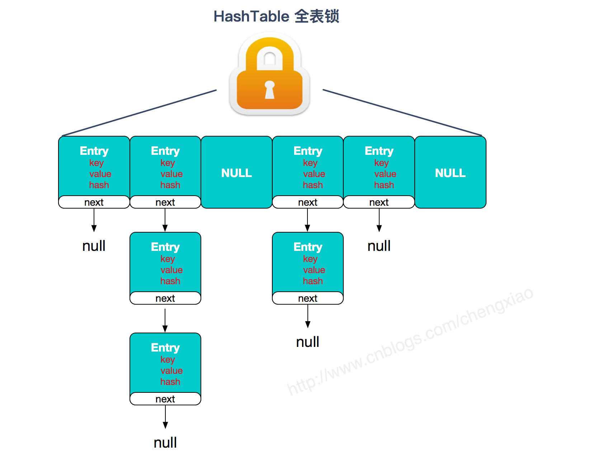
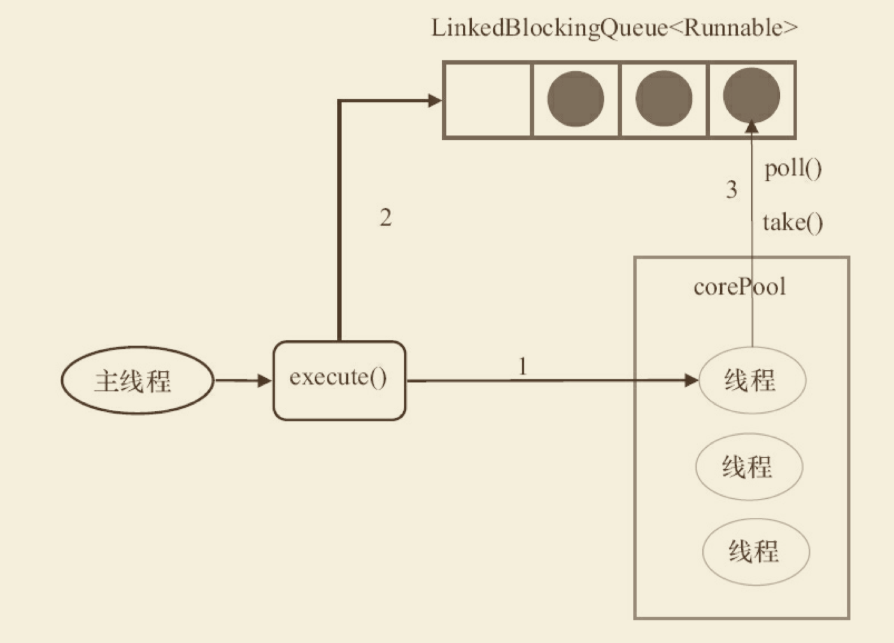
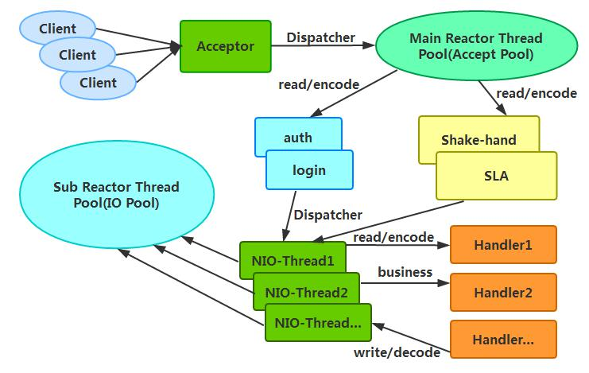
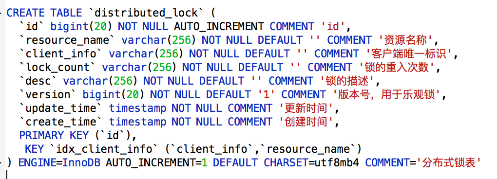

java架构师面试手册
致各位努力搬砖的程序员
小编本人是双非学校，非计算机专业。通过自学2014进入java编程行业，从刚入职场的惴惴不安，经历了各种困难，一步一步迈入高级开发工程师。从18线小公司，到腾讯，再到美团，目前就职于字节跳动，面试也是收到的offer很多。这其中的困难和曲折就不说了，这里只是把我面试的经验和知识总结分享给大家，希望大家早日拿到满意的offer！

本地运行，或者发布到github的gh-pages
- 全局安装mdbook,gh-pages
cargo install mdbook
cargo install mdbook-wordcount
cargo install mdbook-mermaid
- 本地发布和运行
cd java-interview
mdbook build ## 本地build，生成_book
mdbook serve ## 本地运行查看
版权问题
由于早期个别文章都是从网上找的，没有写引用的出处，如果大家看到了，请指正，小编会第一时间更新出处。
一、为什么准备面试？
1、人是容易遗忘的动物，鱼的记忆只有七秒，而人的记忆只有七天。
2、面试造火箭，进去拧螺丝。是目前大厂普遍的现象，很多知识点平常工作是不会用的，但是你必须会，怎么办呢，自己学习，自己准备，
3、不好的面试结果和评价会被记录下来，至少影响你一年的机会。
4、面试官花时间对你就行面试，你啥都不会，这不是浪费人家时间。
二、如何准备面试
基础知识
- 编程语言的基础
- 集合，多线程，
- 锁，垃圾回收等
- 计算机基础
- 操作系统
- 编译原理
- 网络
- 数据库和缓存
- 分布式理论
项目经验
简历包装
内容框架化
准备设备
- 远程面试的电脑
- 好用的耳机和话筒
- 一个安静的面试环境
三、如何面试
java基础的一些基本概念
1、java变量修饰符，
| 修饰符 | 类内部 | 同个包（package） | 子类 | 其他范围 |
|---|---|---|---|---|
| public | Y | Y | Y | Y |
| protected | Y | Y | Y | N |
| 无修饰符 | Y | Y | N or Y(同一个包） | N |
| private | Y | N | N | N |
2、java的基本类型有哪些？多少位？
boolean(1),byte(8),char(16),short(16), int(32),float(32),double(64),long(64)
3、继承
-
定义：继承是使用已存在的类的定义作为基础建立新类的技术，新类的定义可以增加新的数据或新的功能，也可以用父类的功能，但不能选择性地继承父类。
-
说明：继承所描述的是“is-a”的关系，如果有两个对象A和B，若可以描述为“A是B”，则可以表示A继承B，其中B是被继承者称之为父类或者超类，A是继承者称之为子类或者派生类。实际上继承者是被继承者的特殊化，它除了拥有被继承者的特性外，还拥有自己独有得特性
继承的特征
- 子类拥有父类非private的属性和方法。
- 子类可以拥有自己属性和方法，即子类可以对父类进行扩展。
- 子类可以用自己的方式实现父类的方法
4、封装
- 定义：隐藏对象的属性和实现细节，仅对外公开接口,控制在程序中属性的读和修改的访问级别。
- 封装的目的：增强安全性和简化编程，使用者不必了解具体的实现细节，而只是要通过外部接口，一特定的访问权限来使用类的成员。
- 封装的基本要求是:把所有的属性私有化，对每个属性提供getter和setter方法，如果有一个带参的构造函数的话，那一定要写一个不带参的构造函数。在开发的时候经常要对已经编写的类进行测试，所以在有的时候还有重写toString方法，但这不是必须的。
5、多态
多态就是指程序中定义的引用变量所指向的具体类型和通过该引用变量发出的方法调用在编程时并不确定，而是在程序运行期间才确定，即一个引用变量倒底会指向哪个类的实例对象，该引用变量发出的方法调用到底是哪个类中实现的方法，必须在由程序运行期间才能决定。
6、overwrite overload区别
override（重写，覆盖）
- 方法名、参数、返回值相同
- 子类方法不能缩小父类方法的访问权限
- 子类方法不能抛出比父类方法更多的异常(但子类方法可以不抛出异常)
- 存在于父类和子类之间
- 方法被定义为final不能被重写
overload（重载，过载）
- 参数类型、个数、顺序至少有一个不相同。
- 不能重载只有返回值不同的方法名。
- 存在于父类和子类、同类中。
方法的重写(Overriding)和重载(Overloading)是Java多态性的不同表现。 重写(Overriding)是父类与子类之间多态性的一种表现，而重载(Overloading)是一个类中多态性的一种表现。如果在子类中定义某方法与其父类有相同的名称和参数，我们说该方法被重写 (Overriding)。子类的对象使用这个方法时，将调用子类中的定义，对它而言，父类中的定义如同被"屏蔽"了.
7、string,stringBuffer,stringBuild的区别
- String： 不可变字符串
- StringBuffer：可变字符串，线程安全，效率低
- StringBuild：可变字符串，线程不安全，效率高
8、==和equals的区别
- ==是比较两个对象引用地址是否一样，或者基本类型的值是否相等。
- equals在比较两个对象的时候，要根据对象实现的equals方法
9、&和&&的区别
运算执行：
- 对于：& -- > 不管怎样，都会执行"&"符号左右两边的程序
- 对于：&& -- > 只有当符号"&&"左边程序为真(true)后，才会执行符号"&&"右边的程序。
运算规则：
- 对于：& -- > 只要左右两边有一个为false，则为false；只有全部都为true的时候，结果为true
- 对于：&& -- > 只要符号左边为false，则结果为false；当左边为true，同时右边也为true，则结果为true
10、i++和++i的区别
首先int i=1,a=0;
- i++ 先运算在赋值,例如 a=i++,先运算a=i,后运算i=i+1,所以结果是a==1
- ++i 先赋值在运算,例如 a=++i,先运算i=i+1,后运算a=i,所以结果是a==2
11、hashcode和equals方法
- 只要重写 equals，就必须重写 hashCode。
- 因为 Set 存储的是不重复的对象，依据 hashCode 和 equals 进行判断，所以 Set 存储的对象必须重写这两个方法。
- 如果自定义对象做为 Map 的键，那么必须重写 hashCode 和 equals。
12、hashcode和equals方法的重写原则
- 原则 1 ： 如果 x.equals(y) 返回 “true”，那么 x 和 y 的 hashCode() 必须相等 ；
- 原则 2 ： 如果 x.equals(y) 返回 “false”，那么 x 和 y 的 hashCode() 有可能相等，也有可能不等 ；
- 原则 3 ： 如果 x 和 y 的 hashCode() 不相等，那么 x.equals(y) 一定返回 “false” ；
- 原则 4 ： 一般来讲，equals 这个方法是给用户调用的，而 hashcode 方法一般用户不会去调用 ；
- 原则 5 ： 当一个对象类型作为集合对象的元素时，那么这个对象应该拥有自己的equals()和hashCode()设计，而且要遵守前面所说的几个原则。
13、值传递和对象传递
- 对于基本类型，是值传递，
- 对于引用类型，是引用传递。
14、所有类的父类是哪个？有哪些方法？
java中所有类的父类是object，有11个方法：
- protected Object clone() 创建并返回此对象的一个副本。
- boolean equals(Object obj) 指示某个其他对象是否与此对象“相等”。
- int hashCode() 返回该对象的哈希码值。
- String toString() 返回该对象的字符串表示。
- protected void finalize() 当垃圾回收器确定不存在对该对象的更多引用时，由对象的垃圾回收器调用此方法。
- Class<? extendsObject> getClass() 返回一个对象的运行时类。
- void notify() 唤醒在此对象监视器上等待的单个线程。
- void notifyAll() 唤醒在此对象监视器上等待的所有线程。
- void wait() 导致当前的线程等待，直到其他线程调用此对象的 notify() 方法或 notifyAll() 方法。
- void wait(long timeout) 导致当前的线程等待，直到其他线程调用此对象的 notify() 方法或 notifyAll() 方法，或者超过指定的时间量。
- void wait(long timeout, int nanos) 导致当前的线程等待，直到其他线程调用此对象的 notify()
15、final，static，this，super关键字总结
final关键字
final关键字主要用在三个地方：变量、方法、类。
对于一个final变量，如果是基本数据类型的变量，则其数值一旦在初始化之后便不能更改；如果是引用类型的变量，则在对其初始化之后便不能再让其指向另一个对象。
当用final修饰一个类时，表明这个类不能被继承。final类中的所有成员方法都会被隐式地指定为final方法。
使用final方法的原因有两个。第一个原因是把方法锁定，以防任何继承类修改它的含义；第二个原因是效率。在早期的Java实现版本中，会将final方法转为内嵌调用。但是如果方法过于庞大，可能看不到内嵌调用带来的任何性能提升（现在的Java版本已经不需要使用final方法进行这些优化了）。类中所有的private方法都隐式地指定为final。
static关键字
- 修饰成员变量和成员方法: 被 static 修饰的成员属于类，不属于单个这个类的某个对象，被类中所有对象共享，可以并且建议通过类名调用。被static 声明的成员变量属于静态成员变量，静态变量 存放在 Java 内存区域的方法区。调用格式：类名.静态变量名 类名.静态方法名()
- 静态代码块: 静态代码块定义在类中方法外, 静态代码块在非静态代码块之前执行(静态代码块—>非静态代码块—>构造方法)。 该类不管创建多少对象，静态代码块只执行一次.
- 静态内部类（static修饰类的话只能修饰内部类）： 静态内部类与非静态内部类之间存在一个最大的区别: 非静态内部类在编译完成之后会隐含地保存着一个引用，该引用是指向创建它的外围类，但是静态内部类却没有。没有这个引用就意味着：1. 它的创建是不需要依赖外围类的创建。2. 它不能使用任何外围类的非static成员变量和方法。
- 静态导包(用来导入类中的静态资源，1.5之后的新特性): 格式为：import static 这两个关键字连用可以指定导入某个类中的指定静态资源，并且不需要使用类名调用类中静态成员，可以直接使用类中静态成员变量和成员方法。
this关键字
this关键字用于引用类的当前实例。 例如：
class Manager {
Employees[] employees;
void manageEmployees() {
int totalEmp = this.employees.length;
System.out.println("Total employees: " + totalEmp);
this.report();
}
void report() { }
}
在上面的示例中，this关键字用于两个地方：
- this.employees.length：访问类Manager的当前实例的变量。
- this.report（）：调用类Manager的当前实例的方法。 此关键字是可选的，这意味着如果上面的示例在不使用此关键字的情况下表现相同。 但是，使用此关键字可能会使代码更易读或易懂。
super关键字
super关键字用于从子类访问父类的变量和方法。 例如：
public class Super {
protected int number;
protected showNumber() {
System.out.println("number = " + number);
}
}
public class Sub extends Super {
void bar() {
super.number = 10;
super.showNumber();
}
}
在上面的例子中，Sub 类访问父类成员变量 number 并调用其其父类 Super 的 showNumber（） 方法。 使用 this 和 super 要注意的问题：
- 在构造器中使用 super（） 调用父类中的其他构造方法时，该语句必须处于构造器的首行，否则编译器会报错。另外，this 调用本类中的其他构造方法时，也要放在首行。
- this、super不能用在static方法中。
java中二进制操作符号
移位操作符
- ">>" 是带符号右移，若左操作数是正数，则高位补“0”，若左操作数是负数，则高位补“1”.
- "<<" 将左操作数向左边移动，并且在低位补0.
- ">>>" 是无符号右移，无论左操作数是正数还是负数，在高位都补“0”
三种移位符号作用的左操作数有五种：long,int,short,byte,char但是在作用不同的操作数类型时，其具体过程不同, 遵循一下几个原则：
- int移位时，左边的操作数是32位的，此时的移位符号作用在32位bit上。如：1 >> 3, 是将00000000 00000000 00000000 00000001这32位向右边移动3位。
- long 移位时，左边的操作数是64位的，此时移位符号作用在64位bit上。如：1L >> 3。
- short, byte,char 在移位之前首先将数据转换为int，然后再移位，此时移位符号作用在32为bit上。如：(byte)0xff >>> 7, 是将11111111 11111111 11111111 11111111向右边移动7位，得到00000001 11111111 11111111 11111111
- 当左操作数是long时，移位之后得到的类型是long，当左操作数是其它四中类型时，移位之后得到的类型是int，所以如果做操作数是byte,char,short 时，你用 >>=,>>>=, <<= 其实是将得到的int 做低位截取得到的数值。
- 三种移位符号除了对做操作数有操作规则外，其实对右操作数也有操作规则。如果左操作数（转换之后的）是int,那么右操作数只有低５位有效（因为int总共就32位，11111b = 31，所以规定移动32位相当于没有移动）。如：23 >> 33, 结果与23 >>1是一样的，都是11；同理，如果左边操作数是long，那么右边操作数只有低6位有效。
System.out.println(0xff >>> 7);
/*
0xff 本身就是一个int，其bits为：
00000000 00000000 00000000 11111111
无符号向右移动7位， 得到的bits为：
00000000 00000000 00000000 00000001
*/
System.out.println( ((byte) 0xff) >>> 7 );
/*
(byte)0xff 是一个byte，bits为：
11111111
首先转换为int，其bits为：
11111111 11111111 11111111 11111111
向右边无符号移动7为，得到的结果bits是：
00000001 11111111 11111111 11111111
*/
System.out.println( (byte) (((byte) 0xff) >>> 7) );
/*
(byte) 0xff 是一个byte，bits为：
11111111
首先转换为int，其bits为：
11111111 11111111 11111111 11111111
向右边无符号移动7为，得到的结果bits是：
00000001 11111111 11111111 11111111
然后转换为byte，低位截取得到bits:11111111
<在输出的时候转换为int，其bits为：
11111111 11111111 11111111 11111111>
*/
位异或操作（^）
运算规则：两个数转为二进制，然后从高位比较，如果相同则为0，不相同为1。
比如：8^11.
8转为二进制是1000，11转为二进制是1011，从高位开始比较得到的是：0011.然后二进制转为十进制，就是`Integer.parseInt("0011",2)=3;`
位与运算符（&）
运算规则：两个数转为二进制，然后从高位比较，如果两个数都是1则为1，否则为0。
比如：129&128.
129转换成二进制就是10000001，128转换成二进制就是10000000。从高位开始比较得到，得到10000000，即128。
位或运算符（|）
运算规则：两个数都转为二进制，然后从高位开始比较，两个数只要有一个为1则为1，否则为0.
比如：129|128.
129转换成二进制就是10000001，128转换成二进制就是10000000。从高位开始比较得到，得到10000001，即129.
位非运算符（~）
运算规则：如果位为0，结果是1，如果位为1，结果是0.
比如：~37
在Java中，所有数据的表示方法都是以补码的形式表示，如果没有特殊说明，Java中的数据类型默认是int,int数据类型的长度是8位，一位是四个字节，就是32字节，32bit.
8转为二进制是100101.
补码后为： 00000000 00000000 00000000 00100101
取反为： 11111111 11111111 11111111 11011010
因为高位是1，所以原码为负数，负数的补码是其绝对值的原码取反，末尾再加1。
因此，我们可将这个二进制数的补码进行还原：
首先，末尾减1得反码： 11111111 11111111 11111111 11011001
其次，将各位取反得原码：00000000 00000000 00000000 00100110，
此时二进制转原码为38
所以~37 = -38.
参考链接：
https://blog.csdn.net/xuejianbest/article/details/84792311 https://www.cnblogs.com/yesiamhere/p/6675067.html
java EE规范
Java EE（Java Platform, Enterprise Edition），现在更名为 Jakarta EE，是一套用于企业级Java应用开发的规范和技术标准。Java EE提供了一系列API和服务，以支持开发和部署分布式、可扩展、可安全访问的企业级应用程序。以下是Java EE规范的主要方面：
1. Servlet API:
- Servlet是用于处理Web请求和生成动态内容的Java程序。Servlet API定义了与HTTP请求和响应相关的类和接口。
2. JSP（JavaServer Pages）:
- JSP允许在Java代码中嵌入HTML，使得动态内容的生成更为简便。JSP是一种模板语言，可用于创建动态Web页面。
3. JPA（Java Persistence API）:
- JPA是用于实现对象关系映射（ORM）的规范，用于将Java对象映射到数据库表。它简化了数据持久性的开发。
4. EJB（Enterprise JavaBeans）:
- EJB提供了一种构建分布式、事务性企业级应用的标准方式。包括Session Bean、Message-Driven Bean和Entity Bean等组件。
5. JMS（Java Message Service）:
- JMS定义了Java平台上的消息中间件的API，用于在分布式系统中进行异步消息通信。
6. JTA（Java Transaction API）:
- JTA为Java应用程序提供了分布式事务处理的API。它允许开发者在多个资源上执行事务操作。
7. JCA（Java Connector Architecture）:
- JCA定义了一套标准的架构，允许Java EE应用程序与企业信息系统（EIS）进行连接。
8. JavaMail API:
- JavaMail提供了用于发送和接收电子邮件的API，是构建与电子邮件相关的企业级应用程序的标准。
9. Java Authentication and Authorization Service (JAAS):
- JAAS提供了在Java应用程序中进行身份验证和授权的标准API。
10. JAX-RS（Java API for RESTful Web Services）:
- JAX-RS是用于构建RESTful Web服务的规范，支持通过HTTP协议进行资源的创建、读取、更新和删除操作。
11. JAXB（Java Architecture for XML Binding）:
- JAXB定义了将Java对象与XML文档进行相互转换的标准方式。
12. WebSocket API:
- WebSocket API提供了一种在Web应用程序中进行全双工通信的标准方式。
13. Java EE Connector Architecture:
- Java EE Connector Architecture提供了一种标准的方式，用于连接Java EE应用程序与企业信息系统（EIS）之间的连接器。
Java EE规范的每个版本都引入了新的特性、改进和对新技术的支持。然而，需要注意的是，随着Java EE的发展，Java EE规范已经转交给了Eclipse Foundation，并更名为 Jakarta EE。因此，后续的 Jakarta EE 规范将由 Eclipse Foundation 负责制定和推进。
servlet的生命周期
- 只有一个Servlet对象（要点）
- 第一次请求的时候被初始化，只此一遍
- 初始化后先调用init方法，只此一遍
- 每个请求，调用一遍service -> service -> doGet/doPost。以多线程的方式运行
- 卸载前调用destroy方法
servlet规范
Servlet规范是一组Java API（Application Programming Interface，应用程序编程接口）规范，用于在Java EE（Enterprise Edition，企业版）平台上开发基于HTTP协议的Web应用程序。Servlet是一种Java程序，通过Servlet容器（如Tomcat）运行，用于处理Web请求和生成动态Web内容。
以下是一些关键的Servlet规范特性和概念：
-
Servlet类： Servlet是一个Java类，通常扩展自
javax.servlet.http.HttpServlet类。开发人员需要实现Servlet类，并覆盖一些生命周期方法来处理请求和生成响应。 -
生命周期方法： Servlet生命周期由容器管理。Servlet容器在需要时会调用Servlet的生命周期方法，包括
init()（初始化）、service()（处理请求）、destroy()（销毁）等。 -
请求和响应对象： Servlet使用
HttpServletRequest和HttpServletResponse对象来处理HTTP请求和生成HTTP响应。这些对象封装了与请求和响应相关的信息，例如参数、头部、内容等。 -
URL映射： Servlet通过在
web.xml配置文件或使用注解来定义URL模式，以便Servlet容器能够将特定URL请求映射到相应的Servlet类。 -
Session管理： Servlet规范提供了
HttpSession接口，用于在客户端和服务器之间跟踪用户的会话状态。通过会话，可以在多个请求之间保持用户相关的信息。 -
过滤器： Servlet过滤器是一种机制，允许在请求到达Servlet之前或响应离开Servlet之后执行一些处理。过滤器可用于修改请求、响应，或者执行其他与请求和响应相关的任务。
-
监听器： Servlet规范定义了一些事件和监听器，用于在Web应用程序生命周期中捕获事件。例如，
ServletContextListener可用于在Web应用程序启动和关闭时执行一些操作。 -
异步处理： Servlet规范支持异步处理，允许Servlet在处理请求时挂起线程，而不必等待操作完成。这有助于提高Web应用程序的性能和并发性。
Servlet规范的版本会随着时间推移而更新，每个版本都引入了新的功能和改进。开发人员可以根据Java EE平台的版本选择相应的Servlet规范版本。在现代的Java开发中，Servlet规范通常与Java EE的其他规范一起使用，如JSP（JavaServer Pages）、JNDI（Java Naming and Directory Interface）等。
cookie和session
cookie:客户端保存，大小有限制，容易被篡改 session:服务器保存，大小无限制，
java发展历史
我们先来看看java成立到现在的所有版本。 1990年初，最初被命名为Oak；
1995年5月23日，Java语言诞生；
1996年1月，第一个JDK-JDK1.0诞生；
1996年4月，10个最主要的操作系统供应商申明将在其产品中嵌入Java技术；
1996年9月，约8.3万个网页应用了Java技术来制作；
1997年2月18日，JDK1.1发布；
1997年4月2日，JavaOne会议召开，参与者逾一万人，创当时全球同类会议纪录；
1997年9月，JavaDeveloperConnection社区成员超过十万；
1998年2月，JDK1.1被下载超过2,000,000次；
1998年12月8日，Java 2企业平台J2EE发布；
1999年6月，SUN公司发布Java三个版本：标准版（J2SE）、企业版（J2EE）和微型版（J2ME）；
2000年5月8日，JDK1.3发布；
2000年5月29日，JDK1.4发布；
2001年6月5日，Nokia宣布到2003年将出售1亿部支持Java的手机；
2001年9月24日，J2EE1.3发布；
2002年2月26日，J2SE1.4发布，此后Java的计算能力有了大幅提升；
2004年9月30日，J2SE1.5发布，成为Java语言发展史上的又一里程碑。为了表示该版本的重要性，J2SE1.5更名为Java SE 5.0；
2005年6月，JavaOne大会召开，SUN公司公开Java SE 6。此时，Java的各种版本已经更名，以取消其中的数字“2”：J2EE更名为Java EE，J2SE更名为Java SE，J2ME更名为Java ME；
2006年12月，SUN公司发布JRE6.0；
2009年4月20日，甲骨文以74亿美元的价格收购SUN公司，取得java的版权，业界传闻说这对Java程序员是个坏消息（其实恰恰相反）；
2010年11月，由于甲骨文对Java社区的不友善，因此Apache扬言将退出JCP；
2011年7月28日，甲骨文发布Java SE 7；
2014年3月18日，甲骨文发表Java SE 8；
2017年7月，甲骨文发表Java SE 9。
jdk1.5
- 自动装箱和拆箱
- 枚举
- 静态导入
- 可变参数
- 内省
- 泛型
- for-each循环
jdk1.6
- Desktop和systemtTray
- 使用JAXB2来实现对象与XML之间的映射
- 理解StAX
- 使用Compiler API
- 轻量级Http Server API
- 插入式注解处理API(Pluggable Annotation Processing API)
- 用Console开发控制台程序
- 对脚本语言的支持如: ruby, groovy, javascript.
- Common Annotations
jdk1.7
- switch中可以使用字串了
- 泛型实例化类型自动推断
- 自定义自动关闭类，自动关闭资源
- 新增一些取环境信息的工具方法
- Boolean类型反转，空指针安全,参与位运算
- 两个char间的equals
- 安全的加减乘除
- 对Java集合（Collections）的增强支持
- try catch异常扑捉中，一个catch可以写多个异常类型，用"|"隔开
- 支持二进制文字
jdk1.8
- 接口的默认方法
- Lambda 表达式
- 函数式接口
- 方法与构造函数引用
- lambda访问局部变量
- Date api更新
jdk1.9
- 实现模块化系统
- HTTP/2支持,package:java.net.http
- JShell
- 不可变集合工厂方法
- 私有接口方法
- HTML5风格的Java帮助文档
- 多版本兼容 JAR
- 统一 JVM 日志
- G1设置为默认垃圾回收
- I/O 流新特性
jdk10
- 局部变量的类型推断
- 将 JDK 的多个代码仓库合并到一个储存库中
- 垃圾收集器接口
- 向 G1 引入并行 Full GC
- 应用类数据共享。
- 线程局部管控。允许停止单个线程，而不是只能启用或停止所有线程
- 移除 Native-Header Generation Tool (javah)
- 额外的 Unicode 语言标签扩展。包括：cu (货币类型)、fw (每周第一天为星期几)、rg (区域覆盖)、tz (时区)
- 在备用内存设备上分配堆内存。允许 HotSpot 虚拟机在备用内存设备上分配 Java 对象堆
- 基于 Java 的 JIT 编译器（试验版本）
- 根证书。开源 Java SE Root CA 程序中的根证书
- 基于时间的版本发布模式。“Feature releases” 版本将包含新特性，“Update releases” 版本仅修复 Bug
javaIo流详解
字节流和字符流的区别
字节流读取的时候，读到一个字节就返回一个字节； 字符流使用了字节流读到一个或多个字节（中文对应的字节 数是两个，在 UTF-8 码表中是 3 个字节）时。先去查指定的编码表，将查到的字符返回。 字节流可以处理所有类型数 据，如：图片，MP3，AVI 视频文件，而字符流只能处理字符数据。只要是处理纯文本数据，就要优先考虑使用字符 流，除此之外都用字节流。字节流主要是操作 byte 类型数据，以 byte 数组为准，主要操作类就是 OutputStream、 InputStream
字符流处理的单元为 2 个字节的 Unicode 字符，分别操作字符、字符数组或字符串，而字节流处理单元为 1 个字 节，操作字节和字节数组。所以字符流是由 Java 虚拟机将字节转化为2个字节的 Unicode 字符为单位的字符而成的， 所以它对多国语言支持性比较好！如果是音频文件、图片、歌曲，就用字节流好点，如果是关系到中文（文本）的，用字符流好点。在程序中一个字符等于两个字节，java 提供了 Reader、Writer两个专门操作字符流的类。
字节流如何转为字符流
字节输入流转字符输入流通过 InputStreamReader 实现，该类的构造函数可以传入 InputStream 对象。 字节输出流转字符输出流通过 OutputStreamWriter 实现，该类的构造函数可以传入 OutputStream 对象。
字符流类图

字节流类图

bio定义
BIO (Blocking I/O): 同步阻塞I/O模式，数据的读取写入必须阻塞在一个线程内等待其完成。在活动连接数不是特别高（小于单机1000）的情况下，这种模型是比较不错的，可以让每一个连接专注于自己的 I/O 并且编程模型简单，也不用过多考虑系统的过载、限流等问题。线程池本身就是一个天然的漏斗，可以缓冲一些系统处理不了的连接或请求。但是，当面对十万甚至百万级连接的时候，传统的 BIO 模型是无能为力的。因此，我们需要一种更高效的 I/O 处理模型来应对更高的并发量。
bio实现文件读写
/**
* BIO模式
* FileReader逐个字符读取文件,FileReader extends InputStreamReader
* 读取文件中内容到字符数组中
* 如何确定字符数组长度：
* FileReader不能自定义编码读取
* 此方法也可以用于读取二进制文件,只不过读取出来有很多乱码
* @param fileName
* @return
* @throws IOException
*/
public static char[] readByOneCharWithDefaultEncoding(String fileName) throws IOException{
File file = new File(fileName);
FileReader fileReader = new FileReader(file); // 不能自定义编码,内部默认采用系统的编码
System.out.println("当前采用编码: " + fileReader.getEncoding());
char[] charcters = new char[1024];
int result = fileReader.read(); // 逐个字符读取，不能按行读取
int i = 0;
while(result != -1 && i < 1024){
char temp = (char)result;
charcters[i] = temp;
i++;
result = fileReader.read();
}
fileReader.close();
return charcters;
}
bio服务器
//BIO服务端源码
public final class ServerNormal {
//默认的端口号
private static int DEFAULT_PORT = 12345;
//单例的ServerSocket
private static ServerSocket server;
//根据传入参数设置监听端口，如果没有参数调用以下方法并使用默认值
public static void start() throws IOException{
//使用默认值
start(DEFAULT_PORT);
}
//这个方法不会被大量并发访问，不太需要考虑效率，直接进行方法同步就行了
public synchronized static void start(int port) throws IOException{
if(server != null) return;
try{
//通过构造函数创建ServerSocket
//如果端口合法且空闲，服务端就监听成功
server = new ServerSocket(port);
System.out.println("服务器已启动，端口号：" + port);
//通过无线循环监听客户端连接
//如果没有客户端接入，将阻塞在accept操作上。
while(true){
Socket socket = server.accept();
//当有新的客户端接入时，会执行下面的代码
//然后创建一个新的线程处理这条Socket链路
new Thread(new ServerHandler(socket)).start();
}
}finally{
//一些必要的清理工作
if(server != null){
System.out.println("服务器已关闭。");
server.close();
server = null;
}
}
}
}
bio的服务处理handler
/**
* 客户端线程
*/
public class ServerHandler implements Runnable{
private Socket socket;
public ServerHandler(Socket socket) {
this.socket = socket;
}
@Override
public void run() {
BufferedReader in = null;
PrintWriter out = null;
try{
in = new BufferedReader(new InputStreamReader(socket.getInputStream()));
out = new PrintWriter(socket.getOutputStream(),true);
String expression;
String result;
while(true){
//通过BufferedReader读取一行
//如果已经读到输入流尾部，返回null,退出循环
//如果得到非空值，就尝试计算结果并返回
if((expression = in.readLine())==null) break;
System.out.println("服务器收到消息：" + expression);
try{
result = Calculator.cal(expression).toString();
}catch(Exception e){
result = "计算错误：" + e.getMessage();
}
out.println(result);
}
}catch(Exception e){
e.printStackTrace();
}finally{
//一些必要的清理工作
if(in != null){
try {
in.close();
} catch (IOException e) {
e.printStackTrace();
}
in = null;
}
if(out != null){
out.close();
out = null;
}
if(socket != null){
try {
socket.close();
} catch (IOException e) {
e.printStackTrace();
}
socket = null;
}
}
}
}
bio客户端
/**
* 阻塞式I/O创建的客户端
*/
public class Client {
//默认的端口号
private static int DEFAULT_SERVER_PORT = 12345;
private static String DEFAULT_SERVER_IP = "127.0.0.1";
public static void send(String expression){
send(DEFAULT_SERVER_PORT,expression);
}
public static void send(int port,String expression){
System.out.println("算术表达式为：" + expression);
Socket socket = null;
BufferedReader in = null;
PrintWriter out = null;
try{
socket = new Socket(DEFAULT_SERVER_IP,port);
in = new BufferedReader(new InputStreamReader(socket.getInputStream()));
out = new PrintWriter(socket.getOutputStream(),true);
out.println(expression);
System.out.println("___结果为：" + in.readLine());
}catch(Exception e){
e.printStackTrace();
}finally{
//一下必要的清理工作
if(in != null){
try {
in.close();
} catch (IOException e) {
e.printStackTrace();
}
in = null;
}
if(out != null){
out.close();
out = null;
}
if(socket != null){
try {
socket.close();
} catch (IOException e) {
e.printStackTrace();
}
socket = null;
}
}
}
}
java Nio原理
io和NIO的区别
IO：面向流，阻塞IO NIO：面向缓冲，非阻塞IO，选择器 NIO (New I/O): NIO是一种同步非阻塞的I/O模型，在Java 1.4 中引入了NIO框架，对应 java.nio 包，提供了 Channel , Selector，Buffer等抽象。NIO中的N可以理解为Non-blocking，不单纯是New。它支持面向缓冲的，基于通道的I/O操作方法。 NIO提供了与传统BIO模型中的 Socket 和 ServerSocket 相对应的 SocketChannel 和 ServerSocketChannel 两种不同的套接字通道实现,两种通道都支持阻塞和非阻塞两种模式。阻塞模式使用就像传统中的支持一样，比较简单，但是性能和可靠性都不好；非阻塞模式正好与之相反。对于低负载、低并发的应用程序，可以使用同步阻塞I/O来提升开发速率和更好的维护性；对于高负载、高并发的（网络）应用，应使用 NIO 的非阻塞模式来开发
Java NIO 由以下几个核心部分组成：
- Channels
- Buffers：与channel可以相互存取数据
- Selectors：允许单线程处理多个 Channel
常用的channel
- FileChannel 从文件中读写数据。
- DatagramChannel 能通过 UDP 读写网络中的数据。
- SocketChannel 能通过 TCP 读写网络中的数据。
- ServerSocketChannel 可以监听TCP连接，像Web服务器那样。对每一个新进来的连接都会创建一个 SocketChannel。
- DatagramChannel是一个能收发UDP包的通道。因为UDP是无连接的网络协议，所以不能像其它通道那样读取和写入。它发送和接收的是数据包。
nio实现文件读写
nio实现简单服务器
nio实现客户端
java aio定义
AIO (Asynchronous I/O): AIO 也就是 NIO 2。在 Java 7 中引入了 NIO 的改进版 NIO 2,它是异步非阻塞的IO模型。异步 IO 是基于事件和回调机制实现的，也就是应用操作之后会直接返回，不会堵塞在那里，当后台处理完成，操作系统会通知相应的线程进行后续的操作。AIO 是异步IO的缩写，虽然 NIO 在网络操作中，提供了非阻塞的方法，但是 NIO 的 IO 行为还是同步的。
java aio的实现
在Java中，异步I/O主要通过以下两个类来实现：
-
AsynchronousChannelGroup：
AsynchronousChannelGroup是一个可以用于管理异步通道的组。异步通道是支持异步I/O操作的通道，例如AsynchronousSocketChannel和AsynchronousFileChannel。
-
AsynchronousChannel：
AsynchronousChannel是一个支持异步I/O操作的通道接口，包括读取和写入。常见的实现类有AsynchronousSocketChannel和AsynchronousFileChannel。
下面是一个简单的使用异步I/O的例子，使用AsynchronousFileChannel进行文件读取：
import java.nio.ByteBuffer;
import java.nio.channels.AsynchronousFileChannel;
import java.nio.channels.CompletionHandler;
import java.nio.file.Path;
import java.nio.file.Paths;
import java.util.concurrent.ExecutorService;
import java.util.concurrent.Executors;
public class AsyncFileIOExample {
public static void main(String[] args) {
try {
Path filePath = Paths.get("example.txt");
AsynchronousFileChannel fileChannel = AsynchronousFileChannel.open(filePath);
ByteBuffer buffer = ByteBuffer.allocate(1024);
ExecutorService executor = Executors.newFixedThreadPool(10);
fileChannel.read(buffer, 0, buffer, new CompletionHandler<Integer, ByteBuffer>() {
@Override
public void completed(Integer result, ByteBuffer attachment) {
System.out.println("Read " + result + " bytes");
attachment.flip();
System.out.println("Content: " + new String(attachment.array()));
}
@Override
public void failed(Throwable exc, ByteBuffer attachment) {
System.err.println("Error: " + exc.getMessage());
}
});
// Do other tasks while the I/O operation is in progress
executor.shutdown();
} catch (Exception e) {
e.printStackTrace();
}
}
}
在上述例子中，文件读取操作是异步的，CompletionHandler用于在I/O操作完成时得到通知。在实际应用中，异步I/O常用于处理大量的并发连接或需要进行并行I/O操作的场景，以提高系统的性能和响应速度。
java集合总结：集合的数据结构和性能对比
相比c或者c++而言，java提供了丰富的集合工具类，开发者几乎开箱即用。不需要自定义一堆集合类。
集合遍历方式
- 普通for循环
- for Each循环
- Iterator迭代
- lam 表达式
list
功能：动态的数组，存普通的列表数据，有序。 ArrayList(数据结构) LinkedList(链表结构)
循环删除元素：Iterator(迭代器循环)
set
功能：用于去重，存储不同的元素，没有顺序。 HashSet LinkedHashSet
map
功能：存储key-value类型的数据，key不允许重复，没有顺序 HashMap LinkedHashMap（有序） TreeMap（能排序）
并发容器
功能：用于多线程场景下并发安全的容器。 ConrrentHashMap HashTable（悲观锁） Vector（悲观锁）
Java的基本数据类型都有哪些各占几个字节?
- byte 1
- boolean 1（boolean 类型比较特别可能只占一个 bit，多个 boolean 可能共同占用一个字节）
- char 2
- short 2
- int 4
- float 4
- double 8
- long 8
java集合类图

所有的集合类，都实现了Iterator接口，这是一个用于遍历集合中元素的接口，主要包含 hashNext(),next(),remove()三种方法。它的一个子接口LinkedIterator在它的基础上又添加了三种方法，分别是 add(),previous(),hasPrevious()。也就是说如果是先Iterator接口，那么在遍历集合中元素的时候，只能往后遍历，被 遍历后的元素不会在遍历到，通常无序集合实现的都是这个接口，比如HashSet，HashMap；
而那些元素有序的集合，实现的一般都是 LinkedIterator接口，实现这个接口的集合可以双向遍历，既可以通过next()访问下一个元素，又可以通过previous()访问前一个 元素，比如ArrayList。
数组
数组性能最高，但是无法动态扩容，操作不方便。
ArrayList(jdk1.8)
实现了List
初始化容量：10 当容量满的时候进行扩容：
private static final int DEFAULT_CAPACITY = 10;
int newCapacity = oldCapacity + (oldCapacity >> 1);
ArrayList 的底层是数组队列，相当于动态数组。与 Java 中的数组相比，它的容量能动态增长。在添加大量元素前，应用程序可以使用ensureCapacity操作来增加 ArrayList 实例的容量。这可以减少递增式再分配的数量。
它继承于 AbstractList，实现了 List, RandomAccess, Cloneable, java.io.Serializable 这些接口。
在我们学数据结构的时候就知道了线性表的顺序存储，插入删除元素的时间复杂度为O（n）,求表长以及增加元素，取第 i 元素的时间复杂度为O（1）
ArrayList 继承了AbstractList，实现了List。它是一个数组队列，提供了相关的添加、删除、修改、遍历等功能。
ArrayList 实现了RandomAccess 接口， RandomAccess 是一个标志接口，表明实现这个这个接口的 List 集合是支持快速随机访问的。在 ArrayList 中，我们即可以通过元素的序号快速获取元素对象，这就是快速随机访问。
ArrayList 实现了Cloneable 接口，即覆盖了函数 clone()，能被克隆。
ArrayList 实现java.io.Serializable 接口，这意味着ArrayList支持序列化，能通过序列化去传输。和 Vector 不同，ArrayList 中的操作不是线程安全的！所以，建议在单线程中才使用 ArrayList，而在多线程中可以选择 Vector 或者 CopyOnWriteArrayList。
LinkedList
实现了List
底层数据结构是一个双向链表。可以在任何位置进行高效地插入和删除操作的有序序列。
ArrayList和LinkedList区别
- **线程安全：**ArrayList 和 LinkedList 都是不同步的，也就是不保证线程安全；
- **数据结构：**ArrayList是实现了基于动态数组的数据结构，LinkedList基于双向链表的数据结构。
- **是否支持快速随机访问：**对于随机访问get和set，ArrayList优于LinkedList，时间复杂度位O(1)，因为LinkedList要移动指针，ArrayList口语通过下标访问。
- 对于新增和删除操作add和remove，LinkedList比较占优势，时间复杂度位O(1)，因为ArrayList要移动数据，而LinkedList。
- 内存空间占用： ArrayList的空 间浪费主要体现在在list列表的结尾会预留一定的容量空间，而LinkedList的空间花费则体现在它的每一个元素都需要消耗比ArrayList更多的空间（因为要存放直接后继和直接前驱以及数据）。
一 先从 ArrayList 的构造函数说起
ArrayList有三种方式来初始化，构造方法源码如下：
/**
* 默认初始容量大小
*/
private static final int DEFAULT_CAPACITY = 10;
private static final Object[] DEFAULTCAPACITY_EMPTY_ELEMENTDATA = {};
/**
*默认构造函数，使用初始容量10构造一个空列表(无参数构造)
*/
public ArrayList() {
this.elementData = DEFAULTCAPACITY_EMPTY_ELEMENTDATA;
}
/**
* 带初始容量参数的构造函数。（用户自己指定容量）
*/
public ArrayList(int initialCapacity) {
if (initialCapacity > 0) {//初始容量大于0
//创建initialCapacity大小的数组
this.elementData = new Object[initialCapacity];
} else if (initialCapacity == 0) {//初始容量等于0
//创建空数组
this.elementData = EMPTY_ELEMENTDATA;
} else {//初始容量小于0，抛出异常
throw new IllegalArgumentException("Illegal Capacity: "+
initialCapacity);
}
}
/**
*构造包含指定collection元素的列表，这些元素利用该集合的迭代器按顺序返回
*如果指定的集合为null，throws NullPointerException。
*/
public ArrayList(Collection<? extends E> c) {
elementData = c.toArray();
if ((size = elementData.length) != 0) {
// c.toArray might (incorrectly) not return Object[] (see 6260652)
if (elementData.getClass() != Object[].class)
elementData = Arrays.copyOf(elementData, size, Object[].class);
} else {
// replace with empty array.
this.elementData = EMPTY_ELEMENTDATA;
}
}
细心的同学一定会发现 ：以无参数构造方法创建 ArrayList 时，实际上初始化赋值的是一个空数组。当真正对数组进行添加元素操作时，才真正分配容量。即向数组中添加第一个元素时，数组容量扩为10。 下面在我们分析 ArrayList 扩容时会讲到这一点内容！
二 一步一步分析 ArrayList 扩容机制
这里以无参构造函数创建的 ArrayList 为例分析
1. 先来看 add 方法
/**
* 将指定的元素追加到此列表的末尾。
*/
public boolean add(E e) {
//添加元素之前，先调用ensureCapacityInternal方法
ensureCapacityInternal(size + 1); // Increments modCount!!
//这里看到ArrayList添加元素的实质就相当于为数组赋值
elementData[size++] = e;
return true;
}
2. 再来看看 ensureCapacityInternal() 方法
可以看到 add 方法 首先调用了ensureCapacityInternal(size + 1)
//得到最小扩容量
private void ensureCapacityInternal(int minCapacity) {
if (elementData == DEFAULTCAPACITY_EMPTY_ELEMENTDATA) {
// 获取默认的容量和传入参数的较大值
minCapacity = Math.max(DEFAULT_CAPACITY, minCapacity);
}
ensureExplicitCapacity(minCapacity);
}
当 要 add 进第1个元素时，minCapacity为1，在Math.max()方法比较后，minCapacity 为10。
3. ensureExplicitCapacity() 方法
如果调用 ensureCapacityInternal() 方法就一定会进过（执行）这个方法，下面我们来研究一下这个方法的源码！
//判断是否需要扩容
private void ensureExplicitCapacity(int minCapacity) {
modCount++;
// overflow-conscious code
if (minCapacity - elementData.length > 0)
//调用grow方法进行扩容，调用此方法代表已经开始扩容了
grow(minCapacity);
}
我们来仔细分析一下：
- 当我们要 add 进第1个元素到 ArrayList 时，elementData.length 为0 （因为还是一个空的 list），因为执行了
ensureCapacityInternal()方法 ，所以 minCapacity 此时为10。此时，minCapacity - elementData.length > 0成立，所以会进入grow(minCapacity)方法。 - 当add第2个元素时，minCapacity 为2，此时e lementData.length(容量)在添加第一个元素后扩容成 10 了。此时，
minCapacity - elementData.length > 0不成立，所以不会进入 （执行）grow(minCapacity)方法。 - 添加第3、4···到第10个元素时，依然不会执行grow方法，数组容量都为10。
直到添加第11个元素，minCapacity(为11)比elementData.length（为10）要大。进入grow方法进行扩容。
4. grow() 方法
/**
* 要分配的最大数组大小
*/
private static final int MAX_ARRAY_SIZE = Integer.MAX_VALUE - 8;
/**
* ArrayList扩容的核心方法。
*/
private void grow(int minCapacity) {
// oldCapacity为旧容量，newCapacity为新容量
int oldCapacity = elementData.length;
//将oldCapacity 右移一位，其效果相当于oldCapacity /2，
//我们知道位运算的速度远远快于整除运算，整句运算式的结果就是将新容量更新为旧容量的1.5倍，
int newCapacity = oldCapacity + (oldCapacity >> 1);
//然后检查新容量是否大于最小需要容量，若还是小于最小需要容量，那么就把最小需要容量当作数组的新容量，
if (newCapacity - minCapacity < 0)
newCapacity = minCapacity;
// 如果新容量大于 MAX_ARRAY_SIZE,进入(执行) `hugeCapacity()` 方法来比较 minCapacity 和 MAX_ARRAY_SIZE，
//如果minCapacity大于最大容量，则新容量则为`Integer.MAX_VALUE`，否则，新容量大小则为 MAX_ARRAY_SIZE 即为 `Integer.MAX_VALUE - 8`。
if (newCapacity - MAX_ARRAY_SIZE > 0)
newCapacity = hugeCapacity(minCapacity);
// minCapacity is usually close to size, so this is a win:
elementData = Arrays.copyOf(elementData, newCapacity);
}
int newCapacity = oldCapacity + (oldCapacity >> 1),所以 ArrayList 每次扩容之后容量都会变为原来的 1.5 倍！（JDK1.6版本以后） JDk1.6版本时，扩容之后容量为 1.5 倍+1！详情请参考源码
">>"（移位运算符）：>>1 右移一位相当于除2，右移n位相当于除以 2 的 n 次方。这里 oldCapacity 明显右移了1位所以相当于oldCapacity /2。对于大数据的2进制运算,位移运算符比那些普通运算符的运算要快很多,因为程序仅仅移动一下而已,不去计算,这样提高了效率,节省了资源 我们再来通过例子探究一下
grow()方法 ：
- 当add第1个元素时，oldCapacity 为0，经比较后第一个if判断成立，newCapacity = minCapacity(为10)。但是第二个if判断不会成立，即newCapacity 不比 MAX_ARRAY_SIZE大，则不会进入
hugeCapacity方法。数组容量为10，add方法中 return true,size增为1。 - 当add第11个元素进入grow方法时，newCapacity为15，比minCapacity（为11）大，第一个if判断不成立。新容量没有大于数组最大size，不会进入hugeCapacity方法。数组容量扩为15，add方法中return true,size增为11。
- 以此类推······
这里补充一点比较重要，但是容易被忽视掉的知识点：
- java 中的
length属性是针对数组说的,比如说你声明了一个数组,想知道这个数组的长度则用到了 length 这个属性. - java 中的
length()方法是针对字符串说的,如果想看这个字符串的长度则用到length()这个方法. - java 中的
size()方法是针对泛型集合说的,如果想看这个泛型有多少个元素,就调用此方法来查看!
5. hugeCapacity() 方法。
从上面 grow() 方法源码我们知道： 如果新容量大于 MAX_ARRAY_SIZE,进入(执行) hugeCapacity() 方法来比较 minCapacity 和 MAX_ARRAY_SIZE，如果minCapacity大于最大容量，则新容量则为Integer.MAX_VALUE，否则，新容量大小则为 MAX_ARRAY_SIZE 即为 Integer.MAX_VALUE - 8。
private static int hugeCapacity(int minCapacity) {
if (minCapacity < 0) // overflow
throw new OutOfMemoryError();
//对minCapacity和MAX_ARRAY_SIZE进行比较
//若minCapacity大，将Integer.MAX_VALUE作为新数组的大小
//若MAX_ARRAY_SIZE大，将MAX_ARRAY_SIZE作为新数组的大小
//MAX_ARRAY_SIZE = Integer.MAX_VALUE - 8;
return (minCapacity > MAX_ARRAY_SIZE) ?
Integer.MAX_VALUE :
MAX_ARRAY_SIZE;
}
三 System.arraycopy() 和 Arrays.copyOf()方法
阅读源码的话，我们就会发现 ArrayList 中大量调用了这两个方法。比如：我们上面讲的扩容操作以及add(int index, E element)、toArray() 等方法中都用到了该方法！
3.1 System.arraycopy() 方法
/**
* 在此列表中的指定位置插入指定的元素。
*先调用 rangeCheckForAdd 对index进行界限检查；然后调用 ensureCapacityInternal 方法保证capacity足够大；
*再将从index开始之后的所有成员后移一个位置；将element插入index位置；最后size加1。
*/
public void add(int index, E element) {
rangeCheckForAdd(index);
ensureCapacityInternal(size + 1); // Increments modCount!!
//arraycopy()方法实现数组自己复制自己
//elementData:源数组;index:源数组中的起始位置;elementData：目标数组；index + 1：目标数组中的起始位置； size - index：要复制的数组元素的数量；
System.arraycopy(elementData, index, elementData, index + 1, size - index);
elementData[index] = element;
size++;
}
我们写一个简单的方法测试以下：
public class ArraycopyTest {
public static void main(String[] args) {
// TODO Auto-generated method stub
int[] a = new int[10];
a[0] = 0;
a[1] = 1;
a[2] = 2;
a[3] = 3;
System.arraycopy(a, 2, a, 3, 3);
a[2]=99;
for (int i = 0; i < a.length; i++) {
System.out.println(a[i]);
}
}
}
结果：
0 1 99 2 3 0 0 0 0 0
3.2 Arrays.copyOf()方法
/**
以正确的顺序返回一个包含此列表中所有元素的数组（从第一个到最后一个元素）; 返回的数组的运行时类型是指定数组的运行时类型。
*/
public Object[] toArray() {
//elementData：要复制的数组；size：要复制的长度
return Arrays.copyOf(elementData, size);
}
个人觉得使用 Arrays.copyOf()方法主要是为了给原有数组扩容，测试代码如下：
public class ArrayscopyOfTest {
public static void main(String[] args) {
int[] a = new int[3];
a[0] = 0;
a[1] = 1;
a[2] = 2;
int[] b = Arrays.copyOf(a, 10);
System.out.println("b.length"+b.length);
}
}
结果：
10
3.3 两者联系和区别
联系：
看两者源代码可以发现 copyOf() 内部实际调用了 System.arraycopy() 方法
区别：
arraycopy() 需要目标数组，将原数组拷贝到你自己定义的数组里或者原数组，而且可以选择拷贝的起点和长度以及放入新数组中的位置 copyOf() 是系统自动在内部新建一个数组，并返回该数组。
四 ensureCapacity方法
ArrayList 源码中有一个 ensureCapacity 方法不知道大家注意到没有，这个方法 ArrayList 内部没有被调用过，所以很显然是提供给用户调用的，那么这个方法有什么作用呢？
/**
如有必要，增加此 ArrayList 实例的容量，以确保它至少可以容纳由minimum capacity参数指定的元素数。
*
* @param minCapacity 所需的最小容量
*/
public void ensureCapacity(int minCapacity) {
int minExpand = (elementData != DEFAULTCAPACITY_EMPTY_ELEMENTDATA)
// any size if not default element table
? 0
// larger than default for default empty table. It's already
// supposed to be at default size.
: DEFAULT_CAPACITY;
if (minCapacity > minExpand) {
ensureExplicitCapacity(minCapacity);
}
}
最好在 add 大量元素之前用 ensureCapacity 方法，以减少增量重新分配的次数
我们通过下面的代码实际测试以下这个方法的效果：
public class EnsureCapacityTest {
public static void main(String[] args) {
ArrayList<Object> list = new ArrayList<Object>();
final int N = 10000000;
long startTime = System.currentTimeMillis();
for (int i = 0; i < N; i++) {
list.add(i);
}
long endTime = System.currentTimeMillis();
System.out.println("使用ensureCapacity方法前："+(endTime - startTime));
list = new ArrayList<Object>();
long startTime1 = System.currentTimeMillis();
list.ensureCapacity(N);
for (int i = 0; i < N; i++) {
list.add(i);
}
long endTime1 = System.currentTimeMillis();
System.out.println("使用ensureCapacity方法后："+(endTime1 - startTime1));
}
}
运行结果：
使用ensureCapacity方法前：4637
使用ensureCapacity方法后：241
通过运行结果，我们可以很明显的看出向 ArrayList 添加大量元素之前最好先使用ensureCapacity 方法，以减少增量重新分配的次数
map简介

hashMap
数据结构是数组+链表。

初始化
初始容量：16
static final int DEFAULT_INITIAL_CAPACITY = 1 << 4; // aka 16
static final float DEFAULT_LOAD_FACTOR = 0.75f; //负载因子
static final int TREEIFY_THRESHOLD = 8;//链表长度>=8转为红黑树
static final int UNTREEIFY_THRESHOLD = 6;
static final int MIN_TREEIFY_CAPACITY = 64;
put元素的流程
- 检查table的size==0，如果为0，初始化table
- 首先根据对象计算hashcode值，映射到map中数组的下标，如果改数组没有元素，new Node()直接放置。
- 如果有元素，key是否一样，如果key一样，直接替换value。
- key不一样，说明有hash冲突，node是否可以转换为TreeNode，可以转换的话，使用TreeNode的put方法。不能转为TreeNode，放到数组下标对应的链表上，如果链表长度>=8，转为红黑树。
- 判断size>loadFactor，如果到达阈值，触发扩容，进行rehash
get元素的逻辑
- 首先根据对象计算hashcode值，映射到map中数组的下标。
- 如果是一个元素，就直接返回。
- 如果是一个链表，遍历链表，根据key值判断元素，返回。不存在hash冲突的情况下，时间复杂度是o(1)。
hash冲突、hash碰撞
碰撞处理：常用的有四种方式，
- 开放定址法(线性探测，二次探测，伪随机探测)
- 拉链法
- 再散列法（双重散列，多重散列）
- 建立一个公共溢出区
hashmap负载因子为什么是0.75
hashmap容量永远不会用完，当容量达到0.75的时候就会扩容，也就意味着四分之一的空间浪费。 当数组下标剩余很少的时候，出现hash冲突的概率大大增加。0.75是统计学的数据，是空间和效率之间的一个平衡值。
LinkedHashMap
LinkedHashMap继承与hashMap，将HashMap和双向链表合二为一。LinkedHashMap 在不对HashMap做任何改变的基础上，给HashMap的任意两个节点间加了两条连线(before指针和after指针)，使这些节点形成一个双向链表。在LinkedHashMapMap中，所有put进来的Entry都保存在HashMap中，但由于它又额外定义了一个以head为头结点的空的双向链表，因此对于每次put进来Entry还会将其插入到双向链表的尾部

TreeMap
底层数据结构是红黑树。 TreeMap是如何保证其迭代输出是有序的呢？其实从宏观上来讲，就相当于树的中序遍历(LDR)
map最高效的遍历方式：
使用 entrySet 遍历 Map 类集合 KV，而不是 keySet 方式进行遍历。 说明：keySet 其实是遍历了 2 次，一次是转为 Iterator 对象，另一次是从hashMap中取出 key 所对应的 value。而entrySet只是遍历了一次就把 key 和 value 都放到了entry中，效率更高。如果是 JDK8，使用 Map.foreach 方法。
Map<String, String> map = new HashMap<>();
map.put("aa", "111");
map.put("bb", "222");
map.put("cc", "333");
for (Map.Entry<String, String> m : map.entrySet()) {
String key = m.getKey();
String value = m.getValue();
System.out.println("key==" + key + " value==" + value);
}
map中key-value是否可以为空
| 集合类 | key | value | superclass | 说明 |
|---|---|---|---|---|
| HashTable | 不可以 | 不可以 | Dictionary | 线程安全 |
| ConcurrentHashMap | 不可以 | 不可以 | AbstractMap | 分段锁技术 |
| TreeMap | 不可以 | 可以 | AbstractMap | 不安全 |
| HashMap | 可以 | 可以 | AbstractMap | 不安全 |
| LinkedHashMap | 可以 | 可以 | AbstractMap | 不安全 |
HashMap 和 Hashtable 的区别
- 线程是否安全： HashMap 是非线程安全的，HashTable 是线程安全的；HashTable 内部的方法基本都经过synchronized 修饰。（如果你要保证线程安全的话就使用 ConcurrentHashMap 吧！）；
- 效率： 因为线程安全的问题，HashMap 要比 HashTable 效率高一点。另外，HashTable 基本被淘汰，不要在代码中使用它；
- 对Null key 和Null value的支持： HashMap 中，null 可以作为键，这样的键只有一个，可以有一个或多个键所对应的值为 null。。但是在 HashTable 中 put 进的键值只要有一个 null，直接抛出 NullPointerException。
- 初始容量大小和每次扩充容量大小的不同 ： ①创建时如果不指定容量初始值，Hashtable 默认的初始大小为11，之后每次扩充，容量变为原来的2n+1。HashMap 默认的初始化大小为16。之后每次扩充，容量变为原来的2倍。②创建时如果给定了容量初始值，那么 Hashtable 会直接使用你给定的大小，而 HashMap 会将其扩充为2的幂次方大小（HashMap 中的tableSizeFor()方法保证，下面给出了源代码）。也就是说 HashMap 总是使用2的幂作为哈希表的大小,后面会介绍到为什么是2的幂次方。
- 底层数据结构： JDK1.8 以后的 HashMap 在解决哈希冲突时有了较大的变化，当链表长度大于阈值（默认为8）（将链表转换成红黑树前会判断，如果当前数组的长度小于 64，那么会选择先进行数组扩容，而不是转换为红黑树）时，将链表转化为红黑树，以减少搜索时间。Hashtable 没有这样的机制。
HashMap 和 HashSet区别
HashSet 底层就是基于 HashMap 实现的。（HashSet 的源码非常非常少，因为除了 clone() 、writeObject()、readObject()是 HashSet 自己不得不实现之外，其他方法都是直接调用 HashMap 中的方法。
HashMap 的长度为什么是2的幂次方
为了能让 HashMap 存取高效，尽量较少碰撞，也就是要尽量把数据分配均匀。Hash 值的范围值-2147483648到2147483647，前后加起来大概40亿的映射空间，只要哈希函数映射得比较均匀松散，一般应用是很难出现碰撞的。但问题是一个40亿长度的数组，内存是放不下的。所以这个散列值是不能直接拿来用的。用之前还要先做对数组的长度取模运算，得到的余数才能用来要存放的位置也就是对应的数组下标。这个数组下标的计算方法是“ (n - 1) & hash”。（n代表数组长度）。这也就解释了 HashMap 的长度为什么是2的幂次方。
这个算法应该如何设计呢？
我们首先可能会想到采用%取余的操作来实现。但是，重点来了：“取余(%)操作中如果除数是2的幂次则等价于与其除数减一的与(&)操作（也就是说 hash%length==hash&(length-1)的前提是 length 是2的 n 次方；）。” 并且 采用二进制位操作 &，相对于%能够提高运算效率，这就解释了 HashMap 的长度为什么是2的幂次方。
hashmap死循环问题解析
hashmap死循环问题
在淘宝内网里看到同事发了贴说了一个 CPU 被 100% 的线上故障，并且这个事发生了很多次，原因是在 Java 语言在并发情况下使用 HashMap 造成 Race Condition，从而导致死循环。这个事情我 4、5 年前也经历过，本来觉得没什么好写的，因为 Java 的 HashMap 是非线程安全的，所以在并发下必然出现问题。但是，我发现近几年，很多人都经历过这个事（在网上查 “HashMap Infinite Loop” 可以看到很多人都在说这个事）所以，觉得这个是个普遍问题，需要写篇疫苗文章说一下这个事，并且给大家看看一个完美的 “Race Condition” 是怎么形成的。
问题的症状
从前我们的 Java 代码因为一些原因使用了 HashMap 这个东西，但是当时的程序是单线程的，一切都没有问题。后来，我们的程序性能有问题，所以需要变成多线程的，于是，变成多线程后到了线上，发现程序经常占了 100% 的 CPU，查看堆栈，你会发现程序都 Hang 在了 HashMap.get() 这个方法上了，重启程序后问题消失。但是过段时间又会来。而且，这个问题在测试环境里可能很难重现。
我们简单的看一下我们自己的代码，我们就知道 HashMap 被多个线程操作。而 Java 的文档说 HashMap 是非线程安全的，应该用 ConcurrentHashMap。
但是在这里我们可以来研究一下原因。
Hash 表数据结构
我需要简单地说一下 HashMap 这个经典的数据结构。
HashMap 通常会用一个指针数组（假设为 table[]）来做分散所有的 key，当一个 key 被加入时，会通过 Hash 算法通过 key 算出这个数组的下标 i，然后就把这个 < key, value> 插到 table[i] 中，如果有两个不同的 key 被算在了同一个 i，那么就叫冲突，又叫碰撞，这样会在 table[i] 上形成一个链表。
我们知道，如果 table[] 的尺寸很小，比如只有 2 个，如果要放进 10 个 keys 的话，那么碰撞非常频繁，于是一个 O(1) 的查找算法，就变成了链表遍历，性能变成了 O(n)，这是 Hash 表的缺陷（可参看《Hash Collision DoS 问题》）。
所以，Hash 表的尺寸和容量非常的重要。一般来说，Hash 表这个容器当有数据要插入时，都会检查容量有没有超过设定的 thredhold，如果超过，需要增大 Hash 表的尺寸，但是这样一来，整个 Hash 表里的无素都需要被重算一遍。这叫 rehash，这个成本相当的大。
相信大家对这个基础知识已经很熟悉了。
HashMap 的 rehash 源代码
下面，我们来看一下 Java 的 HashMap 的源代码。
Put 一个 Key,Value 对到 Hash 表中：
public V put(K key, V value)
{
......
//算Hash值
int hash = hash(key.hashCode());
int i = indexFor(hash, table.length);
//如果该key已被插入，则替换掉旧的value （链接操作）
for (Entry<K,V> e = table[i]; e != null; e = e.next) {
Object k;
if (e.hash == hash && ((k = e.key) == key || key.equals(k))) {
V oldValue = e.value;
e.value = value;
e.recordAccess(this);
return oldValue;
}
}
modCount++;
//该key不存在，需要增加一个结点
addEntry(hash, key, value, i);
return null;
}
检查容量是否超标
void addEntry(int hash, K key, V value, int bucketIndex)
{
Entry<K,V> e = table[bucketIndex];
table[bucketIndex] = new Entry<K,V>(hash, key, value, e);
//查看当前的size是否超过了我们设定的阈值threshold，如果超过，需要resize
if (size++ >= threshold)
resize(2 * table.length);
}
新建一个更大尺寸的 hash 表，然后把数据从老的 Hash 表中迁移到新的 Hash 表中。
void resize(int newCapacity)
{
Entry[] oldTable = table;
int oldCapacity = oldTable.length;
......
//创建一个新的Hash Table
Entry[] newTable = new Entry[newCapacity];
//将Old Hash Table上的数据迁移到New Hash Table上
transfer(newTable);
table = newTable;
threshold = (int)(newCapacity * loadFactor);
}
迁移的源代码，注意高亮处：
void transfer(Entry[] newTable)
{
Entry[] src = table;
int newCapacity = newTable.length;
//下面这段代码的意思是：
// 从OldTable里摘一个元素出来，然后放到NewTable中
for (int j = 0; j < src.length; j++) {
Entry<K,V> e = src[j];
if (e != null) {
src[j] = null;
do {
Entry<K,V> next = e.next;
int i = indexFor(e.hash, newCapacity);
e.next = newTable[i];
newTable[i] = e;
e = next;
} while (e != null);
}
}
}
好了，这个代码算是比较正常的。而且没有什么问题。
正常的 ReHash 的过程
画了个图做了个演示。
-
我假设了我们的 hash 算法就是简单的用 key mod 一下表的大小（也就是数组的长度）。
-
最上面的是 old hash 表，其中的 Hash 表的 size=2, 所以 key = 3, 7, 5，在 mod 2 以后都冲突在 table[1] 这里了。
-
接下来的三个步骤是 Hash 表 resize 成 4，然后所有的 <key,value> 重新 rehash 的过程

并发下的 Rehash
**1）假设我们有两个线程。**我用红色和浅蓝色标注了一下。
我们再回头看一下我们的 transfer 代码中的这个细节：
do {
Entry<K,V> next = e.next; // <--假设线程一执行到这里就被调度挂起了
int i = indexFor(e.hash, newCapacity);
e.next = newTable[i];
newTable[i] = e;
e = next;
} while (e != null);
而我们的线程二执行完成了。于是我们有下面的这个样子。

注意，因为 Thread1 的 e 指向了 key(3)，而 next 指向了 key(7)，其在线程二 rehash 后，指向了线程二重组后的链表。我们可以看到链表的顺序被反转后。
2）线程一被调度回来执行。
- 先是执行 newTalbe[i] = e;
- 然后是 e = next，导致了 e 指向了 key(7)，
- 而下一次循环的 next = e.next 导致了 next 指向了 key(3)

3）一切安好。
线程一接着工作。把 key(7) 摘下来，放到 newTable[i] 的第一个，然后把 e 和 next 往下移。

4）环形链接出现。
e.next = newTable[i] 导致 key(3).next 指向了 key(7)
注意：此时的 key(7).next 已经指向了 key(3)， 环形链表就这样出现了。

于是，当我们的线程一调用到，HashTable.get(11) 时，悲剧就出现了——Infinite Loop。
其它
有人把这个问题报给了 Sun，不过 Sun 不认为这个是一个问题。因为 HashMap 本来就不支持并发。要并发就用 ConcurrentHashmap
http://bugs.sun.com/bugdatabase/view_bug.do?bug_id=6423457
set
HashSet与TreeSet都是基于Set接口的实现类。其中TreeSet是Set的子接口SortedSet的实现类。Set接口及其子接口、实现类的结构如下所示：
|——SortedSet接口——TreeSet实现类
Set接口——|——HashSet实现类
|——LinkedHashSet实现类
HashSet
HashSet 是 Java 中的一种集合类，它实现了 Set 接口，用于存储不重复的元素。HashSet 的主要特点是它不保证元素的顺序，因此在迭代时无法预测元素的顺序。
以下是 HashSet 的主要特点和实现细节：
-
底层数据结构：
HashSet使用哈希表作为底层数据结构。哈希表是一种用于实现关联数组（Associative Array）的数据结构，它允许快速地插入和查找元素。 -
不允许重复元素：
HashSet不允许存储重复的元素。如果试图将重复元素插入到HashSet中，插入操作将被忽略。 -
无序性： 由于
HashSet使用哈希表，它不保证元素的顺序。因此，在迭代时元素的顺序可能是不确定的。 -
性能：
HashSet提供了较好的性能，具有平均 O(1) 的插入、删除和查找时间复杂度。但在最坏情况下，可能需要 O(n) 的时间复杂度。 -
基于 HashMap：
HashSet实际上是通过继承HashMap类并使用HashMap的键（key）部分来实现的。在HashSet中，元素被当作键，而值则为一个固定的常量。
下面是一个简单的示例，演示了如何使用 HashSet：
import java.util.HashSet;
public class HashSetExample {
public static void main(String[] args) {
HashSet<String> hashSet = new HashSet<>();
// 添加元素到 HashSet
hashSet.add("Apple");
hashSet.add("Banana");
hashSet.add("Orange");
// 打印 HashSet 中的元素（无序）
for (String element : hashSet) {
System.out.println(element);
}
}
}
在上述示例中，元素在 HashSet 中的顺序可能是不确定的。由于 HashSet 不保证元素的顺序，对于需要有序集合的场景，可以考虑使用 LinkedHashSet 或 TreeSet。
LinkedHashSet
LinkedHashSet 是 Java 中的一个集合类，它是 HashSet 的子类，同时也实现了 Set 接口。与 HashSet 不同的是，LinkedHashSet 保留了元素的插入顺序，因此可以按照插入顺序迭代元素。
以下是 LinkedHashSet 的主要特点和实现细节：
-
底层数据结构：
LinkedHashSet的底层数据结构由哈希表和链接列表（Linked List）组成。哈希表用于快速查找元素，链接列表用于维护插入顺序。 -
不允许重复元素： 与
Set接口的特性一致，LinkedHashSet不允许存储重复元素。 -
有序性：
LinkedHashSet保留了元素的插入顺序，因此在迭代时可以按照插入的先后顺序访问元素。 -
性能：
LinkedHashSet提供了与HashSet相似的性能，但由于需要维护插入顺序，相对于简单的哈希表，可能有略微的性能开销。 -
基于
HashSet：LinkedHashSet是通过继承HashSet类并添加链接列表来实现的。
下面是一个简单的示例，演示了如何使用 LinkedHashSet：
import java.util.LinkedHashSet;
public class LinkedHashSetExample {
public static void main(String[] args) {
LinkedHashSet<String> linkedHashSet = new LinkedHashSet<>();
// 添加元素到 LinkedHashSet
linkedHashSet.add("Apple");
linkedHashSet.add("Banana");
linkedHashSet.add("Orange");
// 打印 LinkedHashSet 中的元素（按照插入顺序）
for (String element : linkedHashSet) {
System.out.println(element);
}
}
}
在上述示例中，元素将按照插入顺序（"Apple"、"Banana"、"Orange"）存储和打印。这种顺序是通过维护链接列表来实现的。与 HashSet 一样，LinkedHashSet 也具有 HashSet 的哈希表特性，即快速查找。
TreeSet
TreeSet 是 Java 中的一个基于红黑树（Red-Black Tree）实现的有序集合类。它实现了 SortedSet 接口，因此存储的元素会按照它们的自然顺序或者通过提供的比较器进行排序。
以下是 TreeSet 的主要特性和实现细节：
-
红黑树：
TreeSet使用红黑树作为底层数据结构。红黑树是一种自平衡的二叉查找树，确保在最坏情况下的基本动态集合操作的时间复杂度为 O(log n)。 -
有序性： 因为使用了红黑树，
TreeSet中的元素是有序的。具体的排序方式取决于元素的自然顺序或提供的比较器。 -
不允许重复元素：
TreeSet不允许存储重复元素。如果试图将重复元素插入到TreeSet中，插入操作将被忽略。 -
迭代顺序： 迭代
TreeSet中的元素将按照它们的升序（自然顺序）或根据提供的比较器的规则进行。 -
基于NavigableMap： 在Java 6之前，
TreeSet是基于TreeMap实现的。从Java 6开始，TreeSet类直接实现了NavigableSet接口，而NavigableSet继承自SortedSet接口。
下面是一个简单的示例，演示了如何使用 TreeSet：
import java.util.TreeSet;
public class TreeSetExample {
public static void main(String[] args) {
TreeSet<Integer> treeSet = new TreeSet<>();
// 添加元素到 TreeSet
treeSet.add(5);
treeSet.add(2);
treeSet.add(8);
treeSet.add(1);
// 打印 TreeSet 中的元素（有序）
for (Integer element : treeSet) {
System.out.println(element);
}
}
}
在上述示例中，元素将按照它们的自然顺序（整数的升序）存储和打印。如果使用自定义对象，确保对象实现了 Comparable 接口或者在创建 TreeSet 时提供了比较器。
LinkedHashSet
LinkedHashSet 是 Java 中的一个集合类，它是 HashSet 的子类，同时也实现了 Set 接口。与 HashSet 不同的是，LinkedHashSet 保留了元素的插入顺序，因此可以按照插入顺序迭代元素。
以下是 LinkedHashSet 的主要特点和实现细节：
-
底层数据结构：
LinkedHashSet的底层数据结构由哈希表和链接列表（Linked List）组成。哈希表用于快速查找元素，链接列表用于维护插入顺序。 -
不允许重复元素： 与
Set接口的特性一致，LinkedHashSet不允许存储重复元素。 -
有序性：
LinkedHashSet保留了元素的插入顺序，因此在迭代时可以按照插入的先后顺序访问元素。 -
性能：
LinkedHashSet提供了与HashSet相似的性能，但由于需要维护插入顺序，相对于简单的哈希表，可能有略微的性能开销。 -
基于
HashSet：LinkedHashSet是通过继承HashSet类并添加链接列表来实现的。
下面是一个简单的示例，演示了如何使用 LinkedHashSet：
import java.util.LinkedHashSet;
public class LinkedHashSetExample {
public static void main(String[] args) {
LinkedHashSet<String> linkedHashSet = new LinkedHashSet<>();
// 添加元素到 LinkedHashSet
linkedHashSet.add("Apple");
linkedHashSet.add("Banana");
linkedHashSet.add("Orange");
// 打印 LinkedHashSet 中的元素（按照插入顺序）
for (String element : linkedHashSet) {
System.out.println(element);
}
}
}
在上述示例中，元素将按照插入顺序（"Apple"、"Banana"、"Orange"）存储和打印。这种顺序是通过维护链接列表来实现的。与 HashSet 一样，LinkedHashSet 也具有 HashSet 的哈希表特性，即快速查找。
HashMap 和 HashSet区别
如果你看过 HashSet 源码的话就应该知道：HashSet 底层就是基于 HashMap 实现的。（HashSet 的源码非常非常少，因为除了 clone()、writeObject()、readObject()是 HashSet 自己不得不实现之外，其他方法都是直接调用 HashMap 中的方法。
HashMap HashSet 实现了Map接口 实现Set接口 存储键值对 仅存储对象 调用 put（）向map中添加元素 调用 add（）方法向Set中添加元素 HashMap使用键（Key）计算Hashcode HashSet使用成员对象来计算hashcode值，对于两个对象来说hashcode可能相同，所以equals()方法用来判断对象的相等性，
queue
队列是限制结点插入操作固定在一端进行,而结点的删除操作固定在另一端进行的线性表. 队列犹如一个两端开口的管道.允许插入的一端称为队头,允许删除的一端称为队尾.队头和队尾各用一个”指针”指示,称为队头指针和队尾指针.不含任何结点的队列称为”空队列”.队列的特点是结点在队列中的排队次序和出队次序按进队时间先后确定,即先进队者先出队.因此,队列又称先进先出表.简称FIFO(first in first out)表.
java中的queue
Java 提供的线程安全的 Queue 可以分为阻塞队列和非阻塞队列，其中阻塞队列的典型例子是 BlockingQueue，非阻塞队列的典型例子是 ConcurrentLinkedQueue，在实际应用中要根据实际需要选用阻塞队列或者非阻塞队列。 阻塞队列可以通过加锁来实现，非阻塞队列可以通过 CAS 操作实现。
ConcurrentLinkedQueue
从名字可以看出，ConcurrentLinkedQueue这个队列使用链表作为其数据结构．ConcurrentLinkedQueue 应该算是在高并发环境中性能最好的队列了。它之所有能有很好的性能，是因为其内部复杂的实现。
ConcurrentLinkedQueue 内部代码我们就不分析了，大家知道 ConcurrentLinkedQueue 主要使用 CAS 非阻塞算法来实现线程安全就好了。
AQS(AbstractQueuedSynchronizer)
类如其名，抽象的队列式的同步器，AQS定义了一套多线程访问共享资源的同步器框架，许多同步类实现都依赖于它，如常用的ReentrantLock/Semaphore/CountDownLatch...。
ArrayBlockingQueue
ArrayBlockingQueue 是 BlockingQueue 接口的有界队列实现类，底层采用数组来实现。ArrayBlockingQueue 一旦创建，容量不能改变。其并发控制采用可重入锁来控制，不管是插入操作还是读取操作，都需要获取到锁才能进行操作。当队列容量满时，尝试将元素放入队列将导致操作阻塞;尝试从一个空队列中取一个元素也会同样阻塞。
ArrayBlockingQueue 默认情况下不能保证线程访问队列的公平性，所谓公平性是指严格按照线程等待的绝对时间顺序，即最先等待的线程能够最先访问到 ArrayBlockingQueue。而非公平性则是指访问 ArrayBlockingQueue 的顺序不是遵守严格的时间顺序，有可能存在，当 ArrayBlockingQueue 可以被访问时，长时间阻塞的线程依然无法访问到 ArrayBlockingQueue。如果保证公平性，通常会降低吞吐量
ArrayBlockingQueue原理分析
ArrayBlockingQueue 共有以下几个属性：
// 用于存放元素的数组
final Object[] items;
// 下一次读取操作的位置
int takeIndex;
// 下一次写入操作的位置
int putIndex;
// 队列中的元素数量
int count;
// 以下几个就是控制并发用的同步器
final ReentrantLock lock;
private final Condition notEmpty;
private final Condition notFull;
我们用个示意图来描述其同步机制：
ArrayBlockingQueue 实现并发同步的原理就是，读操作和写操作都需要获取到 AQS 独占锁才能进行操作。如果队列为空，这个时候读操作的线程进入到读线程队列排队，等待写线程写入新的元素，然后唤醒读线程队列的第一个等待线程。如果队列已满，这个时候写操作的线程进入到写线程队列排队，等待读线程将队列元素移除腾出空间，然后唤醒写线程队列的第一个等待线程

LinkedBlockingQueue
LinkedBlockingQueue 底层基于单向链表实现的阻塞队列，可以当做无界队列也可以当做有界队列来使用，同样满足 FIFO 的特性，与 ArrayBlockingQueue 相比起来具有更高的吞吐量，为了防止 LinkedBlockingQueue 容量迅速增，损耗大量内存。通常在创建 LinkedBlockingQueue 对象时，会指定其大小，如果未指定，容量等于 Integer.MAX_VALUE。
PriorityBlockingQueue
参考文章
vector
list的线程安全版本。add和get都是同步方法，效率比较低。不建议使用。
ConcurrentHashMap 和 Hashtable 的区别
ConcurrentHashMap 和 Hashtable 的区别主要体现在实现线程安全的方式上不同。
1、底层数据结构： JDK1.7的 ConcurrentHashMap 底层采用 分段的数组+链表 实现，JDK1.8 采用的数据结构跟HashMap1.8的结构一样，数组+链表/红黑二叉树。Hashtable 和 JDK1.8 之前的 HashMap 的底层数据结构类似都是采用 数组+链表 的形式，数组是 HashMap 的主体，链表则是主要为了解决哈希冲突而存在的；
2、实现线程安全的方式（重要）： ① 在JDK1.7的时候，ConcurrentHashMap（分段锁） 对整个桶数组进行了分割分段(Segment)，每一把锁只锁容器其中一部分数据，多线程访问容器里不同数据段的数据，就不会存在锁竞争，提高并发访问率。 到了 JDK1.8 的时候已经摒弃了Segment的概念，而是直接用 Node 数组+链表+红黑树的数据结构来实现，并发控制使用 synchronized 和 CAS 来操作。（JDK1.6以后 对 synchronized锁做了很多优化） 整个看起来就像是优化过且线程安全的 HashMap，虽然在JDK1.8中还能看到 Segment 的数据结构，但是已经简化了属性，只是为了兼容旧版本；② Hashtable(同一把锁) :使用 synchronized 来保证线程安全，效率非常低下。当一个线程访问同步方法时，其他线程也访问同步方法，可能会进入阻塞或轮询状态，如使用 put 添加元素，另一个线程不能使用 put 添加元素，也不能使用 get，竞争会越来越激烈效率越低。
两者的对比图：



copyOnWriteList
CopyOnWriteArrayList 类的所有可变操作（add，set 等等）都是通过创建底层数组的新副本来实现的。当 List 需要被修改的时候，我并不修改原有内容，而是对原有数据进行一次复制，将修改的内容写入副本。写完之后，再将修改完的副本替换原来的数据，这样就可以保证写操作不会影响读操作了。
从 CopyOnWriteArrayList 的名字就能看出CopyOnWriteArrayList 是满足CopyOnWrite 的 ArrayList，所谓CopyOnWrite 也就是说：在计算机，如果你想要对一块内存进行修改时，我们不在原有内存块中进行写操作，而是将内存拷贝一份，在新的内存中进行写操作，写完之后呢，就将指向原来内存指针指向新的内存，原来的内存就可以被回收掉了。
CopyOnWriteArrayList 读取操作的实现
读取操作没有任何同步控制和锁操作，理由就是内部数组 array 不会发生修改，只会被另外一个 array 替换，因此可以保证数据安全。
/** The array, accessed only via getArray/setArray. */
private transient volatile Object[] array;
public E get(int index) {
return get(getArray(), index);
}
@SuppressWarnings("unchecked")
private E get(Object[] a, int index) {
return (E) a[index];
}
final Object[] getArray() {
return array;
}
CopyOnWriteArrayList 写入操作的实现
CopyOnWriteArrayList 写入操作 add() 方法在添加集合的时候加了锁，保证了同步，避免了多线程写的时候会 copy 出多个副本出来。
/**
* Appends the specified element to the end of this list.
*
* @param e element to be appended to this list
* @return {@code true} (as specified by {@link Collection#add})
*/
public boolean add(E e) {
final ReentrantLock lock = this.lock;
lock.lock();//加锁
try {
Object[] elements = getArray();
int len = elements.length;
Object[] newElements = Arrays.copyOf(elements, len + 1);//拷贝新数组
newElements[len] = e;
setArray(newElements);
return true;
} finally {
lock.unlock();//释放锁
}
}
深copy和浅copy
浅copy只是复制对象的引用，一旦引用的对象发生改变，copy的对象也会改变。本质上是对象地址的引用。
深copy是从新构造一个对象，对象的所有字段都和源对象一致。但是对象的地址的不一样的，改变源对象不会有影响。

clone的使用
覆盖Object中的clone方法， 实现浅拷贝。 实现Cloneable接口。假如这个对象引用了其它的对象，引用对象也必须实现Cloneable接口。
深拷贝和彻底深拷贝，在创建不可变对象时，可能对程序有着微妙的影响，可能会决定我们创建的不可变对象是不是真的不可变。clone的一个重要的应用也是用于不可变对象的创建。
序列化和反序列化
Java序列化是指把Java对象保存为二进制字节码的过程，Java反序列化是指把二进制码重新转换成Java对象的过程。
那么为什么需要序列化呢？
第一种情况是：一般情况下Java对象的声明周期都比Java虚拟机的要短，实际应用中我们希望在JVM停止运行之后能够持久化指定的对象，这时候就需要把对象进行序列化之后保存。
第二种情况是：需要把Java对象通过网络进行传输的时候。因为数据只能够以二进制的形式在网络中进行传输，因此当把对象通过网络发送出去之前需要先序列化成二进制数据，在接收端读到二进制数据之后反序列化成Java对象
反射
JAVA反射机制是在运行状态中，对于任意一个类，都能够知道这个类的所有属性和方法；对于任意一个对象，都能够调用它的任意一个方法和属性；这种动态获取的信息以及动态调用对象的方法的功能称为java语言的反射机制。
//1.加载Class对象
Class clazz = Class.forName("fanshe.Student");
//2.获取所有公有构造方法
System.out.println("**********************所有公有构造方法*********************************");
Constructor[] conArray = clazz.getConstructors();
for(Constructor c : conArray){
System.out.println(c);
}
System.out.println("******所有的构造方法(包括：私有、受保护、默认、公有)***");
conArray = clazz.getDeclaredConstructors();
for(Constructor c : conArray){
System.out.println(c);
}
System.out.println("*********获取公有、无参的构造方法*****");
Constructor con = clazz.getConstructor(null);
//1>、因为是无参的构造方法所以类型是一个null,不写也可以：这里需要的是一个参数的类型，切记是类型
//2>、返回的是描述这个无参构造函数的类对象。
System.out.println("con = " + con);
//调用构造方法
Object obj = con.newInstance();
System.out.println("***********获取私有构造方法，并调用***");
con = clazz.getDeclaredConstructor(char.class);
System.out.println(con);
//调用构造方法
con.setAccessible(true);//暴力访问(忽略掉访问修饰符)
obj = con.newInstance('男');
内省
在计算机科学中，内省是指计算机程序在运行时（Run time）检查对象（Object）类型的一种能力，通常也可以称作运行时类型检查。 不应该将内省和反射混淆。相对于内省，反射更进一步，是指计算机程序在运行时（Run time）可以访问、检测和修改它本身状态或行为的一种能力。
内省和反射有什么区别？
反射是在运行状态把Java类中的各种成分映射成相应的Java类，可以动态的获取所有的属性以及动态调用任意一个方法，强调的是运行状态。
内省(IntroSpector)是Java 语言对 Bean 类属性、事件的一种缺省处理方法。 JavaBean是一种特殊的类，主要用于传递数据信息，这种类中的方法主要用于访问私有的字段，且方法名符合某种命名规则。如果在两个模块之间传递信息，可以将信息封装进JavaBean中，这种对象称为“值对象”(Value Object)，或“VO”。方法比较少。这些信息储存在类的私有变量中，通过set()、get()获得。内省机制是通过反射来实现的，BeanInfo用来暴露一个bean的属性、方法和事件，以后我们就可以操纵该JavaBean的属性。
泛型
泛型，即“参数化类型”。一提到参数，最熟悉的就是定义方法时有形参，然后调用此方法时传递实参。那么参数化类型怎么理解呢？顾名思义，就是将类型由原来的具体的类型参数化，类似于方法中的变量参数，此时类型也定义成参数形式（可以称之为类型形参），然后在使用/调用时传入具体的类型（类型实参）。
泛型的本质是为了参数化类型（在不创建新的类型的情况下，通过泛型指定的不同类型来控制形参具体限制的类型）。也就是说在泛型使用过程中，操作的数据类型被指定为一个参数，这种参数类型可以用在类、接口和方法中，分别被称为泛型类、泛型接口、泛型方法。
泛型只在编译阶段有效。看下面的代码：
List<String> stringArrayList = new ArrayList<String>();
List<Integer> integerArrayList = new ArrayList<Integer>();
Class classStringArrayList = stringArrayList.getClass();
Class classIntegerArrayList = integerArrayList.getClass();
if(classStringArrayList.equals(classIntegerArrayList)){
Log.d("泛型测试","类型相同");
}
输出结果：D/泛型测试: 类型相同。
通过上面的例子可以证明，在编译之后程序会采取去泛型化的措施。也就是说Java中的泛型，只在编译阶段有效。在编译过程中，正确检验泛型结果后，会将泛型的相关信息擦出，并且在对象进入和离开方法的边界处添加类型检查和类型转换的方法。也就是说，泛型信息不会进入到运行时阶段
异常处理
程序运行时，发生的不被期望的事件，它阻止了程序按照程序员的预期正常执行，这就是异常。异常发生时，是任程序自生自灭，立刻退出终止，还是输出错误给用户？或者用C语言风格：用函数返回值作为执行状态？。
Java提供了更加优秀的解决办法：异常处理机制。
异常处理机制能让程序在异常发生时，按照代码的预先设定的异常处理逻辑，针对性地处理异常，让程序尽最大可能恢复正常并继续执行，且保持代码的清晰。 Java中的异常可以是函数中的语句执行时引发的，也可以是程序员通过throw 语句手动抛出的，只要在Java程序中产生了异常，就会用一个对应类型的异常对象来封装异常，JRE就会试图寻找异常处理程序来处理异常。
Throwable类是Java异常类型的顶层父类，一个对象只有是 Throwable 类的（直接或者间接）实例，他才是一个异常对象，才能被异常处理机制识别。JDK中内建了一些常用的异常类，我们也可以自定义异常。

深copy和浅copy
浅copy只是复制对象的引用，一旦引用的对象发生改变，copy的对象也会改变。本质上是对象地址的引用。
深copy是从新构造一个对象，对象的所有字段都和源对象一致。但是对象的地址的不一样的，改变源对象不会有影响。
clone的使用
覆盖Object中的clone方法， 实现浅拷贝。 实现Cloneable接口。假如这个对象引用了其它的对象，引用对象也必须实现Cloneable接口。
深拷贝和彻底深拷贝，在创建不可变对象时，可能对程序有着微妙的影响，可能会决定我们创建的不可变对象是不是真的不可变。clone的一个重要的应用也是用于不可变对象的创建。
序列化和反序列化
Java序列化是指把Java对象保存为二进制字节码的过程，Java反序列化是指把二进制码重新转换成Java对象的过程。
那么为什么需要序列化呢？
第一种情况是：一般情况下Java对象的声明周期都比Java虚拟机的要短，实际应用中我们希望在JVM停止运行之后能够持久化指定的对象，这时候就需要把对象进行序列化之后保存。
第二种情况是：需要把Java对象通过网络进行传输的时候。因为数据只能够以二进制的形式在网络中进行传输，因此当把对象通过网络发送出去之前需要先序列化成二进制数据，在接收端读到二进制数据之后反序列化成Java对象
反射
JAVA反射机制是在运行状态中，对于任意一个类，都能够知道这个类的所有属性和方法；对于任意一个对象，都能够调用它的任意一个方法和属性；这种动态获取的信息以及动态调用对象的方法的功能称为java语言的反射机制。
//1.加载Class对象
Class clazz = Class.forName("fanshe.Student");
//2.获取所有公有构造方法
System.out.println("**********************所有公有构造方法*********************************");
Constructor[] conArray = clazz.getConstructors();
for(Constructor c : conArray){
System.out.println(c);
}
System.out.println("******所有的构造方法(包括：私有、受保护、默认、公有)***");
conArray = clazz.getDeclaredConstructors();
for(Constructor c : conArray){
System.out.println(c);
}
System.out.println("*********获取公有、无参的构造方法*****");
Constructor con = clazz.getConstructor(null);
//1>、因为是无参的构造方法所以类型是一个null,不写也可以：这里需要的是一个参数的类型，切记是类型
//2>、返回的是描述这个无参构造函数的类对象。
System.out.println("con = " + con);
//调用构造方法
Object obj = con.newInstance();
System.out.println("***********获取私有构造方法，并调用***");
con = clazz.getDeclaredConstructor(char.class);
System.out.println(con);
//调用构造方法
con.setAccessible(true);//暴力访问(忽略掉访问修饰符)
obj = con.newInstance('男');
内省
在计算机科学中，内省是指计算机程序在运行时（Run time）检查对象（Object）类型的一种能力，通常也可以称作运行时类型检查。 不应该将内省和反射混淆。相对于内省，反射更进一步，是指计算机程序在运行时（Run time）可以访问、检测和修改它本身状态或行为的一种能力。
内省和反射有什么区别？
反射是在运行状态把Java类中的各种成分映射成相应的Java类，可以动态的获取所有的属性以及动态调用任意一个方法，强调的是运行状态。
内省(IntroSpector)是Java 语言对 Bean 类属性、事件的一种缺省处理方法。 JavaBean是一种特殊的类，主要用于传递数据信息，这种类中的方法主要用于访问私有的字段，且方法名符合某种命名规则。如果在两个模块之间传递信息，可以将信息封装进JavaBean中，这种对象称为“值对象”(Value Object)，或“VO”。方法比较少。这些信息储存在类的私有变量中，通过set()、get()获得。内省机制是通过反射来实现的，BeanInfo用来暴露一个bean的属性、方法和事件，以后我们就可以操纵该JavaBean的属性。
泛型
泛型，即“参数化类型”。一提到参数，最熟悉的就是定义方法时有形参，然后调用此方法时传递实参。那么参数化类型怎么理解呢？顾名思义，就是将类型由原来的具体的类型参数化，类似于方法中的变量参数，此时类型也定义成参数形式（可以称之为类型形参），然后在使用/调用时传入具体的类型（类型实参）。
泛型的本质是为了参数化类型（在不创建新的类型的情况下，通过泛型指定的不同类型来控制形参具体限制的类型）。也就是说在泛型使用过程中，操作的数据类型被指定为一个参数，这种参数类型可以用在类、接口和方法中，分别被称为泛型类、泛型接口、泛型方法。
泛型只在编译阶段有效。看下面的代码：
List<String> stringArrayList = new ArrayList<String>();
List<Integer> integerArrayList = new ArrayList<Integer>();
Class classStringArrayList = stringArrayList.getClass();
Class classIntegerArrayList = integerArrayList.getClass();
if(classStringArrayList.equals(classIntegerArrayList)){
Log.d("泛型测试","类型相同");
}
输出结果：D/泛型测试: 类型相同。
通过上面的例子可以证明，在编译之后程序会采取去泛型化的措施。也就是说Java中的泛型，只在编译阶段有效。在编译过程中，正确检验泛型结果后，会将泛型的相关信息擦出，并且在对象进入和离开方法的边界处添加类型检查和类型转换的方法。也就是说，泛型信息不会进入到运行时阶段
异常处理
程序运行时，发生的不被期望的事件，它阻止了程序按照程序员的预期正常执行，这就是异常。异常发生时，是任程序自生自灭，立刻退出终止，还是输出错误给用户？或者用C语言风格：用函数返回值作为执行状态？。
Java提供了更加优秀的解决办法：异常处理机制。
异常处理机制能让程序在异常发生时，按照代码的预先设定的异常处理逻辑，针对性地处理异常，让程序尽最大可能恢复正常并继续执行，且保持代码的清晰。 Java中的异常可以是函数中的语句执行时引发的，也可以是程序员通过throw 语句手动抛出的，只要在Java程序中产生了异常，就会用一个对应类型的异常对象来封装异常，JRE就会试图寻找异常处理程序来处理异常。
Throwable类是Java异常类型的顶层父类，一个对象只有是 Throwable 类的（直接或者间接）实例，他才是一个异常对象，才能被异常处理机制识别。JDK中内建了一些常用的异常类，我们也可以自定义异常。
编程语言
1、java为什么比c++慢？
a、执行层面，java语言需要把java翻译成字节码，由jvm虚拟机执行，jvm虚拟机再把字节码翻译为汇编再执行，中间多了一层jvm，对性能有影响。 b、内存管理方面：java无需进行手动内存管理，但是jvm垃圾回收是会暂停用户线程的，也会对性能有影响，而且gc线程本身也对cpu和内存资源有影响。
2、java泛型是如何实现的，和golang进行对比？
Java 和 Go 语言泛型的实现原理相似，都是基于类型擦除和类型约束。但是，Java 和 Go 语言在泛型实现的具体方式上存在一些区别，主要体现在以下几个方面：
-
类型擦除的方式不同：
- Java 语言在编译时会进行类型擦除，将泛型类型擦除为它们的基类或接口。在运行时，Java 语言使用的是擦除后的类型信息。
- Go 语言在编译时也会进行类型擦除，但是它使用的是类型约束来限制泛型类型参数的取值范围，而不是像 Java 语言那样将泛型类型擦除为它们的基类或接口。在运行时，Go 语言使用的是类型约束来保证泛型代码可以与具体类型进行互操作。
-
对泛型类型的限制不同：
- Java 语言对泛型类型的限制比较宽松，只需要满足类型擦除后的类型信息与泛型代码中的类型约束相匹配即可。
- Go 语言对泛型类型的限制比较严格，需要在编译时通过类型约束来限制泛型类型参数的取值范围。
-
泛型数组的支持不同：
- Java 语言支持泛型数组，可以使用泛型类型参数来创建数组。
- Go 语言不支持泛型数组，需要使用具体类型来创建数组。
总的来说，虽然 Java 和 Go 语言泛型的实现原理相似，但是在具体实现上存在一些差异。Java 语言更加灵活，对泛型类型的限制比较宽松；而 Go 语言更加严格，需要在编译时通过类型约束来限制泛型类型参数的取值范围。
3、java反射的原理，以及优缺点？
4、zgc和g1的对比？
java多线程
线程和进程
-
概念
- 进程是具有一定独立功能的程序关于某个数据集合上的一次运行活动,进程是系统进行资源分配和调度的一个独立单位。
- 线程是进程的一个实体,是CPU调度和分派的基本单位,它是比进程更小的能独立运行的基本单位.
-
区别
- 一个程序至少有一个进程,一个进程至少有一个线程.
- 线程的划分尺度小于进程，线程必进程更轻量级，使得多线程程序的并发性高。
- 进程在执行过程中拥有独立的内存单元，而多个线程共享内存，从而极大地提高了程序的运行效率。
- 线程在执行过程中与进程还是有区别的。每个独立的线程有一个程序运行的入口、顺序执行序列和程序的出口。但是线程不能够独立执行，必须依存在应用程序中，由应用程序提供多个线程执行控制。
- 从逻辑角度来看，多线程的意义在于一个应用程序中，有多个执行部分可以同时执行。但操作系统并没有将多个线程看做多个独立的应用，来实现进程的调度和管理以及资源分配。这就是进程和线程的重要区别。
线程和协程的区别
- 协程是单线程，多个协程在一个线程里调度
- 协程由应用层调度，不需要cpu内核调度
- 协程内存暂用更少，一个协程只需要几十k，而线程需要8m或者更多
什么时候使用多线程？什么时候使用单线程？
单线程性能并不一定低，单线程没有锁和线程切换，资源占用少。 当线程切换和创建的时间原因小于代码执行时间时，多线程能发挥大作用。
java多线程的缺点？
- 代码复杂
- 加锁操作严重影响性能
线程的实现方式？java线程是如何实现的？
实现线程主要有3种方式：使用内核线程实现、使用用户线程实现、使用用户线程加轻量级进程混合实现。
1、内核线程实现
内核线程（Kernel-Level Thread,KLT）就是直接由操作系统内核（Kernel，下称内核）支持的线程， 这种线程由内核来完成线程切换，内核通过操纵调度器（Scheduler）对线程进行调度，并负责将线程的 任务映射到各个处理器上。
首先，由于是基于内 核线程实现的，所以各种线程操作，如创建、析构及同步，都需要进行系统调用。而系统调用的代价相 对较高，需要在用户态（User Mode）和内核态（Kernel Mode）中来回切换。其次，每个轻量级进程都 需要有一个内核线程的支持，因此轻量级进程要消耗一定的内核资源（如内核线程的栈空间）
2、用户线程实现
使用用户线程的优势在于不需要系统内核支援，劣势也在于没有系统内核的支援，所有的线程操作 都需要用户程序自己处理。线程的创建、切换和调度都是需要考虑的问题。
3、用户线程加轻量级进程混合实现
线程除了依赖内核线程实现和完全由用户程序自己实现之外，还有一种将内核线程与用户线程一起 使用的实现方式。在这种混合实现下，既存在用户线程，也存在轻量级进程。用户线程还是完全建立在 用户空间中，因此用户线程的创建、切换、析构等操作依然廉价，并且可以支持大规模的用户线程并发。而操作系统提供支持的轻量级进程则作为用户线程和内核线程之间的桥梁，这样可以使用内核提供的线程调度功能及处理器映射，并且用户线程的系统调用要通过轻量级线程来完成，大大降低了整个进 程被完全阻塞的风险。在这种混合模式中，用户线程与轻量级进程的数量比是不定的，即为N：M的关系，就是多对多的线程模型
线程的生命周期

- 新建状态
- 就绪状态
- 运行状态
- 阻塞状态
- 死亡状态
如何启动和销毁线程
- 使用start方法启动线程
- 销毁线程有三种
- 使用变量标志
- 使用stop（不推荐使用）
- 使用interrupt
如何判断线程的状态
- Thread.isAlive()
interrupt、interrupted 、isInterrupted 区别
- interrupt()进行线程中断，调用该方法的线程的状态为将被置为"中断"状态
- interrupted 是作用于当前线程，会清除中断状态
- isInterrupted 是作用于调用该方法的线程对象所对应的线程
多线程的实现方式
- 继承Thread类
- 实现Runnable接口
同步的方式
- syncronized方法
- lock
死锁
死锁是指多个进程循环等待它方占有的资源而无限期地僵持下去的局面。
实现生产者消费者
public class Restaurant {
Meal meal;
WaitPerson waitPerson = new WaitPerson(this);
ExecutorService exec = Executors.newCachedThreadPool();
Chef chef = new Chef(this);
public Restaurant(){
exec.execute(waitPerson);
exec.execute(chef);
}
public static void main(String[] args) {
new Restaurant();
}
}
class Meal{
private final int orderNum;
public Meal(int orderNum){
this.orderNum = orderNum;
}
@Override
public String toString() {
return "Meal "+ orderNum;
}
}
class WaitPerson implements Runnable{
private Restaurant restaurant;
public WaitPerson(Restaurant r){
this.restaurant = r;
}
@Override
public void run() {
try {
while(!Thread.interrupted()){
synchronized (this){
while (restaurant.meal==null){
wait();
}
System.out.println("waitPerson get"+ restaurant.meal);
}
synchronized (restaurant.chef){
restaurant.meal = null;
restaurant.chef.notifyAll();
}
}
}catch (InterruptedException e){
System.out.println(" waitPerson interrupted");
}
}
}
class Chef implements Runnable{
private Restaurant restaurant;
private int count = 0;
public Chef(Restaurant r){
this.restaurant = r;
}
@Override
public void run() {
try {
while(!Thread.interrupted()){
synchronized (this){
while (restaurant.meal!=null){
wait();
}
}
if(++count == 10){
System.out.println("out of food, closing");
restaurant.exec.shutdownNow();
}
System.out.println("Order up!");
synchronized (restaurant.waitPerson){
restaurant.meal = new Meal(count);
restaurant.waitPerson.notifyAll();
}
TimeUnit.MILLISECONDS.sleep(100);
}
}catch (InterruptedException e){
System.out.println(" chef interrupted");
}
}
}
CAS操作与问题
CAS操作是jdk新的cpu指令，
threadLocal
原理
线程
优缺点
使用场景
上下文传参，线程私有变量，
线程池的参数和原理
-
corePoolSize：线程池中的核心线程数，当提交一个任务时，线程池创建一个新线程执行任务，直到当前线程数等于corePoolSize； 如果当前线程数为corePoolSize，继续提交的任务被保存到阻塞队列中，等待被执行； 如果执行了线程池的prestartAllCoreThreads()方法，线程池会提前创建并启动所有核心线程。 -
maximumPoolSize：线程池中允许的最大线程数。如果当前阻塞队列满了，且继续提交任务，则创建新的线程执行任务，前提是当前线程数小于maximumPoolSize -
keepAliveTime：线程空闲时的存活时间，即当线程没有任务执行时，继续存活的时间。默认情况下，该参数只在线程数大于corePoolSize时才有用 -
workQueue：必须是BlockingQueue阻塞队列。当线程池中的线程数超过它的corePoolSize的时候，线程会进入阻塞队列进行阻塞等待。通过workQueue，线程池实现了阻塞功能
-
RejectedExecutionHandler（饱和策略）: 线程池的饱和策略，当阻塞队列满了，且没有空闲的工作线程，如果继续提交任务，必须采取一种策略处理该任务，线程池提供了5种策略：- （1）AbortPolicy：直接抛出异常，默认策略；
- （2）CallerRunsPolicy：用调用者所在的线程来执行任务；
- （3）DiscardOldestPolicy：丢弃阻塞队列中靠最前的任务，并执行当前任务；
- （4）DiscardPolicy：直接丢弃任务；
- （5）实现RejectedExecutionHandler接口，自定义饱和策略
-
allowCoreThreadTimeOut（核心线程是否销毁）:该参数不在构造函数中，默认是false；如果设置为true，核心线程依然会被回收。
几种排allowCoreThreadTimeOut队的策略：
-
不排队，直接提交 将任务直接交给线程处理而不保持它们，可使用SynchronousQueue 如果不存在可用于立即运行任务的线程（即线程池中的线程都在工作），则试图把任务加入缓冲队列将会失败，因此会构造一个新的线程来处理新添加的任务，并将其加入到线程池中（corePoolSize-->maximumPoolSize扩容） Executors.newCachedThreadPool()采用的便是这种策略
-
无界队列 可以使用LinkedBlockingQueue（基于链表的有界队列，FIFO），理论上是该队列可以对无限多的任务排队，将导致在所有corePoolSize线程都工作的情况下将新任务加入到队列中。这样，创建的线程就不会超过corePoolSize，也因此，maximumPoolSize的值也就无效了
-
有界队列 可以使用ArrayBlockingQueue（基于数组结构的有界队列，FIFO），并指定队列的最大长度 使用有界队列可以防止资源耗尽，但也会造成超过队列大小和maximumPoolSize后，提交的任务被拒绝的问题，比较难调整和控制。
execute 和 submit接口的区别
- 接受参数，前者是Runnable接口，后者是Callable接口
- 返回值，前者没有返回值，后者返回Futrue对象
- 处理异常
线程池终止的方法
- shutdown， 当线程池调用该方法时,线程池的状态则立刻变成SHUTDOWN状态。此时，则不能再往线程池中添加任何任务，否则将会抛出RejectedExecutionException异常。但是，此时线程池不会立刻退出，直到添加到线程池中的任务都已经处理完成，才会退出。
- shutdownNow，执行该方法，线程池的状态立刻变成STOP状态，并试图停止所有正在执行的线程，不再处理还在池队列中等待的任务，当然，它会返回那些未执行的任务。 它试图终止线程的方法是通过调用Thread.interrupt()方法来实现的，如果线程中没有sleep 、wait、Condition、定时锁等应用, interrupt()方法是无法中断当前的线程的。所以，ShutdownNow()并不代表线程池就一定立即就能退出，它可能必须要等待所有正在执行的任务都执行完成了才能退出。
FixedThreadPool
固定线程池大小的，队列是无界的。构造函数如下：
public static ExecutorService newFixedThreadPool(int nThreads) {
return new ThreadPoolExecutor(nThreads, nThreads, 0L, TimeUnit.MILLISECONDS, new LinkedBlockingQueue<Runnable>());
}
FixedThreadPool的原理

- 如果当前运行的线程数少于corePoolSize，则创建新线程来执行任务。
- 在线程池完成预热之后（当前运行的线程数等于corePoolSize），将任务加入 LinkedBlockingQueue。
- 线程执行完1中的任务后，会在循环中反复从LinkedBlockingQueue获取任务来执行。
FixedThreadPool的特性
FixedThreadPool使用无界队列LinkedBlockingQueue作为线程池的工作队列（队列的容量为 Integer.MAX_VALUE）。使用无界队列作为工作队列会对线程池带来如下影响。
- 当线程池中的线程数达到corePoolSize后，新任务将在无界队列中等待，因此线程池中 的线程数不会超过corePoolSize。
- 由于1，使用无界队列时maximumPoolSize将是一个无效参数。
- 由于1和2，使用无界队列时keepAliveTime将是一个无效参数。
- 由于使用无界队列，运行中的FixedThreadPool（未执行方法shutdown()或 shutdownNow()）不会拒绝任务（不会调用RejectedExecutionHandler.rejectedExecution方法）。
SingleThreadPool
public static ExecutorService newSingleThreadExecutor() {
return new FinalizableDelegatedExecutorService (new ThreadPoolExecutor(1, 1, 0L, TimeUnit.MILLISECONDS, new LinkedBlockingQueue<Runnable>()));
}
SingleThreadExecutor的corePoolSize和maximumPoolSize被设置为1。其他参数与 FixedThreadPool相同。SingleThreadExecutor使用无界队列LinkedBlockingQueue作为线程池的工 作队列（队列的容量为Integer.MAX_VALUE）。SingleThreadExecutor使用无界队列作为工作队列 对线程池带来的影响与FixedThreadPool相同，
SingleThreadPool工作流程
- 如果当前运行的线程数少于corePoolSize（即线程池中无运行的线程），则创建一个新线 程来执行任务。
- 在线程池完成预热之后（当前线程池中有一个运行的线程），将任务加入LinkedBlockingQueue。
- 线程执行完1中的任务后，会在一个无限循环中反复从LinkedBlockingQueue获取任务来 执行。
CachedThreadPool
public static ExecutorService newCachedThreadPool() {
return new ThreadPoolExecutor(0, Integer.MAX_VALUE, 60L, TimeUnit.SECONDS, new SynchronousQueue<Runnable>());
}
CachedThreadPool的corePoolSize被设置为0，即corePool为空；maximumPoolSize被设置为 Integer.MAX_VALUE，即maximumPool是无界的。这里把keepAliveTime设置为60L，意味着 CachedThreadPool中的空闲线程等待新任务的最长时间为60秒，空闲线程超过60秒后将会被终止。
CachedThreadPool使用没有容量的SynchronousQueue作为线程池的工作队列，但 CachedThreadPool的maximumPool是无界的。这意味着，如果主线程提交任务的速度高于 maximumPool中线程处理任务的速度时，CachedThreadPool会不断创建新线程。极端情况下， CachedThreadPool会因为创建过多线程而耗尽CPU和内存资源
ScheduledThreadPool
执行定时任务的线程池
FutureTask
FutureTask除了实现Future接⼜外，还实现了Runnable接⼜。因此，FutureTask可以交给 Executor执⾏，也可以由调⽤线程直接执⾏（FutureTask.run()）。根据FutureTask.run()⽅法被执 ⾏的时机，FutureTask可以处于下⾯3种状态。
- 未启动。FutureTask.run()⽅法还没有被执⾏之前，FutureTask处于未启动状态。当创建 ⼀个FutureTask，且没有执⾏FutureTask.run()⽅法之前，这个FutureTask处于未启动状态。
- 已启动。FutureTask.run()⽅法被执⾏的过程中，FutureTask处于已启动状态。
- 已完成。FutureTask.run()⽅法执⾏完后正常结束，或被取消 （FutureTask.cancel（…）），或执⾏FutureTask.run()⽅法时抛出异常⽽异常结束，FutureTask 处于已完成状态。
核心线程池能不能销毁
使用构造函数设置的线程池核心线程池是不会销毁的，因为构造器没有这个参数，
而ThreadPoolExecutor 有一个成员变量，如果设置位true，核心线程数也是可以销毁的
/**
* If false (default), core threads stay alive even when idle.
* If true, core threads use keepAliveTime to time out waiting
* for work.
*/
private volatile boolean allowCoreThreadTimeOut;
CountDownLatch
原理
一个线程调用countDown方法 happen-before 另外一个线程调用await方法。底层使用AQS队列来实现。
场景
假如有这样一个需求，当我们需要解析一个Excel里多个sheet的数据时，可以考虑使用多线程，每个线程解析一个sheet里的数据，等到所有的sheet都解析完之后，程序需要提示解析完成。在这个需求中，要实现主线程等待所有线程完成sheet的解析操作，最简单的做法是使用join,这里使用CountDownLatch。
public class CountDownLatchTest {
static CountDownLatch c = new CountDownLatch(2);
public static void main(String[] args) throws InterruptedException {
new Thread(new Runnable() {
@Override
public void run() {
System.out.println(1);
c.countDown();
}
}).start();
c.await();
System.out.println("3");
}
}
CyclicBarrier
CyclicBarrier 的字面意思是可循环使用（Cyclic）的屏障（Barrier）。它要做的事情是，让一组线程到达一个屏障（也可以叫同步点）时被阻塞，直到最后一个线程到达屏障时，屏障才会开门，所有被屏障拦截的线程才会继续干活。CyclicBarrier默认的构造方法是CyclicBarrier(int parties)，其参数表示屏障拦截的线程数量，每个线程调用await方法告诉CyclicBarrier我已经到达了屏障，然后当前线程被阻塞
public class CyclicBarrierTest {
static CyclicBarrier c = new CyclicBarrier(2);
public static void main(String[] args) {
new Thread(new Runnable() {
@Override
public void run() {
try {
c.await();
} catch (Exception e) {
}
System.out.println(1);
}
}).start();
try {
c.await();
} catch (Exception e) {
}
System.out.println(2);
}
}
CyclicBarrier和CountDownLatch的区别
- CountDownLatch的计数器只能使用一次。而CyclicBarrier的计数器可以使用reset() 方法重置。所以 CyclicBarrier能处理更为复杂的业务场景，比如如果计算发生错误，可以重置计数器，并让线程们重新执行一次。
- CyclicBarrier还提供其他有用的方法，比如getNumberWaiting方法可以获得CyclicBarrier阻塞的线程数量。isBroken方法用来知道阻塞的线程是否被中断。比如以下代码执行完之后会返回true
Semaphore
Semaphore（信号量）是用来控制同时访问特定资源的线程数量，它通过协调各个线程，以保证合理的使用公共资源。
public class SemaphoreTest {
private static final int THREAD_COUNT = 30;
private static ExecutorService threadPool = Executors
.newFixedThreadPool(THREAD_COUNT);
private static Semaphore s = new Semaphore(10);
public static void main(String[] args) {
for (int i = 0; i < THREAD_COUNT; i++) {
threadPool.execute(new Runnable() {
@Override
public void run() {
try {
s.acquire();
System.out.println("save data");
s.release();
} catch (InterruptedException e) {
}
}
});
}
threadPool.shutdown();
}
}
Exchanger
Exchanger（交换者）是一个用于线程间协作的工具类。Exchanger用于进行线程间的数据交换。它提供一个同步点，在这个同步点两个线程可以交换彼此的数据。这两个线程通过exchange方法交换数据， 如果第一个线程先执行exchange方法，它会一直等待第二个线程也执行exchange，当两个线程都到达同步点时，这两个线程就可以交换数据，将本线程生产出来的数据传递给对方。
public class ExchangerTest {
private static final Exchanger<String> exgr = new Exchanger<String>();
private static ExecutorService threadPool = Executors.newFixedThreadPool(2);
public static void main(String[] args) {
threadPool.execute(new Runnable() {
@Override
public void run() {
try {
String A = "银行流水A";// A录入银行流水数据
exgr.exchange(A);
} catch (InterruptedException e) {
}
}
});
threadPool.execute(new Runnable() {
@Override
public void run() {
try {
String B = "银行流水B";// B录入银行流水数据
String A = exgr.exchange("B");
System.out.println("A和B数据是否一致：" + A.equals(B) + ",A录入的是："
+ A + ",B录入是：" + B);
} catch (InterruptedException e) {
}
}
});
threadPool.shutdown();
}
}
java异步
java异步的发展
jdk1.5 之前
- 缺少线程管理的原生支持
- 缺少锁的支持
- 缺少执行完成的支持
- 执行结果获取困难 thread/runnable
java1.5 juc框架横空出世
Executor
jdk1.7 Fork/join Forkjoinpool forkjoinTask recursiveAction
无法手动完成 阻塞式返回结果 无法处理多个future 无法合并多个future 缺少异常处理
jdk1.8 异步Fork/join
jdk1.9
guava异步实现
thrift异步实现
java 线程的使用。定时更新，
java并发中锁的使用
锁的原理
锁存在每个class对象上，位于对象头信息，也叫markword。只是相当与一个变量标识，标记一个对象是否已经加锁，或者释放锁。
final
一个变量是final所修饰，那么在所有线程中看到的该变量是一致的。不可变意味着线程安全。
volatile
java编程语言允许线程访问共享变量，为了确保共享变量能被准确和一致的更新，线程应该确保通过排他锁单独获得这个变量。
- 优点：读性能接近于普通读操作，写性能也非常高。
- 缺点：必须是原子操作，而且只能是一个变量。
synchronized和lock
synchronized是jvm底层实现，而lock是java api级别的实现，底层依赖于CAS操作。 一般来说，lock的性能高于synchronized，在jdk1.6以后，synchronized性能有很大改善。两者性能已经很接近。
happen-before原则
定义：如果操作a happens-before 操作b，那么b操作必须知道a的操作，或者说a的操作一定会通知到b，而不是a一定发生在b前。
1、程序次序规则（Program Order Rule）
在一个线程内，按照程序代码顺序，书写在前面的操作先行 发生于书写在后面的操作。准确地说，应该是控制流顺序而不是程序代码顺序，因为要考虑分支、循环 等结构。
2、管程锁定规则（Monitor Lock Rule）
一个unlock操作先行发生于后面对同一个锁的lock操作。这里 必须强调的是同一个锁，而“后面”是指时间上的先后顺序。
3、volatile变量规则（Volatile Variable Rule）
对一个volatile变量的写操作先行发生于后面对这个变量的 读操作，这里的“后面”同样是指时间上的先后顺序。
4、线程启动规则（Thread Start Rule）
Thread对象的start（）方法先行发生于此线程的每一个动作。
5、线程终止规则（Thread Termination Rule）
线程中的所有操作都先行发生于对此线程的终止检测， 我们可以通过Thread.join（）方法结束、Thread.isAlive（）的返回值等手段检测到线程已经终止执行。
6、线程中断规则（Thread Interruption Rule）
对线程interrupt（）方法的调用先行发生于被中断线程 的代码检测到中断事件的发生，可以通过Thread.interrupted（）方法检测到是否有中断发生。
7、对象终结规则（Finalizer Rule）
一个对象的初始化完成（构造函数执行结束）先行发生于它的 finalize（）方法的开始。
8、传递性（Transitivity）
如果操作A先行发生于操作B，操作B先行发生于操作C，那就可以得出操 作A先行发生于操作C的结论。
悲观锁和乐观锁
- 悲观锁（synchronized）,定义：假设所有线程都会获得锁
- 读锁和读锁互斥，性能低
- 一个线程获得锁，其他线程只能等待
- 自动释放锁
- 乐观锁（ReentrantLock）,定义：假设所有线程都不会锁住
- 读锁不互斥，性能高
- 实现非公平锁和公平锁，读写锁
- 手动控制释放锁
- 可以中断等待线程
公平锁和非公平锁
- 公平锁：按线程申请锁的时间顺序来进行。
- 非公平锁：不管线程申请锁的时间先后顺序，都是随机线程获得锁。
synchronized中的锁是非公平的，ReentrantLock默认情况下也是非公平的，但可以通过带布尔值的构造函数要求使用公平锁。
重入锁和不可重入锁
可重入和不可重入的概念是这样的：当一个线程获得了当前实例的锁，并进入方法A，这个线程在没有释放这把锁的时候，能否再次进入方法A呢？
- 可重入锁：可以再次进入方法A，就是说在释放锁前此线程可以再次进入方法A（方法A递归）。
- 不可重入锁（自旋锁）：不可以再次进入方法A，也就是说获得锁进入方法A是此线程在释放锁钱唯一的一次进入方法A。
- 在java 中，synchronized和java.util.concurrent.locks.ReentrantLock是可重入锁
不可重入锁代码实现
public class Lock{
private volatile boolean isLocked = false;
public synchronized void lock()
throws InterruptedException{
while(isLocked){
wait();
}
isLocked = true;
}
public synchronized void unlock(){
isLocked = false;
notify();
}
}
可重入锁代码实现
public class Lock{
boolean isLocked = false;
Thread lockedBy = null;
int lockedCount = 0;
public synchronized void lock() throws InterruptedException{
Thread callingThread = Thread.currentThread();
while(isLocked && lockedBy != callingThread){
wait();
}
isLocked = true;
lockedCount++;
lockedBy = callingThread;
}
public synchronized void unlock(){
if(Thread.curentThread() == this.lockedBy){
lockedCount--;
if(lockedCount == 0){
isLocked = false;
notify();
}
}
}
}
参考《java并发编程的艺术》，《深入理解java虚拟机第二版》。
悲观锁定义
假设所有线程都会抢占同一资源，所以必须上锁。synchronized属于悲观锁的实现方式。
底层原理
在Java中，最基本的互斥同步手段就是synchronized关键字，synchronized关键字经过编译之后，会在同步块的前后分别形成monitorenter和monitorexit这两个字节码指令，这两个字节码都需要一个reference 类型的参数来指明要锁定和解锁的对象。如果Java程序中的synchronized明确指定了对象参数，那就是这 个对象的reference；如果没有明确指定，那就根据synchronized修饰的是实例方法还是类方法，去取对应 的对象实例或Class对象来作为锁对象
synchronized的作用域
synchronized是Java中的关键字，是一种同步互斥锁。它修饰的对象有以下几种：
- 修饰一个代码块，被修饰的代码块称为同步语句块，其作用的范围是大括号{}括起来的代码，作用的对象是调用这个代码块的对象；
- 修饰一个方法，被修饰的方法称为同步方法，其作用的范围是整个方法，作用的对象是调用这个方法的对象；
- 修改一个静态的方法，其作用的范围是整个静态方法，作用的对象是这个类的所有对象；
- 修改一个类，其作用的范围是synchronized后面括号括起来的部分，作用主的对象是这个类的所有对象
哪些场景使用
在临界资源竞争比较激烈的时候，使用synchronized反而更好。
cpu锁原理
关于CPU的锁有如下3种：
1、处理器自动保证基本内存操作的原子性
首先处理器会自动保证基本的内存操作的原子性。处理器保证从系统内存当中读取或者写入一个字节是原子的，意思是当一个处理器读取一个字节时，其他处理器不能访问这个字节的内存地址。奔腾6和最新的处理器能自动保证单处理器对同一个缓存行里进行16/32/64位的操作是原子的，但是复杂的内存操作处理器不能自动保证其原子性，比如跨总线宽度，跨多个缓存行，跨页表的访问。但是处理器提供总线锁定和缓存锁定两个机制来保证复杂内存操作的原子性。
2、使用总线锁保证原子性
第一个机制是通过总线锁保证原子性。如果多个处理器同时对共享变量进行读改写（i++就是经典的读改写操作）操作，那么共享变量就会被多个处理器同时进行操作，这样读改写操作就不是原子的，操作完之后共享变量的值会和期望的不一致，举个例子：如果i=1,我们进行两次i++操作，我们期望的结果是3，但是有可能结果是2。如下图
原因是有可能多个处理器同时从各自的缓存中读取变量i，分别进行加一操作，然后分别写入系统内存当中。那么想要保证读改写共享变量的操作是原子的，就必须保证CPU1读改写共享变量的时候，CPU2不能操作缓存了该共享变量内存地址的缓存。 处理器使用总线锁就是来解决这个问题的。所谓总线锁就是使用处理器提供的一个LOCK＃信号，当一个处理器在总线上输出此信号时，其他处理器的请求将被阻塞住,那么该处理器可以独占使用共享内存。
3、使用缓存锁保证原子性
第二个机制是通过缓存锁定保证原子性。在同一时刻我们只需保证对某个内存地址的操作是原子性即可，但总线锁定把CPU和内存之间通信锁住了，这使得锁定期间，其他处理器不能操作其他内存地址的数据，所以总线锁定的开销比较大，最近的处理器在某些场合下使用缓存锁定代替总线锁定来进行优化。
频繁使用的内存会缓存在处理器的L1，L2和L3高速缓存里，那么原子操作就可以直接在处理器内部缓存中进行，并不需要声明总线锁，在奔腾6和最近的处理器中可以使用“缓存锁定”的方式来实现复杂的原子性。所谓“缓存锁定”就是如果缓存在处理器缓存行中内存区域在LOCK操作期间被锁定，当它执行锁操作回写内存时，处理器不在总线上声言LOCK＃信号，而是修改内部的内存地址，并允许它的缓存一致性机制来保证操作的原子性，因为缓存一致性机制会阻止同时修改被两个以上处理器缓存的内存区域数据，当其他处理器回写已被锁定的缓存行的数据时会起缓存行无效，在例1中，当CPU1修改缓存行中的i时使用缓存锁定，那么CPU2就不能同时缓存了i的缓存行。
但是有两种情况下处理器不会使用缓存锁定。第一种情况是：当操作的数据不能被缓存在处理器内部，或操作的数据跨多个缓存行（cache line），则处理器会调用总线锁定。第二种情况是：有些处理器不支持缓存锁定。对于Inter486和奔腾处理器,就算锁定的内存区域在处理器的缓存行中也会调用总线锁定。
以上两个机制我们可以通过Inter处理器提供了很多LOCK前缀的指令来实现。比如位测试和修改指令BTS，BTR，BTC，交换指令XADD，CMPXCHG和其他一些操作数和逻辑指令，比如ADD（加），OR（或）等，被这些指令操作的内存区域就会加锁，导致其他处理器不能同时访问它。关于CPU的锁有如下3种：
CAS底层原理
CAS通过调用JNI的代码实现的。JNI:Java Native Interface为JAVA本地调用，允许java调用其他语言。 而compareAndSwapInt就是借助C来调用CPU底层指令实现的。下面从分析比较常用的CPU（intel x86）来解释CAS的实现原理。下面是sun.misc.Unsafe类的compareAndSwapInt()方法的源代码：
public final native boolean compareAndSwapInt(Object o, long offset,
int expected,
int x);
这个本地方法在openjdk中依次调用的c++代码为：unsafe.cpp，atomic.cpp和atomicwindowsx86.inline.hpp。这个本地方法的最终实现在openjdk的如下位置：openjdk-7-fcs-src-b147-27jun2011\openjdk\hotspot\src\oscpu\windowsx86\vm\ atomicwindowsx86.inline.hpp（对应于windows操作系统，X86处理器）。下面是对应于intel x86处理器的源代码的片段：
// Adding a lock prefix to an instruction on MP machine
// VC++ doesn't like the lock prefix to be on a single line
// so we can't insert a label after the lock prefix.
// By emitting a lock prefix, we can define a label after it.
#define LOCK_IF_MP(mp) __asm cmp mp, 0 \
__asm je L0 \
__asm _emit 0xF0 \
__asm L0:
inline jint Atomic::cmpxchg(jint exchange_value, volatile jint* dest, jint compare_value) {
// alternative for InterlockedCompareExchange
int mp = os::is_MP();
__asm {
mov edx, dest
mov ecx, exchange_value
mov eax, compare_value
LOCK_IF_MP(mp)
cmpxchg dword ptr [edx], ecx
}
}
如上面源代码所示，程序会根据当前处理器的类型来决定是否为cmpxchg指令添加lock前缀。如果程序是在多处理器上运行，就为cmpxchg指令加上lock前缀（lock cmpxchg）。反之，如果程序是在单处理器上运行，就省略lock前缀（单处理器自身会维护单处理器内的顺序一致性，不需要lock前缀提供的内存屏障效果）。
CAS问题
CAS虽然很高效的解决原子操作，但是CAS仍然存在三大问题。ABA问题，循环时间长开销大和只能保证一个共享变量的原子操作。
1、ABA问题。因为CAS需要在操作值的时候检查下值有没有发生变化，如果没有发生变化则更新，但是如果一个值原来是A，变成了B，又变成了A，那么使用CAS进行检查时会发现它的值没有发生变化，但是实际上却变化了。ABA问题的解决思路就是使用版本号。在变量前面追加上版本号，每次变量更新的时候把版本号加一，那么A－B－A 就会变成1A-2B－3A。
从Java1.5开始JDK的atomic包里提供了一个类AtomicStampedReference来解决ABA问题。这个类的compareAndSet方法作用是首先检查当前引用是否等于预期引用，并且当前标志是否等于预期标志，如果全部相等，则以原子方式将该引用和该标志的值设置为给定的更新值。
关于ABA问题参考文档: http://blog.hesey.net/2011/09/resolve-aba-by-atomicstampedreference.html
2、循环时间长开销大。自旋CAS如果长时间不成功，会给CPU带来非常大的执行开销。如果JVM能支持处理器提供的pause指令那么效率会有一定的提升，pause指令有两个作用，第一它可以延迟流水线执行指令（de-pipeline）,使CPU不会消耗过多的执行资源，延迟的时间取决于具体实现的版本，在一些处理器上延迟时间是零。第二它可以避免在退出循环的时候因内存顺序冲突（memory order violation）而引起CPU流水线被清空（CPU pipeline flush），从而提高CPU的执行效率。
3、只能保证一个共享变量的原子操作。当对一个共享变量执行操作时，我们可以使用循环CAS的方式来保证原子操作，但是对多个共享变量操作时，循环CAS就无法保证操作的原子性，这个时候就可以用锁，或者有一个取巧的办法，就是把多个共享变量合并成一个共享变量来操作。比如有两个共享变量i＝2,j=a，合并一下ij=2a，然后用CAS来操作ij。从Java1.5开始JDK提供了AtomicReference类来保证引用对象之间的原子性，你可以把多个变量放在一个对象里来进行CAS操作。
死锁原因
死锁排查
可重入锁
通俗来说：当线程请求一个由其它线程持有的对象锁时，该线程会阻塞，而当线程请求由自己持有的对象锁时，如果该锁是重入锁，请求就会成功，否则阻塞。
- sychronized是可重入锁。
- ReentrantLock也是可重入锁。
重入锁实现可重入性原理或机制
每一个锁关联一个线程持有者和计数器，当计数器为 0 时表示该锁没有被任何线程持有，那么任何线程都可能获得该锁而调用相应的方法；当某一线程请求成功后，JVM会记下锁的持有线程，并且将计数器置为 1；此时其它线程请求该锁，则必须等待；而该持有锁的线程如果再次请求这个锁，就可以再次拿到这个锁，同时计数器会递增；当线程退出同步代码块时，计数器会递减，如果计数器为 0，则释放该锁
原子并发包
cas操作
深层原理
公平锁和非公平锁
- 公平锁：按照等待锁的顺序获取锁
- 非公平所锁：随机获取锁
偏向锁
偏向锁也是JDK 1.6中引入的一项锁优化，它的目的是消除数据在无竞争情况下的同步原语，进一步 提高程序的运行性能。如果说轻量级锁是在无竞争的情况下使用CAS操作去消除同步使用的互斥量，那 偏向锁就是在无竞争的情况下把整个同步都消除掉，连CAS操作都不做了。
轻量级锁
轻量级锁能提升程序同步性能的依据是“对于绝大部分的锁，在整个同步周期内都是不存在竞争 的”，这是一个经验数据。如果没有竞争，轻量级锁使用CAS操作避免了使用互斥量的开销，但如果存在锁竞争，除了互斥量的开销外，还额外发生了CAS操作，因此在有竞争的情况下，轻量级锁会比传统的 重量级锁更慢。
重量级锁
就是正常的加锁行为，互斥加锁。
自旋锁，自适应自旋锁
共享数据的锁定状态时间很短暂，为了这个时间去挂起或者恢复线程代价太高，可以让后面请求锁的那个线程“稍等一下”，但不放弃处理器的执行时间，看看持有锁的线程是否很快就会释放锁。为了让线程等待，我们只需让线程执行一个忙循环（自旋）。 如果自旋时间超过一定次数（默认是10次），仍然没有获得锁，必须挂起线程了。 自适应意味着自旋的时间不再固定了，而是由前一次在同一个锁上的自旋时间及锁的拥有者的状态来决定。
锁消除
锁消除是指虚拟机即时编译器在运行时，对一些代码上要求同步，但是被检测到不可能存在共享数 据竞争的锁进行消除。锁消除的主要判定依据来源于逃逸分析的数据支持（第11章已经讲解过逃逸分析 技术），如果判断在一段代码中，堆上的所有数据都不会逃逸出去从而被其他线程访问到，那就可以把 它们当做栈上数据对待，认为它们是线程私有的，同步加锁自然就无须进行
锁粗化
如果一系列的连续操作都对同一个对象反复加锁和解 锁，甚至加锁操作是出现在循环体中的，那即使没有线程竞争，频繁地进行互斥同步操作也会导致不必 要的性能损耗。如果虚拟机探测到有这样一串零碎的操作 都对同一个对象加锁，将会把加锁同步的范围扩展（粗化）到整个操作序列的外部，这样只需要加锁一次就可以了。
java虚拟机知识
java内存模型

1、程序计数器
一块较小的内存空间，它可以看作是当前线程所执行的字节码的行号指示器,字节码解释器工作时就是通过改变这个计数器的值来选取下一条需要执行的字节码指令，分 支、循环、跳转、异常处理、线程恢复等基础功能都需要依赖这个计数器来完成,没有oom溢出
2、Java虚拟机栈
线程私有的，它的生命周期与 线程相同。虚拟机栈描述的是Java方法执行的内存模型：每个方法在执行的同时都会创建一个栈帧 （Stack Frame [1] ）用于存储局部变量表、操作数栈、动态链接、方法出口等信息
如果线程请求的栈深度大于虚拟机所允许 的深度，将抛出StackOverflowError异常；如果虚拟机栈可以动态扩展（当前大部分的Java虚拟机都可动 态扩展，只不过Java虚拟机规范中也允许固定长度的虚拟机栈），如果扩展时无法申请到足够的内存， 就会抛出OutOfMemoryError异常。
3、本地方法栈
本地方法栈则为虚拟机使用到的Native方法服务，本地方法栈区域也会抛出StackOverflowError和OutOfMemoryError异常
4、java堆
分为新生代,老年代和永久代，新生代再细分Eden，From survivor，To Survivor
5、方法区
方法区（Method Area）与Java堆一样，是各个线程共享的内存区域，它用于存储已被虚拟机加载的 类信息、常量、静态变量、即时编译器编译后的代码等数据。
对象组成
在HotSpot虚拟机里，对象在堆内存中的存储布局可以划分为三个部分：对象头（Header）、实例数据（Instance Data）和对齐填充（Padding）。
对象的第一部分：Mark Word 第一类是用于存储对象自身的运行时数据，如哈希码（HashCode）、GC分代年龄、锁状态标志、线程持有的锁、偏向线程ID、偏向时间戳等，这部分数据的长度在32位和64位的虚拟机（未开启压缩指针）中分别为32个比特和64个比特。
Mark Word的32个比特存储空间中的25个比特用于存储对象哈希码，4个比特用于存储对象分代年龄，2个比特用于存储锁标志位，1个比特固定为0，在其他状态（轻量级锁定、重量级锁定、GC标记、可偏向）
对象头的另外一部分是类型指针，即对象指向它的类型元数据的指针，Java虚拟机通过这个指针来确定该对象是哪个类的实例。
对象的第二部分是实例数据部分，是对象真正存储的有效信息，即我们在程序代码里面所定义的各种类型的字段内容，无论是从父类继承下来的，还是在子类中定义的字段都必须记录起来
对象的第三部分是对齐填充，这并不是必然存在的，也没有特别的含义，它仅仅起着占位符的作用。
java的内存溢出类型
- 堆内存溢出
- 虚拟机栈内存和本地方法栈溢出
- 方法区和常量池溢出
- 本机直接内存溢出（堆外内存）
jvm垃圾回收器
- Serial收集器，新生代收集器，只会使用一个CPU或一条收集线程去完成垃圾收集工作，更重要的是在它进行垃圾收集时，必须 暂停其他所有的工作线程，直到它收集结束
- ParNew收集器，新生代收集器，其实就是Serial收集器的多线程版本,
- Parallel Scavenge,新生代收集器,收集器的目标则是达到一个可控制的吞吐量
- Serial Old是Serial收集器的老年代版本，是一个单线程收集器，使用“标记-整理”算法
- Parallel Old是Parallel Scavenge收集器的老年代版本，使用多线程和“标记-整理”算法
- cms收集器是基于“标记—清除”算法实现的
- G1，分代收集，G1从整体来看是基于“标记—整理”算法实现的收集 器，从局部（两个Region之间）上来看是基于“复制”算法实现的
- ZGC，分代收集，


垃圾回收器详细对比
| 垃圾回收器 | 回收对象 | 并行和并发 | 算法 | stw阶段 |
|---|---|---|---|---|
| Serial | 新生代 | 单线程 | 复制 | 初始标记 和 最终标记 |
| ParNew | 新生代 | 多线程 | 复制 | 初始标记 |
| Parallel Scavenge | 新生代 | 多线程 | 复制 | 初始标记 和 最终标记 |
| Serial Old | 老年代 | 单线程 | 标记-整理 | 初始标记、最终标记 和 整理 阶段 |
| Parallel Old | 老年代 | 多线程 | 标记-整理 | 初始标记 、最终标记和整理 阶段 |
| CMS | 老年代 | 多线程 | 复制，标记-清除 | 初始标记、最终标记 |
| G1 | 分代收集 | 多线程 | 复制，标记-整理 | 初始标记 |
| ZGC | 分代收集 | 多线程 | 复制，标记-清除 | 初始标记 |
垃圾回收器组合
- Serial+Serial Old
- ParNew+CMS
- Parallel Scavenge+Parallel Old
- G1
- zgc
jvm垃圾回收分类
- 新生代
- 老年代
jvm垃圾回收算法
- 复制算法，效率高，但是空间利用不足，主要是新生代垃圾回收使用
- 标记整理，不会产生空间碎片
- 标记清除，产生大量空间碎片，不利于大对象的内存分配，主要用于老年代使用。
java对象内存分配规则
- 对象优先再Eden区进行分配，Eden区不够发起一次MinorGC。
- 大对象优先在老年代分配，避免在Eden区以及S0，S1来回复制。
- 长期存活的对象会进入老年代，默认年龄为15，可以通过
-XX：MaxTenuringThreshold=5设置gc年龄。 - 如果在Survivor空间中相同年龄所有对象大小的总和大于Survivor空间的一半，年龄大于或等于该年龄的对象就可以直接进入老年代。
- 只要老年代的连续空间大于新生代对象总大小或者历次晋升的平均大小，就会进行Minor GC，否则将进行Full GC。
java对象创建流程

类加载
1、类加载的时机
对于初始化阶段，《Java虚拟机规范》则是严格规定了有且只有六种情况必须立即对类进行“初始化”
- 遇到new、getstatic、putstatic或invokestatic这四条字节码指令时
- 使用new关键字实例化对象的时候
- 读取或设置一个类型的静态字段
- 调用一个类型的静态方法的时候
- 使用java.lang.reflect包的方法对类型进行反射调用的时候
- 当初始化类的时候，如果发现其父类还没有进行过初始化
- 当虚拟机启动时，用户需要指定一个要执行的主类
- 如果一个java.lang.invoke.MethodHandle实例最后的解析结果为REF_getStatic、REF_putStatic、REF_invokeStatic、REF_newInvokeSpecial四种类型的方法句柄。且这个方法句柄对应的类没有进行过初始化
- 当一个接口中定义了JDK 8新加入的默认方法（被default关键字修饰的接口方法）时，如果有这个接口的实现类发生了初始化
jvm如何判断对象引用
- 根据引用计数
- 根据GCRoot链，查找引用
四种引用类型和使用场景
1、强引用
强引用是使用最普遍的引用。如果一个对象具有强引用，那垃圾收器绝不会回收它。当内存空间不足，Java虚拟机宁愿抛出OutOfM moryError错误，使程序异常终止，也不会靠随意回收具有强引用 对象来解决内存不足的问题。
2、软引用
软引用是用来描述一些还有用但并非必须的对象。对于软引用关联着的对象，在系统将要发生内存溢出异常之前，将会把这些对象列进回收范围进行第二次回收。如果这次回收还没有足够的内存，才会抛出内存溢出异常。 jvm第一次垃圾回收时不会处理软引用，第二次回收时内存不足会处理。
3、弱引用
弱引用也是用来描述非必须对象的，他的强度比软引用更弱一些，被弱引用关联的对象，在垃圾回收时，如果这个对象只被弱引用关联（没有任何强引用关联他），那么这个对象就会被回收。
WeakHashMap使用了弱引用，ThreadLocal类中也是用了弱引用
4、虚引用
一个对象是否有虚引用的存在，完全不会对其生存时间构成影响，也无法通过虚引用来获取一个对象的实例。为一个对象设置虚引用关联的唯一目的就是能在这个对象被收集器回收时收到一个系统通知。虚引用和弱引用对关联对象的回收都不会产生影响，如果只有虚引用活着弱引用关联着对象，那么这个对象就会被回收。它们的不同之处在于弱引用的get方法，虚引用的get方法始终返回null,弱引用可以使用ReferenceQueue,虚引用必须配合ReferenceQueue使用。
jvm参数
-Xms 堆内存最小值 -Xmx 堆内存最大值 -Xss 线程内存 -XX:PermSize 永久代内存 -XX:MaxPermSize 永久代内存 -XX:MaxDirectMemorySize 直接内存 -XX:+HeapDumpOnOutOfMemoryError，可以让虚拟机在OOM异常出现之后自动生成dump文件 -XX:+HeapDumpOnCtrlBreak 可以使用[Ctrl]+[Break]键让虚拟机生成dump文件 -XX:+PrintGCTimeStamps 打印GC停顿时间 -XX:+PrintGCDetails 打印GC详细信息 -verbose:gc 打印GC信息，输出内容已被前一个参数包括 -Xloggc:gc.log
-XX:+UseConcMarkSweepGC -XX:+UseParNewGC 要求虚拟机在新生代和老年代分别使用ParNew和CMS收集器进行垃圾回收
-XX:+UseSpinning开启自旋锁 -XX:PreBlockSpin自旋锁自旋的次数
jvm线上问题分析工具
- cpu出现100%如何定位？
- 内存溢出如何定位？
- 线程死锁如何定位？
jdk自带的工具
- jps 可以列出正在运行的虚拟机进程，并显示虚拟机执行主类名称
- jstat 它可以显示本地或者远程 [1] 虚拟机进程中的类装载、内存、垃圾收集、JIT编译等运行数据
- jinfo 实时地查看和调整虚拟机各项参数
- jmap 用于生成堆转储快照
- jhat 与jmap搭配使用，来分析jmap生成的堆转储快 照
- jstack 用于生成虚拟机当前时刻的线程快照,生成线程快照的主 要目的是定位线程出现长时间停顿的原因，如线程间死锁、死循环、请求外部资源导致的长时间等待等 都是导致线程长时间停顿的常见原因
- JConsole 可以对jvm进行内存监控，线程监控
- Visual VM
- 显示虚拟机进程以及进程的配置、环境信息（jps、jinfo）。
- 监视应用程序的CPU、GC、堆、方法区以及线程的信息（jstat、jstack）。
- dump以及分析堆转储快照（jmap、jhat）。
- 方法级的程序运行性能分析，找出被调用最多、运行时间最长的方法。
- 离线程序快照
jvm类加载机制
java类加载器：

- bootstrap加载器
- Extension加载器
- Application加载器
- custom加载器
双亲委派模型
参考《深入理解jvm虚拟机第二版》，《java虚拟机规范》。
g1
G1（Garbage-First）是Java虚拟机（JVM）中的一种垃圾回收器，它是一种面向服务端应用的垃圾回收器，旨在实现低延迟和高吞吐量的垃圾回收。
G1垃圾回收流程
G1（Garbage-First）垃圾回收器是 JDK 7 引入的一种垃圾回收器，设计旨在提供更可预测的低延迟垃圾回收。G1 的垃圾回收过程主要分为以下几个步骤：
-
初始标记（Initial Marking）：
- G1 的垃圾回收开始时，会进行一次初始标记阶段。在这个阶段，G1 垃圾回收器会标记出所有的根对象，包括应用程序线程的栈帧、静态对象、和一部分年轻代中的对象。
-
并发标记（Concurrent Marking）：
- G1 垃圾回收器会并发地进行标记过程，即在应用程序线程运行的同时进行。在这个阶段，G1 标记剩余的存活对象，包括从初始标记阶段找到的对象以及在标记过程中新创建的对象。
-
重新标记（Remark）：
- 在并发标记阶段结束后，G1 需要进行一次重新标记。这个阶段的目标是标记在并发标记阶段发生变化的对象，确保标记的准确性。与初始标记不同，重新标记是短暂的暂停，因为它只关注于在并发标记期间发生的变化。
-
清理（Cleanup）：
- 在重新标记之后，G1 垃圾回收器会启动一个并发的清理过程，删除未标记的垃圾对象。这一过程分阶段进行，从年轻代和一些老年代区域开始。G1 垃圾回收器的目标是尽量避免全局停顿，因此清理过程是并发执行的。
-
并发清理（Concurrent Cleanup）：
- 在清理阶段的同时，G1 垃圾回收器会继续并发地执行一些清理工作，比如空闲区域的合并，以提高内存利用率。
这些步骤构成了 G1 垃圾回收器的整体垃圾回收过程。其中，并发标记和并发清理是 G1 的特色，通过并发执行垃圾回收的一部分来减小停顿时间。这有助于在大堆内存和高吞吐量的情况下提供可预测的低延迟。
zgc
ZGC（Z Garbage Collector）是Java虚拟机（JVM）中的一种垃圾回收器，它旨在实现低延迟的垃圾回收。 需要注意的是，ZGC是一种基于分代的垃圾回收器，它主要针对大堆内存环境进行优化。在低延迟的同时，ZGC也会对吞吐量产生一定的影响。因此，在选择垃圾回收器时需要综合考虑应用程序的性能需求和系统资源。
zgc的垃圾回收流程
Z Garbage Collector（ZGC）的垃圾回收流程是一个高度优化和并发的过程，它通过以下几个主要步骤来管理Java堆内存：
-
并发标记（Concurrent Marking）:
- 初始标记（Initial Mark）: 这是唯一需要停止所有线程（STW pause）的步骤。ZGC在此阶段标记所有从GC根直接可达的对象。这个阶段通常很快。
- 并发标记: 在这个阶段，ZGC遍历堆，标记所有存活的对象。这个过程是并发的，即在应用程序线程运行的同时进行。
-
并发预备重定位（Concurrent Pre-Touch）:
- 在这个阶段，ZGC会预备新的内存区域来容纳即将移动的对象。这是为了确保重定位阶段能高效执行。
-
并发重定位（Concurrent Relocation）:
- 重定位暂停（Relocation Pause）: 这是另一个短暂的STW暂停。ZGC在这个阶段更新所有到即将移动对象的引用。这个过程需要暂停所有线程，但通常非常快速。
- 并发重定位: 在这个阶段，ZGC实际上移动对象到新的内存区域。这个过程是并发的，并且不影响应用程序的执行。
-
并发重映射（Concurrent Remap）:
- 在这个阶段，ZGC更新任何残留的对旧对象位置的引用。这也是一个并发过程。
-
清理（Cleanup）:
- 清理阶段主要是更新和准备内部数据结构，为下一次垃圾回收做准备。这包括重用已经被清空的内存区域等操作。
ZGC的这些步骤大多数是并发执行的，这意味着它们在应用程序线程运行的同时进行，极大地减少了垃圾回收引起的停顿时间。这使得ZGC非常适合对低延迟有严格要求的应用，如实时系统、大型服务器应用等。
zgc的分代收集是如何做的？
ZGC 将堆划分为两个逻辑代：年轻代和老年代。年轻代用于最近分配的对象，老年代用于长期对象。每个代独立收集，让 ZGC 可以专注于收集有利可图的年轻对象。
ZGC 分代处理的主要特点是：
- 年轻代使用并发收集，老年代使用并发标记-清除。
- 年轻代使用双缓冲记忆集，可以实现高效的并发收集。
- 老年代使用优化屏障，可以减少标记的开销。
年轻代并发收集
ZGC 的年轻代并发收集采用了一种称为 "mark-sweep-compact" 的算法。该算法分为三个阶段：
- 初始标记 (initial mark)：在该阶段，GC 线程扫描 GC Roots 并标记存活对象。
- 并发标记 (concurrent mark)：在该阶段，GC 线程继续标记存活对象，应用线程可以继续执行。
- 并发清除 (concurrent sweep)：在该阶段，GC 线程清除无效对象，应用线程可以继续执行。
ZGC 的年轻代并发收集采用了以下优化：
- 双缓冲记忆集：ZGC 将年轻代划分为两个逻辑区域：活跃区域和空闲区域。GC 线程在活跃区域进行标记和清除，应用线程可以访问空闲区域。
- 优化屏障：ZGC 使用优化屏障来减少标记的开销。优化屏障在对象被写入时，将对象的地址和状态标记为已标记。GC 线程可以根据优化屏障来判断对象是否需要重新标记。
zgc的三色标记法和golang的区别
ZGC（Z Garbage Collector）和Go语言的垃圾回收器在实现垃圾回收时都采用了三色标记法，但它们在具体实现细节和优化上存在一些差异。以下是对两者的比较：
ZGC的三色标记法
-
标记阶段:
- ZGC在标记阶段使用三色标记法，将对象标记为白色（未访问）、灰色（已访问，但其引用的对象还未完全访问）和黑色（已访问，且其引用的对象也都访问了）。
-
并发执行:
- ZGC的大部分标记工作是并发进行的，也就是说在应用程序的线程还在运行的同时执行。
-
写屏障:
- ZGC使用写屏障（Write Barrier）来处理在标记阶段对象引用的更改。这样可以确保在并发标记过程中，对对象的任何引用更改都能被正确处理。
-
加载屏障:
- ZGC还采用了加载屏障（Load Barrier），这是一种优化技术，用于减少写屏障的性能开销。
-
重定位:
- ZGC还包括了对象的并发重定位阶段，这不是传统三色标记法的一部分，但对于ZGC来说是关键的一步，以实现压缩和避免内存碎片化。
Go语言的三色标记法
-
标记阶段:
- Go的垃圾回收器同样采用三色标记法，但它的实现可能更侧重于简化和性能。
-
并发与STW（Stop-The-World）:
- Go的垃圾回收器在某些阶段需要短暂的STW暂停，但它的目标是尽量缩短这些暂停的时间，并且许多工作是并发进行的。
-
写屏障:
- Go也使用写屏障，但它的具体实现可能与ZGC不同，反映了不同的设计选择和性能权衡。
-
内存管理策略:
- Go的内存管理策略可能与ZGC有所不同，尤其是在内存分配和回收策略上。
总结
- 并发性：两者都强调减少STW暂停的时间，尽管具体实现方式可能不同。
- 写屏障：两者都使用写屏障来处理并发标记期间的引用更新。
- 实现细节：ZGC和Go的垃圾回收器在具体的实现细节、性能优化和内存管理策略上有所不同。
ZGC是Java虚拟机（JVM）的一部分，而Go的垃圾回收器是Go运行时环境的一部分。每个垃圾回收器都是为其所在环境特别优化的，因此它们之间的不同反映了不同的设计理念和目标应用场景。
java虚拟线程和golang协程的区别？
Java虚拟线程（一部分的Project Loom）和Go语言的协程（Goroutines）都是为了提供更高效的并发编程模型而设计的，但它们在实现和概念上有一些显著的区别：
Java虚拟线程
-
基于JVM：虚拟线程是在Java虚拟机（JVM）内部实现的，意味着它们受JVM的管理和调度。
-
轻量级线程：虚拟线程是轻量级的线程，它们不是直接映射到操作系统的线程，而是由JVM在较少的操作系统线程上进行调度。
-
目标：Java虚拟线程的主要目标是提高I/O密集型任务的效率，允许以阻塞的方式编写代码而不损失效率。
-
兼容性：设计上与现有Java的并发模型兼容，例如
java.util.concurrent。 -
调度：虚拟线程的调度由JVM负责，它更多地依赖于JVM内部的机制来实现高效的上下文切换。
Go语言的协程（Goroutines）
-
语言层面的实现：Goroutines是Go语言内置的功能，直接在语言层面支持，不依赖于虚拟机。
-
协程：Goroutines更接近于传统意义上的协程，是一种轻量级的并发执行单元，比操作系统线程更加轻量。
-
目标：Goroutines旨在使并发编程更加容易和高效，适用于广泛的并发场景，包括CPU和I/O密集型任务。
-
调度：Goroutines由Go运行时（runtime）调度，运行时负责在少量的操作系统线程上调度大量的Goroutines。
-
并发模型：Go语言鼓励使用消息传递（特别是通过通道[Channels]）进行Goroutines间的通信，而不是共享内存。
主要区别
- 实现环境：虚拟线程是JVM的特性，而Goroutines是Go语言的一部分。
- 调度机制：虚拟线程由JVM调度，Goroutines由Go的运行时环境调度。
- 并发哲学：Java虚拟线程更多地侧重于改进I/O密集型任务的效率，而Goroutines为广泛的并发模式提供支持，包括通过通道实现的CSP（通信顺序进程）模式。
- 兼容性与集成：虚拟线程设计为与Java现有的并发API兼容，而Goroutines是Go语言的内置组成部分，与语言的其他功能（如通道）紧密集成。
总体来说，虚拟线程和Goroutines都旨在提供更高效的并发编程模型，但它们的设计理念、目标和实现方式有所不同。虚拟线程更侧重于改进Java在处理并发时的效率和性能，而Goroutines是Go语言并发编程的核心部分，提供了一种简单而强大的并发编程模型。
java框架深层解读
mybaties
- mybites的优势
- 原理
dubbo架构
- dubbo的架构原理
- dubbo支持的协议
maven
- maven的生命周期
- maven的作用
spring核心
Spring是一种轻量级框架，旨在提高开发人员的开发效率以及系统的可维护性。
我们一般说的Spring框架就是Spring Framework，它是很多模块的集合，使用这些模块可以很方便地协助我们进行开发。这些模块是核心容器、数据访问/集成、Web、AOP（面向切面编程）、工具、消息和测试模块。比如Core Container中的Core组件是Spring所有组件的核心，Beans组件和Context组件是实现IOC和DI的基础，AOP组件用来实现面向切面编程。
Spring官网（https://spring.io/）列出的Spring的6个特征：
- 核心技术：依赖注入（DI），AOP，事件（Events），资源，i18n，验证，数据绑定，类型转换，SpEL。
- 测试：模拟对象，TestContext框架，Spring MVC测试，WebTestClient。
- 数据访问：事务，DAO支持，JDBC，ORM，编组XML。
- Web支持：Spring MVC和Spring WebFlux Web框架。
- 集成：远程处理，JMS，JCA，JMX，电子邮件，任务，调度，缓存。
- 语言：Kotlin，Groovy，动态语言。
spring核心模块有哪些？

- Spring Core：基础，可以说Spring其他所有的功能都依赖于该类库。主要提供IOC和DI功能。
- Spring Aspects：该模块为与AspectJ的集成提供支持。
- Spring AOP：提供面向方面的编程实现。
- Spring JDBC：Java数据库连接。
- Spring JMS：Java消息服务。
- Spring ORM：用于支持Hibernate等ORM工具。
- Spring Web：为创建Web应用程序提供支持。
- Spring Test：提供了对JUnit和TestNG测试的支持。
谈谈自己对于Spring IOC和AOP的理解
IOC（Inversion Of Controll，控制反转）是一种设计思想，就是将原本在程序中手动创建对象的控制权，交由给Spring框架来管理。IOC在其他语言中也有应用，并非Spring特有。IOC容器是Spring用来实现IOC的载体，IOC容器实际上就是一个Map(key, value)，Map中存放的是各种对象。
将对象之间的相互依赖关系交给IOC容器来管理，并由IOC容器完成对象的注入。这样可以很大程度上简化应用的开发，把应用从复杂的依赖关系中解放出来。IOC容器就像是一个工厂一样，当我们需要创建一个对象的时候，只需要配置好配置文件/注解即可，完全不用考虑对象是如何被创建出来的。在实际项目中一个Service类可能由几百甚至上千个类作为它的底层，假如我们需要实例化这个Service，可能要每次都搞清楚这个Service所有底层类的构造函数，这可能会把人逼疯。如果利用IOC的话，你只需要配置好，然后在需要的地方引用就行了，大大增加了项目的可维护性且降低了开发难度。
AOP（Aspect-Oriented Programming，面向切面编程）能够将那些与业务无关，却为业务模块所共同调用的逻辑或责任（例如事务处理、日志管理、权限控制等）封装起来，便于减少系统的重复代码，降低模块间的耦合度，并有利于未来的可扩展性和可维护性。
spring用了哪些代理？有什么不同？
- jdk自带的代理，实现接口来代理
- cglib代理，继承来代理 如果要代理的对象实现了某个接口，那么Spring AOP就会使用JDK动态代理去创建代理对象；而对于没有实现接口的对象，就无法使用JDK动态代理，转而使用CGlib动态代理生成一个被代理对象的子类来作为代理。
(1) JDK的动态代理
JDK的动态代理主要涉及java.lang.reflect包中的两个类：Proxy和InvocationHandler。其中InvocationHandler只是一个接口，可以通过实现该接口定义横切逻辑，并通过反射机制调用目标类的代码，动态的将横切逻辑与业务逻辑织在一起。而Proxy利用InvocationHandler动态创建一个符合某一接口的实例，生成目标类的代理对象。 其代理对象必须是某个接口的实现, 它是通过在运行期间创建一个接口的实现类来完成对目标对象的代理.只能实现接口的类生成代理,而不能针对类
(2)CGLib
CGLib采用底层的字节码技术，为一个类创建子类，并在子类中采用方法拦截的技术拦截所有父类的调用方法，并顺势织入横切逻辑.它运行期间生成的代理对象是目标类的扩展子类.所以无法通知final、private的方法,因为它们不能被覆写.是针对类实现代理,主要是为指定的类生成一个子类,覆盖其中方法. 在spring中默认情况下使用JDK动态代理实现AOP,如果proxy-target-class设置为true或者使用了优化策略那么会使用CGLIB来创建动态代理.Spring AOP在这两种方式的实现上基本一样．以JDK代理为例，会使用JdkDynamicAopProxy来创建代理，在invoke()方法首先需要织入到当前类的增强器封装到拦截器链中，然后递归的调用这些拦截器完成功能的织入．最终返回代理对象．
spring的AOP如何实现的？
spring中aop应用在哪些地方
权限认证 日志 事务管理 懒加载 上下文处理 错误处理（异常捕获） 缓存处理
spring AOP有哪些切面通知
Spring切面可以应用五种类型的通知：
- before：前置通知，在一个方法执行前被调用。
- after: 在方法执行之后调用的通知，无论方法执行是否成功。
- after-returning: 仅当方法成功完成后执行的通知。
- after-throwing: 在方法抛出异常退出时执行的通知。
- around: 在方法执行之前和之后调用的通知。
spring的bean的单例如何保证？
常见的单例模式有懒汉式和饿汉式，但是spring不是通过这两种方式实现的，而是通过采用单例注册表的方式进行实现的。
public abstract class AbstractBeanFactory implements ConfigurableBeanFactory{
/**
* 充当了Bean实例的缓存，实现方式和单例注册表相同
*/
private final Map singletonCache=new HashMap();
public Object getBean(String name)throws BeansException{
return getBean(name,null,null);
}
...
public Object getBean(String name,Class requiredType,Object[] args)throws BeansException{
//对传入的Bean name稍做处理，防止传入的Bean name名有非法字符(或则做转码)
String beanName=transformedBeanName(name);
Object bean=null;
//手工检测单例注册表
Object sharedInstance=null;
//使用了代码锁定同步块，原理和同步方法相似，但是这种写法效率更高
synchronized(this.singletonCache){
sharedInstance=this.singletonCache.get(beanName);
}
if(sharedInstance!=null){
...
//返回合适的缓存Bean实例
bean=getObjectForSharedInstance(name,sharedInstance);
}else{
...
//取得Bean的定义
RootBeanDefinition mergedBeanDefinition=getMergedBeanDefinition(beanName,false);
...
//根据Bean定义判断，此判断依据通常来自于组件配置文件的单例属性开关
//<bean id="date" class="java.util.Date" scope="singleton"/>
//如果是单例，做如下处理
if(mergedBeanDefinition.isSingleton()){
synchronized(this.singletonCache){
//再次检测单例注册表
sharedInstance=this.singletonCache.get(beanName);
if(sharedInstance==null){
...
try {
//真正创建Bean实例
sharedInstance=createBean(beanName,mergedBeanDefinition,args);
//向单例注册表注册Bean实例
addSingleton(beanName,sharedInstance);
}catch (Exception ex) {
...
}finally{
...
}
}
}
bean=getObjectForSharedInstance(name,sharedInstance);
}
//如果是非单例，即prototpye，每次都要新创建一个Bean实例
//<bean id="date" class="java.util.Date" scope="prototype"/>
else{
bean=createBean(beanName,mergedBeanDefinition,args);
}
}
...
return bean;
}
}
Spring支持的几种bean的作用域
Spring框架支持以下五种bean的作用域：
- singleton : bean在每个Spring ioc 容器中只有一个实例。（默认方式）
- prototype：一个bean的定义可以有多个实例。
- request：每次http请求都会创建一个bean，该作用域仅在基于web的Spring ApplicationContext情形下有效。
- session：在一个HTTP Session中，一个bean定义对应一个实例。该作用域仅在基于web的Spring ApplicationContext情形下有效。
- global-session：在一个全局的HTTP Session中，一个bean定义对应一个实例。该作用域仅在基于web的Spring ApplicationContext情形下有效。
Spring框架中bean的生命周期
- Bean容器找到配置文件中Spring Bean的定义。
- Bean容器利用Java Reflection API创建一个Bean的实例。
- 如果涉及到一些属性值，利用set()方法设置一些属性值。
- 如果Bean实现了BeanNameAware接口，调用setBeanName()方法，传入Bean的名字。
- 如果Bean实现了BeanClassLoaderAware接口，调用setBeanClassLoader()方法，传入ClassLoader对象的实例。
- 如果Bean实现了BeanFactoryAware接口，调用setBeanClassFacotory()方法，传入ClassLoader对象的实例。
- 与上面的类似，如果实现了其他*Aware接口，就调用相应的方法。
- 如果有和加载这个Bean的Spring容器相关的BeanPostProcessor对象，执行postProcessBeforeInitialization()方法。
- 如果Bean实现了InitializingBean接口，执行afeterPropertiesSet()方法。
- 如果Bean在配置文件中的定义包含init-method属性，执行指定的方法。
- 如果有和加载这个Bean的Spring容器相关的BeanPostProcess对象，执行postProcessAfterInitialization()方法。
- 当要销毁Bean的时候，如果Bean实现了DisposableBean接口，执行destroy()方法。
- 当要销毁Bean的时候，如果Bean在配置文件中的定义包含destroy-method属性，执行指定的方法。
spring自动装配有哪些方式
自动装配提供五种不同的模式供Spring容器用来自动装配beans之间的依赖注入:
- no：默认的方式是不进行自动装配，通过手工设置ref 属性来进行装配bean。
- byName：通过参数名自动装配，Spring容器查找beans的属性，这些beans在XML配置文件中被设置为byName。之后容器试图匹配、装配和该bean的属性具有相同名字的bean。
- byType：通过参数的数据类型自动自动装配，Spring容器查找beans的属性，这些beans在XML配置文件中被设置为byType。之后容器试图匹配和装配和该bean的属性类型一样的bean。如果有多个bean符合条件，则抛出错误。
- constructor：这个同byType类似，不过是应用于构造函数的参数。如果在BeanFactory中不是恰好有一个bean与构造函数参数相同类型，则抛出一个严重的错误。
- autodetect：如果有默认的构造方法，通过 construct的方式自动装配，否则使用 byType的方式自动装配。
spring事务
Spring事务管理的方式有几种？
1.编程式事务：在代码中硬编码（不推荐使用）。 2.声明式事务：在配置文件中配置（推荐使用），分为基于XML的声明式事务和基于注解的声明式事务。
Spring事务中的隔离级别有哪几种？
在TransactionDefinition接口中定义了五个表示隔离级别的常量：
- ISOLATION_DEFAULT：使用后端数据库默认的隔离级别，Mysql默认采用的REPEATABLE_READ隔离级别；Oracle默认采用的READ_COMMITTED隔离级别。
- ISOLATION_READ_UNCOMMITTED：最低的隔离级别，允许读取尚未提交的数据变更，可能会导致脏读、幻读或不可重复读。
- ISOLATION_READ_COMMITTED：允许读取并发事务已经提交的数据，可以阻止脏读，但是幻读或不可重复读仍有可能发生
- ISOLATION_REPEATABLE_READ：对同一字段的多次读取结果都是一致的，除非数据是被本身事务自己所修改，可以阻止脏读和不可重复读，但幻读仍有可能发生。
- ISOLATION_SERIALIZABLE：最高的隔离级别，完全服从ACID的隔离级别。所有的事务依次逐个执行，这样事务之间就完全不可能产生干扰，也就是说，该级别可以防止脏读、不可重复读以及幻读。但是这将严重影响程序的性能。通常情况下也不会用到该级别
Spring事务中有哪几种事务传播行为？
在TransactionDefinition接口中定义了七个表示事务传播行为的常量。
支持当前事务的情况：
- PROPAGATION_REQUIRED：如果当前存在事务，则加入该事务；如果当前没有事务，则创建一个新的事务。
- PROPAGATION_SUPPORTS： 如果当前存在事务，则加入该事务；如果当前没有事务，则以非事务的方式继续运行。
- PROPAGATION_MANDATORY： 如果当前存在事务，则加入该事务；如果当前没有事务，则抛出异常。（mandatory：强制性）。
不支持当前事务的情况：
- PROPAGATION_REQUIRES_NEW： 创建一个新的事务，如果当前存在事务，则把当前事务挂起。
- PROPAGATION_NOT_SUPPORTED： 以非事务方式运行，如果当前存在事务，则把当前事务挂起。
- PROPAGATION_NEVER： 以非事务方式运行，如果当前存在事务，则抛出异常。
其他情况： PROPAGATION_NESTED： 如果当前存在事务，则创建一个事务作为当前事务的嵌套事务来运行；如果当前没有事务，则该取值等价于PROPAGATION_REQUIRED。
springmvc的原理

- 客户端（浏览器）发送请求，直接请求到DispatcherServlet。
- DispatcherServlet根据请求信息调用HandlerMapping，解析请求对应的Handler。
- 解析到对应的Handler（也就是我们平常说的Controller控制器）。
- HandlerAdapter会根据Handler来调用真正的处理器来处理请求和执行相对应的业务逻辑。
- 处理器处理完业务后，会返回一个ModelAndView对象，Model是返回的数据对象，View是逻辑上的View。
- ViewResolver会根据逻辑View去查找实际的View。
- DispatcherServlet把返回的Model传给View（视图渲染）。
- 把View返回给请求者（浏览器）。
spring注解
常用的注解
@Controller, @Service, @Repository,@Component目前4种注解意思是一样，并没有什么区别，区别只是名字不同。
@PostConstruct 和 @PreDestory
@Resource 和 @Autowired，@Qualifier
@Async
@RequestBody，@RequestMapping，@CrossOrigin，@RequestParam，@ResponseStatus，@ControllerAdvice，，，，，，， @PathVariable，@RequestHeader，@CookieValue，@RequestParam, @RequestBody，@SessionAttributes, @ModelAttribute;
Resource 是如何被查找、加载的？
Resource 接口是 Spring 资源访问策略的抽象，它本身并不提供任何资源访问实现，具体的资源访问由该接口的实现类完成——每个实现类代表一种资源访问策略。 Spring 为 Resource 接口提供了如下实现类：
- UrlResource：访问网络资源的实现类。
- ClassPathResource：访问类加载路径里资源的实现类。
- FileSystemResource：访问文件系统里资源的实现类。
- ServletContextResource：访问相对于 ServletContext 路径里的资源的实现类：
- InputStreamResource：访问输入流资源的实现类。
- ByteArrayResource：访问字节数组资源的实现类。 这些 Resource 实现类，针对不同的的底层资源，提供了相应的资源访问逻辑，并提供便捷的包装，以利于客户端程序的资源访问。
参考文章：1. https://www.cnblogs.com/better-farther-world2099/articles/11585939.html
- https://zhuanlan.zhihu.com/p/84267654
BeanFactory和FactoryBean的区别
他们两个都是个工厂，但FactoryBean本质上还是一个Bean，也归BeanFactory管理 BeanFactory是Spring容器的顶层接口，FactoryBean更类似于用户自定义的工厂接口。 FactoryBean为我们实例化Bean提供了一个更为灵活的方式，我们可以通过FactoryBean创建出更为复杂的Bean实例
两个方法都有AOP配置，方法之间相互调用，切面如何执行？
如果直接调用，第二个无法执行。如果使用AopContext来调用，都可以执行切面
两个方法都是用事务注解，内部互相调用，结果如何。
spring的扩展点有哪些？
Spring框架提供了许多扩展点，允许开发者在不修改Spring核心代码的情况下，对框架进行定制和扩展。以下是一些常见的Spring扩展点：
-
BeanPostProcessor： 允许在Bean初始化前后进行定制。通过实现
BeanPostProcessor接口，你可以在Spring容器实例化、配置和初始化Bean的过程中插入自定义逻辑。 -
BeanFactoryPostProcessor： 允许在Bean工厂标准初始化之后修改Bean定义。通过实现
BeanFactoryPostProcessor接口，你可以在容器加载Bean定义后但在Bean实例化之前对其进行修改。 -
ApplicationContextInitializer： 允许在
ApplicationContext初始化之前对其进行进一步的配置。通过实现ApplicationContextInitializer接口，你可以向应用上下文添加自定义的初始化逻辑。 -
ApplicationListener： 允许应用程序对Spring的事件体系做出响应。通过实现
ApplicationListener接口，你可以监听并响应容器中发布的事件，例如上下文刷新事件、上下文关闭事件等。 -
HandlerInterceptor： 用于拦截Spring MVC请求的处理器。通过实现
HandlerInterceptor接口，你可以在控制器执行前、执行后和视图渲染后执行自定义逻辑。 -
SmartInitializingSingleton： 该接口允许在所有单例Bean都被实例化后调用自定义逻辑。通常用于在应用上下文初始化完成后执行某些操作。
-
FactoryBean： 允许开发者定义自己的工厂Bean，该Bean负责创建其他Bean实例。通过实现
FactoryBean接口，你可以定制Bean的创建逻辑。 -
BeanDefinitionRegistryPostProcessor： 允许在所有Bean定义被加载但在Bean实例化之前修改Bean定义。通过实现
BeanDefinitionRegistryPostProcessor接口，你可以对Bean定义进行修改、添加或删除。
这些扩展点提供了丰富的机制，使开发者能够以非侵入性的方式对Spring进行定制和扩展。通过使用这些扩展点，你可以在不修改核心框架代码的情况下，满足特定应用程序需求。
参考《spring技术内幕》。
spring中设计模式
1、代理模式
在Aop和Remoting中用的较多
2、单例模式
在spring配置默认就单例
3、模板方法
比如RestTemplate，JmsTemplate，JpaTemplate
4、委派模式
Spring使用DispatcherServlet来对请求进行分发
5、工厂模式
使用BeanFactory创建对象的实例
6、代理模式
使用JDK Proxy和cglib 进行动态代理
7、策略模式
mvc中HandlerMapping的使用
8、适配器模式
HandlerAdapter
9、观察者模式
ContextLoaderListener，容器启动时通知
springboot原理
springboot的自动装配是如何实现的？
Spring Boot的自动配置是通过@EnableAutoConfiguration注解和条件化配置（Conditional Configuration）机制来实现的。下面简要介绍一下这两个关键的组成部分：
-
@EnableAutoConfiguration注解：
-
在Spring Boot应用中，通常会在主配置类上使用
@SpringBootApplication注解，该注解包含了@EnableAutoConfiguration。 -
@EnableAutoConfiguration注解启用了Spring Boot的自动配置机制。它使用@Import注解引入了AutoConfigurationImportSelector类，该类会扫描classpath下的META-INF/spring.factories文件中定义的自动配置类，并将其加载到应用上下文中。
-
-
条件化配置（Conditional Configuration）：
-
Spring Boot利用条件化配置来判断是否需要应用某个自动配置类。条件注解，如
@ConditionalOnClass、@ConditionalOnMissingClass、@ConditionalOnProperty等，会根据一定的条件决定是否启用某个配置类。 -
例如，
@ConditionalOnClass注解表示只有在类路径上存在指定的类时，才会启用该配置类。@ConditionalOnProperty注解表示只有当指定的属性存在并满足条件时，才会启用该配置类。
-
通过这两个机制，Spring Boot实现了一种智能的、基于条件的自动配置。在应用启动时，自动配置会根据类路径、存在的类、属性等信息判断是否需要自动配置某些功能，从而简化了开发者的配置工作。如果你对具体的自动配置类感兴趣，可以查看Spring Boot的源码或文档，了解每个自动配置类的条件和配置细节。
springboot常用的注解
@Configuration- 被@Bean定义的bean会被注册到IOC容器
@EnableAutoConfiguration- 把所有符合@Configuration的bean加载到IOC容器
@ComponentScan- 默认扫描当前package下所有注解的类到IOC容器
@Import：AutoConfigurationImportSelector- 可以配置普通bean和Configuration注入的bean
- 实现
ImportSelector接口进行动态注入 - 实现
ImportBeanDefinitionRegistrar接口动态注入
- Conditional条件注入：
| Conditions | 描述 |
|---|---|
| @ConditionalOnBean | 在存在某个 bean 的时候 |
| @ConditionalOnMissingBean | 不存在某个 bean 的时候 |
| @ConditionalOnClass | 当前 classpath 可以找到某个类型的类时 |
| @ConditionalOnMissingClass | 当前 classpath 不可以找到某个类型的类 时 |
| @ConditionalOnResource | 当前 classpath 是否存在某个资源文件 |
| @ConditionalOnProperty | 当前 jvm 是否包含某个系统属性为某个值 |
| @ConditionalOnWebApplication | 当前 spring context 是否是 web 应用程序 |
| @AutoConfigureAfter | 在某个bean配置后实例化 |
| @AutoConfigureBefore | 在某个bean配置前实例化 |
如何实现一个starter
- 创建一个maven工程，引入spring依赖
- 使用@Configuration实现bean注入
- 新建classpath/META-INF/spring.factories 文件
- ``org.springframework.boot.autoconfigure.EnableAutoConfiguration=com.educore.HelloAutoConfig`
springboot自动化配置
参考《springboot实战》，springboot官方文档。
mybatis核心
MyBatis 是一款优秀的持久层框架，它支持自定义 SQL、存储过程以及高级映射。MyBatis 免除了几乎所有的 JDBC 代码以及设置参数和获取结果集的工作。MyBatis 可以通过简单的 XML 或注解来配置和映射原始类型、接口和 Java POJO（Plain Old Java Objects，普通老式 Java 对象）为数据库中的记录
mybatis原理？

mybatis核心对象及其作用？
SqlSessionFactoryBuilder，创建工厂类 SqlSessionFactory，创建会话 SqlSession，提供操作接口 MapperProxy， 代理mapper接口后，用于找到sql执行
mybatis和hibernate的优缺点
相同点
Hibernate与MyBatis都可以是通过SessionFactoryBuider由XML配置文件生成SessionFactory，然后由SessionFactory 生成Session，最后由Session来开启执行事务和SQL语句。
其中SessionFactoryBuider，SessionFactory，Session的生命周期都是差不多的。Hibernate和MyBatis都支持JDBC和JTA事务处理。
不同点
（1）hibernate是全自动，而mybatis是半自动
hibernate完全可以通过对象关系模型实现对数据库的操作，拥有完整的JavaBean对象与数据库的映射结构来自动生成sql。而mybatis仅有基本的字段映射，对象数据以及对象实际关系仍然需要通过手写sql来实现和管理。
（2）hibernate数据库移植性远大于mybatis
hibernate通过它强大的映射结构和hql语言，大大降低了对象与数据库（Oracle、MySQL等）的耦合性，而mybatis由于需要手写sql，因此与数据库的耦合性直接取决于程序员写sql的方法，如果sql不具通用性而用了很多某数据库特性的sql语句的话，移植性也会随之降低很多，成本很高。
（3）hibernate拥有完整的日志系统，mybatis则欠缺一些
hibernate日志系统非常健全，涉及广泛，包括：sql记录、关系异常、优化警告、缓存提示、脏数据警告等；而mybatis则除了基本记录功能外，功能薄弱很多。
（4）mybatis相比hibernate需要关心很多细节
hibernate配置要比mybatis复杂的多，学习成本也比mybatis高。但也正因为mybatis使用简单，才导致它要比hibernate关心很多技术细节。mybatis由于不用考虑很多细节，开发模式上与传统jdbc区别很小，因此很容易上手并开发项目，但忽略细节会导致项目前期bug较多，因而开发出相对稳定的软件很慢，而开发出软件却很快。hibernate则正好与之相反。但是如果使用hibernate很熟练的话，实际上开发效率丝毫不差于甚至超越mybatis。
（5）sql直接优化上，mybatis要比hibernate方便很多
由于mybatis的sql都是写在xml里，因此优化sql比hibernate方便很多。而hibernate的sql很多都是自动生成的，无法直接维护sql；虽有hql，但功能还是不及sql强大，见到报表等变态需求时，hql也歇菜，也就是说hql是有局限的；hibernate虽然也支持原生sql，但开发模式上却与orm不同，需要转换思维，因此使用上不是非常方便。总之写sql的灵活度上hibernate不及mybatis。
（6）缓存机制上，hibernate要比mybatis更好一些
MyBatis的二级缓存配置都是在每个具体的表-对象映射中进行详细配置，这样针对不同的表可以自定义不同的缓存机制。并且Mybatis可以在命名空间中共享相同的缓存配置和实例，通过Cache-ref来实现。
而Hibernate对查询对象有着良好的管理机制，用户无需关心SQL。所以在使用二级缓存时如果出现脏数据，系统会报出错误并提示。
总结
（1）两者相同点 Hibernate和Mybatis的二级缓存除了采用系统默认的缓存机制外，都可以通过实现你自己的缓存或为其他第三方缓存方案，创建适配器来完全覆盖缓存行为。
（2）两者不同点 Hibernate的二级缓存配置在SessionFactory生成的配置文件中进行详细配置，然后再在具体的表-对象映射中配置是那种缓存。而MyBatis在使用二级缓存时需要特别小心。如果不能完全确定数据更新操作的波及范围，避免Cache的盲目使用。否则，脏数据的出现会给系统的正常运行带来很大的隐患。
mybatis的缓存原理
mybatis有两级缓存，一级缓存和二级缓存。
- 一级缓存是会话级别的，默认开启，维护在BaseExecutor中。
- 二级缓存是namespace共享，需要在Mapper.xml中开启，维护在CachingExecutor中。
mybatis三种执行器的区别？
- SimpleExecutor，使用后直接关闭Statement
- ReuseExecutor，放在缓存中，可复用：PrepareStatement
- BatchExecutor，支持复用而且可以批量执行update()，通过
ps.addBatch()实现handler.batch(stmt)
Mybatis支持哪些数据源类型？
UNPOOLED：不带连接池的数据源 POOLED：带连接池的数据源，在PooledDataSource中维护PooledConnection JNDI：使用容器的数据源，比如Tomcat配置了C3P0 自定义数据源：
关联查询的延迟加载是怎么实现的？
动态代理，在创建实体类对象时进行代理，在调用对象的相关方法时触发二次查询。
Mybatis翻页的方式和区别？
- 逻辑翻页：通过RowBounds对象，在内存中分页，占用内存高，性能低下。
- 物理翻页：通过改写sql，可用插件拦截Executor实现。占用内存低，性能高。
Mybatis如何集成到spring的？
- SqlSessionTemplate中有内部类SqlSessionInterceptor对DefaultSqlSession进行代理；
- MapperFactoryBean继承了SqlSessionDaoSupport获取SqlSessionTemplate；
- 接口注册到IOC容器中的beanClass是MapperFactoryBean
DefaultSqlSession和SqlSessionTemplate的区别？
SqlSessionTemplate是线程安全的。 （1）为什么 SqlSessionTemplate 是线程安全的？ 其内部类 SqlSessionInterceptor 的 invoke()方法中的 getSqlSession()方法： 如果当前线程已经有存在的 SqlSession 对象，会在 ThreadLocal 的容器中拿到SqlSessionHolder，获取 DefaultSqlSession。 如果没有，则会 new 一个 SqlSession，并且绑定到 SqlSessionHolder，放到ThreadLocal 中。 SqlSessionTemplate 中在同一个事务中使用同一个 SqlSession。 调用 closeSqlSession()关闭会话时，如果存在事务，减少 holder 的引用计数。否则直接关闭 SqlSession。 （2）在编程式的开发中，有什么方法保证 SqlSession 的线程安全？ SqlSessionManager 同时实现了 SqlSessionFactory、SqlSession 接口，通过ThreadLocal 容器维护 SqlSession
mybatis中的设计模式
- 工厂模式：SqlSessionFactory
- 单例模式：SqlSessionFactory，Configuration
- 建造者：SqlSessionFactoryBuilder，XMLConfigBuilder、 XMLMapperBuilder、 XMLStatementBuidler
- 装饰者模式：
- CachingExecor simple reuse batch三种exector的装饰，
- LRUCache FifoCache对PerpetualCache的装饰
- 代理模式：
- 绑定： MapperProxy
- 延迟加载： ProxyFactory（CGLIB、 JAVASSIT）
- 插件： Plugin
- Spring 集成 MyBaits： SqlSessionTemplate 的内部类 SqlSessionInterceptor
- MyBatis 自带连接池： PooledDataSource 管理的 PooledConnection
- 日志打印： ConnectionLogger、 StatementLogger
- 模板方法：Executor，BaseExecutor,SimpleExecutor
- 责任链模式：InterceptorChain，插件拦截器链
hibernate核心
hibernate是什么？
hibernate的缺点？
hibernate的缓存原理？
- 一级缓存
- 二级缓存
- 查询缓存
netty核心
解决了java服务直接的通信性能问题。
netty是什么？
Netty是业界最流⾏的NIO框架之⼀，它的健壮性、功能、性能、可定制性和可扩展性在同类框架中都是⾸屈⼀指的，它已经得到成百上千的商⽤项⽬验证，例如Hadoop的RPC框架avro，阿里巴巴的dubbo都是使⽤Netty作为底层通信框架；很多其他业界主流的RPC框架，也使⽤Netty来构建⾼性能的异步通信能⼒。
为什么使用netty而不使用java原生的nio做通信
- nio操作api复杂，使用麻烦；
- 需要熟练掌握多线程，reactor模式等技术；
- 可能性差，需要解决断线重连，半包读写，网络问题等；
- nio固有的epoll bug。
综上所述：自己开发一套可靠的nio程序，难度非常大，时间成本太高。所以，使用netty作为通信框架成为了业界共识。
传统rpc调用性能低的原因
-
- Java 序列化机制是 Java 内部的一种对象编解码技术，无法跨语言使用；例如对于异构 系统之间的对接，Java 序列化后的码流需要能够通过其它语言反序列化成原始对象（副本）， 目前很难支持
-
- 相比于其它开源的序列化框架，Java 序列化后的码流太大，无论是网络传输还是持久化 到磁盘，都会导致额外的资源占用；
-
- 序列化性能差（CPU 资源占用高）
netty高性能的原理
- 使用reactor线程模型
- 零拷贝，减少io次数
- 默认使用protobuf作为序列化框架，性能高
- 使用内存池进行内存分配
Reactor线程模型
单线程模式

多线程模式

主从线程模型

TCP粘包和拆包
一个完整的数据包被tcp分成多个数据包发送，就是粘包和拆包。
假设客户端分别发送了两个数据包D1和D2给服务端，由于服务端⼀次读取到的字节数是不 确定的，故可能存在以下4种情况。

- 服务端分两次读取到了两个独⽴的数据包，分别是D1和D2，没有粘包和拆包；
- 服务端⼀次接收到了两个数据包，D1和D2粘合在⼀起，被称为TCP粘包；
- 服务端分两次读取到了两个数据包，第⼀次读取到了完整的D1包和D2包的部分内容，第⼆次读取到了D2包的剩余内容，这被称为TCP拆包；
- 服务端分两次读取到了两个数据包，第⼀次读取到了D1包的部分内容D1_1，第⼆次 读取到了D1包的剩余内容D1_2和D2包的整包。
TCP粘包/拆包发⽣的原因
- 应用程序写入的字节大小大于套接字发送缓冲区大小
- 进行了MSS大小的TCP分段
- 以太网的payLoad大于MTU进行IP分片
TCP粘包的解决策略
- 消息定长，不如长度就进行补齐，如使用空格补位；
- 在包尾加回车换行符进行分割，如ftp协议；
- 使用消息头和消息体进行传输；
- 更复杂的应用层协议；
netty如何解决tcp粘包，拆包的问题
- LineBasedFrameDecoder和StringDecoder(换行符)
- DelimiterBasedFrameDecoder（分隔符）
- FixedLengthFrameDecoder（定长）
netty高性能的设计要点
（1）采⽤异步⾮阻塞的I/O类库，基于Reactor模式实现，解决了传统同步阻塞I/O模式下⼀ 个服务端⽆法平滑地处理线性增长的客户端的问题。
（2）TCP接收和发送缓冲区使⽤直接内存代替堆内存，避免了内存复制，提升了I/O读取和 写⼊的性能。
（3）⽀持通过内存池的⽅式循环利⽤ByteBuf，避免了频繁创建和销毁ByteBuf带来的性能 损耗。
（4）可配置的I/O线程数、TCP参数等，为不同的⽤户场景提供定制化的调优参数，满⾜不 同的性能场景。
（5）采⽤环形数组缓冲区实现⽆锁化并发编程，代替传统的线程安全容器或者锁。
（6）合理地使⽤线程安全容器、原⼦类等，提升系统的并发处理能⼒。
（7）关键资源的处理使⽤单线程串⾏化的⽅式，避免多线程并发访问带来的锁竞争和额外 的CPU资源消耗问题。
（8）通过引⽤计数器及时地申请释放不再被引⽤的对象，细粒度的内存管理降低了GC的 频率，减少了频繁GC带来的时延增⼤和CPU损耗。
netty的可靠性设计
- 链路的有效检测；
- 读空闲超时机制
- 写空闲超时机制
- 内存保护机制
- 通过引用计数对ByteBuff等对象进行细粒度的内存申请和释放
- 通过内存池来重用ByteBuf，节省内存
- 可设置内存容量上线，包括ByteBuf和线程池线程数
- 优雅停机
netty的可定制性
- 基于责任链模式，便于业务逻辑的拦截定制，和扩展
- 基于接口开发，通过实现接口用户可以自定义实现
- 提供大量工厂类，通过重载可以按需创建对象
- 提高大量系统参数供用户设置
使用netty实现自定义的协议
netty内存模型
- buf如何创建和释放？
- 如何保证没有内存碎片？
参考《netty权威指南》，《netty实战》。
dubbo核心知识
dubbo是什么？
dubbo是一个分布式的服务框架，提供高性能的以及透明化的RPC远程服务调用解决方法， 以及SOA服务治理方案。
dubbo的工作原理


dubbo支持哪些协议
- dubbo协议：默认就是走 dubbo 协议，单一长连接，进行的是 NIO 异步通信，基于 hessian 作为序列化协议。使用的场景是：传输数据量小（每次请求在 100kb 以内），但是并发量很高。
- rmi协议：走 Java 二进制序列化，多个短连接，适合消费者和提供者数量差不多的情况，适用于文件的传输，一般较少用。
- hessian协议：走 hessian 序列化协议，多个短连接，适用于提供者数量比消费者数量还多的情况，适用于文件的传输，一般较少用。
- http协议：走表单序列化
- webservice协议：走 SOAP 文本序列化。
dubbo支持哪些注册中心
- Multicast 注册中心： Multicast 注册中心不需要任何中心节点，只要广播地址，就能进行服务注册和发现。基于网络中组播传输实现；
- Zookeeper 注册中心：基于分布式协调系统Zookeeper实现，采用Zookeeper 的 watch 机制实现数据变更；（默认方式）
- redis 注册中心： 基于redis实现，采用key/Map存储，key存储服务名和类型，Map 中key存储服务 URL，value服务过期时间。基于redis的发布/订阅模式通知数据变更；
- Simple 注册中心
dubbo支持的序列化协议
dubbo 支持 hession、Java 二进制序列化、json、SOAP 文本序列化多种序列化协议。但是 hessian 是其默认的序列化协议。
Hessian 的对象序列化机制有 8 种原始类型：
- 原始二进制数据
- boolean
- 64-bit date（64 位毫秒值的日期）
- 64-bit double
- 32-bit int
- 64-bit long
- null
- UTF-8 编码的 string
为什么PB的效率是最高的
PB 之所以性能如此好，主要得益于两个：
- 第一，它使用 proto 编译器，自动进行序列化和反序列化，速度非常快，应该比 XML 和 JSON 快上了 20~100 倍；
- 第二，它的数据压缩效果好，就是说它序列化后的数据量体积小。因为体积小，传输起来带宽和速度上会有优化
监控中心
负载均衡有哪几种方式？
- RandomLoadBalance：随机调用实现负载均衡，可以对 provider 不同实例设置不同的权重，会按照权重来负载均衡，权重越大分配流量越高
- RoundRobinLoadBalance：轮询均匀地将流量打到各个机器上去，但是如果各个机器的性能不一样，容易导致性能差的机器负载过高。所以此时需要调整权重，让性能差的机器承载权重小一些，流量少一些
- LeastActiveLoadBalance：某个机器性能越差，那么接收的请求越少，越不活跃，此时就会给不活跃的性能差的机器更少的请求
集群容错的方式？
- Failover Cluster模式：失败自动切换，自动重试其他机器，默认就是这个，常见于读操作
<dubbo:service retries="2" /><dubbo:reference retries="2" />
- Failfast Cluster模式：一次调用失败就立即失败，常见于非幂等性的写操作，比如新增一条记录
- Failsafe Cluster模式：出现异常时忽略掉，常用于不重要的接口调用，比如记录日志
<dubbo:service cluster="failsafe" /><dubbo:reference cluster="failsafe" />
- Failback Cluster 模式：并行调用多个 provider，只要一个成功就立即返回。常用于实时性要求比较高的读操作，但是会浪费更多的服务资源，可通过 forks="2" 来设置最大并行数。
- Broadcast Cluster 模式：逐个调用所有的 provider。任何一个 provider 出错则报错（从 2.1.0 版本开始支持）。通常用于通知所有提供者更新缓存或日志等本地资源信息。
dubbo中spi思想
spi，简单来说，就是 service provider interface ，比如你有个接口，现在这个接口有 3 个实现类，那么在系统运行的时候对这个接口到底选择哪个实现类呢？这就需要 spi 了，需要根据指定的配置或者是默认的配置，去找到对应的实现类加载进来，然后用这个实现类的实例对象。spi 机制一般用在哪儿？插件扩展的场景。
举个栗子。 你有一个接口 A。A1/A2/A3 分别是接口A的不同实现。你通过配置 接口 A = 实现 A2 ，那么在系统实际运行的时候，会加载你的配置，用实现 A2 实例化一个对象来提供服务。
dubbo的Protocol 接口，在系统运行的时候，，dubbo 会判断一下应该选用这个 Protocol 接口的哪个实现类来实例化对象来使用。Protocol protocol = ExtensionLoader.getExtensionLoader(Protocol.class).getAdaptiveExtension();
它会去找一个你配置的 Protocol，将你配置的 Protocol 实现类，加载到 jvm 中来，然后实例化对象，就用你的那个 Protocol 实现类就可以了。
如何自己扩展 dubbo 中的组件
新建一个maven的jar工程名字叫myProtocol，在src/main/resources 目录下，搞一个 META-INF/services ，里面放个文件叫： com.alibaba.dubbo.rpc.Protocol ，文件里搞一个 my=com.bingo.MyProtocol 。自己把 jar 发布到nexus 私服里去.
然后在dubbo provider 工程，在这个工程里面依赖myProtocol的jar，然后在 spring 配置文件里给个配置：
<dubbo:protocol name=”my” port=”20000” />，provider 启动的时候，就会加载到我们 jar 包里的 my=com.bingo.MyProtocol 这行配置里，接着会根据你的配置使用你定义好的 MyProtocol 了，这个就是简单说明一下，你通过上述方式，可以替换掉大量的 dubbo 内部的组件。
配置优先级顺序
服务的最佳实践
dubbo源码之单一长连接与客户端多线程并发请求是如何协调的
数据库基础和进阶知识
数据库基础
数据库调优
数据集群
数据库监控
mysql核心知识点
数据库四种事务隔离级别
- ① Serializable (串行化)：可避免脏读、不可重复读、幻读的发生。
- ② Repeatable read (可重复读)：可避免脏读、不可重复读的发生。（默认级别）
- ③ Read committed (读已提交)：可避免脏读的发生。
- ④ Read uncommitted (读未提交)：最低级别，任何情况都无法保证。
事务的特性
- A（Atomicity） 原子性
- 事务是最小的执行单位，不允许分割。事务的原子性确保动作要么全部完成，要么完全不起作用；
- C（Consistency） 一致性
- 一致性是指事务使得系统从一个一致的状态转换到另一个一致状态。事务的一致性决定了一个系统设计和实现的复杂度，也导致了事务的不同隔离级别。
- 强一致性：读操作可以立即读到提交的更新操作。
- 弱一致性：提交的更新操作，不一定立即会被读操作读到，此种情况会存在一个不一致窗口，指的是读操作可以读到最新值的一段时间。
- 最终一致性：是弱一致性的特例。事务更新一份数据，最终一致性保证在没有其他事务更新同样的值的话，最终所有的事务都会读到之前事务更新的最新值。如果没有错误发生，不一致窗口的大小依赖于：通信延迟，系统负载等。
- 单调一致性：如果一个进程已经读到一个值，那么后续不会读到更早的值。
- 会话一致性：保证客户端和服务器交互的会话过程中，读操作可以读到更新操作后的最新值
- 一致性是指事务使得系统从一个一致的状态转换到另一个一致状态。事务的一致性决定了一个系统设计和实现的复杂度，也导致了事务的不同隔离级别。
- I（Isolation） 隔离性
- 并发访问数据库时，一个用户的事务不被其他事务所干扰，各并发事务之间数据库是独立的；
- D（Durability） 持久性
- 一个事务被提交之后。它对数据库中数据的改变是持久的，即使数据库发生故障也不应该对其有任何影响。
左连接，右连接，内连接
- 内连接查询 inner join
- 关键字：inner join on
- 语句：
select * from a_table a inner join b_table b on a.a_id = b.b_id; - 说明：组合两个表中的记录，返回关联字段相符的记录，也就是返回两个表的交集（阴影）部分
- 左连接查询 left join
- 关键字：left join on / left outer join on
- 语句：
SELECT * FROM a_table a left join b_table b ON a.a_id = b.b_id; - 说明： left join 是left outer join的简写，它的全称是左外连接，是外连接中的一种。 左(外)连接，左表(a_table)的记录将会全部表示出来，而右表(b_table)只会显示符合搜索条件的记录
- 右连接 right join
- 关键字：right join on / right outer join on
- 语句：
SELECT * FROM a_table a right outer join b_table b on a.a_id = b.b_id; - 说明：right join是right outer join的简写，它的全称是右外连接，是外连接中的一种。与左(外)连接相反，右(外)连接，左表(a_table)只会显示符合搜索条件的记录，而右表(b_table)的记录将会全部表示出来。
mysql索引
Mysql目前提供了四种索引：
- B-Tree索引： 最常见的索引类型， ⼤部分引擎都⽀持B树索引。
- HASH索引： 只有Memory引擎⽀持， 使⽤场景简单。
- R-Tree索引（空间索引） ： 空间索引是MyISAM的⼀个特殊索引类型， 主要⽤于地理空间数据类型， 通常使⽤较少， 不做特别介绍。
- Full-text（全⽂索引） ： 全⽂索引也是 MyISAM 的⼀个特殊索引类型， 主要⽤于全⽂索引， InnoDB从MySQL5.6版本开始提供对全⽂索引的⽀持
MyISAM、 InnoDB、 Memory三个常⽤引擎⽀持的索引类型⽐较
| 索引类型 | MyISAM | InnoDB | Memory |
|---|---|---|---|
| B-Tree | 支持 | 支持 | 支持 |
| HASH | 不支持 | 不支持 | 支持 |
| R-Tree | 支持 | 不支持 | 不支持 |
| Full-text | 支持 | 不支持 | 不支持 |
聚簇索引和非聚簇索引的区别（数据结构，作用）
- 聚簇索引锁B+树结构,所有的数据都在叶子节点，
叶子节点组成了双向链表。 
- 非聚簇也是B+树结构，所有节点都包含数据，存储的是主键的值，而不是地址指针，而不是表中数据

mysql主键选取
- 主键自增，查询效率高，索引占用空间小。分布式环境，分表，分库，主键会重复。
- uuid，占用空间大，查询相对慢，支持分布式存储，主键不重复。
- 自定义主键（特定算法，比如）
innodb一张表有没有可能没有主键索引？
结论：不可能
- 1）如果我们定义了主键(PRIMARY KEY)，那么 InnoDB 会选择主键作为聚集索引。
- 2）如果没有显式定义主键，则 InnoDB 会选择第一个不包含有 NULL 值的唯一索引作为主键索引。
- 3）如果也没有这样的唯一索引，则 InnoDB 会选择内置 6 字节长的 ROWID 作为隐藏的聚集索引，它会随着行记录的写入而主键递增。
mysql如何通过索引找到具体行？
B+树索引本省不能找到具体的一条记录吗，只能找到记录所在的页（Page），数据库把页载入到内存，然后通过Page Directory在进行二叉查找。
Page Directory中存放了行记录的相对位置，
mysql优化的步骤
1、show status，查看执行状态
- Com_select：执⾏SELECT操作的次数，⼀次查询只累加1。
- Com_insert：执⾏INSERT操作的次数，对于批量插⼊的INSERT操作，只累加⼀次。
- Com_update：执⾏UPDATE操作的次数。
- Com_delete：执⾏DELETE操作的次数。
2、 慢查询日志找出慢sql
- 通过慢查询⽇志定位那些执⾏效率较低的SQL语句，⽤
--log-slow-queries[= file_name]选项启动时，mysqld写⼀个包含所有执⾏时间超过long_query_time秒的SQL语句的⽇志⽂件。
3、 Explain查看执行计划（type，key，Extra）
mysql> explain select sum(amount) from customer a, payment b where 1=1 and
a.customer_id= b.customer_id and email = 'JANE.BENNETT@sakilacustomer.org'\G
*************************** 1. row ***************************
id: 1
select_type: SIMPLE
table: a
type: ALL
possible_keys: PRIMARY
key: NULL
key_len: NULL
ref: NULL
rows: 583
Extra: Using where
*************************** 2. row ***************************
id: 1
select_type: SIMPLE
table: b
type: ref
possible_keys: idx_fk_customer_id
key: idx_fk_customer_id
key_len: 2
ref: sakila.a.customer_id
rows: 12
Extra:
2 rows in set (0.00 sec)
- select_type：表⽰SELECT的类型，常见的取值有
- SIMPLE（简单表，即不使⽤表连接或者⼦查询）、
- PRIMARY（主查询，即外层的查询）、
- UNION（UNION中的第⼆个或者后⾯的查询语句）、
- SUBQUERY（⼦查询中的第⼀个SELECT）等。
- table：输出结果集的表。
- type：表⽰MySQL在表中找到所需⾏的⽅式，或者叫访问类型，
- type=ALL，全表扫描
- type=index，索引全扫描
- type=range，索引范围扫描
- type=ref，使用非唯一索引扫描或者唯一索引的前缀扫描
- type=eq_req，使用的索引是唯一索引
- type=const/system，单表中最多只有一个匹配行，非常迅速
- type=NULL，mysql不需要访问表或者索引，直接获得结果
- 类型type还有其他值，如ref_or_null（与ref类似，区别在于条件中包含对NULL的查询）、index_merge（索引合并优化）、unique_subquery（in 的后⾯是⼀个查询主键字段的⼦查询）、index_subquery（与unique_subquery 类似，区别在于in 的后⾯是查询⾮唯⼀索引字段的⼦查询）等。
- possible_keys：表⽰查询时可能使⽤的索引。
- key：表⽰实际使⽤的索引。
- key_len：使⽤到索引字段的长度。
- rows：扫描⾏的数量。
- Extra：执⾏情况的说明和描述，包含不适合在其他列中显⽰但是对执⾏计划⾮常重要的额外信息。
- Using Index：索引覆盖，只通过索引就查到了具体数据。
4、show profile查看mysql线程消耗掉具体时间（高级）
通过have_profiling参数，能够看到当前MySQL是否⽀持profile
show profile能够在做SQL优化时帮助我们了解时间都耗费到哪⾥去了。⽽MySQL
5.6则通过trace⽂件进⼀步向我们展⽰了优化器是如何选择执⾏计划的。
5、show trace查看mysql如何选择执行计划 ⾸先打开trace，设置格式为JSON，设置trace最⼤能够使⽤的内存⼤⼩，避免解析过程中因为默认内存过⼩⽽不能够完整显⽰。
mysql> SET OPTIMIZER_TRACE="enabled=on",END_MARKERS_IN_JSON=on;
Query OK, 0 rows affected (0.03 sec)
mysql> SET OPTIMIZER_TRACE_MAX_MEM_SIZE=1000000;
Query OK, 0 rows affected (0.00 sec)
6、确定问题采取相应的优化措施
sql分类
SQL语言共分为四大类：查询语言DQL，控制语言DCL，操纵语言DML，定义语言DDL。
- DQL：可以简单理解为SELECT语句；
- DCL：GRANT、ROLLBACK和COMMIT一类语句；
- DML：可以理解为CREATE一类的语句；
- DDL：INSERT、UPDATE和DELETE语句都是；
sql优化
插入大批量数据优化方式
当⽤load命令导⼊数据的时候， 适当的设置可以提⾼导⼊的速度。
- MyISAM存储引擎
--- 打开或者关闭MyISAM表⾮唯⼀索引的更新 ALTER TABLE tbl_name DISABLE KEYS; loading the data; ALTER TABLE tbl_name ENABLE KEYS; - Innodb存储引擎
- 因为InnoDB类型的表是按照主键的顺序保存的， 所以将导⼊的数据按照主键的顺序排列， 可以有效地提⾼导⼊数据的效率
- 在导⼊数据前执⾏
SET UNIQUE_CHECKS=0， 关闭唯⼀性校验， 在导⼊结束后执⾏SET UNIQUE_CHECKS=1， 恢复唯⼀性校验， 可以提⾼导⼊的效率 - 如果应⽤使⽤⾃动提交的⽅式， 建议在导⼊前执⾏
SET AUTOCOMMIT=0，关闭⾃动提交， 导⼊结束后再执⾏SET AUTOCOMMIT=1， 打开⾃动提交， 也可以提⾼导⼊的效率
insert语句优化
- 如果同时从同⼀客户端插⼊很多⾏， 应尽量使⽤多个值表的INSERT语句， 这种⽅式将⼤⼤缩减客户端与数据库之间的连接、 关闭等消耗。
- 如果从不同客户端插⼊很多⾏， 可以通过使⽤ INSERT DELAYED语句得到更⾼的速度。 DELAYED的含义是让INSERT语句马上执⾏， 其实数据都被放在内存的队列中， 并没有真正写⼊磁盘。
- 如果进⾏批量插⼊， 可以通过增加bulk_insert_buffer_size变量值的⽅法来提⾼速度， 但是， 这只能对MyISAM表使⽤。
- 当从⼀个⽂本⽂件装载⼀个表时， 使⽤ LOAD DATA INFILE。 这通常⽐使⽤很多INSERT语句快20倍。
orderby语句优化
MySQL中的排序⽅式
sql查询的排序方式
第⼀种通过有序索引顺序扫描直接返回有序数据，这种⽅式在使⽤ explain 分析查询的时候显⽰为Using Index，不需要额外的排序，操作效率较⾼。
第⼆种是通过对返回数据进⾏排序，也就是通常说的 Filesort 排序，所有不是通过索引直接返回排序结果的排序都叫Filesort排序。Filesort并不代表通过磁盘⽂件进⾏排序，⽽只是说明进⾏了⼀个排序操作，⾄于排序操作是否使⽤了磁盘⽂件或临时表等，则取决于MySQL服务器对排序参数的设置和需要排序数据的⼤⼩。
fileSort排序算法
两次扫描算法（Two Passes）：⾸先根据条件取出排序字段和⾏指针信息，之后在排序区 sort buffer中排序。 如果排序区 sort buffer不够，则在临时表Temporary Table中存储排序结果。完成排序后根据⾏指针回表读取记录。 该算法是MySQL 4.1之前采⽤的算法，需要两次访问数据，第⼀次获取排序字段和⾏指针信息，第⼆次根据⾏指针 获取记录，尤其是第⼆次读取操作可能导致⼤量随机I/O操作；优点是排序的时候内存开销较少。
⼀次扫描算法（Single Pass）：⼀次性取出满⾜条件的⾏的所有字段，然后在排序区sort buffer中排序后直接输 出结果集。排序的时候内存开销⽐较⼤，但是排序效率⽐两次扫描算法要⾼。
优化方法
尽量减少额外的排序，通过索引直接返回有序数据。WHERE条件和ORDER BY使⽤相同的索引，并且ORDER BY的 顺序和索引顺序相同，并且ORDER BY的字段都是升序或者都是降序。否则肯定需要额外的排序操作，这样就会出现Filesort。
- 适当加⼤系统变量
max_length_for_sort_data的值 - 适当加⼤
sort_buffer_size排序区，设置过大会导致swap严重 - 查询只使用必要得字段，禁止用select *选择所有字段
groupby语句优化
默认情况下，MySQL对所有GROUP BY col1,col2,…的字段进⾏排序。这与在查询 中指定ORDER BY col1,col2,…类似。因此，如果显式包括⼀个包含相同列的ORDER BY⼦句，则对MySQL的实际执⾏性能没有什么影响。 如果查询包括GROUP BY但⽤户想要避免排序结果的消耗，则可以指定ORDER BY NULL禁⽌排序，
OR语句优化
对于含有OR的查询⼦句，如果要利⽤索引，则OR之间的每个条件列都必须⽤到索引； 如果没有索引， 则应该考虑增加索引 但是当在建有复合索引的列company_id和moneys上⾯做OR操作时，却不能⽤到索引。
分页查询优化
- 第⼀种优化思路，在索引上完成排序分页的操作，最后根据主键关联回原表查询所需要的其他列内容。
- 把LIMIIT查询转换成某个位置的查询，只适合在排序字段不会出现重复值的特定环境
嵌套查询优化
使⽤⼦查询可以⼀ 次性地完成很多逻辑上需要多个步骤才能完成的 SQL 操作，同时也可以避免事务或者 表锁死，并且写起来也很容易。MySQL在处理 含有OR字句的查询时，实际是对OR的各个字段分别查询后的结果进⾏了UNION操作。 但是当在建有复合索引的列上⾯做OR操作时，却不能⽤到索引。
mysql组合索引最左原则详解
假设表test有id,A,B,C,D五个字段，id是主键，组合索引是C-D,请问以下sql语句哪些会走索引？
select * from test where C=1;--走索引
select * from test where D=1 and C=1 ;--走索引，mysql会优化
select * from test where C=1 and D=1 ;--走索引
select * from test where D=1;--不走
select C from test where D=1;--走索引，以及部分表扫描,所选字段在组合索引内。
select A, B from test where D=1;--不走索引，全表扫描，所选字段不再组合索引内。
mysql常用参数配置
- 慢查询配置
- 默认事物级别
- 最大连接数
联合查询和子查询的效率比较
mysql5.5之前联合查询明显优于子查询，因为不需要创建中间表，mysql5.5之后子查询有所提升， 建议优先使用联合查询。
数据库表设计的原则
第一范式：要求有主键，并且要求每一个字段原子性不可再分 第二范式：要求所有非主键字段完全依赖主键，不能产生部分依赖 第三范式：所有非主键字段和主键字段之间不能产生传递依赖
mysql集群模式
- 主从
- 双主+keepalived
mysql主从同步的原理

binlog的三种方式
1、statement，基于sql的模式
⽇志中记录的都是语句 （statement），每⼀条对数据造成修改的SQL语句都会记录在⽇志中，通过 mysqlbinlog⼯具，可以清晰地看到每条语句的⽂本。主从复制的时候，从库（slave） 会将⽇志解析为原⽂本，并在从库重新执⾏⼀次。
- 优点是⽇志记录清晰易读、⽇志量少，对I/O影响较⼩。
- 缺点是在某些情况下slave的⽇志复制会出错
2、row，基于行
它将每⼀⾏的变更记录到⽇志中，⽽不是记录SQL语句。⽐如⼀个简单的更新SQL：update emp set name='abc'，如果是STATEMENT格式，⽇志中会记录⼀⾏SQL⽂本；如果是ROW，由于是对全表进⾏更新，也就是每⼀⾏记录都会发⽣变更，如果是⼀个100万⾏的⼤表，则⽇志中会记录 100万条记录的变化情况。
- 优点是会记录每⼀⾏数据的变化细节，不会出现某些情况下⽆法复制的情况。
- 缺点是⽇志量⼤，对I/O影响较⼤
3、mixed，混合模式
⽬前MySQL默认的⽇志格式，即混合了STATEMENT和ROW两种⽇志。默 认情况下采⽤STATEMENT，但在⼀些特殊情况下采⽤ROW来进⾏记录，⽐如采⽤ NDB存储引擎，此时对表的DML语句全部采⽤ROW；客户端使⽤了临时表；客户端 采⽤了不确定函数，⽐如current_user()等，因为这种不确定函数在主从中得到的值可 能不同，导致主从数据产⽣不⼀致。MIXED格式能尽量利⽤两种模式的优点，⽽避开它们的缺点。
主从同步延迟是怎么产生的？
当主库的TPS并发较高时，产生的DDL数量超过slave一个sql线程所能承受的范围，那么延时就产生了，当然还有就是可能与slave的大型query语句产生了锁等待。首要原因：数据库在业务上读写压力太大，CPU计算负荷大，网卡负荷大，硬盘随机IO太高次要原因：读写binlog带来的性能影响，网络传输延迟。
解决主从同步延迟
1、判断是否是主从同步延迟：执行show slave status命令，查看里面的Seconds_Behind_Master的值，
- NULL，表示io_thread或是sql_thread有任何一个发生故障；
- 0，该值为零，表示主从复制良好；
- 正值，表示主从已经出现延时，数字越大表示从库延迟越严重
典型的sql语句编写
参考《深入浅出mysql第二版》，《高性能mysql第三版》，两本书。
一条SQL语句在MySQL中如何执行的
一 MySQL 基础架构分析
1.1 MySQL 基本架构概览
下图是 MySQL 的一个简要架构图，从下图你可以很清晰的看到用户的 SQL 语句在 MySQL 内部是如何执行的。

先简单介绍一下下图涉及的一些组件的基本作用帮助大家理解这幅图，在 1.2 节中会详细介绍到这些组件的作用。
- •连接器： 身份认证和权限相关(登录 MySQL 的时候)。
- •查询缓存: 执行查询语句的时候，会先查询缓存（MySQL 8.0 版本后移除，因为这个功能不太实用）。
- •分析器: 没有命中缓存的话，SQL 语句就会经过分析器，分析器说白了就是要先看你的 SQL 语句要干嘛，再检查你的 SQL 语句语法是否正确。
- •优化器： 按照 MySQL 认为最优的方案去执行。
- •执行器: 执行语句，然后从存储引擎返回数据。
简单来说 MySQL 主要分为 Server 层和存储引擎层：
- •Server 层：主要包括连接器、查询缓存、分析器、优化器、执行器等，所有跨存储引擎的功能都在这一层实现，比如存储过程、触发器、视图，函数等，还有一个通用的日志模块 binglog 日志模块。
- •存储引擎： 主要负责数据的存储和读取，采用可以替换的插件式架构，支持 InnoDB、MyISAM、Memory 等多个存储引擎，其中 InnoDB 引擎有自有的日志模块 redolog 模块。现在最常用的存储引擎是 InnoDB，它从 MySQL 5.5.5 版本开始就被当做默认存储引擎了。
1.2 Server 层基本组件介绍
1) 连接器
连接器主要和身份认证和权限相关的功能相关，就好比一个级别很高的门卫一样。
主要负责用户登录数据库，进行用户的身份认证，包括校验账户密码，权限等操作，如果用户账户密码已通过，连接器会到权限表中查询该用户的所有权限，之后在这个连接里的权限逻辑判断都是会依赖此时读取到的权限数据，也就是说，后续只要这个连接不断开，即时管理员修改了该用户的权限，该用户也是不受影响的。
2) 查询缓存(MySQL 8.0 版本后移除)
查询缓存主要用来缓存我们所执行的 SELECT 语句以及该语句的结果集。
连接建立后，执行查询语句的时候，会先查询缓存，MySQL 会先校验这个 sql 是否执行过，以 Key-Value 的形式缓存在内存中，Key 是查询预计，Value 是结果集。如果缓存 key 被命中，就会直接返回给客户端，如果没有命中，就会执行后续的操作，完成后也会把结果缓存起来，方便下一次调用。当然在真正执行缓存查询的时候还是会校验用户的权限，是否有该表的查询条件。
MySQL 查询不建议使用缓存，因为查询缓存失效在实际业务场景中可能会非常频繁，假如你对一个表更新的话，这个表上的所有的查询缓存都会被清空。对于不经常更新的数据来说，使用缓存还是可以的。
所以，一般在大多数情况下我们都是不推荐去使用查询缓存的。
MySQL 8.0 版本后删除了缓存的功能，官方也是认为该功能在实际的应用场景比较少，所以干脆直接删掉了。
3) 分析器
MySQL 没有命中缓存，那么就会进入分析器，分析器主要是用来分析 SQL 语句是来干嘛的，分析器也会分为几步：
第一步，词法分析，一条 SQL 语句有多个字符串组成，首先要提取关键字，比如 select，提出查询的表，提出字段名，提出查询条件等等。做完这些操作后，就会进入第二步。
第二步，语法分析，主要就是判断你输入的 sql 是否正确，是否符合 MySQL 的语法。
完成这 2 步之后，MySQL 就准备开始执行了，但是如何执行，怎么执行是最好的结果呢？这个时候就需要优化器上场了。
4) 优化器
优化器的作用就是它认为的最优的执行方案去执行（有时候可能也不是最优，这篇文章涉及对这部分知识的深入讲解），比如多个索引的时候该如何选择索引，多表查询的时候如何选择关联顺序等。
可以说，经过了优化器之后可以说这个语句具体该如何执行就已经定下来。
5) 执行器
当选择了执行方案后，MySQL 就准备开始执行了，首先执行前会校验该用户有没有权限，如果没有权限，就会返回错误信息，如果有权限，就会去调用引擎的接口，返回接口执行的结果。
2.1 查询语句
说了以上这么多，那么究竟一条 sql 语句是如何执行的呢？其实我们的 sql 可以分为两种，一种是查询，一种是更新（增加，更新，删除）。我们先分析下查询语句，语句如下：
select * from tb_student A where A.age='18' and A.name=' 张三 ';
结合上面的说明，我们分析下这个语句的执行流程：
- 先检查该语句是否有权限，如果没有权限，直接返回错误信息，如果有权限，在 MySQL8.0 版本以前，会先查询缓存，以这条 sql 语句为 key 在内存中查询是否有结果，如果有直接缓存，如果没有，执行下一步。
- 通过分析器进行词法分析，提取 sql 语句的关键元素，比如提取上面这个语句是查询 select，提取需要查询的表名为 tb_student,需要查询所有的列，查询条件是这个表的 id='1'。然后判断这个 sql 语句是否有语法错误，比如关键词是否正确等等，如果检查没问题就执行下一步。
- 接下来就是优化器进行确定执行方案，上面的 sql 语句，可以有两种执行方案：
a.先查询学生表中姓名为“张三”的学生，然后判断是否年龄是 18。 b.先找出学生中年龄 18 岁的学生，然后再查询姓名为“张三”的学生。 那么优化器根据自己的优化算法进行选择执行效率最好的一个方案（优化器认为，有时候不一定最好）。那么确认了执行计划后就准备开始执行了。 - 进行权限校验，如果没有权限就会返回错误信息，如果有权限就会调用数据库引擎接口，返回引擎的执行结果。
2.2 更新语句
以上就是一条查询 sql 的执行流程，那么接下来我们看看一条更新语句如何执行的呢？sql 语句如下：update tb_student A set A.age='19' where A.name=' 张三 ';
我们来给张三修改下年龄，在实际数据库肯定不会设置年龄这个字段的，不然要被技术负责人打的。其实条语句也基本上会沿着上一个查询的流程走，只不过执行更新的时候肯定要记录日志啦，这就会引入日志模块了，MySQL 自带的日志模块式 binlog（归档日志） ，所有的存储引擎都可以使用，我们常用的 InnoDB 引擎还自带了一个日志模块 redo log（重做日志），我们就以 InnoDB 模式下来探讨这个语句的执行流程。流程如下：
- •先查询到张三这一条数据，如果有缓存，也是会用到缓存。
- •然后拿到查询的语句，把 age 改为 19，然后调用引擎 API 接口，写入这一行数据，InnoDB 引擎把数据保存在内存中，同时记录 redo log，此时 redo log 进入 prepare 状态，然后告诉执行器，执行完成了，随时可以提交。
- •执行器收到通知后记录 binlog，然后调用引擎接口，提交 redo log 为提交状态。
- •更新完成
为什么要用两个日志模块，用一个日志模块不行吗？
这是因为最开始 MySQL 并没与 InnoDB 引擎( InnoDB 引擎是其他公司以插件形式插入 MySQL 的) ，MySQL 自带的引擎是 MyISAM，但是我们知道 redo log 是 InnoDB 引擎特有的，其他存储引擎都没有，这就导致会没有 crash-safe 的能力(crash-safe 的能力即使数据库发生异常重启，之前提交的记录都不会丢失)，binlog 日志只能用来归档。
并不是说只用一个日志模块不可以，只是 InnoDB 引擎就是通过 redo log 来支持事务的。那么，又会有同学问，我用两个日志模块，但是不要这么复杂行不行，为什么 redo log 要引入 prepare 预提交状态？这里我们用反证法来说明下为什么要这么做？
- •先写 redo log 直接提交，然后写 binlog，假设写完 redo log 后，机器挂了，binlog 日志没有被写入，那么机器重启后，这台机器会通过 redo log 恢复数据，但是这个时候 bingog 并没有记录该数据，后续进行机器备份的时候，就会丢失这一条数据，同时主从同步也会丢失这一条数据。
- •先写 binlog，然后写 redo log，假设写完了 binlog，机器异常重启了，由于没有 redo log，本机是无法恢复这一条记录的，但是 binlog 又有记录，那么和上面同样的道理，就会产生数据不一致的情况。
如果采用 redo log 两阶段提交的方式就不一样了，写完 binglog 后，然后再提交 redo log 就会防止出现上述的问题，从而保证了数据的一致性。那么问题来了，有没有一个极端的情况呢？假设 redo log 处于预提交状态，binglog 也已经写完了，这个时候发生了异常重启会怎么样呢？ 这个就要依赖于 MySQL 的处理机制了，MySQL 的处理过程如下：
- •判断 redo log 是否完整，如果判断是完整的，就立即提交。
- •如果 redo log 只是预提交但不是 commit 状态，这个时候就会去判断 binlog 是否完整，如果完整就提交 redo log, 不完整就回滚事务。
这样就解决了数据一致性的问题。
排序执行流程
- 根据sort_buffer判断是否采用全字段排序，如果内存够用，直接在内存排序
- 如果sort_buffer不够用，使用rowid排序，使用rowid和排序字段进行排序，排完序回表二次查询
- 如果字段都在索引里，直接索引覆盖，也不需要回表。
总结
MySQL 主要分为 Server 层和引擎层，Server 层主要包括连接器、查询缓存、分析器、优化器、执行器，同时还有一个日志模块（binlog），这个日志模块所有执行引擎都可以共用,redolog 只有 InnoDB 有。
- •引擎层是插件式的，目前主要包括，MyISAM,InnoDB,Memory 等。
- •SQL 等执行过程分为两类，一类对于查询等过程如下：权限校验---》查询缓存---》分析器---》优化器---》权限校验---》执行器---》引擎
- •对于更新等语句执行流程如下：分析器----》权限校验----》执行器---》引擎---redo log prepare---》binlog---》redo log commit
文章来自：https://mp.weixin.qq.com/s/QU4-RSqVC88xRyMA31khMg
Mysql锁与事务原理
加锁原理
Mysql锁的分类
MySQL有三种锁的级别：页级、表级、行级。
- 表级锁：开销小，加锁快；不会出现死锁；锁定粒度大，发生锁冲突的概率最高,并发度最低。
- 行级锁：开销大，加锁慢；会出现死锁；锁定粒度最小，发生锁冲突的概率最低,并发度也最高。
- 页面锁：开销和加锁时间界于表锁和行锁之间；会出现死锁；锁定粒度界于表锁和行锁之间，并发度一般
mysql的锁是加在索引上的，一般情况下，加在主键索引。 mysql锁的类型：
- 共享锁：可以用来读取数据，所以它也叫做读锁，注意不要在加上了读锁以后去写数据，不然的话可能会出现死锁的情况。而且多个事务可以共享一把读锁
- 可以用 select …… lock in share mode; 的方式手工加上一把读锁。
- 释放锁有两种方式，只要事务结束，锁就会自动释放，包括提交事务和结束事务。第二种是会话结束或者连接断开
- 排它锁：用来操作数据的，所以又叫做写锁。只要一个事务获取了一行数据的排它锁，其他的事务就不能再获取这一行数据的共享锁和排它锁。
- 加锁方式有两种，第一种是自动加排他锁。我们在操作数据的时候，包括增删改，都会默认加上一个排它锁。第一种是手工加锁，我们用一个 FOR UPDATE 给一行数据加上一个排它锁
- 释放锁有两种方式，只要事务结束，锁就会自动释放，包括提交事务和结束事务
- 意向锁：只是一个标记，标记表是否还有锁未释放，表级锁
- 意向共享锁，如果一张表上面至少有一个意向共享锁，说明有其他的事务给其中的某些数据行加 上了共享锁
- 意向排他锁，如果一张表上面至少有一个意向排他锁，说明有其他的事务给其中的某些数据行加 上了排他锁
意向锁的作用？
第一个，我们有了表级别的锁，在InnoDB 里面就可以支持更多粒度的锁。 它的第二个作用，我们想一下，如果说没有意向锁的话，当我们准备给一张表加上表锁的时候，我们首先要做什么？是不是必须先要去判断有没其他的事务锁定了其中了某些行？如果有的话，肯定不能加上表锁。那么这个时候我们就要去扫描整张表才能确定能不能成功加上一个表锁，如果数据量特别大，比如有上千万的数据的时候，加表锁的效率很低。
行锁的算法
第一种情况，当我们对于唯一性的索引（包括唯一索引和主键索引）使用等值查询，精准匹配到一条记录的时候，这个时候使用的就是记录锁。
第二种情况，当我们查询的记录不存在，没有命中任何一个 record，无论是用等值查询还是范围查询的时候，它使用的都是间隙锁。 >Gap Lock 只在 RR 中存在。如果要关闭间隙锁，就是把事务隔离级别设置成 RC，并且把 innodb_locks_unsafe_for_binlog 设置为 ON。
第三种情况，当我们使用了范围查询，不仅仅命中了 Record 记录，还包含了 Gap间隙，在这种情况下我们使用的就是临键锁，它是 MySQL 里面默认的行锁算法，相当于记录锁加上间隙锁。
select * from t2 where id >5 and id <=7 for update; -- 锁住(4,7]和(7,10]
select * from t2 where id >8 and id <=10 for update; -- 锁住 (7,10]， (10,+∞)
其他两种退化的情况： 唯一性索引，等值查询匹配到一条记录的时候，退化成记录锁。 没有匹配到任何记录的时候，退化成间隙锁
mysql死锁原因
所谓死锁
死锁的产生条件：
- （1）同一时刻只能有一个事务持有这把锁，
- （2）其他的事务需要在这个事务释放锁之后才能获取锁，而不可以强行剥夺，
- （3）当多个事务形成等待环路的时候，即发生死锁。
死锁的关键在于：两个(或以上)的Session加锁的顺序不一致。
那么对应的解决死锁问题的关键就是：让不同的session加锁有次序
mysql死锁的解决方法
线上解决：如果一个事务长时间持有锁不释放，可以 kill 事务对应的线程 ID，也就是 INNODB_TRX 表中的 trx_mysql_thread_id，例如执行 kill 4，kill 7，kill 8。
如何避免死锁？
- 在程序中，操作多张表时，尽量以相同的顺序来访问（避免形成等待环路）；
- 批量操作单张表数据的时候，先对数据进行排序（避免形成等待环路）；
- 申请足够级别的锁，如果要操作数据，就申请排它锁；
- 尽量使用索引访问数据，避免没有 where 条件的操作，避免锁表；
- 如果可以，大事务化成小事务；
- 使用等值查询而不是范围查询查询数据，命中记录，避免间隙锁对并发的影响。
查看mysql锁的日志
show status like 'innodb_row_lock_%';
Innodb_row_lock_current_waits： 当前正在等待锁定的数量；
Innodb_row_lock_time ： 从系统启动到现在锁定的总时间长度， 单位 ms；
Innodb_row_lock_time_avg ： 每次等待所花平均时间；
Innodb_row_lock_time_max： 从系统启动到现在等待最长的一次所花的时间；
Innodb_row_lock_waits ： 从系统启动到现在总共等待的次数。
SHOW 命令是一个概要信息。InnoDB提供了三张表来分析事务与锁的情况：
select * from information_schema.INNODB_TRX; -- 当前运行的所有事务 ， 还有具体的语句
select * from information_schema.INNODB_LOCKS; -- 当前出现的锁
select * from information_schema.INNODB_LOCK_WAITS; -- 锁等待的对应关系
mvcc多版本控制
MVCC 的核心思想是： 我可以查到在我这个事务开始之前已经存在的数据，即使它在后面被修改或者删除了。在我这个事务之后新增的数据，我是查不到的。
InnoDB 为每行记录都实现了两个隐藏字段： DB_TRX_ID，6 字节：插入或更新行的最后一个事务的事务 ID，事务编号是自动递增的（我们把它理解为创建版本号，在数据新增或者修改为新数据的时候，记录当前事务 ID）。 DB_ROLL_PTR，7 字节：回滚指针（我们把它理解为删除版本号，数据被删除或记录为旧数据的时候，记录当前事务 ID）。
mongodb是什么？
nosql数据库的优缺点？
mongodb的集群模式？
mongodb的分片
参考《mongodb权威指南》。
redis总结
redis的特性
- 单线程，避免线程切换和锁操作
- 高性能，单机并发量达到万级
- 支持集群模式
redis单线程高性能的原因
- 纯内存访问，内存的响应时间是100ns，redis并发达到每秒w级
- 非阻塞io，redis使用epoll作为多路复用的实现，redis基于epoll实现了自己的事件处理模型。将epoll中的连接、读写、关闭都转换为事件，不在网络I/O上浪费过多的时间。
- 单线程避免了锁竞争和线程切换，以及线程创建。
- 单线程有利于高性能数据结构的实现。
redis单线程的问题
对于每个命令都是有执行时间的，如果某个命令执行时间过长，会造成其它命令阻塞，对高性能来说是致命的。
redis应用场景
- 消息队列系统，利用redis的发布订阅和阻塞功能
- 分布式锁，利用setnx或者lua脚本实现原子操作
- 缓存，分布式缓存，提高系统的响应速度
- 排行榜系统，使用redis的列表和有序集合
- 计数器应用
redis不适合的场景
- 从数据规模，过大的数据不适合放在redis中
- 从数据类型，分为冷数据和热数据（频繁操作的），reids存冷数据有些浪费资源
redis的基本数据类型
1. string类型
数据结构：自定义SDS，不是c语言字符串
struct sdshdr {
//记录buf数组中已使⽤字节的数量
//等于SDS所保存字符串的⻓度
int len;
//记录buf
数组中未使⽤字节的数量
int free;
//字节数组， ⽤于保存字符串
char buf[];
}
和c字符串相比优缺点如下： | c字符串 | SDS字符串 | | ---------------------------- | ---------------------------- | | 获取长度复杂度O(N) | 获取长度复杂度O(N) | | API不安全，缓冲区可能溢出 | API安全，缓冲区不会溢出 | | 修改字符串N次内存分配N次 | 内存分配次数最多为N次 | | 只能保持文本书籍 | 可以保存文本和二进制数据 | | 可以使用所有<string.h>库函数 | 可以使用部分<string.h>库函数 |
SDS内存分配
如果对SDS进⾏修改之后， SDS的长度（也即是len属性的值） 将小于1MB， 那么程序分配和len属性同样⼤小的未使用空间， 这时SDS len属性的值将和free属性的值相同，大于1M直接分配1M的未使用空间。 在扩展SDS空间之前， SDS API会先检查未使⽤空间是否⾜够， 如果⾜够的话， API就会直接使⽤未使⽤空间， ⽽⽆须执⾏内存重分配。 用途：1.字符串存储，数字，二进制数据也可以，大小（512m以内）
惰性空间释放⽤于优化SDS的字符串缩短操作： 当SDS的API需要缩短SDS保存的字符串时， 程序并不⽴即使⽤内存重分配来回收缩短后多出来的字节， ⽽是使⽤free属性将这些字节的数量 记录起来， 并等待将来使⽤
2. 字典（hash表）
数据结构：hash表，hash节点，字典（Redis使⽤MurmurHash2算法来计算键的哈希值。）
typedef struct dict {
//类型特定函数
dictType *type;
//私有数据
void *privdata;
//哈希表
dictht ht[2];
// rehash索引
//当rehash不在进⾏时， 值为-1
in trehashidx;
} dict;
typedef struct dictht {
//哈希表数组
dictEntry **table;
//哈希表⼤⼩
unsigned long size;
//哈希表⼤⼩掩码， ⽤于计算索引值
//总是等于size-1
unsigned long sizemask;
//该哈希表已有节点的数量
unsigned long used;
} dictht;
typedef struct dictEntry {
//键
void *key;
//值
union{
void *val;
uint64_tu64;
int64_ts64;
} v;
//指向下个哈希表节点， 形成链表
struct dictEntry *next;
} dictEntry;
redis如何解决hash表问题
1、redis如何计算hashcode
Redis使⽤MurmurHash2算法来计算键的哈希值。
2、如何解决hash冲突
Redis的哈希表使⽤链地址法（separate chaining） 来解决键冲突， 每个哈希表节点都有⼀个next指针，多个哈希表节点可以⽤next指针构成⼀个单向链表，被分配到同⼀个索引上的多个节
点可以⽤这个单向链表连接起来，这就解决了键冲突的问题。
3、rehash

- 1） 为字典的ht[1]哈希表分配空间， 这个哈希表的空间⼤⼩取决于要执⾏的操作， 以及ht[0]当前包含的键值对数量（也即是ht[0].used属性的值） ：
- ·如果执⾏的是扩展操作， 那么ht[1]的⼤小为第⼀个⼤于等于ht[0].used*2的2 n（2的n次⽅幂） ；
- ·如果执⾏的是收缩操作， 那么ht[1]的⼤小为第⼀个⼤于等于ht[0].used的2 n。
- 2） 将保存在ht[0]中的所有键值对rehash到ht[1]上⾯：rehash指的是重新计算键的哈希值和索引值， 然后将键值对放置到ht[1]哈希表的指定位置上。
- 3） 当ht[0]包含的所有键值对都迁移到了ht[1]之后（ht[0]变为空表） ， 释放ht[0]， 将ht[1]设置为ht[0]， 并在ht[1]新创建⼀个空⽩哈希表， 为下⼀次rehash做准备。 4、渐进式rehash 因为在进⾏渐进式rehash的过程中，字典会同时使⽤ht[0]和ht[1]两个哈希表，所以在渐进式rehash进⾏期间，字典的删除（delete）、查找（find）、更新（update）等操作会在两个哈希表上进⾏。例如，要在字典⾥⾯查找⼀个键的话，程序会先在ht[0]⾥⾯进⾏查找， 如果没找到的话，就会继续到ht[1]⾥⾯进⾏查找，诸如此类。 另外，在渐进式rehash执⾏期间，新添加到字典的键值对⼀律会被保存到ht[1]⾥⾯， ⽽ht[0]则不再进⾏任何添加操作， 这⼀措施保证了ht[0]包含的键值对数量会只减不增， 并随着rehash操 作的执⾏⽽最终变成空表。
3. list
数据结构：自定义的双向链表，listNode，list
typedef struct listNode {
//前置节点
struct listNode * prev;
//后置节点
struct listNode * next;
//节点的值
void * value;
}listNode;
typedef struct list {
//表头节点
listNode * head;
//表尾节点
listNode * tail;
//链表所包含的节点数量
unsigned long len;
//节点值复制函数
void *(*dup)(void *ptr);
//节点值释放函数
void (*free)(void *ptr);
//节点值对⽐函数
int (*match)(void *ptr,void *key);} list
- ·链表被⼴泛用于实现Redis的各种功能， 比如列表键、 发布与订阅、 慢查询、 监视器等。
- ·每个链表节点由⼀个listNode结构来表示， 每个节点都有⼀个指向前置节点和后置节点的指针， 所以Redis的链表实现是双端链表。
- ·每个链表使用⼀个list结构来表示， 这个结构带有表头节点指针、 表尾节点指针， 以及链表长度等信息。
- ·因为链表表头节点的前置节点和表尾节点的后置节点都指向NULL， 所以Redis的链表实现是⽆环链表。
- ·通过为链表设置不同的类型特定函数， Redis的链表可以用于保存各种不同类型的值。
4. set
数据结构：set
特性：元素是无序的，元素不可以重复
用途：
5. sortedset
数据结构：ziplist，skiplist，intset
skipList
特性：元素是有序的，元素不可以重复
typedef struct zskiplist {
//表头节点和表尾节点
struct zskiplistNode *header, *tail;
//表中节点的数量
unsigned long length;
//表中层数最⼤的节点的层数
int level;
} zskiplist;
typedef struct zskiplistNode {
//层
struct zskiplistLevel {
//前进指针
struct zskiplistNode *forward;
//跨度
unsigned int span;
} level[];
//后退指针
struct zskiplistNode *backward;
//分值
double score;
//成员对象
robj *obj;
} zskiplistNode;
intset
整数集合（intset） 是集合键的底层实现之⼀， 当⼀个集合只包含整数值元素， 并且这个集合的元素数量不多时， Redis就会使⽤整数集合作为集合键的底层实现
typedef struct intset {
//编码⽅式
uint32_t encoding;
//集合包含的元素数量
uint32_t length;
//保存元素的数组
int8_t contents[];
} intset;
虽然intset结构将contents属性声明为int8_t类型的数组， 但实际上contents数组并不保存任何int8_t类型的值， contents数组的真正类型取决于encoding属性的值
- 如果encoding属性的值为INTSET_ENC_INT16， 那么contents就是⼀个int16_t类型的数组，数组里的每个项都是⼀个int16_t类型的整数值（最小值为-32768， 最⼤值为32767）
- 如果encoding属性的值为INTSET_ENC_INT32， 那么contents就是⼀个int32_t类型的数组，数组里的每个项都是⼀个int32_t类型的整数值（最小值为-2147483648， 最⼤值为2147483647） 。
- 如果encoding属性的值为INTSET_ENC_INT64， 那么contents就是⼀个int64_t类型的数组，数组里的每个项都是⼀个int64_t类型的整数值（最小值为-9223372036854775808， 最⼤值为 9223372036854775807）
intset类型升级操作 1） 根据新元素的类型，扩展整数集合底层数组的空间⼤⼩，并为新元素分配空间。 2） 将底层数组现有的所有元素都转换成与新元素相同的类型， 并将类型转换后的元素放置到正确的位上， ⽽且在放置元素的过程中， 需要继续维持底层数组的有序性质不变。 3） 将新元素添加到底层数组⾥⾯。
intset优缺点
- 整数集合的升级策略有两个好处，⼀个是提升整数集合的灵活性， 另⼀个是尽可能地节约内存
- 整数集合不⽀持降级操作，⼀旦对数组进⾏了升级，编码就会⼀直保持升级后的状态。
ziplist
压缩列表（ziplist） 是列表键和哈希键的底层实现之⼀。 当⼀个列表键只包含少量列表项，并且每个列表项要么就是⼩整数值， 要么就是长度⽐较短的字符串， 那么Redis就会使⽤压缩列表来做列表键的底层实现。
压缩列表是Redis为了节约内存⽽开发的， 是由⼀系列特殊编码的连续内存块组成的顺序型（sequential） 数据结构。 ⼀个压缩列表可以包含任意多个节点（entry） ， 每个节点可以保存⼀个字节数组或者⼀个整数值。
6、HyperLogLog
Redis HyperLogLog 是用来做基数统计的算法，HyperLogLog 的优点是，在输入元素的数量或者体积非常非常大时，计算基数所需的空间总是固定 的、并且是很小的。
在 Redis 里面，每个 HyperLogLog 键只需要花费 12 KB 内存，就可以计算接近 2^64 个不同元素的基 数。这和计算基数时，元素越多耗费内存就越多的集合形成鲜明对比
- 原理：通过N次伯努利过程来计算统计的数，有一定误差。
- 复杂度：
7、BitMap
- 原理：把key映射到的某一个存储位，因为是byte类型，只能存储0、1，表示状态。
- 数字类型：可以直接存储到具体位置，比如10，存到下标10的位置
- 字符串：进行hash算法映射到某个下标，把状态进行存储

- 算法复杂度：存储复杂度O(1)，获取复杂度O(1)
- 用途：
- 用户登录状态判断存储，
- 布隆过滤器
参考文章：https://cloud.tencent.com/developer/article/1006113
数据存储对象
Redis使⽤对象来表⽰数据库中的键和值， 每次当我们在Redis的数据库中新创建⼀个键值对时，我们⾄少会创建两个对象，⼀个对象⽤作键值对的键（键对象），另⼀个对象⽤作键值对的 值（值对象）。
typedef struct redisObject {
//类型
unsigned type:4;
//编码
unsigned encoding:4;
//指向底层实现数据结构的指针
void *ptr;
// ...
} robj;
redis过期删除策略
过期删除的三种策略：
- ·定时删除：在设置键的过期时间的同时，创建⼀个定时器（timer），让定时器在键的过期时间来临时，立即执⾏对键的删除操作。
- 优点：内存释放效率高（内存），
- 缺点：容易造成cpu负载大（cpu），时间复杂度高
- ·惰性删除： 放任键过期不管， 但是每次从键空间中获取键时， 都检查取得的键是否过期，如果过期的话， 就删除该键； 如果没有过期， 就返回该键。
- 优点：cpu资源占用少，
- 缺点：内存释放不及时，
- ·定期删除： 每隔⼀段时间， 程序就对数据库进⾏⼀次检查， 删除里面的过期键。 ⾄于要删除多少过期键， 以及要检查多少个数据库， 则由算法决定。
- 优点：内存释放效率高，cpu占用适中
- 缺点：确定执行时长和频率比较困难
redis使用的删除策略
Redis服务器实际使⽤的是惰性删除和定期删除两种策略：通过配合使⽤这两种删除策略，服务器可以很好地在合理使⽤CPU时间和避免浪费内存空间之间取得平衡
redis惰性删除实现
过期键的惰性删除策略由db.c/expireIfNeeded函数实现，所有读写数据库的Redis命令在执⾏之前都会调⽤expireIfNeeded函数对输⼊键进⾏检查：
- ·如果输⼊键已经过期，那么expireIfNeeded函数将输⼊键从数据库中删除。
- ·如果输⼊键未过期，那么expireIfNeeded函数不做动作
redis定期删除实现
过期键的定期删除策略由redis.c/activeExpireCycle函数实现， 每当Redis的服务器周期性操作redis.c/serverCron函数执⾏时， activeExpireCycle函数就会被调⽤，它在规定的时间内，分多次遍历服务器中的各个数据库，从数据库的expires字典中随机检查⼀部分键的过期时间，并删除其中 的过期键
持久化对过期的处理
RDB文件生成时，如果K2键过期，不会写入到文件里。 RDB文件加载时，如果数据库中包含三个键k1、 k2、 k3， 并且k2已经过期， 那么当服务器启动时：
- ·如果服务器以主服务器模式运⾏， 那么程序只会将k1和k3载⼊到数据库， k2会被忽略。
- ·如果服务器以从服务器模式运⾏， 那么k1、 k2和k3都会被载⼊到数据库。
AOF文件写入时：如果数据库中的某个键已经过期， 但它还没有被惰性删除或者定期删除， 那么AOF⽂件不会因为这个过期键⽽产⽣任何影响。当过期键被惰性删除或者定期删除之后， 程序会向AOF⽂件追加（append） ⼀条DEL命令，来显式地记录该键已被删除。
AOF文件重写时：如果数据库中包含三个键k1、k2、k3，并且k2已经过期，那么在进⾏重写⼯作时，程序只会对k1和k3进⾏重写， ⽽k2则会被忽略。
当服务器运⾏在复制模式下时， 从服务器的过期键删除动作由主服务器控制：
- ·主服务器在删除⼀个过期键之后， 会显式地向所有从服务器发送⼀个DEL命令， 告知从服务器删除这个过期键。
- ·从服务器在执⾏客户端发送的读命令时， 即使碰到过期键也不会将过期键删除， ⽽是继续像处理未过期的键⼀样来处理过期键。
- ·从服务器只有在接到主服务器发来的DEL命令之后， 才会删除过期键。
redis持久化策略
1、rdb持久化
- 定时刷新内存，进行持久化。
# 服务器在900秒之内， 对数据库进⾏了⾄少1次修改。 # 服务器在300秒之内， 对数据库进⾏了⾄少10次修改。 # 服务器在60秒之内， 对数据库进⾏了⾄少10000次修改 save 900 1 save 300 10 save 60 10000 - 手动触发SAVE命令和BGSAVE命令进行持久化。
- SAVE命令会阻塞Redis服务器进程，直到RDB⽂件创建完毕为⽌， 在服务器进程阻塞期间，服务器不能处理任何命令请求：
- BGSAVE命令会派⽣出⼀个⼦进程，然后由⼦进程负责创建RDB⽂件，服务器进程（⽗进程） 继续处理命令请求
服务器在载⼊RDB⽂件期间， 会⼀直处于阻塞状态， 直到载⼊⼯作完成为止。
2、aof持久化
与RDB持久化通过保存数据库中的键值对来记录数据库状态不同， AOF持久化是通过保存Redis服务器所执行的写命令来记录数据库状态的。 服务器配置appendfsync选项的值直接决定AOF持久化功能的效率和安全性。
- 当appendfsync的值为always时，服务器在每个事件循环都要将aof_buf缓冲区中的所有内容写⼊到AOF⽂件，并且同步AOF⽂件
- 当appendfsync的值为everysec时，服务器在每个事件循环都要将aof_buf缓冲区中的所有内容写⼊到AOF⽂件，并且每隔⼀秒就要在⼦线程中对AOF⽂件进⾏⼀次同步。
- 当appendfsync的值为no时，服务器在每个事件循环都要将aof_buf缓冲区中的所有内容写⼊到AOF⽂件，⾄于何时对AOF⽂件进⾏同步，则由操作系统控制
为了解决AOF⽂件体积膨胀的问题，Redis提供了AOF⽂件重写（rewrite）功能。⾸先从数据库中读取键现在的值， 然后⽤⼀条命令去记录键值对， 代替之前记录这个键值对的多条命令， 这就是AOF重写功能的实现原理，因为aof_rewrite函数⽣成的新AOF⽂件只包含还原当前数据库状态所必须的命令， 所以新AOF⽂件不会浪费任何硬盘空间。 Redis不希望AOF重写造成服务器⽆法处理请求， 所以Redis决定将AOF重写程序放到⼦进程⾥执⾏， 这样做可以同时达到两个⽬的：
- ·⼦进程进⾏AOF重写期间， 服务器进程（⽗进程） 可以继续处理命令请求。
- ·⼦进程带有服务器进程的数据副本，使用⼦进程⽽不是线程，可以在避免使用锁的情况下，保证数据的安全性。
使⽤⼦进程也有⼀个问题需要解决，因为⼦进程在进⾏AOF重写期间， 服务器进程还需要继续处理命令请求，⽽新的命令可能会对现有的数据库状态进⾏修改，从⽽使得服务器当前的数据库状态和重写后的AOF⽂件所保存的数据库状态不⼀致。 为了解决这种数据不⼀致问题，Redis服务器设置了⼀个AOF重写缓冲区，这个缓冲区在服务器创建⼦进程之后开始使⽤，当Redis服务器执⾏完⼀个写命令之后，它会同时将这个写命令发送给AOF缓冲区和AOF重写缓冲区
redis事件机制
Redis服务器是⼀个事件驱动程序，服务器处理的事件分为时间事件和⽂件事件两类。 ·⽂件事件处理器是基于Reactor模式实现的⽹ 络通信程序。 ·⽂件事件是对套接字操作的抽象： 每次套接字变为可应答（acceptable）、可写（writable）或者可读（readable）时， 相应的⽂件事件就会产⽣。 ·⽂件事件分为AE_READABLE事件（读事件） 和AE_WRITABLE事件（写事件） 两类。 ·时间事件分为定时事件和周期性事件： 定时事件只在指定的时间到达⼀次， ⽽周期性事件则每隔⼀段时间到达⼀次。 ·服务器在⼀般情况下只执⾏serverCron函数⼀个时间事件， 并且这个事件是周期性事件。 ·⽂件事件和时间事件之间是合作关系， 服务器会轮流处理这两种事件， 并且处理事件的过程中也不会进⾏抢占。 ·时间事件的实际处理时间通常会比设定的到达时间晚⼀些。
redis事务处理
一、 第一种方式：multi 1、multi——开启事务 2、命令入队列 3、exec——执行事务 4、DISCARD——放弃执行
二、watch命令 watch命令是一个乐观锁，可以为Redis事务提供 check-and-set （CAS）行为。它可以在EXEC命令执行前监视任意数量的键(key)，在执行EXEC命令时，检查被监视的键是否已经被修改过，一旦发现被监视的键至少有一个被修改，服务器将拒绝执行事务，并向客户端返回代表事务执行失败的空回复(nil-reply)。
执行EXEC命令后会取消对所有键的监控，如果不想执行事务中的命令可以使用UNWATCH命令来取消监控。
redis使用lua脚本的优势？
LUA脚本的融合将使Redis数据库产生更多的使用场景，迸发更多新的优势：
- 高效性：减少网络开销及时延，多次redis服务器网络请求的操作，使用LUA脚本可以用一个请求完成
- 数据可靠性：Redis会将整个脚本作为一个整体执行，中间不会被其他命令插入。
- 复用性：LUA脚本执行后会永久存储在Redis服务器端，其他客户端可以直接复用
- 便捷性：实现程序热更新
- 可嵌入性：可嵌入JAVA，C#等多种编程语言，支持不同操作系统跨平台交互
- 简单强大：小巧轻便，资源占用率低，支持过程化和对象化的编程语言
- 免费开源：遵循MIT Licence协议，可免费商用化
lua脚本缺点： lua脚本是做为整体执行，如果耗时过长，会阻塞其他命令。
redis的多路复用机制
Redis是跑在单线程中的，所有的操作都是按照顺序线性执行的，但是由于读写操作等待用户输入或输出都是阻塞的，所以 I/O 操作在一般情况下往往不能直接返回，这会导致某一文件的 I/O 阻塞导致整个进程无法对其它客户提供服务，而 I/O 多路复用就是为了解决这个问题而出现的。 redis的io模型主要是基于epoll实现的，不过它也提供了 select和kqueue的实现，默认采用epoll。
那么epoll到底是个什么东西呢？ 其实只是众多i/o多路复用技术当中的一种而已，但是相比其他io多路复用技术(select, poll等等)，epoll有诸多优点：
- epoll 没有最大并发连接的限制，上限是最大可以打开文件的数目，这个数字一般远大于 2048, 一般来说这个数目和系统内存关系很大 ，具体数目可以 cat /proc/sys/fs/file-max 察看。
- 效率提升， Epoll 最大的优点就在于它只管你“活跃”的连接 ，而跟连接总数无关，因此在实际的网络环境中， Epoll 的效率就会远远高于 select 和 poll 。
- 内存拷贝， Epoll 在这点上使用了“共享内存 ”，这个内存拷贝也省略了
redis内存优化策略
redis的集群模式
1. master-slave
旧版复制的原理：SYNC命令 每次执⾏SYNC命令， 主从服务器需要执⾏以下动作： 1）从服务器向主服务器发送SYNC命令。 2）收到SYNC命令的主服务器执⾏BGSAVE命令，在后台⽣成⼀RDB⽂件，并使⽤⼀个缓冲区记录从现在开始执⾏的所有写命令。 3）当主服务器的BGSAVE命令执⾏完毕时，主服务器会将BGSAVE命令⽣成的RDB⽂件发送给从服务器，从服务器接收并载⼊这个RDB⽂件，将⾃⼰的数据库状态更新⾄主服务器执⾏BGSAVE命令时的数据库状态。 4） 主服务器将记录在缓冲区⾥⾯的所有写命令发送给从服务器，从服务器执⾏这些写命令，将⾃⼰的数据库状态更新⾄主服务器数据库当前所处的状态。
新版复制的原理：PSYNC命令 PSYNC命令具有完整重同步（full resynchronization） 和部分重同步（partial resynchronization） 两种模式： 部分同步步骤：
- ·当从服务器A断线之后， 它立即重新连接主服务器， 并向主服务器发送PSYNC命令， 报告自⼰的复制偏移量为10086。
- ·主服务器收到从服务器发来的PSYNC命令以及偏移量10086之后， 主服务器将检查偏移量10086之后的数据是否存在于复制积压缓冲区里面， 结果发现这些数据仍然存在，于是主服务器向从服务器发送+CONTINUE回复，表示数据同步将以部分重同步模式来进⾏。
- ·接着主服务器会将复制积压缓冲区10086偏移量之后的所有数据（偏移量为10087⾄10119）都发送给从服务器。
复制的实现：
- 步骤1： 设置主服务器的地址和端口
SLAVEOF 127.0.0.1 6379 - 步骤2： 建⽴套接字连接，从服务器将根据命令所设置的IP地址和端⼜， 创建连向主服务器的套接字连接。
- 步骤3： 发送PING命令
- 检查套接字的读写状态是否正常
- 检查主服务器能否正常处理命令请求。
- 步骤4： ⾝份验证
- 步骤5： 发送端口信息
- 步骤6： 同步，从服务器将向主服务器发送PSYNC命令， 执⾏同步操作， 并将自己的数据库更新至主服务器数据库当前所处的状态。
- 步骤7： 命令传播
心跳检测
在命令传播阶段，从服务器默认会以每秒⼀次的频率， 向主服务器发送命令REPLCONF ACK <replication_offset>
- ·检测主从服务器的网络连接状态。
- ·辅助实现min-slaves选项。
- ·检测命令丢失。 REPLCONF ACK命令和复制积压缓冲区都是Redis 2.8版本新增的， 在Redis 2.8版本以前，即使命令在传播过程中丢失， 主服务器和从服务器都不会注意到，
2. master-slave-sentinel
哨兵的原理： Sentinel默认会以每⼗秒⼀次的频率，通过命令连接向被监视的主服务器发送INFO命令，并通过分析INFO命令的回复来获取主服务器的当前信息。
当Sentinel发现主服务器有新的从服务器出现时，Sentinel除了会为这个新的从服务器创建相应的实例结构之外，Sentinel还会创建连接到从服务器的命令连接和订阅连接。
在默认情况下， Sentinel会以每两秒⼀次的频率， 通过命令连接向所有被监视的主服务器和从服务器发送以下格式的命令：
PUBLISH __sentinel__:hello "<s_ip>,<s_port>,<s_runid>,<s_epoch>,<m_name>,<m_ip>,<m_port>,<m_epoch>
当Sentinel与⼀个主服务器或者从服务器建⽴起订阅连接之后，
向服务器发送以下命令：SUBSCRIBE __sentinel__:hello
Sentinel就会通过订阅连接，Sentinel对__sentinel__:hello频道的订阅会⼀直持续到Sentinel与服务器的连接断开为⽌。
在默认情况下，Sentinel会以每秒⼀次的频率向所有与它创建了命令连接的实例（包括主服务器、从服务器、其他Sentinel在内）发送PING命令，并通过实例返回的PING命令回复来判断实例是否在线。
sentinel monitor master 127.0.0.1 6379 2
sentinel down-after-milliseconds master 50000
当Sentinel将⼀个主服务器判断为主观下线之后，为了确认这个主服务器是否真的下线了，它会向同样监视这⼀主服务器的其他Sentinel进⾏询问(SENTINEL is-master-down-by-addr <ip> <port> <current_epoch> <runid>)，看它们是否也认为主服务器已经进⼊了下线状态（可以是主观下线或者客观下线）。当Sentinel从其他Sentinel那⾥接收到⾜够数量的已下线判断之后，Sentinel就会将从服务器判定为客观下线， 并对主服务器执⾏故障转移操作。
Sentinel之间不会创建订阅连接 Sentinel在连接主服务器或者从服务器时，会同时创建命令连接和订阅连接，但是在连接其他Sentinel时，却只会创建命令连接， ⽽不创建订阅连接。这是因为Sentinel需要通过接收主服务器或者从服务器发来的频道信息来发现未知的新Sentinel，所以才需要建立订阅连接， 而相互已知的Sentinel只要使用命令连接来进⾏通信就⾜够了。
当⼀个主服务器被判断为客观下线时，监视这个下线主服务器的各个Sentinel会进⾏协商，选举出⼀个领头Sentinel，并由领头Sentinel对下线主服务器执⾏故障转移操作。
选举master sentinel
在一次选举周期内，各个sentinel向其他哨兵节点发起选举命令，让其他哨兵节点选举自己为master，如果某个节点第一个收到该命令，会回应选举成功，在本次选举周期其他节点都无法被此节点选举成功。等所有节点选举成功，只要某个节点获得半数以上投票，即选举为master成功。
故障转移
在选举产⽣出领头Sentinel之后，领头Sentinel将对已下线的主服务器执⾏故障转移操作，该操作包含以下三个步骤：
- 1）在已下线主服务器属下的所有从服务器⾥⾯，挑选出⼀个从服务器，并将其转换为主服务器。
- 2）让已下线主服务器属下的所有从服务器改为复制新的主服务器。
- 3）将已下线主服务器设置为新的主服务器的从服务器，当这个旧的主服务器重新上线时，它就会成为新的主服务器的从服务器。
选举master redis
1） 删除列表中所有处于下线或者断线状态的从服务器， 这可以保证列表中剩余的从服务器都是正常在线的。 2） 删除列表中所有最近五秒内没有回复过领头Sentinel的INFO命令的从服务器，这可以保证列表中剩余的从服务器都是最近成功进⾏过通信的。 3） 删除所有与已下线主服务器连接断开超过down-after-milliseconds*10毫秒的从服务器： 4）按照从服务器的优先级进行排序，选举优先级高的。如果优先级相同，按照复制的偏移量，选举偏移量大的服务器。
3. redis-cluster
redis集群搭建：
使用CLUSTER MEET链接各个节点；
通过向节点发送CLUSTER ADDSLOTS命令，我们可以将⼀个或多个槽指派（assign） 给节点负责：
CLUSTER ADDSLOTS 5001 5002 5003 5004 ... 10000
因为集群中的每个节点都会将自己的slots数组通过消息发送给集群中的其他节点，并且每个接收到slots数组的节点都会将数组保存到相应节点的clusterNode结构⾥⾯，因此，集群中的每个节点都会知道数据库中的16384个槽分别被指派给了集群中的哪些节点。
故障转移的步骤：
- 1）复制下线主节点的所有从节点里面，会有一个从节点被选中。
- 2）被选中的从节点会执行SLAVEOF no one命令，成为新的主节点。
- 3）新的主节点会撤销所有对已下线主节点的槽指派，并将这些槽全部指派给自己。
- 4）新的主节点向集群广播一条PONG消息，这条PONG消息可以让集群中的其他节点立即知道这个节点已经由从节点变成了主节点，并且这个主节点已经接管了原本由已下线节点负责处理的槽。
- 5）新的主节点开始接收和自己负责处理的槽有关的命令请求，故障转移完成。
其它集群方案
redis shardding
codis
twemproxy
参考《redis开发与运维》，《redis设计与实现》，两本书。
tair
es
memcached
Memcached是一个内存中键值存储，用于存储来自数据库调用，API调用或页面呈现结果的任意小数据块（字符串，对象）
参考官方文档。
缓存
为什么用缓存
随着业务发展，一个页面加载可能读取的数据会越来越多，这就会导致接口时间变长，页面响应变慢。对于很多不变的数据，如果从缓存获取可以节省很多时间，提升用户体验。
什么时候用缓存？
- 数据查询多
- 数据变更少
- 数据查询需要多表联查，耗费时间，
缓存一致性如何解决
- 先删除缓存
- 更新缓存
缓存更新策略
- 增量更新
- 每天定时全量更新
缓存穿透
缓存穿透是指查询一个一定不存在的数据，由于缓存是不命中时被动写的，并且出于容错考虑，如果从存储层查不到数据则不写入缓存，这将导致这个不存在的数据每次请求都要到存储层去查询，失去了缓存的意义。在流量大时，可能DB就挂掉了，要是有人利用不存在的key频繁攻击我们的应用，这就是漏洞。
解决方案：
- 采用布隆过滤器，将所有可能存在的数据哈希到一个足够大的bitmap中。
- 如果一个查询返回的数据为空，我们仍然把这个空结果进行缓存，但它的过期时间会很短，最长不超过五分钟。
缓存雪崩
我们设置缓存时采用了相同的过期时间，导致缓存在某一时刻同时失效,由于缓存不能命中，导致大量查询到数据库，造成数据库负载过大，导致服务不可用。
 解决办法：
缓存雪崩的事前事中事后的解决方案如下：
解决办法：
缓存雪崩的事前事中事后的解决方案如下：
- 事前：Redis 高可用，主从+哨兵，Redis cluster，避免全盘崩溃。
- 原有的失效时间基础上增加一个随机值，比如1-5分钟随机
- 事中：本地 ehcache 缓存 + hystrix 限流&降级，避免 MySQL 被打死。
- 事后：Redis 持久化，一旦重启，自动从磁盘上加载数据，快速恢复缓存数据。
缓存击穿
对于一些设置了过期时间的key，如果这些key可能会在某些时间点被超高并发地访问，是一种非常“热点”的数据。这个时候，需要考虑一个问题：缓存被“击穿”的问题，这个和缓存雪崩的区别在于这里针对某一key缓存，后者则是很多key。
解决办法：
- 若缓存的数据是基本不会发生更新的，则可尝试将该热点数据设置为永不过期。
- 若缓存的数据更新不频繁，且缓存刷新的整个流程耗时较少的情况下，则可以采用基于 Redis、zookeeper 等分布式中间件的分布式互斥锁，或者本地互斥锁以保证仅少量的请求能请求数据库并重新构建缓存，其余线程则在锁释放后能访问到新缓存。
- 若缓存的数据更新频繁或者在缓存刷新的流程耗时较长的情况下，可以利用定时线程在缓存过期前主动地重新构建缓存或者延后缓存的过期时间，以保证所有的请求能一直访问到对应的缓存。
缓存淘汰算法
lru
数据库中间件
为什么要有数据库中间件？
在分布式应用中，数据库很多都是主从集群，数据量大的数据库会有分库分表等操作。对于业务开发，如果既要关心读写分离，分库分表等逻辑，又要搞业务，效率大打折扣。因此数据库中间件诞生了，屏蔽一些业务无关的底层逻辑，让业务开发像操作单个数据库，单个表一样进行业务开发，提升迭代效率，减少事故的发生。
数据库中间件应该有哪些功能？
- 读写分离
- 分库分表
数据库中间件-读写分离
读写分离的优缺点
优点：
- 避免单点故障。
- 负载均衡，读能力水平扩展。通过配置多个slave节点，可以有效的避免过大的访问量对单个库造成的压力。
问题与挑战：
- 对sql类型进行判断。如果是select等读请求，就走从库，如果是insert、update、delete等写请求，就走主库。
- 主从数据同步延迟问题。因为数据是从master节点通过网络同步给多个slave节点，因此必然存在延迟。因此有可能出现我们在master节点中已经插入了数据，但是从slave节点却读取不到的问题。对于一些强一致性的业务场景，要求插入后必须能读取到，因此对于这种情况，我们需要提供一种方式，让读请求也可以走主库，而主库上的数据必然是最新的。
- 事务问题。如果一个事务中同时包含了读请求(如select)和写请求(如insert)，如果读请求走从库，写请求走主库，由于跨了多个库，那么jdbc本地事务已经无法控制，属于分布式事务的范畴。而分布式事务非常复杂且效率较低。因此对于读写分离，目前主流的做法是，事务中的所有sql统一都走主库，由于只涉及到一个库，jdbc本地事务就可以搞定。
- 高可用问题。主要包括：
- 新增slave节点：如果新增slave节点，应用应该感知到，可以将读请求转发到新的slave节点上。
- slave宕机或下线：如果其中某个slave节点挂了/或者下线了，应该对其进行隔离，那么之后的读请求，应用将其转发到正常工作的slave节点上。
- master宕机：需要进行主从切换，将其中某个slave提升为master，应用之后将写操作转到新的master节点上。
zebra读写分离设计
zebra提供了GroupDataSource来完成读写分离功能，解决了上述所有问题，且对业务方透明。开发人员可以像操作单个库那样，去访问mysql数据库集群，底层细节完全由zebra屏蔽。结合我司的实际情况，GroupDataSource还额外提供了就近路由、全链路压测、故障模拟、SET化支持、限流等多种功能。
典型的数据库中间件设计方案有2种：服务端代理(proxy：代理数据库)、客户端代理(datasource：代理数据源)。下图演示了这两种方案的架构：
服务端代理(proxy：代理数据库)中：
我们独立部署一个代理服务，这个代理服务背后管理多个数据库实例。而在应用中，我们通过一个普通的数据源(c3p0、druid、dbcp等)与代理服务器建立连接，所有的sql操作语句都是发送给这个代理，由这个代理去操作底层数据库，得到结果并返回给应用。在这种方案下，分库分表和读写分离的逻辑对开发人员是完全透明的。
客户端代理(datasource：代理数据源)：
应用程序需要使用一个特定的数据源，其作用是代理，内部管理了多个普通的数据源(c3p0、druid、dbcp等)，每个普通数据源各自与不同的库建立连接。应用程序产生的sql交给数据源代理进行处理，数据源内部对sql进行必要的操作，如sql改写等，然后交给各个普通的数据源去执行，将得到的结果进行合并，返回给应用。数据源代理通常也实现了JDBC规范定义的API，因此能够直接与orm框架整合。在这种方案下，用户的代码需要修改，使用这个代理的数据源，而不是直接使用c3p0、druid、dbcp这样的连接池。
主流数据库中间件对比
数据库代理
目前的实现方案有：阿里巴巴开源的cobar，mycat团队在cobar基础上开发的mycat，mysql官方提供的mysql-proxy，奇虎360在mysql-proxy基础开发的atlas。目前除了mycat，其他几个项目基本已经没有维护。
优点：多语言支持。也就是说，不论你用的php、java或是其他语言，都可以支持。原因在于数据库代理本身就实现了mysql的通信协议，你可以就将其看成一个mysql 服务器。mysql官方团队为不同语言提供了不同的客户端驱动，如java语言的mysql-connector-java，python语言的mysql-connector-python等等。因此不同语言的开发者都可以使用mysql官方提供的对应的驱动来与这个代理服务器建通信。
缺点：实现复杂。因为代理服务器需要实现mysql服务端的通信协议，因此实现难度较大。
数据源代理
目前的实现方案有：阿里巴巴开源的tddl，大众点评开源的zebra，当当网开源的sharding-jdbc。需要注意的是tddl的开源版本只有读写分离功能，没有分库分表，且开源版本已经不再维护。大众点评的zebra开源版本代码已经很久更新，基本上处于停滞的状态。当当网的sharding-jdbc目前算是做的比较好的，代码时有更新，文档资料比较全。
优点：更加轻量，可以与任何orm框架整合。这种方案不需要实现mysql的通信协议，因为底层管理的普通数据源，可以直接通过mysql-connector-java驱动与mysql服务器进行通信，因此实现相对简单。
缺点：仅支持某一种语言。例如tddl、zebra、sharding-jdbc都是使用java语言开发，因此对于使用其他语言的用户，就无法使用这些中间件。版本升级困难，因为应用使用数据源代理就是引入一个jar包的依赖，在有多个应用都对某个版本的jar包产生依赖时，一旦这个版本有bug，所有的应用都需要升级。而数据库代理升级则相对容易，因为服务是单独部署的，只要升级这个代理服务器，所有连接到这个代理的应用自然也就相当于都升级了。
ORM框架代理
目前有hibernate提供的hibernate-shards，也可以通过mybatis插件的方式编写。相对于前面两种方案，这种方案可以说是只有缺点，没有优点。
消息队列的介绍
消息队列的概念
消息队列是在消息的传输过程中保存消息的容器
消息队列和jms
在计算机科学中，消息队列（英语：Message queue）是一种进程间通信或同一进程的不同线程间的通信方式，软件的贮列用来处理一系列的输入，通常是来自用户。消息队列提供了异步的通信协议，每一个队列中的纪录包含详细说明的数据，包含发生的时间，输入设备的种类，以及特定的输入参数，也就是说：消息的发送者和接收者不需要同时与消息队列交互。消息会保存在队列中，直到接收者取回它。
Java消息服务（Java Message Service，JMS）应用程序接口是一个Java平台中关于面向消息中间件（MOM）的API，用于在两个应用程序之间，或分布式系统中发送消息，进行异步通信。Java消息服务是一个与具体平台无关的API，绝大多数MOM提供商都对JMS提供支持。
mq的作用和使用场景
1、异步化、
-
1）业务系统触发短信发送申请，但短信发送模块速度跟不上，需要将来不及处理的消息暂存一下，缓冲压力。就可以把短信发送申请丢到消息队列，直接返回用户成功，短信发送模块再可以慢慢去消息队列中取消息进行处理。
-
2）支付场景，调用第三方接口支付，支付成功后收到对方的消息
-
3）任务处理类的系统，先把用户发起的任务请求接收过来存到消息队列中，然后后端开启多个应用程序从队列中取任务进行处理。
2、解耦、
- 业务系统和发送短信系统解耦，不需要直接rpc调用
3、消除峰值
- 促销或者活动，可以把请求发到消息队列，然后转发到服务，避免服务直接挂掉。
mq的优缺点
- 优点：
- 1、系统解构，提升服务扩展性，实现系统的高扩展性
- 2、异步化处理，提升服务性能，实现系统的高性能
- 3、消除峰值，提升服务稳定性，实现系统的高可用性
- 缺点
- 系统更复杂更高
- 消息传递路径增加，延时增加
- 消息可靠性和重复性难以同时保证
- 上游无法知道下游的执行结果
什么情况使用mq，rpc
使用mq：
- 上游不关心多个下游的执行结果
- 不需要同步执行
- 异步回调时间长
使用用rpc：
- 上游关注执行结果
- 需要进行数据交互
- 需要同步执行，有依赖
常见消息队列
rabbitMq,zeroMq,rocketMq,kafaka
消息队列模型
- pull和push，
- 点对点，
- 广播，
- 流式处理
rabbitmq和kafka的区别
功能性：
实现原理：
如何保证消息的可靠性
如果说你这个是用 MQ 来传递非常核心的消息，比如说计费、扣费的一些消息，那必须确保这个 MQ 传递过程中绝对不会把计费消息给弄丢。
如何保证消息不重复
kafka
kafka是什么？
kafka是分布式的，分区的，多副本的，多订阅者，高吞吐量，支持水平扩展，基于zookeeper的分布式消息系统。常用于日志处理，高性能消息服务。
kafka设计理念
● 低延迟：以时间复杂为O(1)的方式提供消息持久化的能力，对TB级别的数据也能提供 常数级别的复杂度的访问能力，最低延迟只有几毫秒。 ● 高吞吐：每秒可处理几十万条消息，即使在非常廉价的商用机器上也能做到单机支持 每秒十万条以上消息的传输。 ● 高伸缩：消息按照 topic 进行分类，每个topic下有多个 partition， topic中的 partition 可以分布在不同的主机上，防止消息丢失。 ● 容错性： Kafka 集群中的一个节点宕机失败以后，集群仍然可以正常工作。 ● 高并发：同时支持数千个客户端读写
kafka为什么这么快

zookeeper在kafka中的作用
- broker注册：
/brokers/ids/{broker.id} - topic注册：
/brokers/topics/{topic_name} - 生产者负载均衡：
- 消费组注册：
/ls/consumers/{group_id}- ids：消费者与分组对应关系
- owners：记录消费组消费的topic信息
- offsets：记录每个topic下每个partition的offset
kafka重要组成部分

- Broker：kafka中每一个服务节点称为broker
- Topic：逻辑概念，一系列消息的集合。就是给消息做分类，提高性能
- Partition：分区存储，一个topic分布到多个partition进行存储，
- Replicas：每个partition的消息副本，保证消息不丢失
- Producer：消息的生产者，给消费者发送消息
- Consumer：消息的消费者
- Consumer Group：逻辑概念，对消费者进行分组
- Offset：partition中每个消息都有一个连续的序列号叫做offset，消息的唯一标识
- Message：消息是kafka最基本的数据单元
topic和partition
Topic是用于存储消息的逻辑概念，可以看作一个消息集合。每个topic可以有多个生产者向其推送消息，也可以有任意多个消费者消费其中的消息。 每个topic可以划分多个分区（每个Topic至少有一个分区），同一topic下的不同分区包含的消息是不同的。每个消息在被添加到分区时，都会被分配一个offset（称之为偏移量），它是消息在此分区中的唯一编号，kafka通过offset保证消息在分区内的顺序，offset的顺序不跨分区，即kafka只保证在同一个分区内的消息是有序的。
kafka高吞吐量的原因（高性能）
1、采用顺序写的方式存储数据。


- 批量发送（异步发送模式中）
- 零拷贝
kafka高可用如何保证？
kafka可靠性依靠的是副本机制。（副本同步队列）副本维护的有资格的follower节点。
- 副本的所有节点和zookeeper保持连接状态
- 副本的最后一条消息的offset和leader的最后一条消息的offset不能超过阀值。
日志保留策略
无论消费者是否消费了消息，kafka都会保存消息，只是不会长期保存。
- 根据消息保留的时间，超过保存时间，就可以删除日志。
- 根据topic存储的数据大小，当topic日志文件大小达到阀值，删除老的日志。
日志压缩策略
kafka可以定期针对相同key的消息进行合并，只保留最新的value值。
消息可靠性机制
没有一个中间件能够做到百分之百的完全可靠，可靠性更多的还是基于几个9的衡量指标，比如4个9、5 个9. 软件系统的可靠性只能够无限去接近100%，但不可能达到100%。所以kafka如何是实现最大可能 的可靠性呢？
- 分区副本， 你可以创建更多的分区来提升可靠性，但是分区数过多也会带来性能上的开销，一般 来说，3个副本就能满足对大部分场景的可靠性要求
- acks，生产者发送消息的可靠性，也就是我要保证我这个消息一定是到了broker并且完成了多副 本的持久化，但这种要求也同样会带来性能上的开销。它有几个可选项
- 1 ，生产者把消息发送到leader副本，leader副本在成功写入到本地日志之后就告诉生产者 消息提交成功，但是如果isr集合中的follower副本还没来得及同步leader副本的消息， leader挂了，就会造成消息丢失
- -1 ，消息不仅仅写入到leader副本，并且被ISR集合中所有副本同步完成之后才告诉生产者已 经提交成功，这个时候即使leader副本挂了也不会造成数据丢失。
- 0：表示producer不需要等待broker的消息确认。这个选项时延最小但同时风险最大（因为 当server宕机时，数据将会丢失）。
- 保障消息到了broker之后，消费者也需要有一定的保证，因为消费者也可能出现某些问题导致消 息没有消费到
- enable.auto.commit默认为true，也就是自动提交offset，自动提交是批量执行的，有一个时间窗 口，这种方式会带来重复提交或者消息丢失的问题，所以对于高可靠性要求的程序，要使用手动提 交。 对于高可靠要求的应用来说，宁愿重复消费也不应该因为消费异常而导致消息丢失
如何处理所有的Replica不工作的情况
在ISR中至少有一个follower时，Kafka可以确保已经commit的数据不丢失，但如果某个Partition的所有Replica都宕机了，就无法保证数据不丢失了
- 等待ISR中的任一个Replica"活"过来，并且选它作为Leader
- 选择第一个"活"过来的Replica（不一定是ISR中的）作为Leader
如果一定要等待ISR中的Replica"活"过来，那不可用的时间就可能会相对较长。而且如果ISR中的所有Replica都无法"活"过来了，或者数据都丢失了，这个Partition将永远不可用。 选择第一个"活"过来的Replica作为Leader，而这个Replica不是ISR中的Replica，那即使它并不保证已经包含了所有已commit的消息，它也会成为Leader而作为consumer的数据源（前文有说明，所有读写都由Leader完成）。 Kafka0.8.*使用了第二种方式。Kafka支持用户通过配置选择这两种方式中的一种，从而根据不同的使用场景选择高可用性还是强一致性。
文件存储方式
在kafka文件存储中，同一个topic下有多个不同的partition，每个partition为一个目录，partition的名称规则为：topic名称+有序序号，第一个序号从0开始，最大的序号为partition数量减1，partition是实际物理上的概念，而topic是逻辑上的概念，partition还可以细分为segment，这个segment是什么呢？ 假设kafka以partition为最小存储单位，那么我们可以想象当kafka producer不断发送消息，必然会引起partition文件的无线扩张，这样对于消息文件的维护以及被消费的消息的清理带来非常大的挑战，所以kafka以segment为单位又把partition进行细分。
每个partition相当于一个巨型文件被平均分配到多个大小相等的segment数据文件中（每个setment文件中的消息不一定相等），这种特性方便已经被消费的消息的清理，提高磁盘的利用率。 segment file组成：由2大部分组成，分别为index file和data file，此2个文件一一对应，成对出现，后缀".index"和".log"分别表示为segment索引文件、数据文件。
segment文件命名规则：partion全局的第一个segment从0开始，后续每个segment文件名为上一个segment文件最后一条消息的offset值。数值最大为64位long大小，19位数字字符长度，没有数字用0填充
消息确认的方式
- 自动提交
- 手动提交
- 手动异步提交
- 手动同步提交
消息的消费原理
kafka的分区分配策略
在kafka中每个topic一般都会有很多个partitions。为了提高消息的消费速度，我们可能会启动多个consumer去消费； 同时，kafka存在consumer group的概念，也就是group.id一样的consumer，这些consumer属于一个consumer group，组内的所有消费者协调在一起来消费消费订阅主题的所有分区。当然每一个分区只能由同一个消费组内的consumer来消费，那么同一个consumer group里面的consumer是怎么去分配该消费哪个分区里的数据，这个就设计到了kafka内部分区分配策略（Partition Assignment Strategy） 在 Kafka 内部存在两种默认的分区分配策略：Range（默认） 和 RoundRobin。通过：partition.assignment.strategy指定consumer rebalance 当以下事件发生时，Kafka 将会进行一次分区分配：
- 同一个consumer group内新增了消费者
- 消费者离开当前所属的consumer group，包括shuts down 或crashes
- 订阅的主题新增分区（分区数量发生变化）
- 消费者主动取消对某个topic的订阅
- 也就是说，把分区的所有权从一个消费者移到另外一个消费者上，这个是kafka consumer 的rebalance机制。如何rebalance就涉及到前面说的分区分配策略。
三种分区策略
1、Range 策略（默认）
0 ，1 ，2 ，3 ，4，5，6，7，8，9
c0 [0,3] c1 [4,6] c2 [7,9]
10(partition num/3(consumer num) =3
2、roundrobin 策略，使用轮询分区策略必须满足两个条件
- 每个主题的消费者实例具有相同数量的流
- 每个消费者订阅的主题必须是相同的
0 ，1 ，2 ，3 ，4，5，6，7，8，9
c0,c1,c2
c0 [0,3,6,9]
c1 [1,4,7]
c2 [2,5,8]
3、StrickyAssignor粘滞策略， 有两个主要目标：
- 分区的分配尽可能的均匀
- 分区的分配尽可能和上次分配保持相同
谁来执行Rebalance以及管理consumer的group呢？
Kafka提供了一个角色：coordinator来执行对于consumer group的管理，Kafka提供了一个角色： coordinator来执行对于consumer group的管理，当consumer group的第一个consumer启动的时 候，它会去和kafka server确定谁是它们组的coordinator。之后该group内的所有成员都会和该 coordinator进行协调通信
如何确定coordinator？
consumer group如何确定自己的coordinator是谁呢, 消费者向kafka集群中的任意一个broker发送一个 GroupCoordinatorRequest请求，服务端会返回一个负载最小的broker节点的id，并将该broker设置 为coordinator
kafka如何保证消息顺序性
- 一个 topic，一个 partition，一个 consumer，内部单线程消费，单线程吞吐量太低，一般不会用这个。
- 写 N 个内存 queue，具有相同 key 的数据都到同一个内存 queue；然后对于 N 个线程，每个线程分别消费一个内存 queue 即可，这样就能保证顺序性。
kafka日志管理
1、日志写入策略
一个topic的多个partition在物理磁盘上的保存路径，路径保存在 /tmp/kafka-logs/topic_partition，包 含日志文件、索引文件和时间索引文件。
在partition中如何通过offset查找message
查找的算法：
- 根据offset的值，查找segment段中的index索引文件。由于索引文件命名是以上一个文件的最后 一个offset进行命名的，所以，使用二分查找算法能够根据offset快速定位到指定的索引文件。
- 找到索引文件后，根据offset进行定位，找到索引文件中的符合范围的索引。（kafka采用稀疏索 引的方式来提高查找性能）
- 得到position以后，再到对应的log文件中，从position出开始查找offset对应的消息，将每条消息 的offset与目标offset进行比较，直到找到消息
2、日志清理策略
日志的分段存储，一方面能够减少单个文件内容的大小，另一方面，方便kafka进行日志 清理。日志的清理策略有两个。
- 根据消息的保留时间，当消息在kafka中保存的时间超过了指定的时间，就会触发清理过程
- 根据topic存储的数据大小，当topic所占的日志文件大小大于一定的阀值，则可以开始删除最旧的 消息。kafka会启动一个后台线程，定期检查是否存在可以删除的消息。
通过log.retention.bytes和log.retention.hours这两个参数来设置，当其中任意一个达到要求，都会执行删除。默认的保留时间是：7天
3、日志压缩策略
数据库同步服务如何保证消息的顺序性
mq挤压消息如何解决
一个消费者一秒是 1000 条，一秒 3 个消费者是 3000 条，一分钟就是 18 万条。所以如果你积压了几百万到上千万的数据，即使消费者恢复了，也需要大概 1 小时的时间才能恢复过来。
一般这个时候，只能临时紧急扩容了，具体操作步骤和思路如下：
- 先修复 consumer 的问题，确保其恢复消费速度，然后将现有 consumer 都停掉。
- 新建一个 topic，partition 是原来的 10 倍，临时建立好原先 10 倍的 queue 数量。
- 然后写一个临时的分发数据的 consumer 程序，这个程序部署上去消费积压的数据，消费之后不做耗时的处理，直接均匀轮询写入临时建立好的 10 倍数量的 queue。
- 接着临时征用 10 倍的机器来部署 consumer，每一批 consumer 消费一个临时 queue 的数据。这种做法相当于是临时将 queue 资源和 consumer 资源扩大 10 倍，以正常的 10 倍速度来消费数据。
- 等快速消费完积压数据之后，得恢复原先部署的架构，重新用原先的 consumer 机器来消费消息。
mq 中的消息过期失效了
通过历史数据手动写程序进行修复。
参考《kafka技术内幕》，kafka官方文档。
rabbitmq的工作原理
rabbitmq是AMQP（高级消息队列协议Advanced Message Queuing Protocol）协议的实现框架，

rabblitmq核心概念
首先来看看RabbitMQ里的几个重要概念：
- 生产者（Producer）：发送消息的应用。
- 消费者（Consumer）：接收消息的应用。
- 队列（Queue）：存储消息的缓存。
- 消息（Message）：由生产者通过RabbitMQ发送给消费者的信息。
- 连接（Connection）：连接RabbitMQ和应用服务器的TCP连接。
- 通道（Channel）：连接里的一个虚拟通道。当你通过消息队列发送或者接收消息时，这个操作都是通过通道进行的。
- 交换机（Exchange）：交换机负责从生产者那里接收消息，并根据交换类型分发到对应的消息列队里。要实现消息的接收，一个队列必须到绑定一个交换机。
- 绑定（Binding）：绑定是队列和交换机的一个关联连接。
- 路由键（Routing Key）：路由键是供交换机查看并根据键来决定如何分发消息到列队的一个键。路由键可以说是消息的目的地址。
rabbitmq消息投递流程
AMQP模型中，消息在producer中产生，发送到MQ的exchange上，exchange根据配置的路由方式发到相应的Queue上，Queue又将消息发送给consumer，消息从queue到consumer有push和pull两种方式。 消息队列的使用过程大概如下：
- 客户端连接到消息队列服务器，打开一个channel。
- 客户端声明一个exchange，并设置相关属性。
- 客户端声明一个queue，并设置相关属性。
- 客户端使用routing key，在exchange和queue之间建立好绑定关系。
- 客户端投递消息到exchange。
- exchange接收到消息后，就根据消息的key和已经设置的binding，进行消息路由，将消息投递到一个或多个队列里。 exchange也有几个类型，完全根据key进行投递的叫做Direct交换机，例如，绑定时设置了routing key为”abc”，那么客户端提交的消息，只有设置了key为”abc”的才会投递到队列。
rabbitmq exchange类型
exchange类型分为四种
- direct （直连）
- topic （主题）
- headers （标题）
- fanout （分发）
- Default Exchange
direct（直连）
Direct Exchange – 处理路由键。需要将一个队列绑定到交换机上，要求该消息与一个特定的路由键完全匹配。这是一个完整的匹配。如果一个队列绑定到该交换机上要求路由键 “dog”，则只有被标记为“dog”的消息才被转发，不会转发dog.puppy，也不会转发dog.guard，只会转发dog。
topic（主题）
Topic Exchange – 将路由键和某模式进行匹配。此时队列需要绑定要一个模式上。符号“#”匹配一个或多个词，
符号“*” 匹配不多不少一个词。因此“audit.#”能够匹配到“audit.irs.corporate”，但是“audit.*” 只会匹配到“audit.irs”。
fanout（分发）
Fanout Exchange – 不处理路由键。你只需要简单的将队列绑定到交换机上。一个发送到交换机的消息都会被转发到与该交换机绑定的所有队列上。很像子网广播，每台子网内的主机都获得了一份复制的消息。Fanout交换机转发消息是最快的。
headers（标题）
Headers类型的exchange使用的比较少，它也是忽略routingKey的一种路由方式。是使用Headers来匹配的。
Headers是一个键值对，可以定义成Hashtable。发送者在发送的时候定义一些键值对，接收者也可以再绑定时候传入一些键值对，两者匹配的话，则对应的队列就可以收到消息。匹配有两种方式all和any。这两种方式是在接收端必须要用键值"x-mactch"来定义。
all代表定义的多个键值对都要满足，而any则代码只要满足一个就可以了。
fanout，direct，topic exchange的routingKey都需要要字符串形式的，而headers exchange则没有这个要求，因为键值对的值可以是任何类型。
Default Exchange
其实除了上面四种以外还有一种Default Exchange，它是一种特别的Direct Exchange。 当你手动创建一个队列时，后台会自动将这个队列绑定到一个名称为空的Direct类型交换机上，绑定路由名称与队列名称相同。有了这个默认的交换机和绑定，我们就可以像其他轻量级的队列，如Redis那样，直接操作队列来处理消息。不过只是看起来是，实际上在RabbitMQ里直接操作是不可能的。消息始终都是先发送到交换机，由交换级经过路由传送给队列，消费者再从队列中获取消息的。不过由于这个默认交换机和路由的关系，使我们只关心队列这一层即可，这个比较适合做一些简单的应用，毕竟没有发挥RabbitMQ的最大功能，如果都用这种方式去使用的话就真是杀鸡用宰牛刀了。
消息可靠性
消息可靠性分析

可靠性参数设置
Rabbit队列和交换器默认情况下重启服务器会导致消息丢失，那么怎么保证Rabbit在重启的时候不丢失呢？答案就是消息持久化。
当你把消息发送到Rabbit服务器的时候，你需要选择你是否要进行持久化，但这并不能保证Rabbit能从崩溃中恢复，想要Rabbit消息能恢复必须满足3个条件：
- 投递消息的时候durable设置为true，消息持久化，代码：channel.queueDeclare(x, true, false, false, null)，参数2设置为true持久化；
- 设置投递模式deliveryMode设置为2（持久），代码：channel.basicPublish(x, x, MessageProperties.PERSISTENT_TEXT_PLAIN,x)，参数3设置为存储纯文本到磁盘；
- 消息已经到达持久化交换器上；消息已经到达持久化的队列；
消息存储
Rabbit会将你的持久化消息写入磁盘上的持久化日志文件，等消息被消费之后，Rabbit会把这条消息标识为等待垃圾回收。
参考《rabbitmq实战》，rabbitmq官方文档。
rocketmq
jms规范定义？
jms的可靠性机制
jms pub/sub模型
jms p2p模型
实现jms的消息队列有哪些？
mq中间件
分布式基础理论
分布式系统特点：
并发性
共享资源，采取ACID或Base原则，见：CAP定理。分布式系统设计遵循CAP定理， CAP是：Consistency(一致性), Availability(可用性), 和 Partition tolerance(分区容错性) 可靠性 简称，CAP定理认为，CAP三种之中，只能同时满足其中两种。
可扩展性Scalable是重要特点，
通过扩展能够获得高性能 高吞吐量 低延迟Latency。
可靠性/可用性
故障发现和处理以及恢复 容错处理。在一个正常运作系统中存在一个时间比例的条件。 如果一个用户不能访问系统比例增大，它被认为是不可用。可用性公式： Availability = uptime / (uptime + downtime) 容错failover是指一个系统在错误发生的情况下，仍然一切运行正常。表示这个系统是宽容错误的。
消息处理
具体产品有：RabbitMQ ZeroMQ Netty等等。
异构性
不同操作系统 硬件 程序语言 开发者，中间件是一种解决方案。
安全性
授权认证 SSO单点登录 Oauth等等。
定位命令：
- 标识资源 URLs
- 命名服务Naming services
- 定位寻找Lookup
- 主要见SOA中的服务查找。如Zookeeper实现服务查找。
透明性
- 访问透明度： 使用相同的操作本地和远程资源
- 位置透明：访问资源无需知道其物理或网络位置
- 并发透明度：多个进程可以同时运行访问使用共享资源，当不能干扰堵塞 它们的处理进程
- 复制透明性： 资源的多个实例可以被用来复制以提高可靠性和性能，但无需由用户编制专门的应用程序来实现。
- 故障透明度：出现软件硬件故障时，使用户和应用方案能继续完成他们的任务不受影响。
- 移动透明度：允许在系统存在移动的资源和客户。
- 性能透明度：允许系统重新配置以 提高性能负荷变化
- 缩放透明度：在应用程序结构没有变化的情况下能够在规模上扩展或伸缩系统，以提高吞吐量处理能力。
cap理论
定理：任何分布式架构都只能同时满足两点，无法三者兼顾。
- Consistency（一致性），数据一致更新，所有的数据变动都是同步的。
- 对某个指定的客户端来说，读操作能返回最新的写操作。对于数据分布在不同节点上的数据上来说，如果在某个节点更新了数据，那么在其他节点如果都能读取到这个最新的数据，那么就称为强一致，如果有某个节点没有读取到，那就是分布式不一致。
- Availability（可用性），好的响应性能。
- 非故障的节点在合理的时间内返回合理的响应(不是错误和超时的响应)。可用性的两个关键一个是合理的时间，一个是合理的响应。合理的时间指的是请求不能无限被阻塞，应该在合理的时间给出返回。合理的响应指的是系统应该明确返回结果并且结果是正确的，这里的正确指的是比如应该返回50，而不是返回40。
- Partition tolerance（分区容忍性），可靠性，机器宕机是否影响使用。
- 当出现网络分区后，系统能够继续工作。打个比方，这里个集群有多台机器，有台机器网络出现了问题，但是这个集群仍然可以正常工作。
| 选择 | 说明 |
|---|---|
| CA | 放弃分区容错性，保证一致性和可用性，其实就是传统的单机数据库的选择。 |
| AP | 放弃一致性(这里说的一致性是强一致性)，追求分区容错性和可用性，这是很多分布式系统设计时的选择，例如很多 NoSQL 系统就是如此。 |
| CP | 放弃可用性，追求一致性和分区容错性，基本不会选择，网络问题会直接让整个系统不可用。 |
base理论
BASE理论是 Basically Available(基本可用)、Soft state(软状态)和 Eventually consistent (最终一致性)三个短语的缩写。BASE理论是对CAP理论中的一致性和可用性权衡的结果，通过对互联网系统分布式实践的总结，其核心思想是在分布式系统中，即使无法做到强一致，但每个服务可以结合自身的业务特点，采用适合自己的方式使系统达到最终一致性。BASE理论中的三要素描述如下：
1、基本可用（Basically Available）
基本可用是指分布式系统在出现故障后，允许部分可用性损失，即是保证核心服务或链路是可用的。 比如：电商大促，当出现访问量陡增，为了保证系统的可用性，部分商户可能被引导到降级页面，保证大部分商家的一个可用性。
2、软状态 （Soft state）
软状态指允许系统中的数据存在中间状态，并认为该中间状态的存在不会影响系统的整体。比如电商网站上看到的商品剩余数量，评论数据，点赞数等；
3、最终一致性（Eventually consistent）
最终一致性强调的是所有的数据副本，在经过一段时间的同步之后，最终都能够达到一个一致的状态。因此，最终一致性的本质是需要系统保证最终数据能够达到一致，而不需要实时保证系统数据的强一致性。
总的来说，BASE理论面向的是大型高可用可扩展的分布式系统，和传统的事物 ACID 特性是相反的，它完全不同于 ACID 的强一致性模型，而是通过牺牲强一致性来获得可用性，并允许数据在一段时间内是不一致的，但最终达到一致状态。但是在分布式系统的场景中，不同的业务单元对数据的一致性要求是不同的，因此在架构设计中，ACID与BASE理论往往是结合一起考虑的。
paxos协议
它允许一组不一定可靠的处理器（服务器）在某些条件得到满足情况下就能达成确定的安全的共识，如果条件不能满足也确保这组处理器（服务器）保持一致。
实现
集群有leader节点和follow节点组成，所有的事务操作必须有leader发起，如果请求在follow节点则转发到leader节点。leader对于所有的事务操作，会发起事务提议，必须半数以上节点同意，此事务才能提交，保证数据一致性。不满足条件，事务会被丢弃。
zab协议
zab协议其实是zookeeper根据paxos的自行实现，大同小异。
raft协议
Paxos和Raft都是为了实现Consensus一致性这个目标，这个过程如同选举一样，参选者需要说服大多数选民(服务器)投票给他，一旦选定后就跟随其操作。Paxos和Raft的区别在于选举的具体过程不同。
在Raft中，任何时候一个服务器可以扮演下面角色之一：
- Leader: 处理所有客户端交互，日志复制等，一般一次只有一个Leader.
- Follower: 类似选民，完全被动
- Candidate候选人: 类似Proposer律师，可以被选为一个新的领导人。
Gossip协议
《大型网站系统与Java中间件实践》《分布式服务框架原理与实践》,
架构基础理论
微服务
微服务 (Microservices) 是一种软件架构风格，它是以专注于单一责任与功能的小型功能区块 (Small Building Blocks) 为基础，利用模块化的方式组合出复杂的大型应用程序，各功能区块使用与语言无关 (Language-Independent/Language agnostic) 的 API 集相互通信。
微服务的起源是由 Peter Rodgers 博士于 2005 年度云计算博览会提出的微 Web 服务 (Micro-Web-Service) 开始，Juval Löwy 则是与他有类似的前导想法，将类别变成细粒服务 (granular services)，以作为 Microsoft 下一阶段的软件架构，其核心想法是让服务是由类似 Unix 管道的访问方式使用，而且复杂的服务背后是使用简单 URI 来开放接口，任何服务，任何细粒都能被开放 (exposed)。这个设计在 HP 的实验室被实现，具有改变复杂软件系统的强大力量。
2014年，Martin Fowler 与 James Lewis 共同提出了微服务的概念，定义了微服务是由以单一应用程序构成的小服务，自己拥有自己的行程与轻量化处理，服务依业务功能设计，以全自动的方式部署，与其他服务使用 HTTP API 通信。同时服务会使用最小的规模的集中管理 (例如 Docker) 能力，服务可以用不同的编程语言与数据库等组件实现[1]。
参考维基百科：https://zh.wikipedia.org/wiki/%E5%BE%AE%E6%9C%8D%E5%8B%99
RMI和rpc的区别
Java远程方法调用，即Java RMI（Java Remote Method Invocation）是Java编程语言里，一种用于实现远程过程调用的应用程序编程接口。它使客户机上运行的程序可以调用远程服务器上的对象。远程方法调用特性使Java编程人员能够在网络环境中分布操作。RMI全部的宗旨就是尽可能简化远程接口对象的使用。
远程过程调用（英语：Remote Procedure Call，缩写为 RPC）是一个计算机通信协议。该协议允许运行于一台计算机的程序调用另一个地址空间（通常为一个开放网络的一台计算机）的子程序，而程序员就像调用本地程序一样，无需额外地为这个交互作用编程（无需关注细节）。RPC是一种服务器-客户端（Client/Server）模式，经典实现是一个通过发送请求-接受回应进行信息交互的系统。
soa（Service-Oriented Architecture）
面向服务的架构（SOA）是一个组件模型，它将应用程序的不同功能单元（称为服务）进行拆分，并通过这些服务之间定义良好的接口和契约联系起来。接口是采用中立的方式进行定义的，它应该独立于实现服务的硬件平台、操作系统和编程语言。这使得构建在各种各样的系统中的服务可以以一种统一和通用的方式进行交互
优点
- 松耦合：由于服务自治，有一定封装边界，服务调用交互是通过发布接口。应用程序不关心服务如何被实现。
- 位置透明：服务的消费者不必关系服务位于什么地方。
- 可在异构平台间复用。可以将遗留系统包装成服务。
- 便于测试，能并行开发，较高可靠性和良好可伸缩性。
正向代理和反向代理
正向代理中，proxy和client同属一个LAN，对server透明，对于client代理，不感知访问哪一个server； 反向代理中，proxy和server同属一个LAN，对client透明。对于server代理，不感知哪一个client来访问。

中间件
负载均衡
Iass, pass, sass
IaaS: Infrastructure-as-a-Service（基础设施即服务）
第一层叫做IaaS，有时候也叫做Hardware-as-a-Service，几年前如果你想在办公室或者公司的网站上运行一些企业应用，你需要去买服务器，或者别的高昂的硬件来控制本地应用，让你的业务运行起来。但是现在有IaaS，你可以将硬件外包到别的地方去。IaaS公司会提供场外服务器，存储和网络硬件，你可以租用。节省了维护成本和办公场地，公司可以在任何时候利用这些硬件来运行其应用。一些大的IaaS公司包括Amazon, Microsoft, VMWare, Rackspace和Red Hat.不过这些公司又都有自己的专长，比如Amazon和微软给你提供的不只是IaaS，他们还会将其计算能力出租给你来host你的网站。
PaaS: Platform-as-a-Service（平台即服务）
第二层就是所谓的PaaS，某些时候也叫做中间件。你公司所有的开发都可以在这一层进行，节省了时间和资源。PaaS公司在网上提供各种开发和分发应用的解决方案，比如虚拟服务器和操作系统。这节省了你在硬件上的费用，也让分散的工作室之间的合作变得更加容易。网页应用管理，应用设计，应用虚拟主机，存储，安全以及应用开发协作工具等。一些大的PaaS提供者有Google App Engine,Microsoft Azure，Force.com,Heroku，Engine Yard。最近兴起的公司有AppFog, Mendix 和 Standing Cloud
SaaS: Software-as-a-Service（软件即服务）
第三层也就是所谓SaaS。这一层是和你的生活每天接触的一层，大多是通过网页浏览器来接入。任何一个远程服务器上的应用都可以通过网络来运行，就是SaaS了。你消费的服务完全是从网页如Netflix, MOG, Google Apps, Box.net, Dropbox或者苹果的iCloud那里进入这些分类。尽管这些网页服务是用作商务和娱乐或者两者都有，但这也算是云技术的一部分。一些用作商务的SaaS应用包括Citrix的GoToMeeting，Cisco的WebEx，Salesforce的CRM，ADP，Workday和SuccessFactors。
1、什么是raft协议
Paxos算法可能不少人都听说过，几乎垄断了一致性算法领域，在Raft协议诞生之前，Paxos几乎成了一致性协议的代名词。但是对于大多数人来说，Paxos算法太难以理解了，而且难以实现。因此斯坦福大学的两位教授Diego Ongaro和John Ousterhout决定设计一种更容易理解的一致性算法，最终在论文"In search of an Understandable Consensus Algorithm"中提出了Raft算法。
2、raft协议原理
为了让一致性协议变得简单可理解，Raft协议主要使用了两种策略。
一是将复杂问题进行分解，在Raft协议中，一致性问题被分解为：leader election、log replication、safety三个简单问题；
二是减少状态空间中的状态数目。下面我们详细看一下Raft协议是怎样设计的。
在Raft体系中，有一个强leader，由它全权负责接收客户端的请求命令，并将命令作为日志条目复制给其他服务器，在确认安全的时候，将日志命令提交执行。当leader故障时，会选举产生一个新的leader。在强leader的帮助下，Raft将一致性问题分解为了三个子问题：
- leader选举：当已有的leader故障时必须选出一个新的leader。
- 日志复制：leader接受来自客户端的命令，记录为日志，并复制给集群中的其他服务器，并强制其他节点的日志与leader保持一致。
- 安全safety措施：通过一些措施确保系统的安全性，如确保所有状态机按照相同顺序执行相同命令的措施。
sequenceDiagram
participant Leader
participant Follower
participant Candidate
Leader -> Leader: AppendEntries(n, v)
Leader -> Follower: AppendEntries(n, v)
Leader -> Follower: AppendEntries(n, v)
Follower -> Leader: AppendEntriesResponse(n, true)
Follower -> Leader: AppendEntriesResponse(n, true)
Follower -> Leader: AppendEntriesResponse(n, true)
Leader -> Leader: Commit(n, v)
Follower -> Follower: Apply(n, v)
alt Leader 失去多数
Follower -> Candidate: RequestVote(n)
Candidate -> Candidate: Vote(n, v)
alt Candidate 得到多数票
Candidate -> Candidate: BecomeLeader()
end
end
3、raft协议详解
服务器可能会处于如下三种角色：leader、candidate（候选）、follower，正常运行的情况下，会有一个leader，其他全为follower，follower只会响应leader和candidate的请求，而客户端的请求则全部由leader处理，即使有客户端请求了一个follower也会将请求重定向到leader。candidate代表候选人，出现在选举leader阶段，选举成功后candidate将会成为新的leader。
4、raft协议在框架中的应用有哪些？
redis缓存
etcd
参考文章:
- https://docs.qq.com/doc/DY0VxSkVGWHFYSlZJ?_t=1611388585523
- https://github.com/LLHFWT/rache
- https://zhuanlan.zhihu.com/p/91288179
- https://zhuanlan.zhihu.com/p/343234080
paxos协议
Paxos算法是Lamport宗师1998提出的一种基于消息传递的分布式一致性算法，使其获得2013年图灵奖。
1、paxos协议解决了什么问题？
Paxos算法解决的问题正是分布式一致性问题，即一个分布式系统中的各个进程如何就某个值（决议）达成一致
2、paxos协议的实现原理？
Paxos将系统中的角色分为提议者 (Proposer)，决策者 (Acceptor)，和最终决策学习者 (Learner):
- Proposer: 提出提案 (Proposal)。Proposal信息包括提案编号 (Proposal ID) 和提议的值 (Value)。
- Acceptor：参与决策，回应Proposers的提案。收到Proposal后可以接受提案，若Proposal获得多数Acceptors的接受，则称该Proposal被批准。
- Learner：不参与决策，从Proposers/Acceptors学习最新达成一致的提案（Value）。
sequenceDiagram
participant Proposer
participant Acceptor
participant Learner
Proposer -> Acceptor: Prepare(n)
Acceptor -> Proposer: Promise(n, v)
Proposer -> Learner: Accept(n, v)
Learner -> Learner: Ack(n, v)
alt Ack(n, v) > 2/3
Learner -> Learner: Stable(n, v)
end
Paxos算法通过一个决议分为三个阶段（Learn阶段之前决议已经形成）：
- 第一阶段：Prepare阶段。Proposer向Acceptors发出Prepare请求，Acceptors针对收到的Prepare请求进行Promise承诺。
- 第二阶段：Accept阶段。Proposer收到多数Acceptors承诺的Promise后，向Acceptors发出Propose请求，Acceptors针对收到的Propose请求进行Accept处理。
- 第三阶段：Learn阶段。Proposer在收到多数Acceptors的Accept之后，标志着本次Accept成功，决议形成，将形成的决议发送给所有Learners。
两个承诺：
-
不再接受Proposal ID小于等于（注意：这里是<= ）当前请求的Prepare请求。
-
不再接受Proposal ID小于（注意：这里是< ）当前请求的Propose请求
一个应答：
不违背以前作出的承诺下，回复已经Accept过的提案中Proposal ID最大的那个提案的Value和Proposal ID，没有则返回空值。
3、paxos协议的优缺点？
优点：
- 保证强一致性
缺点：
- 较难理解，完整的paxos实现复杂
- 存在活锁问题
4、paxos协议在开源中的应用
zookeeper
Google的chubby
参考文章:
- https://mp.weixin.qq.com/s/aJoXSQo9-zmukN2RsiZ3_g
微服务演进
微服务
微服务的概念最早是在 2014 年由 Martin Fowler 和 James Lewis 共同提出，他们定义了微服务是由单一应用程序构成的小服务，拥有自己的进程与轻量化处理，服务依业务功能设计，以全自动的方式部署，与其他服务使用 HTTP API 通讯。同时，服务会使用最小规模的集中管理 （例如 Docker）技术，服务可以用不同的编程语言与数据库等。
SOA服务化架构
Service-Oriented Architecture
微服务和SOA对比
- 服务拆分粒度：soa要解决的是异构应用的服务化；微服务强调的是服务拆分尽可能小；
- 服务依赖：SOA一般存在大量服务间依赖；微服务一般功能单一独立，无依赖关系；
- 服务规模：SOA服务粒度粗，服务数比较少；微服务拆分细服务会比较多
- 架构差异：微服务需要高性能分布式框架
- 服务治理：SOA是静态治理，微服务需要动态治理
- 敏捷交付：微服务设计迭代较快，可以实现真正的Devops
平台化
中台化
分布分表
为什么要分库分表
随着业务发展，用户量越来越大，当用户达到100w时可能单表数据是百万级别，如果用户达到1亿，单表数据就是亿级别，如果有十亿用户，单表至少是十亿量级。无论用什么数据库，当数据量达到千万以上，无论是查询，更新等操作性能都会有影响，因此需要对数据库进行分库分表，把数据量维持在合适的量级，在不影响业务的前提下，尽可能的提升数据库的性能。
分库分表的优缺点
优点： 查询一次的时间短了 数据分布在不同的文件，磁盘I/O性能提高 读写锁影响的数据量变小 插入数据库需要重新建立索引的数据减少
缺点：
- 查询变复杂
- group语句变复杂
- 分页查询
垂直分表
将一个表的字段拆分到多个表中，
水平分表
将表中数据分到多个表中，数据结构不变，查询时通过hash或者代理等其他方式映射到具体的表里。
rpc
RPC的全称是Remote Procedure Call，它是一种进程间通信方式。允许像本地服务一样调用远程服务，它的具体实现方式可以不同，例如spring的http invoker，Facebook的thrift二进制协议通信。Rpc具有以下特点：
- 简单：RPC概念十分清晰简单
- 高效：过程调用看起来十分简单而且高效
- 通用：在单机计算中往往是不同算法和API，跨进程调用最重要的是通用的通信机制。
RPC框架的定位
在分布式和微服务下，随着服务数量的增多，机器的增多，使用RPC直接调用接口地址变得越来越难维护，耦合越来越多，服务管理起来越来越困难。因此对服务调用需要统一管理。
RPC框架的目标是让远程过程调用更加简单，透明，RPC框架负责屏蔽底层的传输方式，序列化方式，和通信细节。框架使用者只需要了解谁在什么位置提供了什么样的远程服务接口，开发者无需关系底层通信细节和调用过程。
常见的RPC框架
-
Apache thrift
-
Arvo rpc protocol
-
Hession
-
gRpc
-
dubbo
rpc框架有哪些要素？
- 服务订阅发布
- 配置化发布和引用服务
- 服务自动发现
- 服务在线注册和下线
- 服务健康状态检测
- 故障切换
- 高HA（注册中心宕机，走本地缓存）
- 心跳检查，断连重连机制
- 服务路由（负载均衡）
- 提供多种路由策略，轮询，权重
- 粘滞链接
- 路由定制
- 集群容错
- Failover
- Failback
- Failfast
- 服务无状态
- 服务调用方式
- 同步调用
- 异步调用
- 并行调用
- 多协议
- 私有协议（可以自定义扩展）
- 公有协议
- 序列化方式
- 二进制序列化（thrift，protobuf）
- 文本类序列化（json，xml）
- 统一配置
- 本地静态配置
- 基于配置中心的动态配置
- 服务监控
- 操作界面
- 性能统计
- 统计报表
- 告警
如何自己实现一个rpc？
什么是事务？
事务提供一种机制将一个活动涉及的所有操作纳入到一个不可分割的执行单元，组成事务的所有操作只有在所有操作均能正常执行的情况下方能提交，只要其中任一操作执行失败，都将导致整个事务的回滚。简单地说，事务提供一种“要么什么都不做，要么做全套（All or Nothing）”机制。
单机事务的特性
- 原子性：原子性是指事务的操作都是原子的，操作要么全部成功，要么失败全部回滚；
- 一致性：一致性是指事务必须使数据库从一个一致性状态变换到另一个一致性状态，也就是说一个事务执行之前和执行之后都必须处于一致性状态；
- 隔离性：隔离性是指事务的操作之间是相互隔离的，互不干扰，多个事务并发执行时，就感觉像单一事务执行一样，达到预期结果；
- 持久性：持久性是指一个事务一旦被提交了，那么对数据库中的数据的改变就是永久性的，即便是在数据库系统遇到故障的情况下也不会丢失提交事务的操作；
什么是分布式事务？
分布式事务就是指事务的参与者、支持事务的服务器、资源服务器以及事务管理器分别位于不同的分布式系统的不同节点之上。简单的说，就是一次大的操作由不同的小操作组成，这些小的操作分布在不同的服务器上，且属于不同的应用，分布式事务需要保证这些小操作要么全部成功，要么全部失败。本质上来说，分布式事务就是为了保证不同数据库的数据一致性。
分布式事务的解决方案？
1、二阶段提交 2、三阶段提交
二阶段提交
二阶段提交的原理
 2pc两个阶段是指：第一阶段：准备阶段(投票阶段)和第二阶段：提交阶段（执行阶段）
2pc两个阶段是指：第一阶段：准备阶段(投票阶段)和第二阶段：提交阶段（执行阶段）
1、准备阶段
事务协调者(事务管理器)给每个参与者(资源管理器)发送Prepare消息，每个参与者要么直接返回失败(如权限验证失败)，要么在本地执行事务，写本地的redo和undo日志，但不提交，到达一种“万事俱备，只欠东风”的状态。 可以进一步将准备阶段分为以下三个步骤：
-
1）协调者节点向所有参与者节点询问是否可以执行提交操作(vote)，并开始等待各参与者节点的响应。
-
2）参与者节点执行询问发起为止的所有事务操作，并将Undo信息和Redo信息写入日志。（注意：若成功这里其实每个参与者已经执行了事务操作）
-
3）各参与者节点响应协调者节点发起的询问。如果参与者节点的事务操作实际执行成功，则它返回一个”同意”消息；如果参与者节点的事务操作实际执行失败，则它返回一个”中止”消息。
2、提交阶段 如果协调者收到了参与者的失败消息或者超时，直接给每个参与者发送回滚(Rollback)消息；否则，发送提交(Commit)消息；参与者根据协调者的指令执行提交或者回滚操作，释放所有事务处理过程中使用的锁资源。(注意:必须在最后阶段释放锁资源)
接下来分两种情况分别讨论提交阶段的过程。
- 当协调者节点从所有参与者节点获得的相应消息都为”同意”时:
-
1）协调者节点向所有参与者节点发出”正式提交(commit)”的请求。
-
2）参与者节点正式完成操作，并释放在整个事务期间内占用的资源。
-
3）参与者节点向协调者节点发送”完成”消息。
-
4）协调者节点受到所有参与者节点反馈的”完成”消息后，完成事务。
-
- 如果任一参与者节点在第一阶段返回的响应消息为”中止”，或者 协调者节点在第一阶段的询问超时之前无法获取所有参与者节点的响应消息时
-
1）协调者节点向所有参与者节点发出”回滚操作(rollback)”的请求。
-
2）参与者节点利用之前写入的Undo信息执行回滚，并释放在整个事务期间内占用的资源。
-
3）参与者节点向协调者节点发送”回滚完成”消息。
-
4）协调者节点受到所有参与者节点反馈的”回滚完成”消息后，取消事务。
-
二阶段提交的问题
1、同步阻塞问题。执行过程中，所有参与节点都是事务阻塞型的。当参与者占有公共资源时，其他第三方节点访问公共资源不得不处于阻塞状态。
2、单点故障。由于协调者的重要性，一旦协调者发生故障。参与者会一直阻塞下去。尤其在第二阶段，协调者发生故障，那么所有的参与者还都处于锁定事务资源的状态中，而无法继续完成事务操作。（如果是协调者挂掉，可以重新选举一个协调者，但是无法解决因为协调者宕机导致的参与者处于阻塞状态的问题）
3、数据不一致。在二阶段提交的阶段二中，当协调者向参与者发送commit请求之后，发生了局部网络异常或者在发送commit请求过程中协调者发生了故障，这回导致只有一部分参与者接受到了commit请求。而在这部分参与者接到commit请求之后就会执行commit操作。但是其他部分未接到commit请求的机器则无法执行事务提交。于是整个分布式系统便出现了数据部一致性的现象。
4、二阶段无法解决的问题：协调者再发出commit消息之后宕机，而唯一接收到这条消息的参与者同时也宕机了。那么即使协调者通过选举协议产生了新的协调者，这条事务的状态也是不确定的，没人知道事务是否被已经提交。
三阶段提交

-
CanCommit阶段 协调者向参与者发送commit请求，参与者如果可以提交就返回Yes响应，否则返回No响应。
-
PreCommit阶段 Coordinator根据Cohort的反应情况来决定是否可以继续事务的PreCommit操作。 A.假如Coordinator从所有的Cohort获得的反馈都是Yes响应，那么就会进行事务的预执行： 发送预提交请求。Coordinator向Cohort发送PreCommit请求，并进入Prepared阶段。 事务预提交。Cohort接收到PreCommit请求后，会执行事务操作，并将undo和redo信息记录到事务日志中。 响应反馈。如果Cohort成功的执行了事务操作，则返回ACK响应，同时开始等待最终指令。
B.假如有任何一个Cohort向Coordinator发送了No响应，或者等待超时之后， Coordinator都没有接到Cohort的响应，那么就中断事务
- DoCommit阶段，该阶段进行真正的事务提交。
与两阶段提交不同的是，三阶段提交有两个改动点。 1、引入超时机制。同时在协调者和参与者中都引入超时机制。 2、在第一阶段和第二阶段中插入一个准备阶段。保证了在最后提交阶段之前各参与节点的状态是一致的。
相对于2PC，3PC主要解决的单点故障问题，并减少阻塞，因为一旦参与者无法及时收到来自协调者的信息之后，他会默认执行commit，而不会一直持有事务资源并处于阻塞状态。但是这种机制也会导致数据一致性问题，因为，由于网络原因，协调者发送的abort响应没有及时被参与者接收到，那么参与者在等待超时之后执行了commit操作。这样就和其他接到abort命令并执行回滚的参与者之间存在数据不一致的情况。
最终一致性
- 最大努力通知型（定期校对模型，非可靠消息模型）
- 异步确保型
- TCC（两阶段型，补偿型）
1、定期校对模型

实现方式：
1.主动业务方在业务处理完成后，同步消息的方式将结果发送给业务被动方，消息可能存在丢失的情况； 2.被动业务方在获取了主动业务方的消息后，推进业务； 3.被动业务方定时查询主动业务方处理结果，恢复由于消息丢失导致的无法推进的业务；
约束条件：
被动业务方的处理结果不影响主动业务方处理结果； 构建成本：需要构建定期校对模块，补偿业务；
适用范围：
1.对业务最终一致性时间敏感度较低的业务； 2.较为适合跨企业的业务活动； 3.较为适合非可靠消息或消息存在丢失的业务活动；
使用业务场景：
- 跨企业业务活动，数据报表对账；如：支付宝与银行交易对账；
- 下层系统通过异步化回执上层系统的架构中，上层系统通过定期校对进行数据恢复；如：上层系统充值订单，下层充值支付系统，在支付系统异步反馈充值结果的场景
2、非可靠消息模型

实现方式：
- 业务活动主动方，通过业务活动本地事务，记录消息信息到业务活动本地数据库中；
- 业务活动处理完成后，通过非可靠消息系统将消息发送给业务的被动方(注意：消息存在丢失)；
- 消息校对服务定期查询被动方服务处理结果，并将未处理成功的消息重新投递给消息系统进行补发送；
- 业务活动被动方获取消息后，处理业务；
约束条件：
- 被动业务方的处理结果不影响主动业务方处理结果；
- 被动方消息处理需要支持幂等；
- 查询业务把业务主动方与被动方耦合在一起；
构建成本：
- 定期校对系统；
- 消息恢复系统
适用范围：
- 对最终一致性实时性要求不高的场景；
- 降低业务处理的复杂度，可以将一个业务拆分为两个，并保证最终一致的模型；
3、可靠消息模型
 实现方式：
实现方式：
- 业务活动主动方，通过业务活动本地事务，记录消息信息到业务活动本地数据库中，保证操作业务数据与消息表信息在本地事务一致；
- 业务活动处理完成后，通过可靠消息系统将消息发送给业务的被动方；
- 在消息发送完成后，删除业务活动本地数据库中的消息信息；
- 消息恢复系统定期找到未成功发送的消息，交给实时消息服务补发送；
- 业务活动被动方获取消息后，处理业务
约束条件：
- 被动业务方的处理结果不影响主动业务方处理结果；
- 被动方消息处理需要支持幂等；
构建成本：
- 可靠消息系统(即：消息投递到消息中间件后，不能丢失且消息必须送达消费者)；
- 消息恢复系统；
适用范围：
- 对最终一致性实时性要求较高的场景；
- 降低业务被动方的实现成本；
4、TCC模型

实现方式： 1.一个业务活动有一个主业务活动与若干个从业务活动组成； 2.主业务活动负责发起整个业务活动，承担部分协调者的角色； 3.从业务活动负责提供TCC操作； 4.业务活动管理器负责控制业务活动的一致性，它记录业务活动操作，并在业务活动提交时 确认所有的TCC型操作的confirm操作，在业务活动取消时调用所有TCC型操作的cancel操作， 如果调用提交或取消接口失败，需要支持定期重试，事务达到最终一致的状态；
构建成本： 1.业务被动方需要实现TCC操作； 2.业务活动结束时，活动管理器需要调用confirm或cancel操作的成本； 3.业务活动操作日志记录的成本；
适用场景： 1.强隔离性，强一致性要求的业务活动； 2.适用于执行时间较短的业务活动；
TCC中两阶段提交的角色如何划分？
1、协调者： 在TCC模型中，协调者由两个组件担任：
- a) 主业务活动：主要负责发起业务活动，登记业务操作，只参与业务一阶段，业务活动的最终状态就是分布式事务的最终状态；
- b) 业务活动管理器：负责记录活动日志，推进业务活动，在业务处理出现超时后进行补偿操作，保证分布式事务达到一致的状态；
2、参与者：
- a) 负责提供准备，提交，取消方法，等待主业务活动或业务活动管理器的调用；
- b) 由于业务活动管理器在出现超时后，为了保证分布式事务一致性会发起重试，所以提交/取消操作接口需要支持幂等；
TCC模型是如何解决两阶段提交的问题？
- 协调者单点问题：将协调者由单点，变为多点，抽象为集群
- 同步阻塞：引入超时机制，超时后进行补偿处理
- 数据一致性问题：引入补偿后，不会出现阻塞，数据会在一定时间后得到一致
分布式锁
[TOC]
分布式锁什么？
分布式锁是一个分布式环境中的重要原语，用于保证进程间采用互斥的方式操作共享资源。通常分布式锁以SDK的形式被引入到分布式项目中，主要应用于以下两类场景：
- 提升效率：加锁是为了避免重复处理，防止任务被多个执行者抢占，避免出现大量回滚操作。
- 高可靠互斥：加锁是为了避免Race Condition导致逻辑错误，分布式场景下对强一致的要求高。
分布式锁实现要求
- 可以保证在分布式集群中，同一时刻只有一个客户端获得锁。
- 这把锁要是一把可重入锁（避免死锁）
- 这把锁最好是一把阻塞锁阻塞锁，让线程进入阻塞状态进行等待，当获得相应的信号（唤醒，时间） 时，可以进入就绪状态，就绪状态中所有线程通过竞争，进入运行状态。
- 这把锁最好是一把公平锁，公平锁就是线程按照执行顺序依次获取锁，好处是可以公平的让线程获取锁，避免有线程等待时间过长获取不到锁的情况，但是这种方式也有弊端：额外维护排队逻辑，额外损耗性能。
- 有高性能、高可用的获取锁和释放锁功能
分布式锁的实现方式
1、基于数据库的分布式锁
实现逻辑：

- 原理：通过向数据表中添加记录表示加锁，删除表中记录表示释放锁
- 加锁：先select 然后执行 insert or update
- 释放锁：删除数据
delete from contentMethodLock where resource_name=XXX and client_info= XXX
功能实现细节
-
悲观锁：
- 加锁：每次在拿取数据的时候都会对数据上锁，``select * from contentMethodLock where client_info ='asdfb12345' and resource_name = 'order_in_stock' for update`
- 释放锁：提交事务，``connection.commit()`
-
乐观锁：先在数据表中添加对应的版本号字段，每当数据库中进行数据更新时，给对应的版本号加1。
-
select version from distributed_lock where resource_name = 'order_in_stock'; update distributed_lock set client_info='asdfb12345',version=version+1 where resource_name = 'order_in_stock' and version=${version};
-
优缺点分析
- 优点：
- 操作简单、容易理解。
- 只用mysql就能实现，无需外部依赖。
- 缺点：
- 频繁操作数据库性能差，
- 满足不了高可用，存在单点问题、通过主备方式可以缓解，由于主从同步的延迟，会有数据一致性问题、
- 需要自行实现锁的阻塞，重入等逻辑；
2、基于缓存的分布式锁：
实现原理

- 加锁：
- （1）判断加锁是否超时，如果没有超时执行setnx(key,expireTime),如果加锁成功则执行业务，如果没有没有加锁成功进入下一步。
- （2）get(key)获取过期时间expireTime，判断expireTime是否小于当前时间，如果不小于说明锁未过期，则继续返回加锁流程，如果expireTime小于当前时间说明锁已过期进入下一步。
- （3）当锁过期说明 可以加锁了，执行getSet(key, 新expireTime)操作得到oldExpireTime。
- （4）此时判断oldExpireTime是否等于expireTime返回值，如果不相等说明有其他客户端已经加锁了，此时继续返回加锁流程。如果oldExpireTime等于expireTime返回值 说明其他客户端没有加锁，则获取到锁
- 释放锁：在业务执行完后，直接调用Redis中的del()方法。但是需要注意的是：加锁和释放锁需要引入一个客户端标识，否则会有误删其他客户端锁情况
- （1）进程开始获取锁成功，得到锁lockA
- （2）A进程在释放锁的时候，执行del()操作之前，锁lockA正好过期了，进程B得到了锁，并设置成功了lockB
- （3）A进程在执行del()操作时，会导致删除锁B
开源解决方案
- Redisson实现
- 原理图：
- 使用lua脚本
优缺点分析
- 优点：
- 对缓存进行操作性能好。
- 能满足高并发需求
- 缺点：
- 实现逻辑较复杂，需要考虑各种情况
- 不支持可重入，公平锁（需要自己实现）
- 如果一个节点或集群出问题，主从复制没完成，造成多个客户端获取锁。
3、基于ZK实现分布式锁
zk分布式锁：通过有序临时节点实现锁机制，自己对应的节点需要最小，则被认为是获得了锁。
sequenceDiagram
participant Client1
participant Client2
participant Zookeeper
Client1 -> Zookeeper: create(/lock, "", "EPHEMERAL")
Zookeeper -> Client1: create(/lock, "", "EPHEMERAL")
Client1 -> Client1: /lock 节点创建成功
Client2 -> Zookeeper: create(/lock, "", "EPHEMERAL")
Zookeeper -> Client2: sync(/lock)
Client2 -> Zookeeper: sync(/lock)
Zookeeper -> Client2: sync(/lock)
Client2 -> Client2: /lock 节点已经存在，获取锁失败
alt Client1 业务处理
Client1 -> Zookeeper: delete(/lock)
Zookeeper -> Client1: delete(/lock)
Client1 -> Client1: /lock 节点删除成功
Client2 -> Zookeeper: create(/lock, "", "EPHEMERAL")
Zookeeper -> Client2: create(/lock, "", "EPHEMERAL")
Client2 -> Client2: /lock 节点创建成功
Client2 -> Client2: 业务处理
end
实现原理

（1）客户端调用create()方法创建名为“Lock/node”的节点，需要注意的是，这里节点的创建类型需要设置为EPHEMERAL_SEQUENTIAL（临时排序节点）。
（2）客户端调用getChildren(“Lock”)方法来获取所有已经创建的子节点。
（3）客户端获取到所有子节点路径之后，如果发现自己在步骤1中创建的节点是所有节点中序号最小的，那么就认为这个客户端获得了锁。
（4）如果创建的节点不是所有节点中需要最小的，那么则监视比自己创建节点的序列号小的最大的节点，进入等待。直到下次监视的子节点变更的时候，再进行子节点的获取，判断是否获取锁。
开源解决方案
- Curator客户端实现：
- 原理图：

优缺点分析
- 优点：
- 可靠性高，客户端宕机zk会自动喊出临时节点，相当于自动释放锁。
- 缺点：
- 效率较低，性能较差，需要频繁创建和删除节点来加锁和释放锁
- 需要手动实现，加锁和释放锁的逻辑。
总结
| 实现方式 | 性能 | ||
|---|---|---|---|
| 数据库 | 差 | ||
| 缓存 | 好 | ||
| zookeeper | 一般 |
注册中心框架
注册中心
各个注册中心对比
| 功能\框架 | Nacos | Eureka | Consul | Zookeeper | etcd |
|---|---|---|---|---|---|
| 一致性协议 | CP+AP | AP | CP | CP | CP |
| 健康检查 | TCP/HTTP/MYSQL/ Client Beat | Client Beat | TCP/HTTP/ gRPC/ Cmd | Keep Alive | HTTP/Client |
| 负载均衡策略 | 权重/ metadata/ Selector | Ribbon | Fabio | — | |
| 雪崩保护 | 有 | 有 | 无 | 无 | 无 |
| 自动注销实例 | 支持 | 支持 | 支持 | 支持 | |
| 访问协议 | HTTP/DNS | HTTP | HTTP/DNS | TCP | |
| 监听支持 | 支持 | 支持 | 支持 | 支持 | |
| 多数据中心 | 支持 | 支持 | 支持 | 不支持 | |
| 跨注册中心同步 | 支持 | 不支持 | 支持 | 不支持 | 不支持 |
| SpringCloud集成 | 支持 | 支持 | 支持 | 支持 | 不支持 |
| Dubbo集成 | 支持 | 不支持 | 支持 | 支持 | 支持 |
| K8S集成 | 支持 | 不支持 | 支持 | 不支持 | 支持 |
nacos
etcd
consul
开发环境常用
jar包管理常用的maven，gradle， 打包ant
博客常用hexo，wordpress
maven是什么？
maven的生命周期
maven插件开发
maven私服
参考《maven权威指南》，maven官方文档。
git和svn的区别
git的工作原理
git rebase的原理
参考《git权威指南》，git官方文档。
文档/博客网站生成工具
有一些开源软件项目提供类似于 GitBook 的功能，允许用户创建和发布文档、书籍或在线手册。以下是一些类似的开源文档编辑和发布工具：
- GitBook:
- GitHub 仓库： GitBook GitHub
- 官方网站： GitBook
- 功能介绍： GitBook 是一个基于 Node.js 的工具，用于创建漂亮的书籍和文档。它支持使用 Markdown 和 AsciiDoc 编写内容，并提供了易于使用的命令行界面。GitBook 具有强大的主题和插件系统，使得用户可以定制和扩展其功能。请注意，GitBook 的最新版本已经转移到了 GitBook 的商业服务中，但旧版本的代码仍然是开源的。你可以使用 GitBook 来创建静态网站，在线文档，电子书等。
- MkDocs:
- 官方网站： MkDocs
- GitHub 仓库： MkDocs GitHub
- 功能介绍： MkDocs 是一个基于 Markdown 的文档生成器，它可以生成漂亮的静态站点。它支持自定义主题，并且易于配置和使用。
- Docusaurus:
- 官方网站： Docusaurus
- GitHub 仓库： Docusaurus GitHub
- 功能介绍： 由 Facebook 开发的 Docusaurus 是一个用于构建开源项目文档的工具。它支持 Markdown 和 React，并提供了易于导航的文档结构。
- VuePress:
- 官方网站： VuePress
- GitHub 仓库： VuePress GitHub
- 功能介绍： VuePress 是一个由 Vue 驱动的静态站点生成器，专注于文档。它支持 Markdown，并具有强大的主题和插件系统。
- GitBook (Legacy):
- GitHub 仓库： GitBook (Legacy) GitHub
- 功能介绍： GitBook 是一个基于 Node.js 的工具，用于创建漂亮的书籍和文档。请注意，GitBook 项目的最新版本已经转移到了 GitBook 的商业服务中，但旧版本的代码仍然是开源的。
- Docsify:
- GitHub 仓库： Docsify GitHub
- 功能介绍： Docsify 是一个动态生成文档网站的工具。它支持 Markdown，具有轻量、易用和强大的特点。
- Hugo:
- 官方网站： Hugo
- GitHub 仓库： Hugo GitHub
- 功能介绍： Hugo 是一个快速的静态站点生成器，适用于构建博客、文档和其他静态网站。它使用 Go 语言开发，支持 Markdown，并具有强大的主题系统。
- Sphinx:
- 官方网站： Sphinx
- GitHub 仓库： Sphinx GitHub
- 功能介绍： Sphinx 是一个面向文档的工具，主要用于 Python 项目的文档生成。它支持多种文档格式（包括 reStructuredText）和多种输出格式。
- Bookdown:
- GitHub 仓库： Bookdown GitHub
- 功能介绍： Bookdown 是一个 R 包，用于创建书籍和文档，特别适用于统计学、数据科学和技术写作。它支持多种输出格式，包括 HTML、PDF 和电子书。
- Antora:
- 官方网站： Antora
- GitHub 仓库： Antora GitHub
- 功能介绍： Antora 是一个文档网站生成器，专注于构建技术文档。它支持 AsciiDoc 格式，并具有强大的版本管理和多仓库支持。
- DocFX:
- GitHub 仓库： DocFX GitHub
- 功能介绍： DocFX 是一个用于生成文档的工具，主要面向 .NET 项目。它支持 Markdown、YAML 和 JSON 文件，可以生成多种格式的文档。
- GitDocs:
- GitHub 仓库： GitDocs GitHub
- 功能介绍： GitDocs 是一个使用 Git 作为存储后端的文档工具，支持 Markdown 和 AsciiDoc 格式。它提供了一个简单的 Web UI 来管理文档。
- Hexo:
- 官方网站： Hexo
- GitHub 仓库： Hexo GitHub
- 功能介绍： Hexo 是一个快速、简单、强大的博客框架，使用 Node.js 构建。虽然它主要用于博客，但也可用于构建文档。
- Slate:
- GitHub 仓库： Slate GitHub
- 功能介绍： Slate 是一个帮助你创建漂亮 API 文档的工具。它使用 Markdown 编写文档，提供了一个干净的、交互式的界面。
- Wiki.js:
- 官方网站： Wiki.js
- GitHub 仓库： Wiki.js GitHub
- 功能介绍： Wiki.js 是一个现代化的、基于 Node.js 的文档平台，支持 Markdown 和 WYSIWYG 编辑器。它提供了用户友好的界面和强大的功能。
- Doxygen:
- 官方网站： Doxygen
- GitHub 仓库： Doxygen GitHub
- 功能介绍： Doxygen 是一个用于 C++、C、Objective-C、Python 等语言的文档生成器。它支持多种输入格式，包括 Markdown，用于生成各种文档，如代码文档和用户手册。
- Ghost:
- 官方网站： Ghost
- GitHub 仓库： Ghost GitHub
- 功能介绍： Ghost 是一个用于博客的现代化开源平台。它支持 Markdown 编辑，提供了一个直观的编辑器和强大的主题系统。
- Jekyll:
- 官方网站： Jekyll
- GitHub 仓库： Jekyll GitHub
- 功能介绍： Jekyll 是一个简单的、基于 Ruby 的静态网站生成器，适用于博客和文档。它支持 Markdown，并有丰富的主题和插件。
- Pelican:
- 官方网站： Pelican
- GitHub 仓库： Pelican GitHub
- 功能介绍： Pelican 是一个用于生成静态博客的 Python 工具，支持 Markdown 和 reStructuredText。它具有简单的配置和使用。
- Grav:
- 官方网站： Grav
- GitHub 仓库： Grav GitHub
- 功能介绍： Grav 是一个现代的开源平台，用于创建博客、网站和应用。它使用文件夹和 Markdown 文件来管理内容。
- WikiDocs:
- GitHub 仓库： WikiDocs GitHub
- 功能介绍： WikiDocs 是一个使用 Markdown 语法的现代文档系统。它具有易用的编辑器和强大的文档管理功能。
- GitBook (v2):
- GitHub 仓库： GitBook (v2) GitHub
- 功能介绍： GitBook v2 是 GitBook 的一个早期版本，它仍然是开源的。该版本的 GitBook 支持使用 Markdown 编写书籍和文档，并具有一套强大的主题和插件系统。
- Docusaurus 2:
- GitHub 仓库： Docusaurus 2 GitHub
- 功能介绍： Docusaurus 2 是 Docusaurus 的新版本，是一个用于构建开源项目文档的现代静态网站生成器。它使用 React 构建用户友好的文档网站。
- AdocToHTML:
- GitHub 仓库： AdocToHTML GitHub
- 功能介绍： AdocToHTML 是一个用于将 AsciiDoc 文档转换为 HTML 的简单工具。AsciiDoc 是一种轻量级标记语言，适用于技术文档。
- BookStack:
- GitHub 仓库： BookStack GitHub
- 功能介绍： BookStack 是一个开源的文档管理和协作平台，适用于创建、组织和分享文档。它提供了一个直观的界面和多用户支持。
- Platypus Wiki:
- GitHub 仓库： Platypus Wiki GitHub
- 功能介绍： Platypus Wiki 是一个简单、轻量级的 Wiki 引擎，使用 Ruby on Rails 构建。它支持 Markdown 和纯 HTML 编写的页面。
- MkTechDocs:
- GitHub 仓库： MkTechDocs GitHub
- 功能介绍： MkTechDocs 是一个基于 Markdown 的文档生成器，特别设计用于技术文档。它支持易于配置的主题和快速的文档生成。
- Gollum:
- GitHub 仓库： Gollum GitHub
- 功能介绍： Gollum 是一个基于 Git 的 Wiki 引擎，使用 Ruby 编写。它支持 Markdown 和其他标记语言，并提供了一套简单的界面。
- Gatsby:
- 官方网站： Gatsby
- GitHub 仓库： Gatsby GitHub
- 功能介绍： Gatsby 是一个现代化的网站生成器，可用于构建博客、文档和应用。它支持 React，使用 GraphQL 查询数据。
- Rapidoc:
- GitHub 仓库： Rapidoc GitHub
- 功能介绍： RapiDoc 是一个用于通过 OpenAPI 规范生成交互式 API 文档的工具。它支持 Markdown 和多种自定义选项。
- TechDocs:
- GitHub 仓库： TechDocs GitHub
- 功能介绍： TechDocs 是 Spotify 公司的开源项目 Backstage 中的一部分，用于构建技术文档网站。它支持多种文档格式。
- Greenlight:
- GitHub 仓库： Greenlight GitHub
- 功能介绍： Greenlight 是 BigBlueButton 的管理前端，用于创建和管理在线会议。它包含用户友好的文档和设置。
- RSToolKit:
- GitHub 仓库： RSToolKit GitHub
- 功能介绍： RSToolKit 是一个用于生成 RESTful API 文档的工具，支持从代码注释和 OpenAPI 规范中生成文档。
- Evince:
- GitHub 仓库： Evince GitHub
- 功能介绍： Evince 是一个轻量级的文档查看器，适用于多种文档格式，包括 PDF、PostScript、DjVu 等。
- Grapevine:
- GitHub 仓库： Grapevine GitHub
- 功能介绍： Grapevine 是 nut.js 项目的一部分，用于生成和管理文档。它支持 Markdown 和其他格式。
- Docusaurus Classic:
- GitHub 仓库： Docusaurus Classic GitHub
- 功能介绍： Docusaurus Classic 是 Docusaurus 的旧版本，仍然提供可用于构建文档网站的功能。它支持 Markdown 和 React。
- Hugo Book:
- GitHub 仓库： Hugo Book GitHub
- 功能介绍： Hugo Book 是基于 Hugo 的文档主题，适用于构建静态文档网站。它支持多层次的目录结构和简单的配置。
- Flourish:
- GitHub 仓库： Flourish GitHub
- 功能介绍： Flourish 是一个用于构建在线文档和帮助中心的 Python 库。它支持 Markdown 和自定义主题。
- Gazelle:
- GitHub 仓库： Gazelle GitHub
- 功能介绍： Gazelle 是一个用于 .NET 项目的文档生成工具，它从代码注释中生成文档，并支持 Markdown。
- Scribble:
- GitHub 仓库： Scribble GitHub
- 功能介绍： Scribble 是一个基于 Haskell 的文档生成器，特别适用于构建程序文档。它支持 Markdown 和 LaTeX。
- TiddlyWiki:
- GitHub 仓库： TiddlyWiki GitHub
- 功能介绍： TiddlyWiki 是一个自包含的单文件 Wiki，可以通过浏览器轻松编辑和保存。它支持 Markdown 和可视化编辑。
- VuePress 1.x:
- GitHub 仓库： VuePress 1.x GitHub
- 功能介绍： VuePress 1.x 是 VuePress 的旧版本，仍然提供用于构建文档网站的功能。它支持 Markdown 和 Vue。
- Wiki.js 1.x:
- GitHub 仓库： Wiki.js 1.x GitHub
- 功能介绍： Wiki.js 1.x 是 Wiki.js 的旧版本，是一个现代的、基于 Node.js 的文档管理平台。它支持 Markdown 和自定义主题。
- Docute:
- GitHub 仓库： Docute GitHub
- 功能介绍： Docute 是一个简单的文档网站生成器，使用 Vue 和构建单页应用。它支持 Markdown 和 Vue 组件。
- Hokusai:
- GitHub 仓库： Hokusai GitHub
- 功能介绍： Hokusai 是一个基于 Markdown 的文档生成器，特别设计用于团队协作。它支持自定义主题和易于配置。
- Ivy:
- GitHub 仓库： Ivy GitHub
- 功能介绍： Ivy 是一个简单的文档生成器，适用于创建小型文档网站。它使用 React 构建，并支持 Markdown。
- Marp:
- GitHub 仓库： Marp GitHub
- 功能介绍： Marp 是一个简单的 Markdown 幻灯片编辑器，可以用于创建漂亮的幻灯片。它支持实时预览和导出为不同格式。
- Graphite Docs:
- GitHub 仓库： Graphite Docs GitHub
- 功能介绍： Graphite Docs 是一个用于构建文档和知识库的开源平台。它支持 Markdown 和实时编辑。
- Giterplish:
- GitHub 仓库： Giterplish GitHub
- 功能介绍： Giterplish 是一个使用 GitHub Gists 创建、编辑和分享文档的工具。它支持 Markdown 和实时渲染。
目标
在github创建一个awesome-blog的开源项目。
linux基础和原理
Linux 的目录结构是怎样的？

常见目录说明：
- /bin： 存放二进制可执行文件(ls,cat,mkdir等)，常用命令一般都在这里；
- /etc： 存放系统管理和配置文件；
- /home： 存放所有用户文件的根目录，是用户主目录的基点，比如用户user的主目录就是/home/user，可以用~user表示；
- /usr ： 用于存放系统应用程序；
- /opt： 额外安装的可选应用程序包所放置的位置。一般情况下，我们可以把tomcat等都安装到这里；
- /proc： 虚拟文件系统目录，是系统内存的映射。可直接访问这个目录来获取系统信息；
- /root： 超级用户（系统管理员）的主目录（特权阶级o）；
- /sbin: 存放二进制可执行文件，只有root才能访问。这里存放的是系统管理员使用的系统级别的管理命令和程序。如ifconfig等；
- /dev： 用于存放设备文件；
- /mnt： 系统管理员安装临时文件系统的安装点，系统提供这个目录是让用户临时挂载其他的文件系统；
- /boot： 存放用于系统引导时使用的各种文件；
- /lib ： 存放着和系统运行相关的库文件 ；
- /tmp： 用于存放各种临时文件，是公用的临时文件存储点；
- /var： 用于存放运行时需要改变数据的文件，也是某些大文件的溢出区，比方说各种服务的日志文件（系统启动日志等。）等；
- /lost+found： 这个目录平时是空的，系统非正常关机而留下“无家可归”的文件（windows下叫什么.chk）就在这里。
linux原理
linux进程间通信等方式
- (1) 管道（pipe）：管道允许一个进程和另一个与它有共同祖先的进程之间进行通信；
- (2) 命名管道（FIFO）：类似于管道，但是它可以用于任何两个进程之间的通信，命名管道在文件系统中有对应的文件名。命名管道通过命令mkfifo或系统调用mkfifo来创建；
- (3) 信号（signal）：信号是比较复杂的通信方式，用于通知接收进程有某种事情发生，除了用于进程间通信外，进程还可以发送信号给进程本身；Linux除了支持UNIX早期信号语义函数signal外，还支持语义符合POSIX.1标准的信号函数sigaction(实际上，该函数是基于BSD的，BSD即能实现可靠信号机制，又能够统一对外接口，用sigaction函数重新实现了signal函数的功能);
- (4) 内存映射（mapped memory）：内存映射允许任何多个进程间通信，每一个使用该机制的进程通过把一个共享的文件映射到自己的进程地址空间来实现它；
- (5) 消息队列（message queue）：消息队列是消息的连接表，包括POSIX消息对和System V消息队列。有足够权限的进程可以向队列中添加消息，被赋予读权限的进程则可以读走队列中的消息。消息队列克服了信号承载信息量少，管道只能成该无格式字节流以及缓冲区大小受限等缺点；
- (6) 信号量（semaphore）：信号量主要作为进程间以及同进程不同线程之间的同步手段；
- (7) 共享内存 （shared memory）：它使得多个进程可以访问同一块内存空间，是最快的可用IPC形式。这是针对其他通信机制运行效率较低而设计的。它往往与其他通信机制，如信号量结合使用，以达到进程间的同步及互斥；
- (8) 套接字（Socket）：它是更为通用的进程间通信机制，可用于不同机器之间的进程间通信
select、poll、epoll之间的区别
select原理
select本质上是通过设置或者检查存放fd标志位的数据结构来进行下一步处理。这样所带来的缺点是：
- 单个进程可监视的fd数量被限制，即能监听端口的大小有限。这个数目和系统内存关系很大，具体数目可以cat /proc/sys/fs/file-max察看。32位机默认是1024个。64位机默认是2048.
- 对socket进行扫描时是线性扫描，即采用轮询的方法，效率较低：
- 需要维护一个用来存放大量fd的数据结构，这样会使得用户空间和内核空间在传递该结构时复制开销大
当套接字比较多的时候，每次select()都要通过遍历FD_SETSIZE个Socket来完成调度,不管哪个Socket是活跃的,都遍历一遍。这会浪费很多CPU时间。如果能给套接字注册某个回调函数，当他们活跃时，自动完成相关操作，那就避免了轮询，这正是epoll与kqueue做的。
poll原理
poll本质上和select没有区别，它将用户传入的数组拷贝到内核空间，然后查询每个fd对应的设备状态，如果设备就绪则在设备等待队列中加入一项并继续遍历，如果遍历完所有fd后没有发现就绪设备，则挂起当前进程，直到设备就绪或者主动超时，被唤醒后它又要再次遍历fd。这个过程经历了多次无谓的遍历。
它没有最大连接数的限制，原因是它是基于链表来存储的，但是同样有一个缺点：
- 大量的fd的数组被整体复制于用户态和内核地址空间之间，而不管这样的复制是不是有意义。
- poll还有一个特点是“水平触发”，如果报告了fd后，没有被处理，那么下次poll时会再次报告该fd。
epoll原理
epoll有EPOLLLT和EPOLLET两种触发模式，LT是默认的模式，ET是“高速”模式。LT模式下，只要这个fd还有数据可读，每次 epoll_wait都会返回它的事件，提醒用户程序去操作，而在ET（边缘触发）模式中，它只会提示一次，直到下次再有数据流入之前都不会再提示了，无 论fd中是否还有数据可读。所以在ET模式下，read一个fd的时候一定要把它的buffer读光，也就是说一直读到read的返回值小于请求值，或者 遇到EAGAIN错误。还有一个特点是，epoll使用“事件”的就绪通知方式，通过epoll_ctl注册fd，一旦该fd就绪，内核就会采用类似callback的回调机制来激活该fd，epoll_wait便可以收到通知。
epoll为什么要有EPOLLET触发模式？
如果采用EPOLLLT模式的话，系统中一旦有大量你不需要读写的就绪文件描述符，它们每次调用epoll_wait都会返回，这样会大大降低处理程序检索自己关心的就绪文件描述符的效率.。而采用EPOLLET这种边沿触发模式的话，当被监控的文件描述符上有可读写事件发生时，epoll_wait()会通知处理程序去读写。如果这次没有把数据全部读写完(如读写缓冲区太小)，那么下次调用epoll_wait()时，它不会通知你，也就是它只会通知你一次，直到该文件描述符上出现第二次可读写事件才会通知你！！！这种模式比水平触发效率高，系统不会充斥大量你不关心的就绪文件描述符
epoll的优点：
1、没有最大并发连接的限制，能打开的FD的上限远大于1024（1G的内存上能监听约10万个端口）； 2、效率提升，不是轮询的方式，不会随着FD数目的增加效率下降。只有活跃可用的FD才会调用callback函数； 即Epoll最大的优点就在于它只管你“活跃”的连接，而跟连接总数无关，因此在实际的网络环境中，Epoll的效率就会远远高于select和poll。
3、 内存拷贝，利用mmap()文件映射内存加速与内核空间的消息传递；即epoll使用mmap减少复制开销。
select、poll、epoll 区别总结：
| IO模式 | 最大链接数 | 时间复杂度 | 消息传递 | 事件驱动实现 |
|---|---|---|---|---|
| select | 1024 | O(n) | 需要内核拷贝 | 轮询 |
| poll | 无 | O(n) | 需要内核拷贝 | 轮询 |
| epoll | 无 | O(1) | 共享一块内存 | 回调函数 |
水平触发和边缘触发的区别？
Level_triggered(水平触发)：
当被监控的文件描述符上有可读写事件发生时，epoll_wait()会通知处理程序去读写。如果这次没有把数据一次性全部读写完(如读写缓冲区太小)，那么下次调用 epoll_wait()时，它还会通知你在上没读写完的文件描述符上继续读写，当然如果你一直不去读写，它会一直通知你！！！如果系统中有大量你不需要读写的就绪文件描述符，而它们每次都会返回，这样会大大降低处理程序检索自己关心的就绪文件描述符的效率！！！
Edge_triggered(边缘触发)：
当被监控的文件描述符上有可读写事件发生时，epoll_wait()会通知处理程序去读写。如果这次没有把数据全部读写完(如读写缓冲区太小)，那么下次调用epoll_wait()时，它不会通知你，也就是它只会通知你一次，直到该文件描述符上出现第二次可读写事件才会通知你！！！这种模式比水平触发效率高，系统不会充斥大量你不关心的就绪文件描述符！！！
什么是硬链接和软链接？
1）硬链接
由于 Linux 下的文件是通过索引节点(inode)来识别文件，硬链接可以认为是一个指针，指向文件索引节点的指针，系统并不为它重新分配 inode 。每添加一个一个硬链接，文件的链接数就加 1 。
- 1）不可以在不同文件系统的文件间建立链接；
- 2）只有超级用户才可以为目录创建硬链接。
2）软链接
软链接克服了硬链接的不足，没有任何文件系统的限制，任何用户可以创建指向目录的符号链接。因而现在更为广泛使用，它具有更大的灵活性，甚至可以跨越不同机器、不同网络对文件进行链接。
- 不足：因为链接文件包含有原文件的路径信息，所以当原文件从一个目录下移到其他目录中，再访问链接文件，系统就找不到了，而硬链接就没有这个缺陷，你想怎么移就怎么移；还有它要系统分配额外的空间用于建立新的索引节点和保存原文件的路径。
linux内存管理机制
- 块式管理：
- 把内存分为固定大小的块，每个块只包含一个进程。如果进程需要内存的话，分配他一块内存即可。
- 页式管理：
- 把内存分为大小相等的而且固定的一页一页形式，页相对较小（类似于mysql的叶子节点）。
- 相对于块式管理粒度更小，提高了内存利用率，减少了内存碎片。
- 页式管理通过页表对应逻辑地址和物理地址。
- 段式管理：
- 段式管理把内存分为一段一段的区域，大小不固定。
- 每个段定义了一组逻辑信息，每个段构成独立的地址空间。
- 段页式管理：
- 分段和分页的结合，先分段，每个段中在进行分页。
页面置换算法
地址映射过程中，若在页面中发现所要访问的页面不在内存中，则产生缺页中断。当发生缺页中断时，如果操作系统内存中没有空闲页面，则操作系统必须在内存选择一个页面将其移出内存，以便为即将调入的页面让出空间。而用来选择淘汰哪一页的规则叫做页面置换算法。
1、先进先出（FIFO）
- 原理：把内存中驻留时间最久的页面置换算法予以淘汰
- 特点
- 优点：先进先出算法实现简单，是最直观的一个算法
- 缺点：先进先出的性能最差，因为与通常页面的使用规则不符合，所以实际应用少
2、第二次机会置换算法（SC）
- 原理：寻找一个在最近的时钟间隔内没有被访问过的页面。如果所有的页面都被访问过了，该算法就简化为纯粹的FIFO算法
- 特点：
3、时钟置换算法
- 原理：把所有的页面都保存在一个类似钟面的环形链表中，一个表指针指向最老的页面。当发生缺页中断时，首先检查表指针指向的页面，如果它的R位是0就淘汰该页面，并把新的页面插入这个位置，然后把表指针前移一个位置。如果R位是1就清除R位并把表指针前移一个位置；重复这个过程一直到找到一个R位为0的页面为止。
- 特点：
4、最近最久未使用（LRU）
- 原理：选择最近且最久未被使用的页面进行淘汰
- 特点：
- 优点：由于考虑程序访问的时间局部性，一般能有较好的性能；实际应用多
- 缺点：实现需要较多的硬件支持，会增加硬件成本
5、最佳置换算法
- 原理：每次选择未来长时间不被访问的或者以后永不使用的页面进行淘汰
- 特点：
- 优点：最佳置换算法可以保证获得最低的缺页率
- 缺点：最佳置换算法是一种理想化算法，具有较好的性能，但是实际上很难实现。
6、最近未使用算法（NRU）
- 原理：随机地从类编号最小的非空类中挑选一个页面淘汰。在一个时间滴答中（大约20ms）淘汰一个没有被访问的已修改页面要比淘汰一个被频繁使用的“干净”页面好
- 特点：
- 优点是易于理解和能够有效地被实现
- 它的性能不是最好的。
7、最不常用置换算法（NFU）
- 原理：将每个页面与一个软件计数器相关联。计数器的初值为0。每次时钟中断时，由操作系统扫描内存中所有的页面，将每个页面的R位（它是0或1）加到它的计数器上。这个计数器大体上跟踪了各个页面被访问的频繁程度。发生缺页中断时，则置换计数器值最小的页面。
- 特点：
8、老化算法
- 原理：老化算法是对NFU算法的修改，其修改包括两个部分，首先，在R位被加进之前将计数器右移一位，其次，将R位加到计数器最左端的位而不是最右端的位。
- 特点：
9、工作集页面置换算法
10、工作集时钟页面置换算法
僵尸进程和孤儿进程
-
僵尸进程：一个父进程利用fork创建子进程，如果子进程退出，而父进程没有利用wait 或者 waitpid 来获取子进程的状态信息，那么子进程的状态描述符依然保存在系统中。
-
孤儿进程：一个父进程退出，它的一个或多个子进程还在运行，子进程将成为孤儿进程，孤儿进程将被init进程所收养；
-
两者区别：
- 僵尸进程是父进程在，子进程退出；孤儿进程是父进程退出，子进程还在；
- 僵尸进程将会导致资源浪费，而孤儿进程则不会。
那么如何避免僵尸进程呢
- （1）fork两次：原理是将子进程成为孤儿进程，从而其的父进程变为init进程，通过init进程可以处理僵尸进程
- （2）通过信号机制：子进程退出时向父进程发送SIGCHILD信号，父进程处理SIGCHILD信号。在信号处理函数中调用wait进行处理僵尸进程
free -h命令中buffers 和cached有什么不同
Buffer用于临时存储IO设备数据，不分读写。在Buffer中的数据必须进行下一步处理后才能清空回收内存空间。例如用于读取的Buffer，需要后续指令对读取到buffer中的数据进行处理，在处理完成前清空内存会出现读失败；用于写入的Buffer，则需要写入到IO设备，在写入完成前清空内存会出现数据丢失。严格意义上的Buffer，在后续处理完成后则应当回收内存。
Cache则是把暂时不用的数据存储在内存中，以加快下一次对这些数据的访问。理论上来说，Cache是随时可以清空的，代价是下一次访问相同数据的时候性能下降。但实际上Cache机制中往往存在某种形式的Buffer，并非所有用于Cache的内存都可以随时清空回收。
linux基础知识
常见linux系统
ubuntu，centos，redhat，
环境变量
/etc/profile 全局 ~/.bashrc 用户目录
linux用户权限
linux文本处理工具
vim，less，cat，
常用命令
文件操作相关，
- mv，cp，-r参数
- mkdir -p参数
vim常用命令
web服务器
nginx是什么？
Nginx是一款轻量级的Web 服务器/反向代理服务器及电子邮件（IMAP/POP3）代理服务器，在BSD-like 协议下发行。其特点是占有内存少，并发能力强，事实上nginx的并发能力在同类型的网页服务器中表现较好，中国大陆使用nginx网站用户有：百度、京东、新浪、网易、腾讯、淘宝等。
nginx高性能的原因？
1、epoll 多路复用
2、master worker 进程模型

3、协程机制
- 依附于线程的内存模型，切换开销小
- 遇阻塞及归还执行权，代码同步
- 无需加锁
nginx的工作原理
nginx的负载均衡策略？
nginx自带负载均衡算法：
-
轮训、
-
原理：每个请求按时间顺序逐一分配到不同的后端服务器,也是最简单的配置算法;如果后端服务器down掉，能自动剔除
-
配置：
upstream testround.com { server 192.168.1.1:8080 ; server 192.168.1.2:8081 ; server 192.168.1.3:8082 ; }
-
-
ip_hash、
-
原理：每个请求按访问IP的hash值结果进行分配，同一个IP客户端固定访问一个后端服务器。可以保证来自同一ip的请求被打到固定的机器上，可以解决session问题。如果后端服务器down掉，要手工down掉。
-
配置：
upstream testiphash.com { #后端服务器访问规则 ip_hash; server 192.168.1.1:8080 ; server 192.168.1.2:8081 ; server 192.168.1.3:8082 ; }
-
-
最少连接、
-
原理：指定轮询几率，weight和访问比率成正比，用于后端服务器性能不均的情况。weight的值越大分配到的访问概率越高
-
配置：
upstream testweight.com { #后端服务器访问规则 server 192.168.1.1:8080 weight=2; server 192.168.1.2:8081 weight=2; }
-
-
权重算法。
-
原理：把请求转发给连接数较少的后端服务器进行处理
-
配置：
upstream testleastconn.com { least_conn; server 192.168.1.1:8080; server 192.168.1.2:8081; }
-
第三方负载均衡：
另外有2种是第三方的(不做详解)：
-
fair（第三方） 响应时间方式 ，
-
原理：动态地根据后端服务器的处理处理效率和响应时间对请求进行均衡分配，响应时间短、处理效率高的服务器分配到请求的概率高，响应时间长、处理效率低的服务器分配到请求的概率低
-
配置：需要安装upstream_fair模块
upstream backserver { server server1; server server2; fair; }
-
-
url_hash（第三方） 依据URL分配方式
-
原理：按访问url的hash结果来分配请求，使每个url定向到同一个后端服务器，可以进一步提高后端缓存服务器的效率
-
配置：
upstream backserver { server squid1:3128; server squid2:3128; hash $request_uri; hash_method crc32; }
-
nginx限流
限流算法
令牌桶算法:

- 令牌以固定速率产生，并缓存到令牌桶中；
- 令牌桶放满时，多余的令牌被丢弃；
- 请求要消耗等比例的令牌才能被处理；
- 令牌不够时，请求被缓存。
漏桶算法：

- 水（请求）从上方倒入水桶，从水桶下方流出（被处理）；
- 来不及流出的水存在水桶中（缓冲），以固定速率流出；
- 水桶满后水溢出（丢弃）。
- 这个算法的核心是：缓存请求、匀速处理、多余的请求直接丢弃。
从作用上来说，漏桶和令牌桶算法最明显的区别就是是否允许突发流量(burst)的处理，漏桶算法能够强行限制数据的实时传输（处理）速率，对突发流量不做额外处理；而令牌桶算法能够在限制数据的平均传输速率的同时允许某种程度的突发传输。
Nginx按请求速率限速模块使用的是漏桶算法，即能够强行保证请求的实时处理速度不会超过设置的阈值
参考《nginx从入门到精通》，《nginx官方文档》
tomcat原理图
tomcat路径配置
tomcat日志切割
tomcat启动参数设置
参考《深入剖析tomcat》。
docker
docker是什么？
docker的优势？
使用场景
《docker protice》
zookeeper是什么？
zookeeper是由雅虎创建的，基于google chubby,一个开源的分布式协调服务，是分布式数据一致性的解决方案。
zookeeper的特性
- 顺序一致性，从同一个客户端发起的事务请求，最终会严格按照顺序被应用到zookeeper中。
- 原子性，事务请求在所有集群是一致的，要么都成功，要么都失败。
- 可靠性，一旦服务器成功应用某个事务，那么所有集群中一定同步并保留。
- 实时性，一个事务被应用，客户端能立即从服务端读取到状态变化。
zookeeper的原理？
zookeeper的数据模型
- 持久化节点，节点创建后一直存在，直到主动删除。
- 持久化有序节点，每个节点都会为它的一级子节点维护一个顺序。
- 临时节点，临时节点的生命周期和客户端会话保持一直。客户端会话失效，节点自动清理。
- 临时有序节点，临时节点基础上多一个顺序性特性。
zookeeper使用场景有哪些？
- 订阅发布
- watcher机制
- 统一配置管理(disconf)
- 分布式锁（redis也可以）
- 分布式队列
- 负载均衡(dubbo)
- ID生成器
- master选举(kafka,hadoop,hbase)
集群角色有哪些？
leader
- 事务请求的唯一调度者和处理者，保证集群事务的处理顺序
- 集群内部服务的调度者
follower
- 处理非事务请求，以及转发事务请求到leader
- 参与事务请求提议的投票
- 参与leader选举的投票
observer
- 观察集群中最新状态的变化并同步到observer服务器上
- 增加observer不影响集群事务处理能力，还能提升非事务请求的处理能力
zookeeper集群为什么是奇数？
zookeeper事务请求提议需要超过半数的机器，假如是2(n+1)台,需要n+2台机器同意， 由于在增删改操作中需要半数以上服务器通过，来分析以下情况。 2台服务器，至少2台正常运行才行（2的半数为1，半数以上最少为2），正常运行1台服务器都不允许挂掉 3台服务器，至少2台正常运行才行（3的半数为1.5，半数以上最少为2），正常运行可以允许1台服务器挂掉 4台服务器，至少3台正常运行才行（4的半数为2，半数以上最少为3），正常运行可以允许1台服务器挂掉 5台服务器，至少3台正常运行才行（5的半数为2.5，半数以上最少为3），正常运行可以允许2台服务器挂掉 6台服务器，至少3台正常运行才行（6的半数为3，半数以上最少为4），正常运行可以允许2台服务器挂掉
zookeeper日志管理？
leader选举的原理
参考《从Paxos到Zookeeper分布式一致性原理与实践》，zookeeper官方文档。
设计模式
设计原则
1、单一职责原则
单一职责又叫【Single Responsibility Principle】，简称SRP，一个类或者一个接口只干一件事，或者一类事情。
优点：
- 类的复杂度降低
- 可读性提高
- 可维护性提高
- 变更引起的风险降低
2、里氏替换原则（LSP）
通俗点讲只要父类能出现的地方我子类就可以出现，而且调用子类还不产生任何的错误或异常，调用者可能根本就不需要知道是父类还是子类。但是反过来就不成了，有子类出现的地方，父类未必就能适应，里氏替换法则包含了四层意思：
- 子类必须完全的实现父类的方法
- 子类可以有自己的个性
- 覆盖或实现父类的方法时输入参数可以被放大
- 覆盖或实现父类的方法是输出结果可以被缩小。
3、依赖倒置原则
依赖倒置原则【 Dependence Inversion Principle】
4、接口隔离原则
建立单一接口，不要建立臃肿庞大的接口。再通俗的一点讲：接口尽量细化，同时接口中的方法尽量的少。接口隔离原则是对接口进行规范约束，其包含以下四层含义：
- 接口尽量要小
- 接口要高内聚。 什么是高内聚？高内聚就是提高接口、类、模块的处理能力，减少对外的交互，
- 定制服务。
- 接口设计是有限度的
5、迪米特法则
迪米特法则【 Low Of Demeter】，迪米特法则也叫做做最少知识原则（Least Knowledge Principle，简称 LKP）说的都是一会事，一个对象应该对其他对象有最少的了解，通俗的讲一个类对自己需要耦合或者调用的类应该知道的最少。迪米特法则的核心观念就是类间解耦，弱耦合，只有弱耦合了以后，类的复用率才可以提高，其要求的结果就是产生了大量的中转或跳转类迪米特法则包含以下四层意思：
- 只和朋友交流
- 朋友间也是有距离的。
- 是自己的就是自己的
- 谨慎使用 Serializable
6、开闭原则
一个软件实体应该对扩展开放，对修改关闭
设计原则比较
| 设计原则 | 解释 |
|---|---|
| 开闭原则 | 对扩展开放，对修改关闭。 |
| 依赖倒置原则 | 通过抽象使各个类或者模块不相互影响，实现松耦合。 |
| 单一职责原则 | 一个类、接口、方法只做一件事。 |
| 接口隔离原则 | 尽量保证接口的纯洁性，客户端不应该依赖不需要的接口。 |
| 迪米特法则 | 又叫最少知道原则，一个类对其所依赖的类知道得越少越好 |
| 里氏替换原则 | 子类可以扩展父类的功能但不能改变父类原有的功能。 |
| 合成复用原则 | 尽量使用对象组合、聚合，而不使用继承关系达到代码复用的目的 |
设计模式分类
总体来说设计模式分为三大类：
- 创建型模式，共五种：工厂方法模式、抽象工厂模式、单例模式、建造者模式、原型模式。
- 结构型模式，共七种：适配器模式、装饰器模式、代理模式、外观模式、桥接模式、组合模式、享元模式。
- 行为型模式，共十一种：策略模式、模板方法模式、观察者模式、迭代子模式、责任链模式、命令模式、备忘录模式、状态模式、访问者模式、中介者模式、解释器模式
参考《大话设计模式》，《设计模式之禅》。
单例模式的定义
实现方式
工厂方法模式
工厂方法定义
工厂方法是指定义一个创建对象的接口，但让实现这个接口的
责任链模式
jdk源码中设计模式
适配器模式：
用来把一个接口转化成另一个接口。
java.util.Arrays#asList()javax.swing.JTable(TableModel)java.io.InputStreamReader(InputStream)java.io.OutputStreamWriter(OutputStream)javax.xml.bind.annotation.adapters.XmlAdapter#marshal()javax.xml.bind.annotation.adapters.XmlAdapter#unmarshal()
桥接模式：
这个模式将抽象和抽象操作的实现进行了解耦，这样使得抽象和实现可以独立地变化。 AWT (It provides an abstraction layer which maps onto the native OS the windowing support.) JDBC
组合模式
使得客户端看来单个对象和对象的组合是同等的。换句话说，某个类型的方法同时也接受自身类型作为参数。
javax.swing.JComponent#add(Component)java.awt.Container#add(Component)java.util.Map#putAll(Map)java.util.List#addAll(Collection)java.util.Set#addAll(Collection)
装饰者模式：
动态的给一个对象附加额外的功能，这也是子类的一种替代方式。可以看到，在创建一个类型的时候，同时也传入同一类型的对象。这在JDK里随处可见，你会发现它无处不在，所以下面这个列表只是一小部分。
java.io.BufferedInputStream(InputStream)java.io.DataInputStream(InputStream)java.io.BufferedOutputStream(OutputStream)java.util.zip.ZipOutputStream(OutputStream)java.util.Collections#checkedList|Map|Set|SortedSet|SortedMap
门面模式：
给一组组件，接口，抽象，或者子系统提供一个简单的接口。
java.lang.Classjavax.faces.webapp.FacesServlet
享元模式
使用缓存来加速大量小对象的访问时间。
java.lang.Integer#valueOf(int)java.lang.Boolean#valueOf(boolean)java.lang.Byte#valueOf(byte)java.lang.Character#valueOf(char)
代理模式
代理模式是用一个简单的对象来代替一个复杂的或者创建耗时的对象。
- java.lang.reflect.Proxy
- RMI
抽象工厂模式
抽象工厂模式提供了一个协议来生成一系列的相关或者独立的对象，而不用指定具体对象的类型。它使得应用程序能够和使用的框架的具体实现进行解耦。这在JDK或者许多框架比如Spring中都随处可见。它们也很容易识别，一个创建新对象的方法，返回的却是接口或者抽象类的，就是抽象工厂模式了。
java.util.Calendar#getInstance()java.util.Arrays#asList()java.util.ResourceBundle#getBundle()java.sql.DriverManager#getConnection()java.sql.Connection#createStatement()java.sql.Statement#executeQuery()java.text.NumberFormat#getInstance()javax.xml.transform.TransformerFactory#newInstance()
建造模式(Builder)
定义了一个新的类来构建另一个类的实例，以简化复杂对象的创建。建造模式通常也使用方法链接来实现。
java.lang.StringBuilder#append()java.lang.StringBuffer#append()java.sql.PreparedStatementjavax.swing.GroupLayout.Group#addComponent()
工厂方法
就是一个返回具体对象的方法。
java.lang.Proxy#newProxyInstance()java.lang.Object#toString()java.lang.Class#newInstance()java.lang.reflect.Array#newInstance()java.lang.reflect.Constructor#newInstance()java.lang.Boolean#valueOf(String)java.lang.Class#forName()
原型模式
使得类的实例能够生成自身的拷贝。如果创建一个对象的实例非常复杂且耗时时，就可以使用这种模式，而不重新创建一个新的实例，你可以拷贝一个对象并直接修改它。
- java.lang.Object#clone()
- java.lang.Cloneable
单例模式
用来确保类只有一个实例。Joshua Bloch在Effetive Java中建议到，还有一种方法就是使用枚举。
- java.lang.Runtime#getRuntime()
- java.awt.Toolkit#getDefaultToolkit()
- java.awt.GraphicsEnvironment#getLocalGraphicsEnvironment()
- java.awt.Desktop#getDesktop()
责任链模式
通过把请求从一个对象传递到链条中下一个对象的方式，直到请求被处理完毕，以实现对象间的解耦。
- java.util.logging.Logger#log()
- javax.servlet.Filter#doFilter()
命令模式
将操作封装到对象内，以便存储，传递和返回。
- java.lang.Runnable
- javax.swing.Action
解释器模式
这个模式通常定义了一个语言的语法，然后解析相应语法的语句。
- java.util.Pattern
- java.text.Normalizer
- java.text.Format
迭代器模式
提供一个一致的方法来顺序访问集合中的对象，这个方法与底层的集合的具体实现无关。
- java.util.Iterator
- java.util.Enumeration
中介者模式
通过使用一个中间对象来进行消息分发以及减少类之间的直接依赖。
- java.util.Timer
- java.util.concurrent.Executor#execute()
- java.util.concurrent.ExecutorService#submit()
- java.lang.reflect.Method#invoke()
备忘录模式
生成对象状态的一个快照，以便对象可以恢复原始状态而不用暴露自身的内容。Date对象通过自身内部的一个long值来实现备忘录模式。
- java.util.Date
- java.io.Serializable
空对象模式
这个模式通过一个无意义的对象来代替没有对象这个状态。它使得你不用额外对空对象进行处理。
- java.util.Collections#emptyList()
- java.util.Collections#emptyMap()
- java.util.Collections#emptySet()
观察者模式
它使得一个对象可以灵活的将消息发送给感兴趣的对象。
- java.util.EventListener
- javax.servlet.http.HttpSessionBindingListener
- javax.servlet.http.HttpSessionAttributeListener
- javax.faces.event.PhaseListener
状态模式
通过改变对象内部的状态，使得你可以在运行时动态改变一个对象的行为。
- java.util.Iterator
- javax.faces.lifecycle.LifeCycle#execute()
策略模式
使用这个模式来将一组算法封装成一系列对象。通过传递这些对象可以灵活的改变程序的功能。
- java.util.Comparator#compare()
- javax.servlet.http.HttpServlet
- javax.servlet.Filter#doFilter()
模板方法模式
让子类可以重写方法的一部分，而不是整个重写，你可以控制子类需要重写那些操作。
java.util.Collections#sort()java.io.InputStream#skip()java.io.InputStream#read()java.util.AbstractList#indexOf()servlet#service()
访问者模式
提供一个方便的可维护的方式来操作一组对象。它使得你在不改变操作的对象前提下，可以修改或者扩展对象的行为。
- javax.lang.model.element.Element and javax.lang.model.element.ElementVisitor
- javax.lang.model.type.TypeMirror and javax.lang.model.type.TypeVisitor
spring中的设计模式
编程方法和编程思想相关
领域驱动模型
测试驱动开发
敏捷开发
架构理论
微服务
serviceMech
serviceLess
中台
秒杀系统设计
分布式ID生成系统设计
分布式id系统要求
- 保证全局唯一，不会重复
- 生成的id有递增趋势，不是无序的字符串（可选）
- 性能高，可用性高（可选）
方案一、uuid生成
实现方式：
public static String getUuid(){
return UUID.randomUUID().toString();
}
优点：
- 实现简单，
- 性能高
缺点：
- 无序的字符串，不具备趋势自增特性
- 没有具体的业务含义
- 长度过长16字节128位，36位长度的字符串，存储以及查询对MySQL的性能消耗较大，MySQL官方明确建议主键要尽量越短越好，作为数据库主键 UUID 的无序性会导致数据位置频繁变动，严重影响性能
方案二、数据库自增ID
实现方式：
CREATE TABLE SEQID.SEQUENCE_ID (
id bigint(20) unsigned NOT NULL auto_increment,
value char(10)NOT NULL default '', PRIMARY KEY (id),
)ENGINE=MyISAM Comment '分布式id';
insert into SEQUENCE_ID(value) VALUES ('values');
优点：
- 实现简单，
- 自增有序
缺点：
- DB单点存在宕机风险，
- 无法扛住高并发场景
扩展方式
方案三、
微信朋友圈设计
核心功能
- 发动态或者文章
- 刷动态（重点）
- 点赞或者评论
数据库设计
rpc框架设计
rpc框架解决了什么问题？
在分布式和微服务下，随着服务数量的增多，机器的增多，使用RPC直接调用接口地址变得越来越难维护，耦合越来越多，服务管理起来越来越困难。因此对服务调用需要统一管理，
大数据基础知识
什么是大数据
hadoop，spark
给定a、b两个文件，各存放50亿个url，每个url各占用64字节，内存限制是4G，如何找出a、b文件共同的url？
每个文件 50亿*64B 约为300GB大小，内存肯定是装不下了。毫无疑问还是采用分而治之的思想：
-
遍历文件a，对每个url求取hash(url)%1000，然后根据所得值将url分别存储到1000个小文件（设为a0,a1,...a999）当中； 遍历文件b，对每个url求取hash(url)%1000，然后根据所得值将url分别存储到1000个小文件（设为b0,b1,...b999）当中； 这样处理后，所有可能相同的url都在对应的小文件(a0-b0, a1-b1....a999-b999)当中，不对应的小文件（比如a0-b99）不可能有相同的url。hash(url)%1000代表对url进行hash值，然后对1000取余数。
-
统计1000对文件中相同的url，采用hash_set.比如对a0-b0，遍历a0，将其中的url存储到hash_set当中； 然后遍历b0，如果url在hash_map中，则说明此url在a和b中同时存在，保存到文件中即可。
有一个1G大小的一个文件，里面每一行是一个词，词的大小不超过16字节，内存限制大小是1M，要求返回频数最高的100个词。
Step1：顺序读文件中，对于每个词x，取hash(x)%5000，然后按照该值存到5000个小文件（记为f0 ,f1 ,... ,f4999）中，这样每个文件大概是200k左右，如果其中的有的文件超过了1M大小，还可以按照类似的方法继续往下分，直到分解得到的小文件的大小都不超过1M；
Step2：对每个小文件，统计每个文件中出现的词以及相应的频率（可以采用trie树/hash_map等），并取出出现频率最大的100个词（可以用含100个结点的最小堆），并把100词及相应的频率存入文件，这样又得到了5000个文件；
Step3：把这5000个文件进行归并（类似与归并排序）；
数据结构和算法基础
github算法地址：https://github.com/TheAlgorithms/Java
常用数据结构
栈
链表
树
二叉查找树
红黑树
图
典型问题
背包问题
3个瓶子等分8升水
参考《算法第四版，谢路云译》，《leetcode题解》。
二叉树
b树
b+树
红黑树
链表
排序算法分类

快速排序
基本思想：选择一个基准元素,通常选择第一个元素或者最后一个元素,通过一趟扫描，将待排序列分成两部分,一部分比基准元素小,一部分大于等于基准元素,此时基准元素在其排好序后的正确位置,然后再用同样的方法递归地排序划分的两部分。
public class QuickSort {
public static void main(String[] args) {
int[] a={49,38,65,97,76,13,27,49,78,34,12,64,1,8};
System.out.println("排序之前：");
for (int i = 0; i < a.length; i++) {
System.out.print(a[i]+" ");
}
//快速排序
quick(a);
System.out.println();
System.out.println("排序之后：");
for (int i = 0; i < a.length; i++) {
System.out.print(a[i]+" ");
}
}
private static void quick(int[] a) {
if(a.length>0){
quickSort(a,0,a.length-1);
}
}
private static void quickSort(int[] a, int low, int high) {
if(low<high){ //如果不加这个判断递归会无法退出导致堆栈溢出异常
int middle = getMiddle(a,low,high);
quickSort(a, 0, middle-1);
quickSort(a, middle+1, high);
}
}
private static int getMiddle(int[] a, int low, int high) {
int temp = a[low];//基准元素
while(low<high){
//找到比基准元素小的元素位置
while(low<high && a[high]>=temp){
high--;
}
a[low] = a[high];
while(low<high && a[low]<=temp){
low++;
}
a[high] = a[low];
}
a[low] = temp;
return low;
}
}
插入排序
希尔排序
冒泡排序
归并排序
堆排序
桶排序
二分查找
经典算法
KMP算法
单词查找树
最小生成树
最短路径算法
BFS和DFS
贪心算法
回朔算法
剪枝算法
动态规划
朴素贝叶斯
推荐算法
二叉树
每个节点最多有两个叶子节点。
完全二叉树
叶节点只能出现在最下层和次下层，并且最下面一层的结点都集中在该层最左边的若干位置的二叉树。 平衡二叉树 左右两个子树的高度差的绝对值不超过1，并且左右两个子树都是一棵平衡二叉树。
二叉查找树(Binary Search Tree)
也称有序二叉树（ordered binary tree）,排序二叉树（sorted binary tree）。
红黑树
《最容易懂得红黑树》 添加阶段后，左旋或者右旋从而再次达到平衡。
二叉查找树,B-，B+，B*树
MySQL是基于B+树聚集索引组织表 《B-树，B+树，B树详解》 《B-树，B+树与B树的优缺点比较》 B+ 树的叶子节点链表结构相比于 B- 树便于扫库，和范围检索。

-
搜索二叉树：每个节点有两个子节点，数据量的增大必然导致高度的快速增加，显然这个不适合作为大量数据存储的基础结构。
-
B树：一棵m阶B树是一棵平衡的m路搜索树。最重要的性质是每个非根节点所包含的关键字个数 j 满足：┌m/2┐ - 1 <= j <= m - 1；一个节点的子节点数量会比关键字个数多1，这样关键字就变成了子节点的分割标志。一般会在图示中把关键字画到子节点中间，非常形象，也容易和后面的B+树区分。由于数据同时存在于叶子节点和非叶子结点中，无法简单完成按顺序遍历B树中的关键字，必须用中序遍历的方法。

- B+树：一棵m阶B树是一棵平衡的m路搜索树。最重要的性质是每个非根节点所包含的关键字个数 j 满足：┌m/2┐ - 1 <= j <= m；子树的个数最多可以与关键字一样多。非叶节点存储的是子树里最小的关键字。同时数据节点只存在于叶子节点中，且叶子节点间增加了横向的指针，这样顺序遍历所有数据将变得非常容易。

- B*树：一棵m阶B树是一棵平衡的m路搜索树。最重要的两个性质是1每个非根节点所包含的关键字个数 j 满足：┌m2/3┐ - 1 <= j <= m；2非叶节点间添加了横向指针。
LSM 树
LSM（Log-Structured Merge-Trees）和 B+ 树相比，是牺牲了部分读的性能来换取写的性能(通过批量写入)，实现读写之间的。 Hbase、LevelDB、Tair（Long DB）、nessDB 采用 LSM 树的结构。LSM可以快速建立索引。
LSM树 VS B+树
B+ 树读性能好，但由于需要有序结构，当key比较分散时，磁盘寻道频繁，造成写性能。 LSM 是将一个大树拆分成N棵小树，先写到内存（无寻道问题，性能高），在内存中构建一颗有序小树（有序树），随着小树越来越大，内存的小树会flush到磁盘上。当读时，由于不知道数据在哪棵小树上，因此必须遍历（二分查找）所有的小树，但在每颗小树内部数据是有序的。 《LSM树（Log-Structured Merge Tree）存储引擎》
极端的说，基于LSM树实现的HBase的写性能比MySQL高了一个数量级，读性能低了一个数量级。 优化方式：Bloom filter 替代二分查找；compact 小数位大树，提高查询性能。 Hbase 中，内存中达到一定阈值后，整体flush到磁盘上、形成一个文件（B+数），HDFS不支持update操作，所以Hbase做整体flush而不是merge update。flush到磁盘上的小树，定期会合并成一个大树。
网络相关知识，http，tcp等等。
pc一次请求的流程
- 根据域名找服务器ip，首先根据host判断，如果host存在，直接使用该ip。
- 如果host不存在，走dns服务器，电脑配置的dns，如果没有配置走默认的dns，一般是运营商的dns服务器。
- 通过dns找到ip，访问ip，进行tcp握手等操作。
参考《tcp-ip详解》，《http权威指南》
http协议
HTTP协议：超文本传输协议（HTTP，HyperText Transfer Protocol)是互联网上应用最为广泛的一种网络协议。所有的 WWW（万维网） 文件都必须遵守这个标准。设计 HTTP 最初的目的是为了提供一种发布和接收 HTML 页面的方法。（百度百科）
http状态码详解
50x 状态码的具体含义如下：
500 Internal Server Error：服务器遇到了内部错误，无法处理请求。 这可能是由于服务器软件错误、硬件故障或其他原因造成的。
501 Not Implemented：服务器不支持请求的方法。 这可能是由于服务器不支持请求的方法或请求的方法不正确等原因造成的。
502 Bad Gateway：服务器作为网关或代理，从上游服务器获取资源时发生了错误。 这可能是由于上游服务器错误、网络故障或其他原因造成的。
503 Service Unavailable：服务器暂时无法处理请求。 这可能是由于服务器维护、过载或其他原因造成的。
504 Gateway Timeout：服务器作为网关或代理，从上游服务器获取资源时超时。 这可能是由于上游服务器响应超时、网络故障或其他原因造成的。
505 HTTP Version Not Supported：服务器不支持请求的 HTTP 版本。 这可能是由于请求的 HTTP 版本不正确或服务器不支持请求的 HTTP 版本等原因造成的。
510 Not Extended：服务器不支持请求的扩展。 这可能是由于请求的扩展不正确或服务器不支持请求的扩展等原因造成的。
40x 状态码的具体含义如下：
400 Bad Request：请求无效，服务器无法理解。 这可能是由于请求格式不正确、请求参数不正确或请求方法不正确等原因造成的。
401 Unauthorized：请求需要身份验证。 这可能是由于请求没有携带有效的身份验证凭据或请求的资源要求身份验证等原因造成的。
403 Forbidden：请求被拒绝。 这可能是由于请求的资源不允许访问或请求的用户没有权限访问该资源等原因造成的。
404 Not Found：请求的资源不存在。 这可能是由于资源已被删除或资源的 URL 不正确等原因造成的。
405 Method Not Allowed：请求方法不允许。 这可能是由于请求的资源不允许使用该方法或请求的方法不支持等原因造成的。
406 Not Acceptable：请求的格式不支持。 这可能是由于服务器不支持请求的格式或请求的格式与资源的格式不匹配等原因造成的。
407 Proxy Authentication Required：请求需要通过代理进行身份验证。 这可能是由于请求的资源要求通过代理进行身份验证或请求的用户没有权限访问该资源等原因造成的。
408 Request Timeout：请求超时。 这可能是由于客户端没有及时发送请求或服务器没有及时响应请求等原因造成的。
409 Conflict：请求与现有资源发生冲突。 这可能是由于请求的资源已被修改或请求的资源与现有资源冲突等原因造成的。
410 Gone：请求的资源已永久删除。 这可能是由于资源已被永久删除或资源的 URL 已更改等原因造成的。
411 Length Required：请求必须包含 Content-Length 头部。 这可能是由于请求的方法要求包含 Content-Length 头部或请求的资源要求包含 Content-Length 头部等原因造成的。
412 Precondition Failed：请求的先决条件不满足。 这可能是由于请求的条件不满足或请求的条件与服务器的状态不匹配等原因造成的。
413 Request Entity Too Large：请求实体太大。 这可能是由于请求的资源不允许请求实体太大或请求的实体太大而无法处理等原因造成的。
414 Request-URI Too Long：请求 URI 太长。 这可能是由于请求的资源不允许请求 URI 太长或请求的 URI 太长而无法处理等原因造成的。
415 Unsupported Media Type：请求的媒体类型不支持。 这可能是由于服务器不支持请求的媒体类型或请求的媒体类型与资源的媒体类型不匹配等原因造成的。
416 Requested Range Not Satisfiable：请求的范围不可用。 这可能是由于请求的资源不允许请求范围或请求的范围不符合服务器的条件等原因造成的。
417 Expectation Failed：请求的期望不满足。
30x 状态码的具体含义如下：
301 Moved Permanently：资源已永久移动到另一个 URI。 302 Found：资源已临时移动到另一个 URI。 303 See Other：客户端应该使用 GET 方法访问另一个 URI。 304 Not Modified：资源未修改，客户端可以使用缓存的版本。 305 Use Proxy：客户端应该使用代理来访问另一个 URI。 307 Temporary Redirect：资源已临时移动到另一个 URI，客户端应该使用相同的方法访问新 URI。 308 Permanent Redirect：资源已永久移动到另一个 URI，客户端应该使用相同的方法访问新 URI。
20x 状态码的具体含义：
200 OK：请求成功。 201 Created：请求已成功创建新资源。 202 Accepted：请求已被接受，但处理尚未完成。 203 Non-Authoritative Information：请求成功，但响应中的信息可能不是最新的。 204 No Content：请求成功，但响应体为空。 205 Reset Content：请求成功，要求客户端重置表单。 206 Partial Content：请求成功，但只有部分资源已被传输。
get请求和post请求区别
1、GET请求一般用去请求获取数据，POST一般作为发送数据到后台时使用
2、GET请求也可传参到后台，但是其参数在浏览器的地址栏的url中可见，所以隐私性安全性较差，且参数长度也是有限制的，POST请求传递参数放在Request body中，不会在url中显示，比GET要安全，且参数长度无限制
3、GET 请求可被缓存，POST 请求不会被缓存
4、GET请求只能进行url编码（application/x-www-form-urlencoded），POST支持多种编码方式（application/x-www-form-urlencoded 或 multipart/form-data。为二进制数据使用多重编码。）
http和https的区别？
websocket如何握手升级？
https认证过程
http2协议
http2和http1的区别
tcp\ip协议划分
1.1 应用层
应用层(application-layer）的任务是通过应用进程间的交互来完成特定网络应用。应用层协议定义的是应用进程（进程：主机中正在运行的程序）间的通信和交互的规则。对于不同的网络应用需要不同的应用层协议。在互联网中应用层协议很多，如域名系统DNS，支持万维网应用的 HTTP协议，支持电子邮件的 SMTP协议等等。我们把应用层交互的数据单元称为报文。
域名系统
域名系统(Domain Name System缩写 DNS，Domain Name被译为域名)是因特网的一项核心服务，它作为可以将域名和IP地址相互映射的一个分布式数据库，能够使人更方便的访问互联网，而不用去记住能够被机器直接读取的IP数串。（百度百科）例如：一个公司的 Web 网站可看作是它在网上的门户，而域名就相当于其门牌地址，通常域名都使用该公司的名称或简称。例如上面提到的微软公司的域名，类似的还有：IBM 公司的域名是 www.ibm.com、Oracle 公司的域名是 www.oracle.com、Cisco公司的域名是 www.cisco.com 等。
HTTP协议
超文本传输协议（HTTP，HyperText Transfer Protocol)是互联网上应用最为广泛的一种网络协议。所有的 WWW（万维网） 文件都必须遵守这个标准。设计 HTTP 最初的目的是为了提供一种发布和接收 HTML 页面的方法。（百度百科）
1.2 运输层
运输层(transport layer)的主要任务就是负责向两台主机进程之间的通信提供通用的数据传输服务。应用进程利用该服务传送应用层报文。“通用的”是指并不针对某一个特定的网络应用，而是多种应用可以使用同一个运输层服务。由于一台主机可同时运行多个线程，因此运输层有复用和分用的功能。所谓复用就是指多个应用层进程可同时使用下面运输层的服务，分用和复用相反，是运输层把收到的信息分别交付上面应用层中的相应进程。
运输层主要使用以下两种协议:
传输控制协议 TCP（Transmission Control Protocol）--提供面向连接的，可靠的数据传输服务。 用户数据协议 UDP（User Datagram Protocol）--提供无连接的，尽最大努力的数据传输服务（不保证数据传输的可靠性）。 TCP 与 UDP 的对比见问题三。
1.3 网络层
在 计算机网络中进行通信的两个计算机之间可能会经过很多个数据链路，也可能还要经过很多通信子网。网络层的任务就是选择合适的网间路由和交换结点， 确保数据及时传送。 在发送数据时，网络层把运输层产生的报文段或用户数据报封装成分组和包进行传送。在 TCP/IP 体系结构中，由于网络层使用 IP 协议，因此分组也叫 IP 数据报 ，简称 数据报。
这里要注意：不要把运输层的“用户数据报 UDP ”和网络层的“ IP 数据报”弄混。另外，无论是哪一层的数据单元，都可笼统地用“分组”来表示。
这里强调指出，网络层中的“网络”二字已经不是我们通常谈到的具体网络，而是指计算机网络体系结构模型中第三层的名称.
互联网是由大量的异构（heterogeneous）网络通过路由器（router）相互连接起来的。互联网使用的网络层协议是无连接的网际协议（Intert Protocol）和许多路由选择协议，因此互联网的网络层也叫做网际层或IP层。
1.4 数据链路层
数据链路层(data link layer)通常简称为链路层。两台主机之间的数据传输，总是在一段一段的链路上传送的，这就需要使用专门的链路层的协议。 在两个相邻节点之间传送数据时，数据链路层将网络层交下来的 IP 数据报组装成帧，在两个相邻节点间的链路上传送帧。每一帧包括数据和必要的控制信息（如同步信息，地址信息，差错控制等）。
在接收数据时，控制信息使接收端能够知道一个帧从哪个比特开始和到哪个比特结束。这样，数据链路层在收到一个帧后，就可从中提出数据部分，上交给网络层。 控制信息还使接收端能够检测到所收到的帧中有误差错。如果发现差错，数据链路层就简单地丢弃这个出了差错的帧，以避免继续在网络中传送下去白白浪费网络资源。如果需要改正数据在链路层传输时出现差错（这就是说，数据链路层不仅要检错，而且还要纠错），那么就要采用可靠性传输协议来纠正出现的差错。这种方法会使链路层的协议复杂些。
1.5 物理层
在物理层上所传送的数据单位是比特。 物理层(physical layer)的作用是实现相邻计算机节点之间比特流的透明传送，尽可能屏蔽掉具体传输介质和物理设备的差异。 使其上面的数据链路层不必考虑网络的具体传输介质是什么。“透明传送比特流”表示经实际电路传送后的比特流没有发生变化，对传送的比特流来说，这个电路好像是看不见的。
在互联网使用的各种协中最重要和最著名的就是 TCP/IP 两个协议。现在人们经常提到的TCP/IP并不一定单指TCP和IP这两个具体的协议，而往往表示互联网所使用的整个TCP/IP协议族。
tcp连接
tcp的三次握手,四次挥手
udp连接
tcp和udp的区别
tcp是有状态的连接，性能低
udp是无状态的连接，性能高
java基础
- java编程思想 （❤❤❤）
- java核心技术卷1和卷2，（❤❤❤）
- java并发编程的艺术（❤❤❤）
- 深入理解jvm虚拟机第三版（❤❤❤）
- java虚拟机规范8（❤）
- 垃圾回收的算法与实现（❤❤❤）
- JVMG1源码分析和调优（❤❤）
- zgc设计与实现（❤❤）
- 阿里巴巴java开发规范（❤❤❤）
1、2选一个就行
其他编程语言
- python核心编程第三版
- go
框架
- spring源码深度解析（❤❤❤）
- netty权威指南（❤❤）
- mybatis技术内幕（❤❤）
数据库和缓存
- 高性能mysql第三版（❤❤❤）
- mysql技术内幕（❤❤❤）
- redis设计与实现（❤❤❤）
- elasticsearch源码解析与优化实战（❤❤❤）
计算机基础和网络
- tcp、Ip协议卷1-3（❤❤❤）
- 图解tcp-ip（❤❤❤）
- 图解http（❤❤❤）
- linux内核设计的艺术（❤❤❤）
- linux就该这么学（❤❤）
1、2选一个就行
分布式
- 深入理解kafka（❤❤❤）
- 从Paxos到Zookeeper 分布式一致性原理与实践（❤❤❤）
- dubbo框架官网学习（❤❤❤）
- springcloud微服务实战（❤❤❤）
- 分布式服务框架原理与实践（❤❤❤）
架构和设计模式
- 领域驱动设计：软件核心复杂性应对之道代码整洁之道（❤❤❤）
- 设计模式解析（❤❤❤）
- 软件设计哲学（❤❤❤）
- 代码整洁之道（❤❤❤）
- 重构改善代码设计（❤❤❤）
算法
- 算法图解（❤❤❤）
- 我的第一本算法书（❤❤❤）
- 算法导论（❤❤❤）
思维与习惯
- 金字塔原理（❤❤❤❤❤）
- 高效能人士的七个习惯（❤❤❤❤❤）
- 影响力（❤❤❤❤❤）
- 学会提问（❤❤❤❤❤）
- 这样读书就够了（❤❤❤❤❤）
- 批判性思维（❤❤❤❤❤）
- 好好学习（❤❤❤❤）
实战演练
java实现阻塞队列
实现一个生产者，消费者模型
实现一个多线程下载器
实现一个ioc容器
java实现布隆过滤器
面试题
目前各大公司面试都很相似，java经过这么多年的发展，神态及其成熟，很多技术都已经很多年不更新，所以重要的技术各个公司基本上都是一样的。下面就把java各个方向的重要基础知识简单介绍一下。
一、java基础
1、java集合的数据结构 2、java并发容器 3、java的线程池原理和参数 4、java中的锁有哪些？
二、java框架
spring
1、spring的ioc和aop 2、spring的事务传播 3、spring中bean的生命周期 4、spring mvc的原理 5、springboot的启动过程 6、springboot中autoconfiguation的原理 7、spring中哪些设计模式
mybatis
1、mybatis工作流程 2、二级缓存和三级缓存 3、mybatis有哪些设计模式
netty
1、netty解决什么问题的 2、netty如何解决tcp的粘包问题 3、netty如何解决nio的空循环问题？ 4、netty内存池的原理 5、netty的工作原理
mysql数据库
1、mysql中select和update语句的执行流程 2、mysql有哪些存储引擎，有什么区别？ 3、mysql有哪些索引，数据结构是什么样的？
阿里巴巴面试题汇总
算法题
力扣 290. 单词规律，3分钟AC，有点简单，
Offer 19. 正则表达式匹配 15分钟AC
lc hard 980
判断链表有没有环
你了解的排序算法，快速排序，归并排序
一个整形数组，给定一个数，在数组中找出两个数的和等于这个数，并打印出来，还要求O(n)。
n个整数，找出连续的m个数加和是最大
题目：按文件大小排序，统计一个目录下按文件大小从高到底排序的TOP20个文件。 输入：一个目录，如/home/ 输出：按文件大小排序的TOP20个文件
给定两个文件，文件里面有每行一个数，求交集。（数据量10G，内存1G）
1T文件128G内存求TOP10频率热词
讲一下AVL、B树、B+树
实现一个高效的单向链表逆序输出？
给定一个二叉搜索树(BST)，找到树中第 K 小的节点
已知sqrt(2)约等于1.414，要求不用数学库，求sqrt(2)精确到小数点后10位
给定一个链表，删除链表的倒数第N个节点，并且返回链表的头结点
最大频率栈
给定一个整数数组和一个整数，返回两个数组的索引，这两个索引指向的数字的加和等于指定的整数。需要最优的算法，分析算法的空间和时间复杂度
java基础
- 可解释性语言与编译性语言
- 说说你对面向对象、面向过程等的理解
- 队列与栈 arraylist linkedlist 顺序表 链表
- HashMap的实现原理，put流程，get流程，HashMap是如何解决hash冲突的问题？ 常见的hash算法
- HashMap在1.7和1.8之间的区别以及做了什么优化？什么时候成环，为什么成环？
- hashcode不同的话，两个对象的值一定不同吗？
- ConcurrentHashmap如何保证线程安全？
- CopyOnArrayList如何保证线程安全？
- 讲讲ArrayList ，linkedList底层实现？
- threadLocal的原理？
- 反射的作用是什么？ 有哪些用途？
- 乐观锁和悲观锁，公平锁和非公平锁
- IO和NIO的却别，以及NIO的原理，有了解过mina？
- ReentrantLock与AQS同步框架
- 创建线程的方式有哪些？线程生命周期（状态）
- 详细说说CAS的底层设计思想，你能模拟一下锁升级吗？
- 你用过哪些并发工具类？实现原理是什么样的？
- 如何用Java实现连续空间的内存分配呢？
- synchronize锁定.class和锁定一个实例有什么区别？
- Java 的序列化做什么用的 序列化id会出现哪些问题？
- nio是否了解 阻塞之后通知机制是怎样的？
- Java的受检异常和非受检异常有什么区别？你知道有哪些异常吗，说一下平时遇到过哪些异常？
- 如何实现两金额数据相加（最多小数点两位）
jvm
- 讲讲jvm内存模型，每个内存区域的作用？
- 四个引用的具体应用场景
- 常见垃圾回收器具体应用场景
- 讲一下MinorGC和FullGC？
- CMS在并发收集的时候需要Stop The World吗
- 可达性分析算法具体应用场景
- 垃圾回收器参数调优（给具体场景 大概就是并发低延时）
- 具体场景（一半io型一半cpu型然后给具体数值 并发数等等 确实忘了）gc参数调优（接上一个）
- 高并发多连接jvm 线程池参数调优（顺着来）
- volitate关键字原理，CAS原理是什么？
- synchronize原理是什么？
- jvm中一次完整的GC流程（从ygc到fgc）是怎样的，重点讲讲对象如何晋升到老年代，几种主要的jvm参数等
- 内存溢出，你怎么排查？内存泄漏如何排查？
- 说说你了解的类加载器，双亲委派模型
- jvm内存调优用过哪些工具，jstate做什么用的？如何dump出当前线程状态？
- 你对操作系统底层的锁是怎么实现有了解吗？
- Java中的内存溢出是如何造成的？
数据库
- mysql数据库中的索引类型，数据结构是什么样的？
- 事务原理、锁的原理和实现、
- 事务隔离级别mvcc原理，innodb和myisam的区别，Update的时候MVCC是怎样的过程。
- 分库分表的实现原理是什么，你所在业务一般是怎么分库分表的？对应逻辑是什么？
- 怎么实现一个数据库？
- 慢查询如何优化
- explain中的key字段的值等于ref时，有没有触发索引？
- 数据库设计中主键id设计的原则
- left join和right join的区别。
- 说一下对InnoDB的MVCC的理解。
- 讲了索引、锁、redo log、undo log、插入缓冲
redis缓存
- redis和memcached 的内存管理的区别
- 什么是一致性hash
- Redis讲一下，项目使用场景？
- Redis宕机了怎么办，数据呢？怎么保持热点数据？过期机制，淘汰机制？
- 详细说说redis为什么使用跳表而不是用红黑树
- 常见的缓存策略有哪些，你们项目中用到了什么缓存系统，如何设计的，Redis的使用要注意什么，持久化方式，内存设置，集群，淘汰策略等
- 什么是缓存击穿？缓存雪崩？缓存穿透？如何解决？
- 缓存如何与数据库的数据保持一致性？
- Redis的集群模式有哪些，你们怎么做的？
java生态框架
- springboot的启动过程说一下（我对springboot底层原理不是很了解）
- springboot 和 spring 的区别是什么？
- springboot为什么能简化配置，如何实现的？
- spring中bean的初始化过程
- spring中循环依赖如何解决？如果让你来实现你怎么做？（我给面试官说了原理，然后他继续问我具体实现。。。）
- Spring的IOC如何实现的，AOP是如何实现的
- spring中有哪些设计模式？
- Mybatis缓存机制？
- SpringCloud及其组件你了解哪些？
- 讲一下TCP粘包原理，怎么解决。
- 讲一下Reactor线程模型。Netty的线程池和普通的线程池相比，性能提高的原因？
- Netty是事件驱动的，如何怎么理解事件驱动？
- dubbo如何一条链接并发多个调用。Dubbo的原理，序列化相关问题。
- 使用的第三方软件中的BUG；
- 对Hibernate和Mybatis做个比较
- docker容器是如何实现线程隔离的
网络基础
- 三次握手 4词挥手
- 讲一下ftp
- http以及https 以及加密手段
- cookies和session，session共享机制
- 浏览器输入url后的一系列操作
- 常见状态码，301和302，5xx，4xx分别代表什么意思
- http1.0，1.1，2.0的区别？
linux和服务器
- 进程之间通信的五种方式，及其原理和应用场景
- 知道句柄吧，解释一下句柄的原理，Java程序从开始打开句柄到句柄关闭，说一说操作系统做的工作？
- 如何排查cpu100%，如果机器内存出了问题，应该要怎么排查？
- 用户态和内核态的区别
- epoll，poll，select的区别
- 什么是水平触发和边缘触发？
- 操作系统有哪些内存分配算法？
消息队列
- MQ系统的数据如何保证不丢失
- 消息中间件：消息中间件解耦&消峰特性的了解，消息中间件的原理
分布式和微服务
- dubbo中的rpc如何实现？ 自己实现rpc应该怎么做？
- dubbo的服务注册与发现？
- 分布式锁的方案，redis和zookeeper那个好，如果是集群部署，高并发情况下哪个性能更好？
- 分布式限流如何实现，原理是什么？
- 分布式协调算法：zk的paxos协议原理,zab原理，metaq的raft协议原理
- 分布式事务的原理，如何使用分布式事务？分布式事务的解决方式，2pc，3pc，TCC。
- 什么是paxos算法？
- 负载均衡是怎么做的？如果我的服务器ip地址变了，客户端如何感知到呢？ 轮询的负载均衡的缺点是什么？如何改进？
- API接口与SDI接口的区别？
架构和设计模式
-
适配器模式和门面模式的区别
-
了解哪些设计模式，6个设计原则分别是什么？每种设计原则体现的设计模式是哪个？
-
设计一个秒杀系统，30分钟没付款就自动关闭交易
- 静态资源CDN怎么做？
- 如何保证系统不会挂？
- 如何保证不超售？
- 如何处理库存，在哪里处理？
-
分布式集群下如何做到唯一序列号
-
分布式系统的全局id如何实现？用zookeeper如何实现的呢，机器号+时间戳即可？
-
聊一聊NIO的应用场景吧，如何设计一个聊天室？
-
如何实现单点登录，如何实现权限控制，用户密码泄露后如何保证安全性 ？
-
微信红包怎么实现？
-
让你来实现真正的负载均衡，你如何做？
-
要搭建一个高性能网站，你会采取哪些方式？
-
请解释下为什么鹿晗发布恋情的时候，微博系统会崩溃，如何解决？
-
场景：同时给10万个人发工资，怎么样设计并发方案，能确保在1分钟内全部发完？
-
设计模式在你的项目中有哪些应用？
- 在Spring Cloud中，Feign这个组件是用动态代理的方式实现的 在Spring中，创建bean的时候用了单例模式，AOP用了动态代理模式，ApplicationContext用了工厂模式。 在Java中，Iterator用了迭代器模式，String常量池和Integer.valueOf等缓存策略，用了享元模式，IO相关类（InputStream、OutputStream）用了装饰器模式，StringBuffer、StringBuilder用了建造者模式。
-
如果让你设计一个通用的、支持各种数据库秒级备份和恢复的系统，你会如何设计
项目经验
- 介绍自己的项目经验，项目中做了什么，难点在哪里？主要是想了解参与过技术难度最大的项目难点，技术难点在哪里，你是怎么来解决的？
- 聊一下项目，结构、规模、并发量、技术原理等角度。 二、你的项目的大小扩充一千倍，你觉得系统性能瓶颈在哪里，架构要怎么变化。
非技术问题
- 为什么离职？根本原因是什么？
- 聊下你的职业规划？
- 你有哪些爱好？
- 最近在看什么书？
- 最近看的电影是什么？
- 你觉得你的优点和缺点是什么？
- 有其他Offer吗？
字节跳动面试题汇总
手写算法题汇总
5个人去一个海岛寻宝，最后一共找到了100枚金币。他们约定了一个分配方案。
给你一个有序整数数组，数组中的数可以是正数、负数、零，请实现一个函数，这个函数返回一个整数：返回这个数组所有数的平方值中有多少种不同的取值。
一个环有10个节点，编号0-9。从0点出发，走N步又能回到0点，共有多少种走法？ 一个乱序数组，求第K大的数。排序方式使用字典序。
1，给定数组，每个元素代表一个木头的长度，木头可以任意截断， 从这堆木头中截出至少k个相同长度为m的木块，已知k，求max(m)
2, 数组找右边第一个比它大的数 没有输出-1
3, rand5 [0,1,2,3,4] 实现 rand7[0,1,2,3,4,5,6]
算法：大数（字符串）相加 算法：统计n 转换成二进制数，其中1 的个数 算法：统计【0，n】所有的数转换成二进制数的1个总个数
算法1：输出一个矩阵离原点从近到远的坐标。（距离：|x|+|y|）
算法3：一个无序数组除了一个数，剩下都出现偶数次，且都相邻出现，比如11233444400 ，找到单独出现的数字
算法题：最长上升子序列长度。
写题：已知二叉树的先序遍历序列，输出它的中序遍历序列。比如先序：ABC##D#E###，输出中序CBDEA。#表示空节点，中序输出不需要#。
写个题，给定一个数组 [1,2,3] 和一个值 x，数字可以重复选取，输出所有和等于 x 的结果。 算法: 最长无重复子串 不用dp 空间常数时间
算法题： String偏移，左移k个单位 算法题：实现一个减法器 12345.789 - 3333675.32455 算法题：给一个二维数组 找出其中最长上升序列 [[1 5 8], [2 6 7], [4 1 3] ] 最长 1 2 6 7 8
算法题：二叉树的最低公共祖先 算法题：二叉树的Z字形遍历。 算法题：迭代二叉树的深度 算法题：二叉搜索树的后序遍历序列 算法题：根据中序与先序数组，求后序遍历的数组 算法题：二叉树多个节点的最低公共祖先 一棵二叉树，求最大通路长度。（即最大左右子树高度之和）
算法题：链表倒数第k个结点 算法题：K 个一组翻转链表 算法题：删除链表倒数第k个元素 算法题：0~9的环，从0出发，N步后能否走回0。
算法题：给你一串正整数，要求将其中两个进行一次swap，得到一个最大的正整数。 例如：326587变成826537。（单线栈或额外储存最后出现的坐标） 算法题：随机生成100个100~200位的大数，然后进行求和。
算法题：0～n-1中缺失的数字（两种方法） 算法题：1，股票，你们懂得 算法题：2，股票，重复购买 算法题：3，股票，有交易费用 算法题：走迷宫，找出一共路径即可 算法题：给定一共链表 1->10 -> 3->8 ->5 ->6 ->7，重新排序位一个升序链表。
算法题：31.下一个排列 算法题：全排列和全排列II 算法：一个无序数组，num[0]<num[1]，num[n-2]>num[n-1]，找到一个数，使得比左右相邻的两个数都大（用二分判断波峰）
磁盘上有10G大小的文件，存储int型的数字，数据是无序的。给你1M的内存空间，把磁盘上的数据排成有序的
说了使用二叉排序树...
面试官提示：使用传统的排序算法。快排，归并这些思路
写SQL：1。反正写分组查询结合条件
写SQL：2。在上题基础上加个子查询
写SQL：表student_score 字段:name, course, score 求 每个人考的最好的一门
一、给定一个数组代表股票每天的价格，请问只能买卖一次的情况下，最大化利润是多少？ 二、那在日期不重叠的情况下，可以买卖多次，最大化利润是多少呢？股票买卖问题，leetcode原题 三、有两个数组，任意长度。 有两个线程分别读取数组a和数组b，线程1循环打印数组a中的数字，线程2循环打印数组b中的数，要求交叉，要求第一个数组先输出。
int a[n] = {1,2,3,4}
int b[m] = {'a', 'b', 'c'}
以上述a、b数组为例，最终打印的结果类似于下面：1a2b3c4a1b2c3a4b1c...
口述算法汇总
口述LRU算法， LRU不适合的场景
口述最大栈 类似剑指offer里的最小栈
口述 最小生成树算法
口述 两数之和（可能不存在两数和为target）
智力题
智力题：甲乙最后三次抛硬币，正反反甲赢，反反正乙赢，俩人胜出概率谁大？
智力题：一个圆内随机三个点刚好在一个半圆的概率。算错了，我想的简单了，后来网上查了一下发现是一个挺复杂的问题。
还有一个思维题 一个岛上 居民只带红帽子或者白帽子，他们不能交流， 红帽子数大于等于1，如果他们能知道自己的帽子什么颜色则可以离岛，问最后是什么情况，如果能全部离岛问需要多少天。
场景题
场景题：
- 给你300G的大文件，前部分是时间戳，后部分是日志内容，如果我想搜寻到某段时间的日志内容，你会怎么处理？(模拟B+树或OS中的多级页表，或者模拟redis中的跳跃表)
- 秒杀系统设计，给你一个秒杀任务，如何保证他的可靠性和防止超卖?说说要用到的技术就行。
- 你redis如何保证缓存一致性？
- 它是来一个请求就下单吗？
- 如果两个用户在两个不同的机器上登录进行秒杀，那该用户能同时下单同一件商品两次吗？
- 微信朋友圈数据库和高可用设计
技术点汇总
1、java基础
- 进程和线程的区别，使用线程真的能节省时间？
- 谈一下线程池用的参数？线程池工作流程？四种预定义的线程池区别。 各自workqueue size是多大？
- JAVA如何保持线程同步？常用的锁有什么？java锁升级是怎么样的？
- hashmap同步问题，扩容机制，怎么扩容的过程？哈希冲突哪有哪些解决？
- concurrentHashmap的工作原理，数据结构？
- 泛型，jvm怎么对泛型进行支持？
- Integer 和 int 的区别，平时编程中什么时候使用 Integer，什么时候使用 int？new Integer(1); 会不会从缓存当中取
- List 中为什么只能使用 Integer，不能使用 int？
- 介绍下NIO，NIO中Channel的作用
- 什么是悲观锁和乐观锁，区别是什么？原理是什么？
- 创建线程有哪些方式？线程有哪些状态？
- finalize方法
- 说说抽象类和接口的区别。
- synchonized和lock的区别？synchonized优化
- 为什么线程多的时候要使用锁而不是CAS？
- 谈一下异常，erorr和exception的区别，讲一下受检异常和非受检异常，说一下RuntimeException都有哪些，非受检异常有哪些？如何处理异常
- 什么是阻塞和非阻塞，什么是同步，异步？
- 什么是反射？反射的用途？为什么java需要反射，c++不需要。
- 有哪些方式可以创建一个对象？
- 多线程和协程的优缺点？
java框架（spring，netty）
- spring的核心模块有哪些？IOC和AOP的原理？
- spring的事务传播是怎么样的，哪些方式？
- spring是如何解决循环依赖的?
- Netty 的零拷贝怎么实现的？
- 讲一下Dubbo的服务降级源码
- hystrix的工作流程？
- hystrix和sentinel的区别？
jvm原理
- int i = 1; 这样的基本类型可能会存在于jvm的哪些区域？
- jvm 如何判断对象可以被回收？
- jvm 如何判断对象已经死亡，两种方法的判断流程是怎样的，哪个效率高？
- GCRoots 的对象有哪些？本地方法栈中的对象为什么可以作为GCRoots，怎么连接到 Java 对象的？
- java内存分为哪些区域，每个区域的具体作用？
- 说说JVM的GC算法，常见的垃圾回收器用的是什么算法。
- 说说CMS回收器。
- 类加载机制了解吗？说说双亲委任加载机制。最顶层的加载器是什么？
- 说说Full GC和Minor GC的回收内容和区别。
- 说一下方法表都存什么？说一下每个类都有一张方法表吗？
- 说一下栈都有什么？说一下局部变量表都有什么？
- 说一下栈溢出，堆溢出？方法区会溢出不？类元数据哪些会溢出？
- Java内存分配的流程？创建一个大对象的流程。为什么大对象直接进入老年代？
- happens-befor原则
- 谈谈多态，多态的底层原理
- CAS的底层原理，synchonized的底层原理
- volatile的原理？
2、linux原理和服务器
- 水平触发边沿触发的区别？在边沿触发下，一个socket有500的数据，已读取200然后不再处理，是不是剩下的300就永远无法读取？
- free -h，buffers 和cached有什么不同
- 后台进程有什么特点，如果要你设计一个进程是后台进程，你会考虑什么
- 僵尸进程是什么，如果产生一个僵尸进程，如何查找僵尸进程
- 孤儿进程是什么？
- 一个进程有20个线程，在某个线程中调用fork，新的进程会有20个线程吗？
- 用过哪些Linux命令？
- 如何查看Linux系统状态 ，如何查看线程，如何查看服务器负载，top的参数
- 知道/proc文件夹吗
- 虚拟内存，为什么要用虚拟内存，解决了什么问题；
- 进程间通信有哪些方式 ？重点问了消息队列和共享内存以及管道，提了一下信号量，内存共享的实现原理？
- Linux命令，指定两列，提取重复内容
- 页面置换算法有哪些？进程调度都有哪些算法？
- linuxI/O过程，内核、用户态
- 进程和线程的区别？
- nginx是正向还是反向代理？有什么区别？nginx多站点如何实现负载均衡？
3、网络
-
tcp三次握手，四次挥手的过程？以及为什么要这么做，TCP三次握手，哪个握手容易遭受到攻击
-
http是基于tcp还是udp？与https有什么区别？ https加密方式是对称的吗？
-
https的加密流程？
- HTTPS的连接过程，中间人是什么？CA认证过程？
-
http的报文结构?
-
TCP第几层，OSI多少层
-
设计http协议，A端发送 AAAA，至少让B端知道AAAA已发送完成。
-
socket中，在tcp协议层面，数据分为10个报文发放。1-7次很顺利，第8次丢失。这次通信一定失败吗？如果第8次数据会重发，那在接收端是不是：先读取到1-7次的数据，然后读取到8-10次的数据?还是9-10次的数据会先到达？
-
tcp/ip 流量控制和拥塞控制，滑动窗口机制，Nagle算法
-
tcp udp区别，基于流和基于报文的区别，会引发什么问题；为什么会有快重传和快恢复，怎么做的；基于udp的协议有什么，是否了解过OICQ协议（表示没了解）；udp怎么可以保证数据安全顺序到达。
-
301/302有什么区别？应用上有什么异同。
-
50X相关错误码的内涵是什么？
-
close wait和time wait是什么？如何排查？有什么意义？
-
TIME_WAIT状态什么时候出现？只在客户端出现？
-
http req和resp的中数据有哪些
-
什么是连接的半打开，半关闭状态
-
域名是如何被解析为ip地址的
-
dns缓存是存放在浏览器还是系统
-
浏览器对网页有缓存吗？缓存是如何存放的？
-
Cookie和session的联系与区别，cookie、session、分布式session
-
如何保证TCP可靠传输
-
什么是SSO？什么是JWT ? SSO、JWT和Redis登陆的过程
4、mysql数据库
- mysql为什么要用b+树，不用平衡二叉树做索引结构？B树和B+树有什么区别？
- 创建数据库索引应该怎么考虑？
- 使用int 做primary key和使用string 有什么优劣？
- 数据库分表的方法？
- 表结构，订单纪录如下，写一个语句，求卖的最好的 top 10 product_id。
- 如何预估一个mysql语句的性能？
- mysql 的主键索引和非主键索引有什么区别？什么是索引覆盖？
- 如果一条SQL语句执行的很慢，怎么优化？
- mysql为什么没有使用hash索引？
- 索引的匹配原则知道吗？
- MySQL事务隔离级别？
- Mysql的查询执行流程？更新执行流程？
- mysql有哪些存储引擎？什么区别？
- 数据库的表结构设计遵循哪些规则？
5、redis缓存
- redis单线程为什么性能高?
- Redis 为什么可以保证线程安全？
- Redis的七大数据类型和底层数据结构？
- 假如一个业务依赖单点redis，此redis故障将导致业务不可用，如何改进
- redis sharding有哪些做法
- 当大量数据要求用redis保存，单机单点难以满足需要，设计（换寻找）一个负载均衡的方案
- 当redis 采用hash做sharding，现在有8个节点，负载方案是 pos = hash(key) % 8，然后保存在pos节点上。这样做有什么好处坏处？当8个节点要扩充到10个节点，应该怎么办？有什么更方便扩充的方案吗？（一致性hash, presharding）
- 如何保证redis和数据库数据的一致性。比如用户名既保存在数据库，又保存在redis做缓存。有如下操作 update_db(username); update_redis(username)。但是执行update_db后故障，update_redis没有执行。有什么简单办法解决这个问题。
- Redis的Token有没有存在安全问题？如何解决？
消息队列
- RabbitMQ用途、结构
- RabbitMQ可靠性传输
- RocketMQ的事务最终一致性，RocketMQ事务模型
- 消息队列的可靠性如何保证，如何保证消息不重不漏
分布式和微服务
- Dubbo的原理
- Dubbo的负载均衡
- Dubbo的SPI源码
- 限流都有哪些算法，给我讲一下令牌桶
- cap解释下，p是什么？Base理论是什么？哪些框架cap用了哪些？
- zab协议选举过程？如果选举的时候zxid都相同呢
- 什么是分布式事务？分布式事务的解决方案？
- 分布式锁如何实现？RedLock算法
架构和设计模式
- rpc框架如何实现？
- 服务提供方有节点挂了怎么办？
- 服务调用方怎么知道服务不可用了？
- 怎么实现的类似本地调用？
- 你的rpc可以支持多语言吗？
- 微服务，A服务请求B服务B1接口，B1接口又请求A服务A2接口。会不会有问题？
- 什么是脑裂问题？脑裂问题如何解决？
- 谈一谈单例设计模式，你还知道哪些设计模式？
- 流量总入口为api_gateway，api_gateway挂了会导致全部挂挂，用什么机制增大可用性？
- 分布式事务在业务中如何处理？
- 延时队列如何设计？
非技术问题
- 为什么离职？根本原因是什么？
- 聊下你的职业规划？
- 你有哪些爱好？
- 最近在看什么书？
- 最近看的电影是什么？
- 你觉得你的优点和缺点是什么？
- 有其他Offer吗？
- 你平常怎么学习新技术？
Java基础
-
JAVA中的几种基本数据类型是什么，各自占用多少字节。
-
String类能被继承吗，为什么。
-
String，Stringbuffer，StringBuilder的区别。
-
ArrayList和LinkedList有什么区别。
-
讲讲类的实例化顺序，比如父类静态数据，构造函数，字段，子类静态数据，构造函数，字段，当new的时候，他们的执行顺序。
-
用过哪些Map类，都有什么区别，HashMap是线程安全的吗,并发下使用的Map是什么，他们内部原理分别是什么，比如存储方式，hashcode，扩容，默认容量等。
-
JAVA8的ConcurrentHashMap为什么放弃了分段锁，有什么问题吗，如果你来设计，你如何设计。
-
有没有有顺序的Map实现类，如果有，他们是怎么保证有序的。
-
抽象类和接口的区别，类可以继承多个类么，接口可以继承多个接口么,类可以实现多个接口么。
-
继承和聚合的区别在哪。
-
IO模型有哪些，讲讲你理解的nio ，他和bio，aio的区别是啥，谈谈reactor模型。
-
反射的原理，反射创建类实例的三种方式是什么。
-
反射中，Class.forName和ClassLoader区别 。
-
描述动态代理的几种实现方式，分别说出相应的优缺点。
-
动态代理与cglib实现的区别。
-
为什么CGlib方式可以对接口实现代理。
-
final的用途。
-
写出三种单例模式实现 。
-
如何在父类中为子类自动完成所有的hashcode和equals实现？这么做有何优劣。
-
请结合OO设计理念，谈谈访问修饰符public、private、protected、default在应用设计中的作用。
-
深拷贝和浅拷贝区别。
-
数组和链表数据结构描述，各自的时间复杂度。
-
error和exception的区别，CheckedException，RuntimeException的区别。
-
请列出5个运行时异常。
-
在自己的代码中，如果创建一个java.lang.String类，这个类是否可以被类加载器加载？为什么。
-
说一说你对java.lang.Object对象中hashCode和equals方法的理解。在什么场景下需要重新实现这两个方法。
27.在jdk1.5中，引入了泛型，泛型的存在是用来解决什么问题。
-
这样的a.hashcode() 有什么用，与a.equals(b)有什么关系。
-
有没有可能2个不相等的对象有相同的hashcode。
-
Java中的HashSet内部是如何工作的。
31.什么是序列化，怎么序列化，为什么序列化，反序列化会遇到什么问题，如何解决。
- java8的新特性。
JVM
33.什么情况下会发生栈内存溢出。
-
JVM的内存结构，Eden和Survivor比例。
-
JVM内存为什么要分成新生代，老年代，持久代。新生代中为什么要分为Eden和Survivor。
-
JVM中一次完整的GC流程是怎样的，对象如何晋升到老年代，说说你知道的几种主要的JVM参数。
-
你知道哪几种垃圾收集器，各自的优缺点，重点讲下cms和G1，包括原理，流程，优缺点。
-
垃圾回收算法的实现原理。
-
当出现了内存溢出，你怎么排错。
-
JVM内存模型的相关知识了解多少，比如重排序，内存屏障，happen-before，主内存，工作内存等。
-
简单说说你了解的类加载器，可以打破双亲委派么，怎么打破。
-
讲讲JAVA的反射机制。
-
你们线上应用的JVM参数有哪些。
44.g1和cms区别,吞吐量优先和响应优先的垃圾收集器选择。
- 怎么打出线程栈信息。
开源框架
-
简单讲讲tomcat结构，以及其类加载器流程，线程模型等。
-
tomcat如何调优，涉及哪些参数 。
-
讲讲Spring加载流程。
-
Spring AOP的实现原理。
-
讲讲Spring事务的传播属性。
-
Spring如何管理事务的。
-
Spring怎么配置事务（具体说出一些关键的xml 元素）。
53 说说你对Spring的理解，非单例注入的原理？它的生命周期？循环注入的原理，aop的实现原理，说说aop中的几个术语，它们是怎么相互工作的。
-
Springmvc 中DispatcherServlet初始化过程。
-
netty的线程模型，netty如何基于reactor模型上实现的。
-
为什么选择netty。
-
什么是TCP粘包，拆包。解决方式是什么。
58.netty的fashwheeltimer的用法，实现原理，是否出现过调用不够准时，怎么解决。
-
netty的心跳处理在弱网下怎么办。
-
netty的通讯协议是什么样的。
-
springmvc用到的注解，作用是什么，原理。
-
springboot启动机制。
操作系统
-
Linux系统下你关注过哪些内核参数，说说你知道的。
-
Linux下IO模型有几种，各自的含义是什么。
-
epoll和poll有什么区别。
-
平时用到哪些Linux命令。
-
用一行命令查看文件的最后五行。
-
用一行命令输出正在运行的java进程。
-
介绍下你理解的操作系统中线程切换过程。
-
进程和线程的区别。
-
top 命令之后有哪些内容，有什么作用。
-
线上CPU爆高，请问你如何找到问题所在。
常见环境搭建
持续集成相关
- maven
- gitlab
- docker
- jenkins
开发环境相关
- tomcat
- redis
- nginx
- zookeeper
- mysql
- mongodb